All rights reserved. No part of this book may be reproduced, stored in a retrieval system, or transmitted in any form or by any means, without the prior written permission of the publisher, except in the case of brief quotations embedded in critical articles or reviews.
Every effort has been made in the preparation of this book to ensure the accuracy of the information presented. However, the information contained in this book is sold without warranty, either express or implied. Neither the authors, nor Packt Publishing or its dealers and distributors, will be held liable for any damages caused or alleged to have been caused directly or indirectly by this book.
Packt Publishing has endeavored to provide trademark information about all of the companies and products mentioned in this book by the appropriate use of capitals. However, Packt Publishing cannot guarantee the accuracy of this information.
Greg Deckler is a Vice President at Fusion Alliance and has been a professional of consulting services for over 27 years. Recognized as an expert in Power BI, Greg is a six-time Microsoft MVP for the Data Platform and an active member of the Power BI Community site with over 5,000 solutions authored and hundreds of Quick Measure Gallery submissions. Greg founded the Columbus Azure ML and Power BI User Group in Columbus, OH in 2016 and continues to hold regularly monthly meetings.
I would like to thank the dynamic and vibrant Power BI community as a whole and especially all of the Super Users and my User Group members. Finally, I'd like to thank my son, Rocket, for keeping me supplied with excellent graphics and videos!
Brett Powell owns Frontline Analytics LLC, a data and analytics consultancy specializing in the Microsoft data platform. Brett has over ten years of experience in business intelligence and data warehouse projects as both a developer and technical architect. In addition to project engagements, Brett shares technical tips and examples via his popular Insights Quest blog and has authored two commercially successful books – Mastering Microsoft Power BI and Microsoft Power BI Cookbook.
I'd first like to acknowledge and praise Jesus Christ, my Lord and Savior, for blessing me with these opportunities and for loving me and guiding me each day. I'd also like to thank my mother, Cathy, and brother Dustin, for their endless support and encouragement. Finally, I'd like to thank Packt for their efforts to produce quality, valuable content.
About the reviewer
David R. Eldersveld is a Technical Specialist at Microsoft currently focused on Power BI. Prior to joining Microsoft, he was a Data Platform MVP and spent nearly ten years as a data and analytics consultant with CapstoneBI and BlueGranite. David has contributed to technical communities as a blogger, speaker, and contributor to Workout Wednesday's Power BI challenges.
Preface
Microsoft Power BI is a collection of business intelligence and analytics applications and services designed to work in coordination with each other to provide visual, interactive insights into data.
This book provides detailed, step-by-step technical examples of using all the primary Power BI tools and features and also demonstrates end-to-end solutions that leverage and integrate with Power BI technologies and services. You will become familiar with Power BI development tools and services; go deep into data connectivity and transformation, modeling, visualization and analytical capabilities of Power BI; and see Power BI's functional programming languages of DAX and M come alive to deliver powerful solutions that address challenging scenarios common to business intelligence.
This book is designed to excite and empower you to get more out of Power BI via detailed, step-by-step recipes, advanced design and development tips, and guidance on enhancing existing Power BI projects.
The second edition of this book includes even more recipes covering the latest enhancements and integrations to Power BI. All other recipes have been updated and revised to make the recipes more detailed, easier to follow, and entirely based on the stock Adventure Works DW database.
Who this book is for
This book is for business intelligence professionals that want to enhance their knowledge of Power BI design and development while increasing the value of the Power BI solutions they deliver. Those interested in quick resolutions to common challenges and a reference guide to Power BI features and design patterns are certain to find this book a useful resource.
What this book covers
Chapter 1, Configuring Power BI Tools, covers the installation and configuration of the primary tools and services that BI professionals utilize to design and develop Power BI content, including Power BI Desktop, the On-Premises Data Gateway, Analyze in Excel, DAX Studio, Tabular Editor, and ALM Toolkit.
Chapter 2, Accessing and Retrieving Data, dives into Power BI Desktop's Get Data experience and walks through the process of establishing and managing data source connections and queries.
Chapter 3, Building a Power BI Data Model, explores the primary processes of designing and developing robust data models.
Chapter 4, Authoring Power BI Reports, develops and describes the most fundamental report visualizations and design concepts. Additionally, guidance is provided to enhance and control the user experience when consuming and interacting with Power BI reports in the Power BI service as well as on mobile devices.
Chapter 5, Working in the Service, covers Power BI dashboards constructed to provide simple, at-a-glance monitoring of critical measures and high-impact business activities.
Chapter 6, Getting Serious with Date Intelligence, contains recipes for preparing a data model to support robust date intelligence as well as recipes for authoring custom date intelligence measures.
Chapter 7, Parameterizing Power BI Solutions, covers both standard parameterization features and techniques in Power BI as well as more advanced custom implementations.
Chapter 8, Implementing Dynamic User-Based Visibility in Power BI, contains detailed examples of building and deploying dynamic, user-based security for both import and DirectQuery models as well as developing dynamic filter context functionality to enhance the user experience.
Chapter 9, Applying Advanced Analytics and Custom Visuals, contains a broad mix of recipes highlighting many of the latest and most popular custom visualizations and advanced analytics features of Power BI.
Chapter 10, Administering and Monitoring Power BI, highlights the most common and impactful administration data sources including Windows Performance Monitor, SQL Server Query Store, the Microsoft On-Premises Data Gateway, the MSDB system database, Extended Events, Office 365 audit log, and Power BI REST API.
Chapter 11, Enhancing and Optimizing Existing Power BI Solutions, contains top data modeling, DAX measure, and M query patterns to enhance the performance, scalability, and reliability of Power BI datasets.
Chapter 12, Deploying and Distributing Power BI Content, contains detailed examples and considerations for deploying and distributing Power BI content via the Power BI service and Power BI mobile applications.
Chapter 13, Integrating Power BI with Other Applications, highlights new and powerful integrations between Power BI, SSAS, SSRS, Excel, PowerPoint, PowerApps, Power Automate, and Dynamics 365.
To get the most out of this book
Some prior knowledge of Power BI is recommended.
A Power BI Desktop and Power BI service account (both free).
Tabular Editor 2.x (free).
DAX Studio (free).
SQL Server (any edition, including Express and Developer, which are free) with the AdventureWorksDW2019 database installed. This database is a free download and instructions for installing are available here: http://bit.ly/2OVQfG7.
There are a number of text conventions used throughout this book.
CodeInText: Indicates code words in text, database table names, folder names, filenames, file extensions, pathnames, dummy URLs, user input, and Twitter handles. For example; "After completing these steps, the reports all have a live connection back to the dataset, CH5_R1_SalesAndFinanceDataset."
A block of code is set as follows:
let
Source = AdWorksDW,
Data = Source{[Schema="dbo",Item="vCH3R2_Products"]}[Data]
in
Data
When we wish to draw your attention to a particular part of a code block, the relevant lines or items are set in bold:
Bold: Indicates a new term, an important word, or words that you see on the screen, for example, in menus or dialog boxes, also appear in the text like this. For example: "The Manage roles dialog box includes the ability to set Precedence."
Warnings or important notes appear like this.
Tips and tricks appear like this.
Get in touch
Feedback from our readers is always welcome.
General feedback: Email feedback@packtpub.com, and mention the book's title in the subject of your message. If you have questions about any aspect of this book, please email us at questions@packtpub.com.
Errata: Although we have taken every care to ensure the accuracy of our content, mistakes do happen. If you have found a mistake in this book we would be grateful if you would report this to us. Please visit, http://www.packtpub.com/submit-errata, selecting your book, clicking on the Errata Submission Form link, and entering the details.
Piracy: If you come across any illegal copies of our works in any form on the Internet, we would be grateful if you would provide us with the location address or website name. Please contact us at copyright@packtpub.com with a link to the material.
If you are interested in becoming an author: If there is a topic that you have expertise in and you are interested in either writing or contributing to a book, please visit http://authors.packtpub.com.
Your review is important to us and the tech community and will help us make sure we're delivering excellent quality content.
Download a free PDF copy of this book
Thanks for purchasing this book!
Do you like to read on the go but are unable to carry your print books everywhere? Is your eBook purchase not compatible with the device of your choice?
Don’t worry, now with every Packt book you get a DRM-free PDF version of that book at no cost.
Read anywhere, any place, on any device. Search, copy, and paste code from your favorite technical books directly into your application.
The perks don’t stop there, you can get exclusive access to discounts, newsletters, and great free content in your inbox daily
That’s it! We’ll send your free PDF and other benefits to your email directly
1
Configuring Power BI Tools
Power BI is a suite of business analytics tools and services that work together to access data sources, shape, analyze, and visualize data, and share insights. Although not all tools are required for all projects or deployments of Power BI, synergies are available by utilizing the unique features of multiple tools as part of integrated solutions encompassing diverse data sources and visualization types.
In this chapter, we walk through the installation and configuration of the primary tools and services business intelligence (BI) professionals utilize to design and develop Power BI content. This includes official Microsoft tools such as Power BI Desktop, the on-premises data gateway, and Analyze in Excel, as well as third-party tools such as DAX Studio, the ALM Toolkit, and Tabular Editor. Since Power BI tools and services are regularly updated with new features and enhancements, resources are identified to stay up to date and to best take advantage of these tools for your projects.
The recipes in this chapter are as follows:
Installing and Configuring Power BI Desktop
Creating an On-Premises Data Gateway
Installing Analyze in Excel from the Power BI Service
Installing and Configuring Additional Tools
Technical Requirements
It is assumed that the reader has access to a Power BI Pro license, rights to download and install the development tools on their machine, and has the necessary access and rights to deploy and manage content in the Power BI service and utilize the Power BI mobile applications.
Power BI licensing options and assigning and managing these rights are outside the scope of this book. In addition, the following are required to complete the recipes in this chapter:
A Windows PC running Windows 10 version 14393 or higher. There is no Power BI Desktop for Apple computers or operating systems.
Microsoft Excel.
Ensure that you have at least 10 GB of disk space available; the Power BI Desktop download is up to 600 MB in size and the installed application is over 1.5 GB.
A Power BI login for the Power BI service.
Additionally, the Microsoft on-premises data gateway requires the following:
.NET Framework 4.7.2 (Gateway release December 2020 and earlier)
.NET Framework 4.8 (Gateway release February 2021 and later)
A 64-bit version of Windows 8 or later or a 64-bit version of Windows Server 2012 R2 or later with current TLS 1.2 and cipher suites
4 GB disk space for performance monitoring logs (in the default configuration)
Installing and Configuring Power BI Desktop
Power BI Desktop is the primary tool used to develop the visual and analytical content that is then deployed and collaborated on in the Power BI service, embedded in other applications and portals, or even shared on the public internet. Although Power BI Desktop runs as a single application, it includes three tightly integrated components with their own options and settings:
The Power Query and Power Query Editor experience, with its underlying M language and data mashup engine.
The Analysis Services tabular data modeling engine and its DAX analytical language.
The interactive reporting and visualization engine.
Configuring and leveraging these capabilities, in addition to advanced analytics and customization features such as R, Python, mobile layout, and natural language queries, makes it possible to build robust and elegant BI and analytics solutions.
Getting ready
Most organizations restrict the ability of employees to install software such as Power BI Desktop onto their corporate devices. These organizations typically define a policy and process for pushing a particular version of Power BI Desktop to all user devices or to certain groups of users thus avoiding compatibility issues and ensuring users have access to recent features.
How to install and configure Power BI Desktop
There are actually three different versions of the Power BI Desktop application, as follows:
Power BI Desktop (Microsoft Store app)
Power BI Desktop (Microsoft Installer)
Power BI Desktop RS (Report Server Edition)
The preferred method of installation is by using the Microsoft Store app. In order to install Power BI Desktop from the Microsoft Store, execute the following:
Open the Microsoft Store app and search for Power BI Desktop. Alternatively, you can enter https://aka.ms/pbidesktop into any browser bar and the Microsoft Store app will automatically open to the Power BI Desktop app, as shown in Figure 1.1.
It is important to make sure that you are getting the Power BI Desktop app and not just the Power BI app. The Power BI app is for viewing reports published to the Power BI service only.
Figure 1.1: The Power BI Desktop app in the Microsoft Store
Click the Get button.
Once the download and installation is complete, click the Launch button.
For a variety of reasons, it may not be possible to install the Microsoft Store app version of Power BI Desktop. This may be because of running an older version of Windows, corporate policies, or a desire to use the 32-bit version of Power BI Desktop (the Microsoft Store app is 64-bit only). In this case, you can install the Microsoft Installer (MSI) version. To install the MSI version, follow these steps:
Under Microsoft Power BI Desktop, choose Advanced download options.
Figure 1.2: Download the MSI version using Advanced download options
Select your language preference and click the Download button.
Choose either the 64-bit version (PBIDesktopSetup_x64.exe) or the 32-bit version (PBIDesktopSetup.exe) and then click the Next button.
Once the file downloads, click Open file.
The Microsoft Power BI Desktop Setup Wizard will launch. Select a language and click the Next button.
Complete the rest of the installation wizard, including accepting the license terms and destination folder, clicking the Next button each time.
On the final screen, click the Install button.
Once the installation finishes, click the Finish button.
Figure 1.3: Successful installation of Power BI Desktop (MSI)
If you are using Power BI Report Server (on-premises) you need to download the corresponding version of Power BI Desktop optimized for Report Server (RS version). Updates for Power BI Report Server come out quarterly and there is a specific version of Power BI Desktop released simultaneously that is optimized to work with each quarterly version. The installation is the same as the MSI version. However, to find the download for the RS version, follow these steps:
Use the Advanced download options link directly under the DOWNLOAD FREE TRIAL button.
Figure 1.4: Download the RS version using Advanced download options
How it works
Power BI Desktop supports a rich set of configuration options both for the currently open file and for all instances of Power BI Desktop on the given device. These options control the availability of preview and end user features and define default behaviors resource usage, security, and privacy/isolation of data sources.
Regardless of the version of Power BI Desktop that is installed, these options are available by using the File menu in the ribbon and then selecting Options and settings, and then Options, as shown in Figure 1.5.
Figure 1.5: Power BI Desktop Options and settings
Selecting Options brings up the Options window, displayed in Figure 1.6.
Figure 1.6: Power BI Desktop Options (February 2021)
GLOBAL options are applied to all Power BI Desktop files created or accessed by the user, while CURRENT FILE options must be defined for each Power BI Desktop file. The following steps are recommended for GLOBAL options:
On the Data Load tab, under Data Cache Management Options, confirm that the currently used data cache is below the Maximum allowed (MB) setting. If it is near the limit and local disk space is available, increase the value of Maximum allowed (MB). Do not clear the cache unless local disk space is unavailable as this will require additional, often unnecessary, queries to be executed.
Figure 1.7: Global Data Load options
In addition, under the Time intelligence heading, consider turning off Auto date/time for new files. While its convenient to have out-of-the-box calendar hierarchy functionality for date columns, this can also significantly increase the size of a data model and its strongly recommended to utilize a common date dimension table, preferably from an corporate data warehouse source. Finally, under the Type Detection heading, it is recommended that you choose the option to Never detect column types and headers for unstructured sources. The default detection of column types from unstructured sources such as text or Excel files will create a hardcoded dependency on the column names in the source file. Additionally, this default transformation will be applied prior to any filter expression and thus can require more time and resources to perform the refresh.
On the Power Query Editor tab, under the Layout header, ensure that Display the Query Settings pane and Display the Formula Bar are both checked, as seen in Figure 1.8.
Figure 1.8: Power Query Editor Layout settings
On the Security tab, under the Native Database Queries header, select the option to Require user approval for new native database queries. Native queries are the user-specified SQL statements passed to data sources as opposed to the queries Power BI generates internally.
Figure 1.9: Security option for Native Database Queries
Optionally, set Show security warning when adding a custom visual to a report as well. Custom visuals can be divided into three categories as follows:
Certified for Power BI (only on AppSource)
Uncertified but available in AppSource
Third-party, not available in AppSource
Certified custom visuals have been thoroughly tested for safety to ensure that the visuals do not access external services or resources and that they follow secure coding practices. Uncertified visuals available in AppSource have been through a validation process, though there is no guarantee that all code paths have been tested or that no external services or resources are accessed. Third-party visuals not available in AppSource should be used with caution, and it is recommended that organizations establish policies and procedures regarding their use.
On the Privacy tab, under the Privacy Levels heading, configure the privacy levels for all data sources and enable the option to Always combine data according to your Privacy Level settings for each source. Use the Learn more about Privacy Levels link for details on these settings.
Figure 1.10: Global Privacy Level options
Use the Diagnostics tab to provide version information and diagnostics options if there is a need to troubleshoot a particular problem with Power BI Desktop. The Enable tracing option under the Diagnostic Options header writes out detailed trace event data to the local hard drive and thus should only be activated for complex troubleshooting scenarios.
Figure 1.11: Diagnostics Options in Power BI Desktop
Use the Preview features tab to enable preview features for evaluation purposes. The options under Preview features change with new versions as some previous options become generally available and new preview features are introduced. The monthly Power BI Desktop update video and blog post (see https://powerbi.microsoft.com/en-us/blog/) provide details and examples of these new features.
Usually a restart of the Power BI Desktop application is required once a new preview option has been activated.
Figure 1.12: Preview features available with the February 2021 release of Power BI Desktop
On the Data Load tab under CURRENT FILE, more experienced users should disable all of the options under the Type Detection and Relationships headings; these model design decisions should be implemented explicitly by the Power BI developer with knowledge of the source data.
Also note that you can disable Auto date/time here on an individual file basis if you did not disable this option at a GLOBAL level.
Figure 1.13: Current File Data Load Options
There's more…
As a modern cloud and service-oriented analytics platform, Power BI delivers new and improved features across its toolset on a monthly basis. These scheduled releases and updates for Power BI Desktop, the Power BI service, the on-premises data gateway, Power BI mobile applications, and more reflect customer feedback, industry trends, and the Power BI team's internal ideas and product roadmap.
BI professionals responsible for developing and managing Power BI content can both stay informed of these updates as well as review detailed documentation and guidance on implementing the features via the Microsoft Power BI blog (http://bit.ly/20bcQb4), Power BI documentation (http://bit.ly/2o22qi4), and the Power BI Community (http:/bit.ly/2mqiuxP).
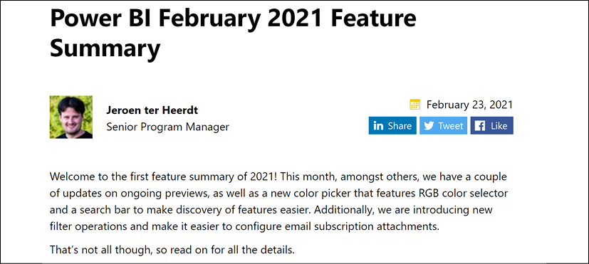
Figure 1.14: Blog post and supporting video for February 2021 update to Power BI Desktop
The Power BI Community portal provides a robust, searchable hub of information across common topics as well as an active, moderated forum of user experiences and troubleshooting. The community also maintains its own blog featuring examples and use cases from top community contributors, and links to local Power BI User Groups (PUGs), relevant events such as Microsoft Business Applications Summit (MBAS), along with various galleries such as a Themes Gallery, Data Stories Gallery, R Script Showcase, and Quick Measures Gallery.
The Power BI Ideas forum (https://ideas.powerbi.com) is a valuable source for identifying requested features and enhancements, and their status relative to future releases. Ideas are provided a status, such as "Planned," "Under Review," or "Needs Votes." The search functionality allows for filtering by these status details. Filtering for Planned ideas, particularly those with higher community vote counts, provides a sense of impactful updates to be released over a longer time horizon.
See also
For additional information on topics covered in this recipe, refer to the following links:
The Microsoft on-premises data gateway (or simply gateway) is a Windows service that runs in on-premises environments or in infrastructure-as-a-service (IaaS) data sources running in the cloud, such as virtual machines running SQL Server databases. The sole purpose of the gateway is to support secure (encrypted) and efficient data transfer between on-premises and IaaS data sources and Microsoft Azure services such as Power BI, Power Apps, Power Automate, and Azure Logic Apps, via an outbound connection to Azure Service Bus. It is important to note that if all data sources used in Power BI reports are in the cloud (and so not on-premises) and accessible by the Power BI service, then the Microsoft on-premises data gateway is not required, as the Power BI service will use native cloud gateways to access native cloud data sources; this could be something such as Azure SQL Database or Azure SQL Managed Instances.
Once installed, a gateway can be used to schedule data refreshes of imported Power BI datasets, to support Power BI reports and dashboards built with DirectQuery, plus live connections to Analysis Services databases.
A single on-premises data gateway can support the refresh and query activity for multiple data sources, and permission to use the gateway can be shared with multiple users. Currently, the gateway supports all common data sources via scheduled imports, including Open Database Connectivity (ODBC) connections, and many of the most common sources via Live Connection and DirectQuery.
Getting ready
The hardware resources required by the gateway vary based on the type of connection (import versus live connection), the usage of the reports, and dashboards in the Power BI service, and the proportion of data volume handled by the gateway versus the on-premises source systems. It is recommended to start with 8-core CPUs, 8 GB of RAM server, and Windows 2012 R2 or later for the operating system. This machine cannot be a domain controller, and to maintain the availability of Power BI content, the gateway server should always be on and connected to the internet.
Another top consideration for the gateway is the location of the gateway server in relation to the Power BI tenant and the data sources to be supported by the gateway. For example, if a SQL Server database is the primary gateway source and it runs on a server in the Western United States, and the Power BI Tenant for the organization is in the West US Azure region, then the gateway should be installed on a server or potentially an Azure virtual machine (VM) in the West US Azure region or a location in the Western United States.
Based on an analysis of current and projected workloads, the gateway resources can be scaled up or down and, optionally, additional gateways can be installed on separate servers to distribute the overall Power BI refresh and query deployment workload.
For example, one gateway server can be dedicated to scheduled refresh/import workloads, thus isolating this activity from a separate gateway server responsible for DirectQuery and Live Connection queries.
The gateway does not require inbound ports to be opened and defaults to HTTPS but can be forced to use TCP. For the default communication mode, it is recommended to whitelist the IP addresses in your data region in your firewall. This list is updated weekly and is available via the Microsoft Azure Datacenter IP list (http://bit.ly/2oeAQyd).
How to create the Gateway
The gateway has two modes, the Standard mode and the Personal mode. The Personal mode is intended for personal use, and thus cannot be shared among users within an enterprise. We will focus on the Standard mode, as the installation and configuration are essentially the same for the Personal mode:
Figure 1.15: Download the Microsoft on-premises data gateway
Select the Download standard mode link.
Once downloaded, choose Open file to run GatewayInstall.exe.
Figure 1.16: GatewayInstall.exe
Choose the file directory for the installation, accept the terms of use and privacy agreement, and then click the Install button.
Sign in to the Power BI service to register the gateway:
Figure 1.17: Registering the gateway
On the next screen after signing in, choose to Register a new gateway on this computer and then click the Next button.
Enter a user-friendly name for the gateway and a recovery key and then click the Configure button.
Figure 1.18: Final configuration information for the gateway
With the gateway installed and registered, data sources, gateway admins, and authorized data source users can be added to the Power BI service. A Manage Gateways option will be available under the gear icon in the Power BI service. See the Configuring On-Premises Gateway Data Connectionsrecipe of Chapter 12, Deploying and Distributing Power BI Content, for details on this process.
Figure 1.19: Successfully installed gateway
How it works
As new versions of the gateway become available, a notification is made available in the Status tab of the on-premises data gateway UI, as per Figure 1.19. The Power BI gateway team recommends that updates should be installed as they become available.
The Standard mode on-premises data gateway, rather than the personal mode gateway, is required for the DirectQuery datasets created in this book and the use of other Azure services in the Microsoft business application platform.
The Power BI service uses read-only connections to on-premises sources, but the other services (for example, Power Apps) can use the gateway to write, update, and delete these sources.
The recovery key is used to generate both a symmetric and an asymmetric key, which encrypts data source credentials and stores them in the cloud. The credentials area is only decrypted by the gateway machine in response to a refresh or query request. The recovery key will be needed in the following scenarios:
Migrating a gateway and its configured data sources to a different machine.
Restoring a gateway to run the service under a different domain account or restoring a gateway from a machine that has crashed.
Taking over ownership of an existing gateway from an existing gateway administrator.
Adding a gateway to an existing cluster.
It is important that the recovery key is stored in a secure location accessible to the BI/IT organization. Additionally, more than one user should be assigned as a gateway administrator in the Power BI service to provide redundancy.
There's more…
The final configuration screen for the Microsoft on-premises data gateway shown in Figure 1.18 provides several advanced options, including the following:
Add to an existing gateway cluster
Change region
Provide relay details
Gateway clusters remove single points of failure for on-premises data access. Since only a single standard gateway can be installed on a computer, each additional gateway cluster member must be installed on a different computer. If the primary gateway is not available, data refresh requests are routed to other gateway cluster members. When using gateway clusters, it is important that all gateway cluster members run the same gateway version and that offline gateway members are removed or disabled—offline gateway members will negatively impact performance.
By default, the gateway is installed in the same Azure region as your Power BI tenant in the Power BI service. In almost all cases, this setting should not be changed. However, with multi-geo support in Power BI Premium, it may be necessary to install gateways in different Azure regions. The Change Region option provides this flexibility.
Azure relays are automatically provisioned for installed gateways at the time of installation. However, the Provide relay details option allows you to provide your own relay details if you wish to associate the relay with your Azure subscription and manage the sender and listener keys for the relay. This is a very advanced option and you should fully understand Azure relays and what you are trying to accomplish before attempting this configuration. It is important to note that only WCF relays with NetTcp are supported for this feature.
See also
Details of configuring and managing data sources through the on-premises gateway are covered in Chapter 12, Deploying and Distributing Power BI Content
Installing Analyze in Excel from the Power BI Service
Excel-based data analysis and reporting artifacts, such as PivotTables, charts, and cell range formula expressions with custom formatting, remain pervasive in organizations. Although a significant portion of this content and its supporting processes can be migrated to Power BI, and despite the many additional features and benefits this migration could provide, Power BI is not intended as a replacement for all Excel-based reporting. Organizations, and in particular those departments that use Excel extensively (such as Finance and Accounting), may prefer to leverage these existing assets and quickly derive value from Power BI by both deploying Excel content to Power BI and analyzing Power BI-hosted data from within Excel.
The Power BI service's Analyze in Excel feature replaces the deprecated Microsoft Power BI Publisher for Excel. The Analyze in Excel feature allows you to use Power BI datasets in Excel and use Excel features like PivotTables, charts, and slicers to interact with the datasets.
Getting ready
To get ready to install and use the Power BI service's Analyze in Excel feature, make sure that Microsoft Excel is installed on your computer and then sign in to the Power BI service.
How to install Analyze
In the upper-right corner of any Power BI service page, click the ellipsis and then choose Download and then Analyze in Excel updates.
Figure 1.20: Downloading Analyze in Excel
On the splash screen that appears, choose the Download button.
Once the file downloads, choose the Open file link or run the file from your Downloads folder.
Figure 1.21: Analyze in Excel installer
The installation wizard for Microsoft Analysis Services OLE DB Provider Setup launches. Click the Next button.
Accept the licensing terms and click the Next button.
Click the Install button to begin the installation.
Once the installation finishes, click the Finish button.
Figure 1.22: Successful installation of the Analyze in Excel feature
How it works
Now that the Microsoft Analysis Services OLE DB provider is installed locally on your computer, you can use the Analyze in Excel feature for reports. To use Analyze in Excel, follow these steps:
Click on any workspace to see the dashboards, reports, and datasets available in that workspace.
Hover over a report or dataset, click the "more" menu (three vertical dots), and then choose Analyze in Excel.
Figure 1.23: Analyze in Excel
If you receive a splash screen informing you that you need some Excel updates, click the I've already installed these updates link.
The Power BI service creates and downloads an Excel file that is designed and structured for use with Analyze in Excel. The name of the Excel file will match the name of the Power BI report or dataset from which the Excel file was created.
Open the Excel file using the Open file link, or open the file from your Downloads folder.
Make sure to click the Enable Editing button in Excel, as the file will open in PROTECTED VIEW.
Finally, click the Enable Content button to activate external data connections.
The Excel file contains a single page/tab with the same name as the report or dataset from which the report/dataset was created. This page contains a PivotTable called PivotTable1 that is tied to the Power BI dataset in the Power BI service. Clicking on the PivotTable presents the dataset tables, columns, and measures in the PivotTable Fields pane.
There's more…
Depending on the Office license, users can also connect to Power BI datasets from the Insert PivotTable option and from Data - Get Data experience in Excel.
Table 1.1 lists blogs that contain many articles and examples on Power BI's tools and features.
Table 1.1: A list of blogs that detail Power BI features and tools, with examples on how to use them
With the exception of Kasper On BI, all of these blogs are from non-Microsoft employees and thus do not necessarily reflect the views of Microsoft or recommended practices with its products. Additionally, several of these blogs are not exclusive to Power BI; they may also include coverage of other MSBI, Azure, SQL Server, and Office 365 tools and services.
An additional resource for learning and deploying Power BI is Adam Saxton's and Patrick LeBlanc's Guy in a Cube video channel (http://bit.ly/2o2lRqU). These videos feature concise, hands-on reviews and resolutions to common issues and scenarios. They also have high-level summaries of recent Power BI updates and releases. As members of Microsoft, Adam and Patrick can incorporate specific guidance from Microsoft product and technical teams, and they regularly identify recent blog posts from the wider Power BI community. It is highly recommended that you subscribe to this channel so that you are always aware of new posts!
Power BI professionals responsible for the development of semantic models (datasets) routinely utilize additional tools beyond Power BI Desktop to create and manage their models. For example, they use Tabular Editor to quickly implement changes to measures or add new objects, such as perspectives and calculation groups. Likewise, the ALM Toolkit is routinely used to deploy incremental and metadata-only changes to Power BI.
Another such tool is DAX Studio, a third-party tool used to query data models, edit and format code, browse the structure and metadata of data models, and analyze the performance and execution characteristics of DAX queries. For larger and more complex data models and expressions, as well as projects involving multiple models, DAX Studio becomes an essential supplement to the development and performance-tuning processes.
DAX (Data Analysis Expressions) is the "language of Power BI," as it is used to create the measures and queries visualized in Power BI reports and dashboards. Power BI generates and submits DAX queries to the source data model based on the structure of the visualization, user selections, and filters—just as other tools such as Excel generate MDX queries based on the selections and structure of pivot tables and slicers from workbooks. DAX expressions are also used to define security roles and can optionally be used to create columns and tables in data models based on other tables and columns in the model, which can be refreshed at processing time and used by measures and queries. DAX serves the same function in Azure Analysis Services (AAS) and SQL Server Analysis Services (SSAS) tabular models as well as Power Pivot for Excel models, it's essential that BI professionals have a robust tool for developing and analyzing DAX code and the data models containing these expressions.
How to Install and Configure Additional Tools
Download the latest version from the DAX Studio website: https://daxstudio.org/downloads/. The installer version is a single file that provides a wizard-based installation and setup, while the portable version is a ZIP file that does not provide a wizard-based installation.
Use the Open file link or run the file from your Downloads folder.
Figure 1.24: DAX Studio installation file
Once the installation starts, select the option to Install for all users (recommended).
Accept the license agreement and click the Next button.
Choose a folder path to install the tool and click the Next button.
Choose whether the DAX Studio add-in for Excel will also be installed. Click the Next button. Note that:
The add-in for Excel is required to connect to Power Pivot for Excel data models.
Additionally, when DAX Studio is opened from Excel, query results can be exported directly to Excel tables.
Select the Start menu folder (the default is DAX Studio) and then click the Next button.
Check the box to Create a desktop shortcut and then click the Next button.
Finally, click the Install button.
Figure 1.25: Successful installation of DAX Studio
How it works
Upon full installation, including the add-in for Excel, a DAX Studio icon will appear on the Add-Ins tab in the Excel ribbon, like the one shown in Figure 1.26.
Figure 1.26: DAX Studio in the Add-Ins ribbon in Excel
The full installation with the Excel add-in is recommended, as this enables direct output of DAX query results to Excel workbook tables and is required for connecting to Power Pivot data models. For Power Pivot to be available, you must enable the Microsoft Power Pivot for Excel COM Add-in using the File menu in Excel, and then choose Options. Click on the Add-Ins tab. Select COM Add-ins from the drop-down control at the bottom of the dialog box and then select the Go… button. The DAX Studio add-in can be deactivated using this same interface. To demonstrate how this works in Excel, follow these steps:
Open an Excel workbook.
Open a Power BI Desktop file.
From the Add-Ins tab of the Excel toolbar, activate DAX Studio.
Figure 1.27: The DAX Studio add-in for the Excel Connect dialog
For now, click the Cancel button and then close the Excel workbook.
DAX Studio can also be used as a standalone application outside of Excel. The standalone application provides the same functionality as the Excel add-in, excluding connectivity to Power Pivot for Excel data models and Excel output options. To demonstrate this, follow these steps:
Launch the DAX Studio standalone Windows application.
Connect to a Power BI Desktop file or SSAS tabular instance.
The Advanced Options settings of the Connect dialog box allow you to control exactly how DAX Studio connects to the model, such as the ability to specify a security role, effective user name identity, and locale when defining connections to data models and when analyzing trace events associated with DirectQuery data models (that is, the SQL statements generated and passed to sources).
Figure 1.28: DAX Studio advanced connection options
There's more…
There are two additional tools that are useful for Power BI. Namely:
ALM Toolkit
Tabular Editor
The ALM Toolkit is a third-party tool from MAQ Software that provides advanced features such as Power BI dataset comparison, code merging, partial deployments and bug fixes, source control integration for dataset metadata, and definition reuse between tabular models. To download and install the ALM Toolkit, follow these steps:
Near the top of the page, click the DOWNLOAD LATEST VERSION button.
Use the Open file link to launch AlmToolkitSetup.msi or open the file from your Downloads folder.
Figure 1.29: ALM Toolkit installer
Click the Next button on the initial installation screen.
Accept the license agreement and click the Next button.
Choose a Folder path and click the Next button.
On the final installation screen, click the Next button to start the installation.
Figure 1.30: Successfully installed ALM Toolkit
The Power BI ALM Toolkit can now be launched from the Windows Start menu.
Another powerful tool is Tabular Editor. At the time of this book being published, Tabular Editor comes in two versions, the free, open source version 2 and the commercial version 3. Tabular Editor is an alternative to SQL Server Data Tools (SSDT) for authoring and editing tabular models for Analysis Services. Tabular Editor provides a hierarchical view of the objects in your tabular model metadata, such as columns, measures, and hierarchies. Tabular Editor integrates with Power BI Desktop, allowing batch changes to DAX measures and enabling advanced capabilities such as calculation groups and perspectives. Finally, Tabular Editor also enables offline editing capabilities by allowing you to open the tabular model directly from Model.bim files. To install and use Tabular Editor, follow these steps:
In this chapter, we walked through the installation and configuration of the primary tools that BI professionals utilize to design and develop Power BI content, including official Microsoft tools such as Power BI Desktop, the On-premises data gateway, and Analyze in Excel, as well as third-party tools such as DAX Studio, the ALM Toolkit, and Tabular Editor. These tools, coupled with the Power BI service, are the primary resources needed by BI professionals to be productive with Power BI. Later chapters of this book explore the use of these tools in developing and enhancing Power BI solutions.
2
Accessing and Retrieving Data
Power BI Desktop contains a rich set of connectors and transformation capabilities that support the integration and enhancement of data from many different sources. These features are all driven by a powerful functional language and query engine, M, which leverages source system resources when possible and can greatly extend the scope and robustness of the data retrieval process beyond what's possible via the standard query editor interface alone. As with almost all BI projects, the design and development of the data access and retrieval process has significant implications for the analytical value, scalability, and sustainability of the overall Power BI solution.
In this chapter, we dive into Power BI Desktop's Get Data experience and walk through the process of establishing and managing data source connections and queries. Examples are provided of using the Power Query Editor interface and the M language directly, to construct and refine queries to meet common data transformation and cleansing needs. In practice and as per the examples, a combination of both tools is recommended to aid the query development process.
A full explanation of the M language and its implementation in Power BI is outside the scope of this book, but additional resources and documentation are included in the sections titled There's more... and See also.
The recipes included in this chapter are as follows:
Viewing and Analyzing M Functions
Managing Queries and Data Sources
Using DirectQuery
Importing Data
Applying Multiple Filters
Selecting and Renaming Columns
Transforming and Cleansing Source Data
Creating Custom Columns
Combining and Merging Queries
Selecting Column Data Types
Visualizing the M Library
Profile Source Data
Diagnosing Queries
Technical Requirements
The following are required to complete the recipes in this chapter:
Power BI Desktop
SQL Server 2019 or newer with the AdventureWorksDW2019 database installed. This database and instructions for installing it are available here: http://bit.ly/2OVQfG7
Viewing and Analyzing M Functions
Every time you click on a button to connect to any of Power BI Desktop's supported data sources or apply any transformation to a data source object, such as changing a column's data type, one or multiple M expressions are created reflecting your choices. These M expressions are automatically written to dedicated M documents and, if saved, are stored within the Power BI Desktop file as Queries. M is a functional programming language like F#, and it is important that Power BI developers become familiar with analyzing, understanding, and later, writing and enhancing the M code that supports their queries.
Getting ready
To prepare for this recipe, we will first build a query through the user interface that connects to the AdventureWorksDW2019 SQL Server database, retrieves the DimGeography table, and then filters this table to a single country, such as the United States:
Open Power BI Desktop and click on Get Data from the Home tab of the ribbon. Select SQL Server from the list of database sources. For future reference, if the data source is not listed in Common data sources, more data sources are available by clicking More… at the bottom of the list.
A dialog window is displayed asking for connectivity information. Ensure that Data Connectivity mode is set to Import. Enter the name of your SQL server as well as the AdventureWorksDW2019 database. In Figure 2.1, my SQL server is installed locally and running under the instance MSSQLSERVERDEV. Thus, I set the server to be localhost\MSSQLSERVERDEV to specify both the server (localhost) and the instance. If you leave the Database field blank, this will simply result in an extra navigation step to select the desired database.
Figure 2.1: SQL Server Get Data dialog
If this is the first time connecting to this database from Power BI, you may be prompted for some credentials. In addition, you may also be warned that an encrypted connection cannot be made to the server. Simply enter the correct credentials for connecting and click the Connect button. For the encryption warning, simply click the OK button to continue.
A navigation window will appear, with the different objects and schemas of the database. Select the DimGeography table from the Navigator window and click the Transform Data button.
The Power Query Editor launches in a new window with a query called DimGeography; preview data from that table is displayed in the center of the window. In the Power Query Editor window, use the scroll bar at the bottom of the central display area to find the column called EnglishCountryRegionName. You can also select a column and then click Go to Column in the ribbon of the View menu to search for and navigate to a column quickly. Click the small button in the column header next to this column to display a sorting and filtering drop-down menu.
Uncheck the (Select All) option to deselect all values and then check the box next to a country, such as the United States, before clicking the OK button.
Figure 2.2: Filtering for United States only in the Query Editor
Note that the button for the EnglishCountryRegionName column changes to display a funnel icon. Also notice that, in the Query Settings pane on the right side of the window, a new option under APPLIED STEPS has appeared called Filtered Rows.
Figure 2.3: The Query Settings pane in the Query Editor
How to View and Analyze M Functions
There are two methods for viewing and analyzing the M functions comprising a query; they are as follows:
Formula bar
Advanced Editor
The formula bar exposes the M function for the current step only. This formula bar appears just above the column headers for the preview data in the central part of the window. If you do not see this formula bar, click the View tab and check the box next to Formula Bar in the Layout section of the ribbon. All such areas of interest are boxed in red in Figure 2.4.
Figure 2.4: The Power Query Editor formula bar
When the Source step is selected under APPLIED STEPS in the Query Settings pane, as seen in Figure 2.3, we see the connection information specified on the initial dialog after selecting Get Data and then SQL Server. The M function being used is Sql.Database. This function is accepting two parameters: the server name, localhost\MSSQLSERVERDEV, and the database name, AdventureWorksDW2019. Clicking on other steps under APPLIED STEPS exposes the formulas for those steps, which are technically individual M expressions.
The formula bar is useful to quickly understand the M code behind a particular query step. However, it is more convenient and often essential to view and edit all the expressions in a centralized window. This is the purpose of the Advanced Editor.To launch the Advanced Editor, follow these steps:
Click on the Home tab and then select Advanced Editor from the Query section of the ribbon, as shown in Figure 2.5. Alternatively, the Advanced Editor can also be accessed from the View tab, shown in Figure 2.4.
Figure 2.5: Advanced Editor on the Home tab of the Query Editor
The Advanced Editor dialog is displayed, exposing all M functions and comments that comprise the query. The M code can be directly edited from within this dialog.
Figure 2.6: The Advanced Editor view of the DimGeography query
As shown in Figure 2.6, using the Advanced Editor will mean that all of the Power Query code that comprises the query can be viewed in one place.
How it works
The majority of queries created for Power BI follow the let...in structure, as per this recipe. Within the let block, there are multiple steps with dependencies among those steps. For example, the second step, dbo_DimGeography, references the previous step, Source. Individual expressions are separated by commas, and the expression referred to following the in keyword is the expression returned by the query. The individual step expressions are technically known as "variables".
Variable names in M expressions cannot have spaces without being preceded by a hash sign and enclosed in double quotes. When the Query Editor graphical interface is used to create M queries, this syntax is applied automatically, along with a name describing the M transformation applied. This behavior can be seen in the Filtered Rows step in Figure 2.6. Applying short, descriptive variable names (with no spaces) improves the readability of M queries.
Note the three lines below the let statement. These three lines correspond to the three APPLIED STEPS in our query: Source, Navigation, and Filtered Rows. The query returns the information from the last step of the query, Filtered Rows. As more steps are applied, these steps will be inserted above the in statement and the line below this will change to reference the final step in the query.
M is a case-sensitive language. This includes referencing variables in M expressions (RenameColumns versus Renamecolumns) as well as the values in M queries. For example, the values "Apple" and "apple" are considered unique values in an M query.
It is recommended to use the Power Query Editor user interface when getting started with a new query and when learning the M language. After several steps have been applied, use Advanced Editor to review and optionally enhance or customize the M query. As a rich, functional programming language, there are many M functions and optional parameters not exposed via the Power Query Editor's graphical user interface. Going beyond the limits of the Power Query Editor enables more robust data retrieval, integration, and data mashup processes.
The M engine also has powerful "lazy evaluation" logic for ignoring any redundant or unnecessary variables, as well as short-circuiting evaluation (computation) once a result is determinate, such as when one side (operand) of an OR logical operator is computed as True. Lazy evaluation allows the M query engine to reduce the required resources for a given query by ignoring any unnecessary or redundant steps (variables). The order of evaluation of the expressions is determined at runtime—it doesn't have to be sequential from top to bottom.
In the following example, presented in Figure 2.7, a step for retrieving Canada was added and the "Filtered Rows" step for filtering the results for the United States was ignored. Since the CanadaOnly variable satisfies the overall let expression of the query, only the Canada query is issued to the server as if the "Filtered Rows" step were commented out or omitted.
Figure 2.7: Revised query that ignores the "Filtered Rows" step to evaluate Canada only
As a review of the concepts covered thus far and for future reference, Table 2.1 presents a glossary of the main concepts of the M language utilized in this book.
Concept
Definition
Expression
Formulas evaluated to yield a single value. Expressions can reference other values, such as functions, and may include operators.
Value
The result of evaluating an expression. Values can be categorized into types which are either primitive, such as text ("abc"), or structured kinds, such as tables and lists.
Function
A value that produces a new one based on the mapping of input values to the parameters of the function. Functions can be invoked by passing parameter values.
Type
A value that classifies other values. The structure and behavior of values are restricted based on the classification of their type, such as Record, List, or Table.
let
An expression that allows a set of unique expressions to be assigned names (variables) and evaluated (if necessary) when evaluating the expression following the in expression in a let...in construct.
Variable
A unique, named expression within an environment to be conditionally evaluated. Variables are represented as Applied Steps in the Query Editor.
Environment
A set of variables to be evaluated. The global environment containing the M library is exposed to root expressions.
Evaluation
The computation of expressions. Lazy evaluation is applied to expressions defined within let expressions; evaluation occurs only if needed.
Operators
A set of symbols used in expressions to define the computation. The evaluation of operators depends on the values to be operated on.
Table 2.1: M Language elements
There's more...
M queries are not intended as a substitute for the data loading and transformation workloads typically handled by enterprise data integration and orchestration tools such as Azure Data Factory (ADF), Azure Databricks, or SQL Server Integration Services (SSIS). However, just as BI professionals carefully review the logic and test the performance of SQL stored procedures and ETL packages supporting their various cubes and reporting environments, they should also review the M queries created to support Power BI models and reports. When developing retrieval processes for Power BI models, consider these common ETL questions:
How are queries impacting the source systems?
Can we make our queries more resilient to changes in source data so that they avoid failure?
Are our queries efficient and simple to follow and support, or are there unnecessary steps and queries?
Are our queries delivering sufficient performance to the BI application?
Is our process flexible, such that we can quickly apply changes to data sources and logic?
Can some or all of the required transformation logic be implemented in a source system such as the loading process for a data warehouse table or a SQL view?
One of the top performance and scalability features of M's query engine is called Query Folding. If possible, the M queries developed in Power BI Desktop are converted ("folded") into SQL statements and passed to source systems for processing.
If we use the original version of the query from this recipe, as shown in Figure 2.6, we can see Query Folding in action. The query from this recipe was folded into the following SQL statement and sent to the server for processing, as opposed to the M query engine performing the processing locally. To see how this works, perform the following:
Right-click on the Filtered Rows step in the APPLIED STEPS section of the Query Settings pane, and select View Native Query.
Figure 2.8: View Native Query in Query Settings
The Native Query dialog is then displayed, as shown in Figure 2.9.
Figure 2.9: The SQL statement generated from the DimGeography M query
Finding and revising queries that are not being folded to source systems is a top technique for enhancing large Power BI datasets. See the Pushing Query Processing Back to Source Systems recipe of Chapter 11, Enhancing and Optimizing Existing Power BI Solutions, for an example of this process.
The M query engine also supports partial query folding. A query can be "partially folded", in which a SQL statement is created resolving only part of an overall query. The results of this SQL statement would be returned to Power BI Desktop (or the on-premises data gateway) and the remaining logic would be computed using M's in-memory engine with local resources. M queries can be designed to maximize the use of the source system resources, by using standard expressions supported by query folding early in the query process. Minimizing the use of local or on-premises data gateway resources is a top consideration for improving query performance.
There are limits, however, to query folding. For example, no folding takes place once a native SQL query has been passed to the source system, such as when passing a SQL query directly through the Get Data dialog using the Advanced options. Figure 2.10 displays a query specified in the Get Data dialog, which is included in the Source step.
Figure 2.10: Providing a user-defined native SQL query
Any transformations applied after this native query will use local system resources. Therefore, the general implication for query development with native or user-defined SQL queries is that if they are used, try to include all required transformations (that is, joins and derived columns), or use them to utilize an important feature of the source database that is not being utilized by the folded query, such as an index.
Some other things to keep in mind regarding Query Folding are the following:
Not all data sources support Query Folding, such as text and Excel files.
Not all transformations available in the Query Editor or via M functions are directly supported by some data sources.
The privacy levels defined for the data sources will also impact whether folding is used or not.
SQL statements are not parsed before they are sent to the source system.
The Table.Buffer function can be used to avoid query folding. The table output of this function is loaded into local memory, and transformations against it will remain local.
There are two primary components of queries in Power BI: the data source and the query logic executed against this source. The data source includes the connection method (DirectQuery or Import), a privacy setting, and the authentication credentials. The query logic consists of the M expressions represented as queries in the Query Editor and stored internally as M documents.
In a typical corporate BI tool, such as SQL Server Reporting Services (SSRS), the properties of a data source such as the server and database name are defined separately from the queries that reference them. In Power BI Desktop, however, by default, each individual query created explicitly references a given data source (for example, server A and database B). This creates an onerous, manual process of revising each query if it becomes necessary to change the source environment or database.
This issue is addressed in the following steps by using dedicated M queries to centralize and isolate the data source information from the individual queries. Additionally, detail and reference information is provided on managing source credentials and data source privacy levels.
Getting ready
To prepare for this recipe, we will create a query from a database, which will serve as the source for other queries via the standard Get Data and Power Query Editor experience described in the previous recipe. To create this query, perform the following steps:
Open Power BI Desktop.
If you have already connected to your SQL Server, you can find the connection under Recent sources on the Home tab. Otherwise, on the Home tab, select Get Data from the ribbon, and choose SQL Server.
Select a table or view, and click on Transform Data to import the data.
The Power Query Editor window will launch and a preview of the data will appear. In this example, we have chosen the DimEmployee table from the AdventureWorksDW2019 database on our local SQL Server instance MSSQLSERVERDEV. The full code of the query can be viewed in the Advanced Editor window but is also shown below.
let
Source = Sql.Database("localhost\MSSQLSERVERDEV", "AdventureWorksDW2019"),
dbo_DimEmployee = Source{[Schema="dbo",Item="DimEmployee"]}[Data]
in
dbo_DimEmployee
Copy just the Source line (in bold in the previous step).
Close the Advanced Editor window by clicking the Cancel button.
Remain in the Power Query Editor window.
How to Manage Queries and Data Sources
In this example, a separate data source connection query is created and utilized by individual queries. By associating many individual queries with a single (or a few) data source queries, it is easy to change the source system or environment, such as when switching from a Development environment to a User Acceptance Testing (UAT) environment. We will then further separate out our data source queries and our data load queries using query groups. To start isolating our data source queries from our data load queries, follow these steps:
Create a new, blank query by selecting New Source from the ribbon of the Home tab and then select Blank Query.
Open the Advanced Editor and replace the Source line with the line copied from the query created in Getting ready. Be certain to remove the comma (,) at the end of the line. The line prior to the in keyword should never have a comma at the end of it. Your query should look like the following:
let
Source = Sql.Database("localhost\MSSQLSERVERDEV", "AdventureWorksDW2019")
in
Source
Click the Done button to close the Advanced Editor window.
Rename the query by clicking on the query and editing the Name in the Query Settings pane. Alternatively, in the Queries pane, right-click the query and choose Rename. Give the source query an intuitive name, such as AdWorksDW.
Now click on the original query created in the Getting ready section above. Open the Advanced Editor. Replace the Source step expression of the query with the name of the new query. As you type the name of the query, AdWorksDW, you will notice that IntelliSense will suggest possible values. The query should now look like the following:
let
Source = AdWorksDW,
dbo_DimEmployee = Source{[Schema="dbo",Item="DimEmployee"]}[Data]
in
dbo_DimEmployee
Click the Done button to come out of Advanced Editor. The preview data refreshes but continues to display the same data as before.
We can take this concept of isolating our data source queries from data loading queries further by organizing our queries into query groups. You should also use query groups to help isolate data source and staging queries from queries loaded to the dataset. To see how query groups work, follow these steps:
Duplicate the revised data loading query that loads the DimEmployee table, created in Getting ready. Simply right-click the query in the Queries pane and choose Duplicate.
With the new query selected in the Queries pane, click the gear icon next to the Navigation step in the APPLIED STEPS area of the Query Settings pane.
Choose a different dimension table or view, such as DimAccount, and then click the OK button. Dimension tables and views start with "Dim".
Rename this new query to reflect the new table or view being loaded.
Create a new group by right-clicking in a blank area in the Queries window and then selecting New Group…
In the New Group dialog, name the group Data Sources and click the OK button.
Create another new group and name this group Dimensions.
Move the AdWorksDW query to the Data Sources group by either dragging and dropping in the Queries pane or right-clicking the query and choosing Move To Group…, and then select the group.
Move the other queries to the Dimensions group.
Finally, ensure that the query in the Data Source group is not actually loaded as a separate table in the data model. Right-click on the query and uncheck the Enable Load option. This makes the query available to support data retrieval queries but makes the query invisible to the model and report layers. The query name will now be italicized in the Queries pane.
Your Queries pane should now look similar to that in Figure 2.11:
Figure 2.11: Queries organized into query groups
How it works
The Query Dependencies view in Power Query provides a visual representation of the relationships between the various queries. You can access this dialog by using the View tab and then selecting Query Dependencies in the ribbon.
Figure 2.12: The Query Dependencies View in Query Editor
In this example, a single query with only one expression is used by multiple queries, but more complex interdependencies can be designed to manage the behavior and functionality of the retrieval and analytical queries. This recipe illustrates the broader concept used in later recipes called "composability", where functions call other functions; this is one of the primary strengths of functional programming languages such as M, DAX, R, and F#.
There's more...
Power BI Desktop saves data source credentials for each data source defined, as well as a privacy level for that source. It is often necessary to modify these credentials as passwords change. In addition, setting privacy levels on data sources helps prevent confidential information from being exposed to external sources during the Query Folding process. Data source credentials and settings are not stored in the PBIX file, but rather on the computer of the installed application.
To manage data source credentials and privacy levels, perform the following steps:
From Power BI Desktop (not the Power Query Editor), click on File in the menu, then click Options and settings, and finally click Data source settings.
Click on the Global Permissions radio button such that your settings are persisted into other Power BI Desktop reports.
Select a data source.
Click the Edit Permissions button.
From the Edit Permissions dialog, you can click the Edit button under the Credentials heading to set the authentication credentials for the data source. In addition, you can set the privacy level for the data source using the drop-down under the Privacy Level heading. Click OK to save your settings.
Figure 2.13: Edit credentials and privacy level for a data source
Definitions of the available Privacy Level settings are provided in Table 2.2.
Privacy Setting
Description
None
No privacy level defined.
Private
A Private data source is completely isolated from other data sources during query retrieval. For example, marking a text file Private would prevent that data from being processed on an external server.
Organizational
An Organizational data source is isolated from all public data sources but is visible to other organizational data sources during retrieval.
Public
A Public data source is visible to other sources. Only files, internet sources, and workbook data can be marked as Public.
Table 2.2: Privacy Level Settings
Just as relational databases such as SQL Server consider many potential query plans, the M engine also searches for the most efficient methods of executing queries, given that the data sources and query logic are defined. In the absence of data source privacy settings, the M engine is allowed to consider plans that merge disparate data sources. For example, a local text file of customer names can be merged with an external or third-party server, given the better performance of the server. Defining privacy settings isolates data sources from these operations thus increasing the likelihood of local resource usage, and hence query performance may be reduced.
One of the most valuable features of Power BI is its deep support for real-time and streaming datasets, with the ability to provide immediate visibility to business processes and events as this data is created or updated. As Power BI Desktop's data modeling engine reflects the latest Analysis Services features, it becomes feasible to design DirectQuery models or composite models (DirectQuery and import) in Power BI Desktop, and thus avoid the scalability limitations and scheduled refresh requirements of models based on importing data.
The three most common candidates for DirectQuery or composite model projects are as follows:
The data model would consume an exorbitant amount of memory if all tables were fully loaded into memory. Even if the memory size is technically supported by large Power BI Premium capacity nodes, this would be a very inefficient and expensive use of company resources as most BI queries only access aggregated data representing a fraction of the size. Composite models which mix DirectQuery and Dual storage mode tables with in-memory aggregation tables is the recommended architecture for large models going forward.
Access to near-real-time data is of actionable or required value to users or other applications, such as is the case with notifications. For example, an updateable Nonclustered Columnstore index could be created on OLTP disk-based tables or memory-optimized tables in SQL Server to provide near-real-time access to database transactions.
A high-performance and/or read-optimized system is available to service report queries, such as a SQL Server or Azure SQL Database, with the Clustered Columnstore index applied to fact tables.
This recipe walks through the primary steps in designing the data access layer that supports a DirectQuery model in Power BI Desktop. As these models are not cached into memory and dynamically convert the DAX queries from report visualizations to SQL statements, guidance is provided to maintain performance. Additional details, resources, and documentation on DirectQuery's current limitations and comparisons with the default import mode are also included to aid your design decision.
Getting ready
Choose a database to serve as the source for the DirectQuery data model.
Create a logical and physical design of the fact and dimension tables of the model including the relationship keys and granularity of the facts. The AdventureWorksDW database is a good example of data designed in this manner.
Determine or confirm that each fact-to-dimension relationship has referential integrity. Providing this information to the DirectQuery model allows for more performant inner join queries.
Create view objects in the source database to provide efficient access to the dimensions and facts defined in the physical design.
Be aware that DirectQuery models are limited to a single source database and not all databases are supported for DirectQuery. If multiple data sources are needed, such as SQL Server and Oracle, or Teradata and Excel, then the default Import mode model, with a scheduled refresh to the Power BI Service, will be the only option.
How to use DirectQuery
For this recipe, we will use the AdventureWorksDW2019 database that has been used thus far in this chapter. To implement this recipe, follow these steps:
Create a new Power BI Desktop file.
From the Home tab, click on Get Data in the ribbon and then SQL Server.
In the Data Connectivitymode section, choose the DirectQuery radio option.
Figure 2.14: Creating a DirectQuery data source
Select a table or view to be used by the model via the Navigator dialog, such as the FactResellerSales table, and then click the Transform Data button.
Duplicate the initial query and revise the Navigation step to reference an additional view supporting the model, such as the DimReseller. This can be done by editing the Item in the formula bar or by clicking on the gear icon next to the Navigation step under APPLIED STEPS in the Query Settings pane. Also, rename this query to reflect the data being referenced.
Figure 2.15: Editing the Navigation step in the formula bar
Repeat step 5 for all required facts and dimensions. For example:
DimEmployee
DimPromotion
DimCurrency
DimSalesTerritory
Click the CloseandApply button.
The Report Canvas view will confirm that the model is in DirectQuery mode via the status bar at the bottom right (see Figure 2.16). In addition, the Data view in the left-hand pane, which is visible for import models, will not be visible.
Figure 2.16: DirectQuery Status in Power BI Desktop
How it works
The M transformation functions supported in DirectQuery are limited by compatibility with the source system. The Power Query Editor will advise when a transformation is not supported in DirectQuery mode, per Figure 2.17.
Figure 2.17: A warning in Query Editor that the IsEven function is not supported in DirectQuery mode
Given this limitation and the additional complexity the M-based transforms would add to the solution, it is recommended that you embed all the necessary logic and transforms in the source relational layer. Ideally, the base tables in the source database themselves would reflect these needs. As a secondary option, a layer of views can be created to support the DirectQuery model.
If the database objects themselves cannot be revised, the Value.Native M function can be used to directly pass the SQL statement from Power BI Desktop to the source database, as per Figure 2.18.
Figure 2.18: The Value.Native function used to pass a SQL statement to a source system
As report visualizations are refreshed or interacted with in Power BI, the DAX queries from each visualization are translated into SQL statements, utilizing the source SQL statements to return the results. Be aware that Power BI does cache query results with DirectQuery models. Therefore, when accessing a recently utilized visual, a local cache may be used rather than a new query sent to the source.
The SQL statements passed from Power BI to the DirectQuery data source include all columns from the tables referenced by the visual.
For example, a Power BI visual with SalesAmount from the FactResellerSales table grouped by ResellerName from DimReseller would result in a SQL statement that selects the columns from both tables and implements the join defined in the model. However, as the SQL statement passed embeds these source views as derived tables, the relational engine is able to generate a query plan that only scans the required columns to support the join and aggregation.
There's more...
The performance and scalability of DirectQuery models are primarily driven by the relational data source. A denormalized star schema with referential integrity and a system that is isolated from OLTP workloads is recommended if near real-time visibility is not required. Additionally, in-memory and columnar features available to supported DirectQuery sources are recommended for reporting and analytical queries.
By default, DirectQuery models generate outer join SQL queries to ensure that measures return the correct value even if there's not a related dimension. However, you can configure DirectQuery models to send inner join queries. This is done by editing the relationship between tables in the modeling view by checking the Assume referential integrity setting (see Figure 2.19). Along with source system resources, this is one of the top factors contributing to the DirectQuery model's performance.
Figure 2.19: Activating referential integrity assumption in relationships
Of course, you should ensure that there is referential integrity in the source before enabling this setting; otherwise, incorrect results could be returned.
The design of the source relational schema and the hardware resources of this system can, of course, greatly impact the performance of DirectQuery models.
A classic star-schema design with denormalized tables is recommended to reduce the required join operations at query time. Optimizing relational fact tables with column store technologies such as the Clustered Columnstore Index for SQL Server and table partitions will also significantly benefit DirectQuery models.
The Power BI data sources documentation provides a detailed list of data sources broken down by the connectivity options supported: http://bit.ly/30N5ofG
Importing Data
Import is the default data connectivity mode for Power BI Desktop. Import models created in Power BI Desktop use the same in-memory, columnar compressed storage engine (VertiPaq) featured in Analysis Services Tabular 2016+ import models. Import mode models support the integration of disparate data sources (for example, SQL Server and DB2) and allow more flexibility in developing metrics and row-level security roles via full support for all DAX functions.
There are some limits for Import mode datasets, however. For example, Power BI Pro license users cannot publish Power BI Desktop files to shared capacity in the Power BI service that are larger than 1GB. Power BI Premium (dedicated, isolated hardware) supports datasets of 10GB in size and larger (with large datasets enabled, dataset size is limited by the Premium capacity size or the maximum size set by the administrator). With such large datasets, it is important to consider employing incremental refresh where only new and changed data is refreshed and imported, instead of the entire dataset being refreshed.
This recipe describes a process of using M and the Query Editor to develop the Import mode queries for a standard star-schema analytical model. A staging query approach is introduced as a means of efficiently enhancing the dimensions of a model. In addition, tips are included for using fewer resources during the refresh and avoiding refresh failures from revised source data. More details of these methods are included in other recipes in this chapter.
Getting ready
In this example, the DimProduct, DimProductSubcategory, and DimProductCategory tables from the AdventureWorksDW2019 database are integrated into a single import query. This query includes all product rows, only the English language columns, and user-friendly names. Many-to-one relationships have been defined in the source database.
To prepare for this recipe, do the following:
Open Power BI Desktop.
Create an Import mode data source query called AdWorksDW. This query should be similar to the following:
let
Source = Sql.Database("localhost\MSSQLSERVERDEV", "AdventureWorksDW2019")
in
Source
Isolate this query in a query group called Data Sources.
Disable loading of this query.
For additional details on performing these steps, see the Managing Queries and Data Sources recipe in this chapter.
How to import data
To implement this recipe, perform the following steps:
Right-click AdWorksDW and choose Reference. This creates a new query that references the AdWorksDW query as its source.
Select this new query and, in the preview data, find the DimProduct table in the Name column. Click on the Table link in the Data column for this row.
Rename this query DimProduct.
Repeat steps 1 – 3 for the DimProductCategory and DimProductSubcategory tables.
Create a new query group called Staging Queries.
Move the DimProduct, DimProductCategory, and DimProductSubcategory queries to the StagingQueries group.
Disable loading for all queries in the Staging Queries group. Your finished set of queries should look similar to Figure 2.20.
Figure 2.20: Staging Queries
The italics indicate that the queries will not be loaded into the model.
Create a new Blank Query and name this query Products.
Open the Advanced Editor for the Products query.
In the Products query, use the Table.NestedJoin function to join the DimProduct and DimProductSubcategory queries. This is the same function that is used if you were to select the Merge Queries option in the ribbon of the Home tab. A left outer join is required to preserve all DimProduct rows, since the foreign key column to DimProductCategory allows null values.
Add a Table.ExpandColumns expression to retrieve the necessary columns from the DimProductSubcategory table. The Products query should now have the following code:
let
ProductSubCatJoin =
Table.NestedJoin(
DimProduct,"ProductSubcategoryKey",
DimProductSubcategory,"ProductSubcategoryKey",
"SubCatColumn",JoinKind.LeftOuter
),
ProductSubCatColumns =
Table.ExpandTableColumn(
ProductSubCatJoin,"SubCatColumn",
{"EnglishProductSubcategoryName","ProductCategoryKey"},
{"Product Subcategory", "ProductCategoryKey"}
)
in
ProductSubCatColumns
The NestedJoin function inserts the results of the join into a column (SubCatColumn) as table values. The second expression converts these table values into the necessary columns from the DimProductSubcategory query and provides the simple Product Subcategory column name, as shown in Figure 2.21.
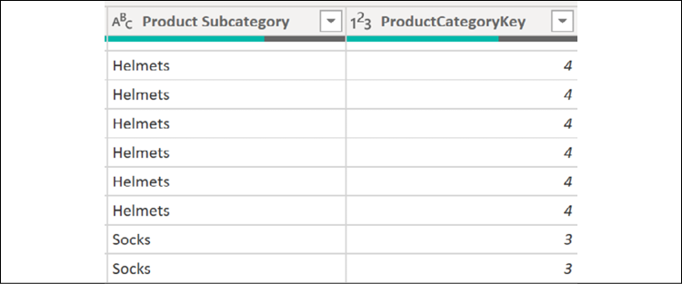
Figure 2.21: Product Subcategory Columns Added
The query preview in the Power Query Editor will expose the new columns at the far right of the preview data.
Add another expression beneath the ProductSubCatColumns expression with a Table.NestedJoin function that joins the previous expression (the Product to Subcategory join) with the DimProductCategory query.
Just like step 8, use a Table.ExpandTableColumn function in a new expression to expose the required Product Category columns.
Be certain to add a comma after the ProductSubCatColumns expression. In addition, be sure to change the line beneath the in keyword to ProductCatColumns.
The expression ProductCatJoin adds the results of the join to DimProductCategory (the right table) to the new column (ProdCatColumn). The next expression, ProductCatColumns adds the required Product Category columns and revises the EnglishProductCategoryName column to Product Category. A left outer join was necessary with this join operation as well since the product category foreign key column on DimProductSubcategory allows null values.
Add an expression after the ProductCatColumns expression that selects the columns needed for the load to the data model with a Table.SelectColumns function.
In addition, add a final expression to rename these columns via Table.RenameColumns to eliminate references to the English language and provide spaces between words.
Be certain to add a comma after the ProductCatColumns expression. In addition, change the line beneath the in keyword to RenameProductColumns.
The preview in the PowerQuery Editor for the Products query should now be similar to that shown in Figure 2.22.
Figure 2.22: Product Query Results
It is not necessary to rename the ProductKey column since this column will be hidden from the reporting layer. In practice, the product dimension would include many more columns. Closing and applying the changes results in only the Products table being loaded into the model.
The denormalized Products table now supports a three-level hierarchy in the Power BI Desktop model to significantly benefit reporting and analysis.
Figure 2.23: Product Hierarchy
How it works
The default join kind for Table.NestedJoin is a left outer join. However, as other join kinds are supported (for example, inner, anti, and full outer), explicitly specifying this parameter in expressions is recommended. Left outer joins are required in the Products table example, as the foreign key columns on DimProduct and DimProductSubcategory both allow null values. Inner joins implemented either via Table.NestedJoin or Table.Join functions are recommended for performance purposes otherwise. Additional details on the joining functions as well as tips on designing inline queries as an alternative to staging queries are covered in the Combining and Merging Queries recipe in this chapter.
When a query joins two tables via a Table.NestedJoin or Table.Join function, a column is added to the first table containing a Table object that contains the joined rows from the second table. This column must be expanded using a Table.ExpandTableColumn function, which generates additional rows as specified by the join operation.
Once all rows are generated by the join and column expansion operations, the specific columns desired in the end result can be specified by the Table.SelectColumns operation; these columns can then be renamed as desired using the Table.RenameColumns function.
There's more...
Using Import mode, we can do many things to enhance our queries to aid in report development and display. One such example is that we can add additional columns to provide automatic sorting of an attribute in report visuals. Specifically, suppose that we wish for the United States regional organizations to appear next to one another by default in visualizations. By default, since the Organization column in the DimOrganization table in AdventureWorksDW2019 is a text column, the Central Division (a part of the USA), appears between Canada and France based upon the default alphabetical sorting of text columns. We can modify a simple query that pulls the DimOrganization table to add a numeric sorting column. To see how this works, follow these steps:
Using the same Power BI file used for this recipe, open the Power Query Editor, right-click the AdWorksDW query, and select Reference.
Choose the DimOrganization table and rename the query to DimOrganization.
Open the Advanced Editor window for the DimOrganization query.
Add a Table.Sort expression to the import query for the DimOrganization dimension. The columns for the sort should be at the parent or higher level of the hierarchy.
Add an expression with the Table.AddIndexColumn function that will add a sequential integer based on the table sort applied in the previous step. The completed query should look something like the following:
Finally, with the Ctrl key pressed, select the OrganizationKey, OrganizationName, and OrgSortIndex columns by clicking their column headers. Right-click on the OrgSortIndex column and choose to Remove Other Columns. The preview data should now show as presented in Figure 2.24.
With this expression, the table is first sorted by the ParentOrganizationKey column and then by the CurrencyKey column. The new index column starts at the first row of this sorted table with an incremental growth of one per row. The net effect is that all of the US divisions are grouped together at the end of the table.
We can now use this new index column to adjust the default alphanumeric sorting behavior of the OrganizationName column. To see how this works, perform the following steps:
Choose Close & Apply to exit Power Query Editor to load the DimOrganization table.
In the Data View, select the OrganizationName column.
From the Column tools tab, set the Sort by column drop-down to the OrgSortIndex column.
Figure 2.25: Sort By in Data View
Finally, right-click on the OrgSortIndex column and select Hide in report view.
Visuals using the OrganizationName column will now sort the values by their parent organization such that the USA organizations appear together (but not alphabetically).
The application of precise and often complex filter conditions has always been at the heart of business intelligence, and Power BI Desktop supports rich filtering capabilities across its query, data model, and visualization components. In many scenarios, filtering at the query level via the Query Editor and M functions is the optimal choice, as this reduces the workload of both Import and DirectQuery data models and eliminates the need for re-applying the same filter logic across multiple reports or visualizations.
Although the Query Editor graphical interface can be used to configure filtering conditions, this recipe demonstrates M's core filtering functions and the use of M in common multi-condition filter scenarios. The M expression queries constructed in this recipe are intended to highlight some of the most common filtering use cases.
Note that applying data transformations as part of a data warehouse ETL (extract-transform-load) or ELT (extract-load-transform) process is generally preferable to using Power Query (M). BI teams and developers should be careful to avoid creating Power BI datasets that significantly deviate from existing "sources of truth".
The following eight filtering queries will be developed in this recipe:
United States customers only
Customers with three or more children
Customers with null values for either the middle name or title columns
Customers with first purchase dates between 2012 and 2013
Customers in management with the female gender or a bachelor's education
The top 100 customers based on income
A list of distinct sales territory countries
Dates less than or equal to the current date and more than ten years prior to the current date
Getting ready
To prepare for this recipe, import the DimCustomer and DimDate tables from the AdventureWorksDW2019 database by doing the following:
Open Power BI Desktop and choose Transform data from the ribbon of the Home tab to open the Power Query Editor.
Create an Import mode data source query called AdWorksDW. This query should be similar to the following:
let
Source = Sql.Database("localhost\MSSQLSERVERDEV", "AdventureWorksDW2019")
in
Source
Isolate this query in a query group called Data Sources.
Right-click AdWorksDW and choose Reference.
Choose the DimCustomer table and rename the query DimCustomer.
Repeat steps 4 and 5 for the DimDate table.
Group the dimension queries into a query group called Base Queries.
Disable the loading of all queries.
For the DimCustomer query, find the DimGeography column. In the column header, click the diverging arrows icon, uncheck (Select All Columns), and then check the box next to CountryRegionCode and DimSalesTerritory before clicking the OK button.
Figure 2.27: Expanding DimGeography to Include CountryRegionCode and DimSalesTerritory
Now expand DimGeography.DimSalesTerritory and only select the SalesTerritoryCountry column.
Rename the DimGeography.CountryRegionCode column to CountryCode and the DimGeography.DimSalesTerritory.SalesTerritoryCountry column to SalesTerritoryCountry.
For additional details on performing these steps, see the Managing Queries and Data Sources recipe in this chapter.
How to Apply Multiple Functions
To implement this recipe, use the following steps:
Right-click the DimCustomer query, choose Reference,and then open the Advanced Editor window for this query. Use the Table.SelectRows function to apply the US query predicate and rename the query United States Customers. The finished query should appear the same as the following:
let
Source = DimCustomer,
USCustomers = Table.SelectRows(Source, each [CountryCode] = "US")
in
USCustomers
Repeat step 1, but this time filter on the TotalChildren column for >= 3 and rename this query Customers w3+ Children:
let
Source = DimCustomer,
ThreePlusChildFamilies = Table.SelectRows(Source, each [TotalChildren] >=3)
in
ThreePlusChildFamilies
Repeat step 1, but this time use the conditional logic operator or to define the filter condition for blank values in the MiddleName or Title columns. Use lowercase literal null to represent blank values. Name this query Missing Titles or Middle Names:
let
Source = DimCustomer,
MissingTitleorMiddleName =
Table.SelectRows(
Source, each [MiddleName] = null or [Title] = null
)
in
MissingTitleorMiddleName
Repeat step 1, but this time use the #date literal to apply the 2012-2013 filter on the DateFirstPurchase column. Rename this query 2012-2013 First Purchase Customers:
let
Source = DimCustomer,
BetweenDates =
Table.SelectRows(
Source,
each [DateFirstPurchase] >= #date(2012,01,01) and
[DateFirstPurchase] <= #date(2013,12,31)
)
in
BetweenDates
Repeat step 1, but this time use parentheses to define the filter conditions for an EnglishOccupation of Management, and either the female gender (F), or Bachelors education. The parentheses ensure that the or condition filters are isolated from the filter on Occupation. Rename this query Management and Female or Bachelors:
let
Source = DimCustomer,
MgmtAndFemaleOrBachelors =
Table.SelectRows(
Source,
each [EnglishOccupation] = "Management" and
([Gender] = "F" or [EnglishEducation] = "Bachelors")
)
in
MgmtAndFemaleOrBachelors
Right-click the United States Customers query, select Reference, and open the Advanced Editor. This time, use the Table.Sort function to order this table by the YearlyIncome column. Finally, use the Table.FirstN function to retrieve the top 100 rows. Rename this query to Top US Customers by Income.
let
Source = #"United States Customers",
SortedByIncome =
Table.Sort(
Source,
{{"YearlyIncome", Order.Descending}}
),
TopUSIncomeCustomers = Table.FirstN(SortedByIncome,100)
in
TopUSIncomeCustomers
Repeat step 1, but this time use the List.Distinct and List.Sort functions to retrieve a distinct list of values from the SalesTerritoryCountry column. Rename this query Customer Sales Territory List.
let
Source = DimCustomer,
SalesTerritoryCountryList = List.Distinct(Source[SalesTerritoryCountry]),
OrderedList = List.Sort(SalesTerritoryCountryList,Order.Ascending)
in
OrderedList
Group the queries created thus far into a Customer Filter Queries query group.
Create a new query by referencing DimDate and open the Advanced Editor. Use the DateTime.LocalNow, DateTime.Date, and Date.Year functions to retrieve the trailing ten years from the current date. Rename this query Trailing Ten Years from Today and place this query in its own group, Date Filter Queries.
let
Source = DimDate,
TrailingTenYearsFromToday =
Table.SelectRows(
Source,
each
[FullDateAlternateKey] <= DateTime.Date(DateTime.LocalNow) and
[CalendarYear] >= Date.Year(DateTime.LocalNow) - 10
)
in
TrailingTenYearsFromToday
How it works
The Table.SelectRows function is the primary table-filtering function in the M language, and is functionally aligned with the FROM and WHERE clauses of SQL. Observe that variable names are used as inputs to M functions, such as the Source line being used as the first parameter to the Table.SelectRows function.
Readers should not be concerned with the each syntax of the Table.SelectRows function. In many languages, this would suggest row-by-row iteration, but when possible, the M engine folds the function into the WHERE clause of the SQL query submitted to the source system.
In the queries United States Customers, Customers w3+ Children, Missing Titles or Middle Names, and Management and Female or Bachelors, notice the various forms of the each selection condition. The syntax supports multiple comparison operators as well as complex logic, including the use of parenthesis to isolate logical tests.
In the 2012-2013 First Purchase Customers query, the #date literal function is used to generate the comparison values. Literals are also available for DateTime (#datetime), Duration (#duration), Time (#time), and DateTimeZone (#datetimezone).
In the Top US Customers by Income query, the Table.Sort function is used to sort the rows by a specified column and sort order. The Table.Sort function also supports multiple columns as per the Importing Data recipe in this chapter. The Table.FirstN function is then used to return 100 rows starting from the very top of the sorted table. In this example, the set returned is not deterministic due to ties in income.
The Customer Sales Territory List query returns a list instead of a table. This is evident from the different icon present in the Queries pane for this query versus the others. Lists are distinct from tables in M, and one must use a different set of functions when dealing with lists rather than tables. A list of distinct values can be used in multiple ways, such as a dynamic source of available input values to parameters.
Finally, in the Trailing 10 Yrs from Today query, the current date and year are retrieved from the DateTime.LocalNow function and then compared to columns from the date dimension with these values.
There's more...
With simple filtering conditions, as well as in proof-of-concept projects, using the UI to develop filter conditions may be helpful to expedite query development. However, the developer should review the M expressions generated by these interfaces, as they are only based on the previews of data available at design time, and logical filter assumptions can be made under certain conditions.
To access the Filter Rows dialog, click on the drop-down button in a column header and then choose the TextFilters option, before specifying a starting filtering condition.
Figure 2.28: Accessing the Filter Rows dialog
The Basic option of the Filter Rows dialog only allows you to work with the currently selected column. However, by clicking on the Advanced radio button, you can work with any column in the table.
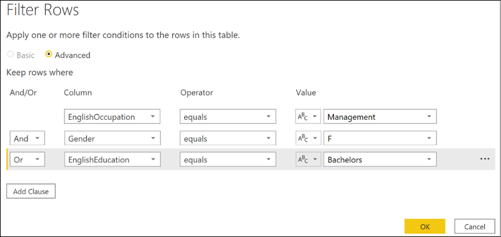
Figure 2.29: Advanced Filter Rows dialog in the Query Editor
Despite this, even the Advanced version of the Filter Rows dialog does not provide the ability to group logical filtering criteria. While the dialog in Figure 2.29 looks like it recreates the query for Management and Female or Bachelors, the generated M code does not include the parenthesis that groups the Gender and EnglishEducation clauses. Thus, the code generated would have to be edited manually in the Advanced Editor to return the same results as the original Management and Female or Bachelors query. The M code generated by the Filter Rows dialog shown in Figure 2.29 generates the following code:
Table.SelectRows(
Source,
each
[EnglishOccupation] = "Management" and
[Gender] = "F" or
[EnglishEducation] = "Bachelors"
)
10 Common Mistakes You Do In #PowerBI #PowerQuery – Pitfall #3: http://bit.ly/2nLX6QW
Selecting and Renaming Columns
The columns selected in data retrieval queries impact the performance and scalability of both import and DirectQuery data models. For Import models, the resources required by the refresh process and the size of the compressed data model are directly impacted by column selection. Specifically, the cardinality of columns drives their individual memory footprint and memory per column. This correlates closely to query duration when these columns are referenced in measures and report visuals. For DirectQuery models, the performance of report queries is directly affected. Regardless of the model type, the way in which this selection is implemented also impacts the robustness of the retrieval process. Additionally, the names assigned to columns (or accepted from the source) directly impact the Q&A or natural language query experience.
This recipe identifies columns to include or exclude in a data retrieval process and demonstrates how to select those columns as well as the impact of those choices on the data model. In addition, examples are provided for applying user-friendly names and other considerations for choosing to retrieve or eliminate columns of data for retrieval.
Getting ready
To get ready for this recipe, import the DimCustomer table from the AdventureWorksDW2019 database by doing the following:
Open Power BI Desktop and choose Transform data from the ribbon of the Home tab to open the Power Query Editor.
Create an Import mode data source query called AdWorksDW. This query should be similar to the following:
let
Source = Sql.Database("localhost\MSSQLSERVERDEV", "AdventureWorksDW2019")
in
Source
Isolate this query in a query group called Data Sources.
Right-click AdWorksDW and choose Reference.
Select the DimCustomer table in the data preview area and rename this query DimCustomer.
For additional details on performing these steps, see the Managing Queries and Data Sources recipe in this chapter.
How to Select and Rename Columns
To implement this recipe, use the following steps in Advanced Editor:
Create a name column from the first and last names via the Table.AddColumn function.
CustomerNameAdd =
Table.AddColumn(
dbo_DimCustomer, "Customer Name",
each [FirstName] & " " & [LastName],type text
)
Use the Table.SelectColumns function to select 10 of the 30 available columns now available in the DimCustomer table.
Note that some of the column names specified do not actually exist. This is on purpose and will be fixed in the next step. But note that instead of generating an error, null values are displayed for those columns.
Figure 30: Non-existent columns return null instead of error
Use the Table.RenameColumns function to apply intuitive names for users and benefit the Q&A engine for natural language queries. Insert this statement above your SelectCustCols statement and adjust as appropriate. The full query should now be similar to the following:
The Table.AddColumn function concatenates the FirstName and LastName columns and includes an optional final parameter that specifies the column type as text.
The Table.SelectColumns function specifies the columns to retrieve from the data source. Columns not specified are excluded from retrieval.
A different method of accomplishing this same effect would be to use the Table.RemoveColumns function. However, in this case, 20 columns would need to be removed versus explicitly defining 10 columns to keep. To avoid query failure if one of the source columns changes or is missing, it is better to specify and name 10 than 20 columns. Query resilience can further be improved by using the optional parameter for Table.SelectColumns, MissingField.UseNull. Using this parameter, if the column selected is not available, the query still succeeds and simply inserts null values for this column for all rows.
Another advantage of using the Table.SelectColumns function is that columns can be reordered as selected columns are retrieved and presented in the order specified. This can be helpful for the query design process and avoids the need for an additional expression with a Table.ReorderColumns function. The initial column order of a query loaded to the data model is respected in the Data view. However, the field list exposed in the Fields pane in both the Report and Data views of Power BI Desktop is automatically alphabetized.
For import data models, you might consider removing a column that represents a simple expression of other columns from the same table. For example, if the Extended Amount column is equal to the multiplication of the Unit Price and Order Quantity columns, you can choose to only import these latter two columns. A DAX measure can instead compute the Extended Amount value. This might be done to keep model sizes smaller. This technique is not recommended for DirectQuery models, however.
Use the Table.RenameColumns function to rename columns in order to remove any source system indicators, add a space between words for non-key columns, and apply dimension-specific names such as Customer Gender rather than Gender. The Table.RenameColumns function also offers the MissingField.UseNull option.
There's more...
Import models are internally stored in a columnar compressed format. The compressed data for each column contributes to the total disk size of the file. The primary factor of data size is a column's cardinality. Columns with many unique values do not compress well and thus consume more space. Eliminating columns with high cardinality can reduce the size of the data model and thus the overall file size of a PBIX file. However, it is the size of the individual columns being accessed by queries that, among other factors, drives query performance for import models.
The transformations applied within Power BI's M queries serve to protect the integrity of the data model and to support enhanced analysis and visualization. The specific transformations to implement varies based on data quality, integration needs, and the goals of the overall solution. However, at a minimum, developers should look to protect the integrity of the model's relationships and to simplify the user experience via denormalization and standardization. Additionally, developers should check with owners of the data source to determine whether certain required transformations can be implemented in the source, or perhaps made available via SQL view objects such that Power Query (M) expressions are not necessary.
This recipe demonstrates how to protect a model from duplicate values within the source data that can prevent forming proper relationships within the data model, which may even result in query failures. While a simple scenario is used, this recipe demonstrates scenarios you may run into while attempting to merge multiple data sources and eliminating duplicates.
Getting ready
To prepare, start by importing the DimProduct and FactResellerSales tables from the AdventureWorksDW2019 database by doing the following:
Open Power BI Desktop and choose Transform data from the ribbon of the Home tab to open the Power Query Editor.
Create an Import mode data source query called AdWorksDW. This query should be similar to the following:
let
Source = Sql.Database("localhost\MSSQLSERVERDEV", "AdventureWorksDW2019")
in
Source
Isolate this query in a query group called Data Sources.
Right-click AdWorksDW and choose Reference, select the DimProduct table in the data preview area, and rename this query DimProduct. Right-click the EnglishProductName column and select Remove Other Columns.
Repeat the previous step, but this time choose FactResellerSales. Expand the DimProduct column and only choose EnglishProductName. Rename this column to EnglishProductName.
Drag the DimProduct and FactResellerSales queries into the Other Queries group and apply the queries to the data model.
In the Model view of Power BI Desktop, attempt to form a relationship between the tables using the EnglishProductName columns from both tables. Note the warning that is displayed.
For additional details on performing these steps, see the Managing Queries and Data Sources recipe in this chapter.
How to Transform and Cleanse Data
We wish to remove duplicates from the EnglishProductName column in our DimProduct query. To implement this recipe, use the following steps:
Remove any leading and trailing empty spaces in the EnglishProductName column with a Text.Trim function.
Create a duplicate column of the EnglishProductName key column with the Table.DuplicateColumn function and name this new column Product Name.
Add an expression to force uppercase on the EnglishProductName column via the Table.TransformColumns function. This new expression must be applied before the duplicate removal expressions are applied.
Add an expression to the DimProduct query with the Table.Distinct function to remove duplicate rows.
Add another Table.Distinct expression to specifically remove duplicate values from the EnglishProductName column.
Drop the capitalized EnglishProductName column via Table.RemoveColumns.
In the TrimText expression, the Trim.Text function removes white space from the beginning and end of a column. Different amounts of empty space make those rows distinct within the query engine, but not necessarily distinct within the model. Therefore, it is always a good idea to use Trim.Text first and then remove duplicate rows and values.
In the next expression, DuplicateKey, the Table.DuplicateColumn function is used to duplicate the column where we will be removing duplicate values. We give this new column the name that we desire for our final column. This is done because we will need to transform the values in the column we are removing duplicates from, in order to account for mixed cases such as "Fender Set" and "Fender set". Thus, we wish to preserve the original values and casing by using this duplicate column.
In order to eliminate mixed casing issues, the UpperCase expression changes all values in the EnglishProductName column to uppercase using the Table.TransformColumns function, and specifying Text.Upper. The M engine considers mixed casing values unique, but the data model engine does not.
The next two expressions, DistinctProductRows and DistinctProductNames, simply demonstrate two different methods of using the Table.Distinct function. The first, DistinctProductRows, eliminates rows where the entire row (all column values) are identical. The second version looks only at the values in a single column when determining whether or not the row is a duplicate.
At this point, the query is now resilient to duplicate values and rows, mixed cases, and spaces. However, the EnglishProductName column is now in the uppercase format. Since we preserved a copy of the original values and casing in our Product Name column, we can simply drop the EnglishProductName column using the Table.RemoveColumns function.
We can now form a one-to-many relationship between our DimProduct and FactResellerSales tables.
Figure 2.32: Simple one-to-many relationship model
There's more...
To support troubleshooting, create a query that accesses the same source table and retrieves the values from the EnglishProductName column with more than one row.
let
Source = AdWorksDW,
dbo_DimProduct = Source{[Schema="dbo",Item="DimProduct"]}[Data],
RemoveColumns = Table.SelectColumns(dbo_DimProduct,{"EnglishProductName"}),
TrimText =
Table.TransformColumns(
RemoveColumns,{"EnglishProductName",Text.Trim}
),
UpperCase =
Table.TransformColumns(
TrimText,{{"EnglishProductName", Text.Upper}}
),
GroupedRows =
Table.Group(
UpperCase, {"EnglishProductName"},
{{"Rows", each Table.RowCount(_), Int64.Type}}
),
Duplicates = Table.SelectRows(GroupedRows, each [Rows] > 1)
in
Duplicates
The EnglishProductName column is selected, trimmed, converted to uppercase, grouped, and then filtered to always retrieve any duplicate key values. Disable the loading of this query, as the query would only exist for troubleshooting purposes.
Business users often extend the outputs of existing reports and data models with additional columns to help them analyze and present data. The logic of these columns is generally implemented through Excel formulas or as calculated DAX columns. A superior solution, particularly if the logic cannot quickly be migrated to a data warehouse or IT resource, is to create the columns via the Power Query Editor and M language.
Developing custom columns can also significantly enhance the ease of use and analytical power of data models and the visualizations they support. In this recipe, columns are created to apply a custom naming format and simplify the analysis of a customer dimension via existing columns.
Getting ready
To get ready for this recipe, import the DimCustomer table from the AdventureWorksDW2019 database by doing the following:
Open Power BI Desktop and choose Transform data from the ribbon of the Home tab to open the Power Query Editor.
Create an Import mode data source query called AdWorksDW. This query should be similar to the following:
let
Source = Sql.Database("localhost\MSSQLSERVERDEV", "AdventureWorksDW2019")
in
Source
Isolate this query in a query group called Data Sources.
Right-click AdWorksDW and choose Reference, select the DimCustomer table in the data preview area, and rename this query DimCustomer.
For additional details on performing these steps, see the Managing Queries and Data Sources recipe in this chapter.
How to Create Custom Columns
To implement this recipe, perform the following steps:
Use Table.SelectColumns to retrieve the required source columns from the DimCustomer table, FirstName, LastName, MiddleName, Title and BirthDate.
let
Source = AdWorksDW,
dbo_DimCustomer = Source{[Schema="dbo",Item="DimCustomer"]}[Data],
SelectColumns =
Table.SelectColumns(dbo_DimCustomer,
{"FirstName", "LastName", "MiddleName", "Title", "BirthDate"}
)
in
SelectColumns
Write a Table.AddColumns function with an if...then expression that accounts for the different scenarios given a target format of Mr. John A. Doe:
NameFormatTble =
Table.AddColumn(
SelectColumns,"Formatted Name", each
if [Title] = null and [MiddleName] = null
then [FirstName] & " " & [LastName]
else if [Title] = null
then [FirstName] & " " & Text.Range([MiddleName],0,1)
& ". " & [LastName]
else
[Title] & " " & [FirstName] & " "
& Text.Range([MiddleName],0,1) & ". " & [LastName]
)
Add variables that allow the expression to support the comparison between the current system date and the BirthDate column.
Use the Table.AddColumn function to create CustomerYear, CustomerMonth, and CustomerDay columns based upon the BirthDate column.
AddCustomerYear =
Table.AddColumn(
NameFormatTble, "Customer Year", each Date.Year([BirthDate]),
Int64.Type
),
AddCustomerMonth =
Table.AddColumn(
AddCustomerYear, "Customer Month", each Date.Month([BirthDate]),
Int64.Type
),
AddCustomerDay =
Table.AddColumn(
AddCustomerMonth, "Customer Day", each Date.Day([BirthDate]),
Int64.Type
)
Add an Age column via an if...then expression.
CustomerAge =
Table.AddColumn(
AddCustomerDay,"Customer Age", each
if [Customer Month] < CurrentMonth
then CurrentYear - [Customer Year]
else if [Customer Month] > CurrentMonth
then CurrentYear - [Customer Year] - 1
else if [Customer Day] < CurrentDay
then CurrentYear - [Customer Year]
else CurrentYear - [Customer Year] - 1
)
Add a Customer Age Segment column via the column computed in step 4.
CustomerSegment =
Table.AddColumn(
CustomerAge, "Customer Age Segment", each
if [Customer Age] < 30 then "Less than 30"
else if [Customer Age] < 40 then "30 to 39"
else if [Customer Age] < 50 then "40 to 49"
else if [Customer Age] < 60 then "50 to 59"
else "60 or Older"
)
How it works
In the NameFormatTble expression the Table.AddColumn function is used, coupled with an if...then expression. M is a case-sensitive language, so writing IF instead of if or Table.Addcolumn instead of Table.AddColumn will return an error. if...then expressions follow the following structure:
if <condition1> then <result1> else <result2>
All three inputs (condition1, result1, and result2) accept M expressions. if expressions can be nested together with the following structure:
if <condition1> then <result1> else if <condition2> then <result2> else <result3>
The equivalent of a SQL CASE expression is not available in M. However, the order of conditions specified in if...then expressions drives the evaluation process. Multiple conditions could be true but the second and later conditions will be discarded and not evaluated. If the value produced by the if condition is not a logical value, an error is raised.
The three if...then conditions in the NameFormatTble expression account for all scenarios to return the formatted name, since the query must account for nulls in the Middle Name and Title columns, as well as different values in the Middle Name column. Text.Range is used to extract the first character of the middle name.
For the variables CurrentDate, CurrentYear, CurrentMonth, and CurrentDay, the DateTime.LocalNow function is used as the source for the current date; it is then used for year, month, and day.
For the AddCustomerYear, AddCustomerMonth, and AddCustomerDay expressions, the Int64.Type value is passed to the optional type parameter of Table.AddColumn to set the new columns as whole numbers.
For the CustomerAge and CustomerSegment expressions, nested if…then expressions are used. This method is used because, currently, the equivalent of a DATEDIFF function (T-SQL, DAX) with date intervals like Year, Month, Week, and so on, are not available in M. A Duration.Days function can be used for day intervals and additional duration functions are available for hour, minute, and second intervals.
The CustomerAge expression compares the CurrentMonth and CurrentDay variables against the values of the customer columns created in the AddCustomerMonth and AddCustomerDay expressions in order to compute the age of the customer using the CurrentYear variable and the column created by the AddCustomerYear expression. The column created by the CustomerAge column is then used in the CustomerSegement expression to derive the age segmentation column. The new custom columns can be used to support various visualizations based upon the ages and segmentation of customers.
There's more...
The Power Query Editor provides graphical user interfaces for adding columns. These interfaces provide mechanisms for adding columns that are an alternative to writing out the code manually. In essence, the M code for the added columns is generated as an output from these interfaces.
One such interface is the Column From Examples feature, which allows users to simply type examples of a desired column's output. The engine determines which M functions and series of steps to add to the query that return results consistent with the examples provided. To explore this feature, follow these steps:
Create a new query referencing the AdWorksDW query.
Select the DimCustomer table.
Select the Title, FirstName, MiddleName, LastName, and BirthDate columns and remove all other columns.
Select the Add Column tab and then choose the Column From Examples button in the ribbon.
Figure 2.33: Column From Examples feature
Type the customer's FirstName, MiddleName, and LastName values into the first row and hit the Enter key. Notice that the rest of the rows are automatically calculated based upon this first row.
Figure 2.34: Column From Examples interface
Click the OK button to accept the transformation.
Another interface for adding columns is the Condition Column feature. This feature provides a method of creating conditional columns as an alternative to writing out the if...then expressions. To see how this feature operates, follow these steps:
Select the Add Column tab and then select Conditional Column from the ribbon.
Figure 2.35: Conditional Column feature
Fill in the fields on the Add Conditional Column dialog, using the Add Clause button to add additional else if statements; click the OK button to exit the dialog and create the new column.
Figure 2.36: Add Conditional Column dialog
Any column from the table can be referenced, and multiple created steps can be moved up or down the order of evaluation using the ellipses (…). Open the Advanced Editor to inspect the code created.
The full power of Power BI's querying capabilities is in the integration of distinct queries representing different data sources via its merge and append transformations. Retrieval processes that consolidate files from multiple network locations or integrate data from multiple data sources can be developed efficiently and securely. Additionally, the same join types and data transformation patterns SQL and ETL developers are familiar with can be achieved with the M language. This recipe provides examples of combining sources into a single query and leveraging the table join functions of M to support common transformation scenarios.
Getting ready
To follow along with this recipe, you can use the Merge Queries and Append Queries icons on the Home tab of the Power Query Editor to generate the join expressions used in this recipe. However, as joining queries is fundamental to the retrieval process, it is recommended to learn how to use the Table.Join, Table.NestedJoin, and Table.Combine functions.
To get ready for this recipe, import the DimCustomer and FactCallCenter tables from the AdventureWorksDW2019 database by doing the following:
Open Power BI Desktop and choose Transform data from the ribbon of the Home tab to open the Power Query Editor.
Create an Import mode data source query called AdWorksDW. This query should be similar to the following:
let
Source = Sql.Database("localhost\MSSQLSERVERDEV", "AdventureWorksDW2019")
in
Source
Isolate this query in a query group called Data Sources.
Right-click AdWorksDW and choose Reference, select the DimEmployee table in the data preview area, and rename this query DimEmployee.
Repeat step 4 but choose the FactInternetSales table and name this query Sales2011. Filter the OrderDate column to be between January 1, 2011 and December 31, 2011.
Let
Source = AdWorksDW,
dbo_FactInternetSales = Source{[Schema="dbo",Item="FactInternetSales"]}[Data],
#"Filtered Rows" =
Table.SelectRows(
dbo_FactInternetSales, each
[OrderDate] >= #datetime(2011, 1, 1, 0, 0, 0) and
[OrderDate] <= #datetime(2011, 12, 31, 0, 0, 0))
in
#"Filtered Rows"
Right-click the Sales2011 query and choose Duplicate. Name this query Sales2012. Edit the Table.SelectRows expression to filter dates between January 1, 2012 and December 31, 2012.
Repeat step 6, naming this new query Sales2013 and filtering for dates between January 1, 2013 and December 31, 2013.
For additional details on performing these steps, see the Managing Queries and Data Sources recipe in this chapter.
How to Combine Queries
The goal of this example is to produce an integrated table based on three "Sales" queries. While in this example the three queries come from the same data source, it is important to realize that the three queries could point to completely different data sources, such as three text files or even a text file, an Excel spreadsheet, and a SQL database. What is important is that the three queries have the same column names and number of columns. To implement this recipe, perform the following steps:
Move the Sales2011, Sales2012, and Sales2013 queries to a new query group called Staging Queries.
Disable the load for the Sales2011, Sales2012, and Sales2013 queries.
Create a new Blank query in the Other Queries group and call this query FactInternetSales2011to2012.
Open the FactInternetSales2011to2012 query in Advanced Editor.
Use the Table.Combine (or Append Queries feature in the ribbon) function to return a single table based on the rows of the Sales2011, Sales2012, and Sales2013 queries.
Let
Source = Table.Combine( {Sales2011, Sales2012, Sales2013} )
in
Source
Move the DimEmployees query to the Staging Queries group and disable loading.
Duplicate the DimEmployees query and call this new query Managers.
Disable loading for the Managers query.
Open the Managers query in the Advanced Editor.
Add a Manager Name column using the Table.AddColumn function.
For the FactInternetSales2011to2013 query, only a single expression is required using the Table.Combine function. No other expressions are necessary in this example given that the staging queries have identical column names and the same number of columns. The Table.Combine function performs an append operation and does not remove duplicate rows similar to a SQL UNION statement.
Any columns which are unique to one of the input tables in a Table.Combine function will be added to the result set with null values for the rows from the other tables. Depending on the scenario, the developer could apply the Table.Distinct function to avoid any duplicate rows from reaching the data model.
The Employees query references the DimEmployees query as the left table in a Table.NestedJoin function, and is joined to the Managers query via a left outer join. The left join is required to retain all employee rows in this scenario, as the DimEmployees table includes one employee that does not have a parent employee key, the Chief Executive Officer.
The join is performed on the ParentEmployeeKey column in the DimEmployees query to the EmployeeKey column in the Managers query. After this step, all of the rows from the matching Managers table are stored within the row as a Table object in the column ManagerColumn. When expanding the ManagerColumn column using the Table.ExpandTableColumn function, the Manager Name column can retain the same name, but the Title column is renamed to Manager Title in order to avoid conflicting with the Title column in the DimEmployees query.
In implementing the table joins, you can choose to use the Table.Join and Table.NestedJoin functions. All six join types—inner, left outer, right outer, full outer, left anti, and right anti—are supported by both functions. The Table.NestedJoin function enters the results of the join (the right or second table) into a new column of table values and will use local resources to execute the join operation, unless the Table.ExpandTableColumn function is used to replace this new column with columns from the right table. A left outer join type is the default if the JoinKind parameter is not specified. For performance reasons, Table.NestedJoin should not be used without a Table.ExpandTableColumn function removing the column of tables.
Conversely, the Table.Join function automatically expands the left table with the columns from the right table input (a flat join) and defaults to an inner join if the JoinKind parameter is not specified. The Table.Join function gets folded to the source without any additional functions but requires that there are no matching column names between the joined tables for a JoinKind other than inner join. For inner joins, the matching column names from both tables must be specified in the join key parameters. A Table.SelectColumns function is required to exclude any columns from the right table added with the join.
Whether implemented via Table.NestedJoin or Table.Join, developers should look to use inner joins if the source tables have referential integrity, such as with foreign key constraints and whether this meets requirements. For joins against larger tables, developers should confirm that query folding is occurring and can evaluate the different query plans generated by alternative retrieval designs in terms of performance.
Note that the two rows for Rob Walters are due to a Slowly Changing Dimension (SCD) Type 2 process applied in the source database. For more information on SCDs, refer to this Wikipedia article: https://bit.ly/3yIQeI5.
There's more...
Rather than creating separate lookup/join staging queries, it is possible to consolidate these expressions into a single let…in M expression. For example, the following single query returns the exact same results as the Sales2011, Sales2012, Sales2013, and FactInternetSales2011to2013 queries:
Inline query approaches are helpful in limiting the volume of queries, but you lose the management benefits provided by group folders and the Query Dependencies view. The graphical support makes it easier to explain and quickly troubleshoot a data retrieval process over a single but complex M expression. Staging queries are recommended for all but the most trivial projects and retrieval processes. Staging queries should generally never be loaded to the data model, as staging tables could both confuse the user and would require the data model to use additional resources to process and store the additional data.
Similarly, merge queries can also be combined into a single query. The following table breaks down the six different join types that can be specified in both the Table.NestedJoin and Table.Join functions. Both the Parameter and Parameter Value can be used, though the recipes in this book use Parameter as this makes the expressions easier to follow.
Join type
Parameter
Parameter value
Inner
JoinKind.Inner
0
Left Outer
JoinKind.LeftOuter
1
Right Outer
JoinKind.RightOuter
2
Full Outer
JoinKind.FullOuter
3
Left Anti
JoinKind.LeftAnti
4
Right Anti
JoinKind.RightAnti
5
Table 2.3: Power Query (M) join types, parameters, and parameter values
One final note is that, for data source files with the same structure stored in the same network directory folder, Power BI offers the Combine Binaries transformation, which can be used with text, CSV, Excel, JSON, and other file formats. This feature can be used when creating a Folder query. The Combine Binaries feature automatically creates an example query and a function linked to this query, such that any required modification to the source files can be applied to all files, and the source location of the files can be easily revised.
Setting the data types of columns in Power BI Desktop is usually the final step of data retrieval queries, and has great implications for all layers of the solution, including data refresh, data modeling, and visualization. Choosing appropriate data types reduces the risk of refresh failures, ensures consistent report results, and provides analytical flexibility to the data model and visualization layers.
This recipe demonstrates how to choose and define data types to load to Power BI Desktop. Additional details on data types and the implications of data types for Power BI development are contained in the sections following these examples.
Getting ready
In preparation for this recipe, import the FactCallCenter table from the AdventureWorksDW2019 database by doing the following:
Open Power BI Desktop and choose Transform data from the ribbon of the Home tab to open the Power Query Editor.
Create an Import mode data source query called AdWorksDW. This query should be similar to the following:
let
Source = Sql.Database("localhost\MSSQLSERVERDEV", "AdventureWorksDW2019")
in
Source
Isolate this query in a query group called Data Sources.
Right-click AdWorksDW and choose Reference, select the FactFinance table in the data preview area, and rename this query FactFinance.
Move the FactFinance query to the Other Queries group.
For additional details on performing these steps, see the Managing Queries and Data Sources recipe in this chapter.
How to Select Column Data Types
To implement this recipe, perform the following steps:
Use the Table.TransformColumnTypes function to revise the type of the numeric integer FinanceKey column to text. Note that the column header for the FinanceKey column is initially prefaced with a 123 icon and changes to an ABC icon. Also, note that the row values are initially left justified and italicized and after transformation to text are aligned to the right and not italicized.
let
Source = AdWorksDW,
dbo_FactFinance = Source{[Schema="dbo",Item="FactFinance"]}[Data],
FinanceKeyText =
Table.TransformColumnTypes(
dbo_FactFinance, {{"FinanceKey", Text.Type}}
)
in
FinanceKeyText
Add a numeric column from a source column stored as text using the Number.FromText and Table.AddColumn functions.
FinanceKeyNum =
Table.AddColumn(
FinanceKeyText, "FinanceKeyNum",
each Number.FromText([FinanceKey]),Int64.Type
)
Change the fixed decimal Amount column to currency using the Table.TransformColumnTypes function. Note that the column header icon changes from 1.2 initially to a dollar sign, $.
For the FinanceKeyText expression, the Table.TransformColumnTypes function takes two parameters. The first parameter is the table to operate upon; the second is a list of list pairs that include the column name to transform and then the transformation data type. Multiple pairs can be included in the form:
{ { "Column1", type }, { "Column2", type } }
Additional valid values for the type parameter include the following:
Currency.Type sets the column as a Fixed Decimal Number to two decimal places.
Decimal.Type or type number sets the new column as a Decimal Number.
Percentage.Type sets the column as a Percentage data type. Unlike Whole Number, Fixed Decimal Number, and Decimal Number, this type does not have a corresponding type in the data model. When loaded to the data model, the Percentage data type is represented as a Decimal Number type.
Text.Type or type text sets the column to a Text data type.
Date.Type or type date sets the column to a Date data type.
DateTime.Type or type datetime sets the column to a Date Time data type.
DateTimeZone.Type or type datetimezone sets the column to a Date/Time/Timezone data type.
Time.Type or type time sets the column to a Time data type.
Duration.Type or typeduration sets the column to a Duration data type.
Logical.Type or typelogical sets the column to a True/False data type.
Binary.Type or type binary sets the column to a Binary data type.
Like all M expressions, data type declarations are case-sensitive.
For the FinanceKeyNum expression, the type parameter for the Table.AddColumn function is optional. Leaving this parameter blank results in an Any data type, which would be loaded into the data model as a Text data type. By specifying Int64.Type as the optional type parameter to Table.AddColumn, the new column stores whole numbers instead of text.
Great care should be taken when choosing data types. For example, convert Decimal Number to Fixed Decimal Number data types if consistent rounding results are required. Also, converting from Decimal Number to Fixed Decimal Number can marginally improve data compression and query performance. A Decimal data type is approximate and can produce inconsistent reporting results due to rounding. Decimal Number data types are floating-point (approximate) data types with 15 digits of precision. Fixed Decimal Number data types store 19 digits of precision and four significant digits after the decimal. Whole Number data types store up to 19 digits of precision.
Revising Text data types to Numeric data types impacts the DAX metrics that can be written. For example, if a Calendar Year column is stored as a Text data type, the following DAX metric will fail due to the type incompatibility of the number 2016:
Figure 2.38: DAX measure expression
Revising Calendar Year to a whole number type avoids the need to use VALUE or FORMAT functions in each DAX measure. Power BI Desktop provides rich analysis capabilities for columns of the Date data type, including drill-down hierarchies, visual calendar pickers for filters, custom date filtering logic in slicers, and calculations such as for the first and last date. Given these capabilities, as well as DAX functionality with Date data types, converting Text and Numeric types to Date data types can provide significantly more options to develop Power BI content.
There's more...
While there are many topics that can be discussed regarding data types in Power Query, two are worth exploring in greater detail: automatic data type detection and date with locale. When enabled, automatic data type detection occurs when using unstructured data sources, such as flat files and Excel workbooks. When importing such data, a Changed Type step is added that uses a sampling or preview of each source column to determine the appropriate type.
Figure 2.39: Automatic Data Type Selection Step
If the data sample does not reflect the full or future set of values for the column, the data type selected may be incorrect. Automatic type detection is not used with structured relational database systems such as SQL Server.
You can avoid automatic type detection via the Data Load options in the File | Options and settings | Options dialog.
As automatic detection is a CURRENT FILE option only, and since the setting is enabled by default, you currently need to disable this automatic type detection for each new file. It is recommended that you disable this for each file or manually remove the Changed Type step and make your own decisions regarding data type transformations.
Power Query also supports different locales or cultures. If there's any potential for Date data types to be sourced from a region with a different date standard than your local system, you should apply the Locale option to the Table.TransformColumnTypes function; for example, when a date column stores date values in the format dd/mm/yyyy, whereas the local system uses mm/dd/yyyy. Trying to convert this date directly on a desktop configured for US English causes an error as the first two digits are greater than 12. However, specifying the source locale in the transform expression allows for successful conversion. The Query Editor provides a simple interface for the source locale. Simply right-click on the column, expand Change Type,and then select Using Locale….
Figure 2.40: Change Type with Locale interface
Alternatively, you can add the locale to the expression itself directly:
DateLocale =
Table.TransformColumnTypes(
PreviousStep, {{ "Date", type date }}, "en-GB"
)
To implement complex and less common data transformation requirements, it is often necessary to browse the M library to find a specific function or review the parameters of a specific function.
This short recipe provides a pre-built M query expression you can use to retrieve the M library into a table for analysis in Power BI Desktop. Additionally, an example is provided of visualizing and cross-filtering this table of functions on the Power BI report canvas.
Getting ready
To get ready for this recipe, do the following:
Open Power BI Desktop.
Click the Transform data icon in the ribbon of the Home tab.
Create a new Blank Query and call this query MLibrary.
How to Visualize M library
To implement this recipe, perform the following steps:
Enter the following M code in the Advanced Editor:
Click the OK button to close the Advanced Editor. The preview area should now look similar to that shown in Figure 2.41.
Figure 2.41: Query Editor view of library table function
Click on Close and Apply from the Query Editor.
The 1,000+ rows from the M library are now loaded to the Data mode.
Create a visualization that uses the Function Groups column for filtering.
Figure 2.42: Report page of M standard library
How it works
The M expression leverages the #shared variable, which returns a record of the names and values currently in scope. The record is converted to a table value and then the Function column, originally Name in the context of the library, is split based on the period delimiter to allow for the Group column.
There's more...
M library details for every function are made available by entering the function without any parameters.
The topic of data quality deals with the overall utility of datasets, and the ability to easily process and use the data for certain purposes, including analytics and reporting. Data quality is an essential component of data governance, ensuring that business data is accurate, complete, consistent, and valid. Good data quality is an essential element of any data analytics and reporting endeavor. Poor data quality can lead to incorrect analysis and decisions by the business—hence the phrase "garbage in, garbage out". Luckily, the Power Query Editor provides powerful data profiling tools to assist in quickly determining the quality of the data with which you are working. This recipe demonstrates how to unlock the powerful tools within the Power Query Editor for profiling columns and gaining a sense of the quality of the data being worked upon.
Getting ready
To get ready for this recipe, import the FactCallCenter table from the AdventureWorksDW2019 database by doing the following:
Open Power BI Desktop and choose Transform data from the ribbon of the Home tab to open the Power Query Editor.
Create an Import mode data source query called AdWorksDW. This query should be similar to the following:
let
Source = Sql.Database("localhost\MSSQLSERVERDEV", "AdventureWorksDW2019")
in
Source
Isolate this query in a query group called Data Sources.
Right-click AdWorksDW and choose Reference, select the FactFinance table in the data preview area, and rename this query FactFinance.
Move the FactFinance query to the Other Queries group.
For additional details on performing these steps, see the Managing Queries and Data Sources recipe in this chapter.
How to Profile Source Data
To implement this recipe, perform the following steps:
Select the FactFinance query.
In the View tab, check the box for Column profile in the Data Preview area of the ribbon.
Select a column to view the column statistics similar to those in Figure 2.44:
Figure 2.44: Column profile information
How it works
By default, the M query engine pulls the first 1,000 rows of data from the specified data source. This is the data used in the data preview area. The default of using only the first 1,000 rows of data can be changed by clicking on Column profiling based on top 1000 rows in the status bar in the bottom right and choosing Column profiling based on the entire data set. Statistics are collected on each column in the data source. When the Column profile feature is enabled, selecting a column causes column statistics and value distribution to display in the bottom half of the data preview area, including alongside this error counts, the number of distinct and unique values, minimum values, maximum values, and additional information that depends upon the data type of the column, as shown in Figure 2.44.
There's more...
Additional data quality dialogs are available in the Power Query Editor. From the View tab, check the box next to Column quality and Column distribution. Small visuals appear under the column headings. Hovering your mouse over this area provides a pop-up dialog that provides suggested actions as well as common data cleansing activities via the ellipsis menu (…).
Figure 2.45: Column quality and Column distribution visuals
The Power Query M engine is an extremely powerful and fast data transformation and data preparation engine used across an array of products, including:
Excel for Windows
Excel for Mac
Power BI
Power Apps
Power Automate
Azure Data Factory
SQL Server Integration Services
SQL Server Analysis Services
Dynamics 365 Customer Insights
While both fast and powerful, there are times when you may find that a particular query is not as performant as desired. In these instances, Query Diagnostics can help you pinpoint problematic expressions and better understand what Power Query is doing in order to identify areas for query optimization. This recipe demonstrates how the user can use Query Diagnostics to troubleshoot a query and identify how the query might be optimized to be more performant.
Getting ready
To get ready, import the FactCallCenter table from the AdventureWorksDW2019 database by doing the following:
Open Power BI Desktop and choose Transform data from the ribbon of the Home tab to open the Power Query Editor.
Create an Import mode data source query called AdWorksDW. This query should be similar to the following:
let
Source = Sql.Database("localhost\MSSQLSERVERDEV", "AdventureWorksDW2019")
in
Source
Isolate this query in a query group called Data Sources.
Right-click AdWorksDW and choose Reference; select the FactCurrencyRate table in the data preview area, and rename the AdWorksDW query to FactCurrencyRate.
Move the FactCurrencyRate query to the Other Queries group.
In the Power Query Editor, select the Tools tab and then Diagnostic Options.
Ensure that the radio button for Enable in Query Editor (does not require running as admin) is selected and check all the boxes under the Diagnostics Level and Additional Diagnostics sub-headings.
Figure 2.46: Query Diagnostic options
For additional details on performing these steps, see the Managing Queries and Data Sources recipe in this chapter.
How to Diagnose Queries
To implement this recipe, perform the following steps:
Select the FactCurrencyRate query, open Advanced Editor, and modify the query to calculate the daily change in currency rates.
You may have to wait several minutes for the preview data to display. To investigate what is going on, click on the Tools tab and then Start Diagnostics.
Click back on the Home tab and click Refresh Preview.
Wait for the preview data to refresh and then click back on the Tools tab and Stop Diagnostics.
Figure 2.47: Diagnostics processing display
When the Diagnostics processing completes, you will have a new query group called Diagnostics containing four queries for Diagnostics_Counters, Diagnostic_Detailed, Diagnostic_Aggregated, and Diagnostic_Partitions. Each of these queries is suffixed with a date and time stamp of when the diagnostics were run, and each has loading disabled.
Figure 2.48: Diagnostics queries
Click on the Diagnostics_Aggregated query. Select the Step, Category, Start Time, End Time, Exclusive Duration (%), and Exclusive Duration columns and remove the other columns.
Sort the Exclusive Duration column in descending order.
Figure 49: Diagnostic results
Look for large jumps in the Exclusive Duration column; we see two such jumps between lines 3 and 4, and 4 and 5, with the larger jump being between lines 3 and 4. Also, note the high Exclusive Duration (%) value for row 3.
Look at the Start Time and End Time columns for row 3 and note that this operation took 4 minutes and 26 seconds to complete. The Step column shows that the query step for row 3 is the PrevColumns step.
Having zeroed in on the PrevColumns step of the query, click on the Diagnostics_Detailed query and filter the Step column to just show PrevColumns. If the PrevColumns value does not appear in the filtering dialog, use the Load More link or edit the query in Advanced Editor to add the Table.SelectRows expression manually: Table.SelectRows(#"Changed Type", each [Step] = "PrevColumns").
Sort the query by the Exclusive Duration (%) column in Descending order.
Note that the Operation column for the top row is DbDataReader.
At this point, it should be evident that this query would likely be better done in the source database system as a view or stored procedure.
How it works
The FactCurrencyRate query joins the base table with itself in order to compare subsequent rows of data. The goal is to compare the values of one row with the previous row in order to compute a value for a change in currency rate between days. This is done by sorting the table by first the currency and then the date using the Table.Sort function. Next, the Table.AddIndexColumn function is used twice, once to add an index column starting from 1 (Row Index column) and a second time to add an index column starting from 0 (Prev Index column). These two index columns are then used in a Table.NestedJoin function to join the table to itself. The Table.ExpandTableColumn function is used to expose the previous row's CurrencyKey and EndOfDayRate columns of the previous row. This information can then be used to create the Daily Change column using the Table.AddColumns function, and finally, only the essential columns are selected using the Table.SelectColumns function.
When you start Query Diagnostics, query diagnostic information is logged to JSON and CSV files stored in the application's directory. These files can be located by looking at the Source step for aggregated, detailed, and partition diagnostic queries and the CsvFiles step of the Counters diagnostic query. For the Power BI Desktop Store App, the path should be similar to the following:
C:\Users\[user]\Microsoft\Power BI Desktop Store App\Traces\Diagnostics
These files record diagnostic information performed by the query engine during processes such as refreshing the preview data. Stopping Query Diagnostics ends logging of the diagnostic data and generates queries for each enabled Query Diagnostics feature: Aggregated, Detailed, Performance counters, and Data privacy partitions. As diagnostic logging is costly in terms of performance and system resources, it is recommended to only use Query Diagnostics when troubleshooting a query's performance. In addition, only enable the minimal amount of diagnostic logging required to identify the problem—for example, often just starting with the Aggregated diagnostic data is enough to identify the problematic step(s).
There's more...
There is also a Diagnose Step feature available for Query Diagnostics. To see how Diagnose Step can be used, follow these steps:
Open the Diagnostic Options from the ribbon of the Tools tab and uncheck the Performance counters and Data privacy partitions.
In the Query Settings pane, select the SelfJoin step. You can now either right-click the SelfJoin step and select Diagnose or select Diagnose Step in the ribbon of the Tools tab.
Once complete, two additional queries are added to the Diagnostics query group, FactCurrencyRate_SelfJoin_Detailed and FactCurrencyRate_SelfJoin_Aggregated, each suffixed with a date and time stamp.
Click on the FactCurrencyRate_SelfJoin_Aggregated query.
Add an Index column.
Sort the Exclusive Duration column in descending order.
Here we can see that the most expensive operation occurs early on in the process, at index 15 out of 3,000+ rows, and appears to be the initial selection of columns with the Data Source Query being the following:
select [_].[CurrencyKey],
[_].[DateKey],
[_].[AverageRate],
[_].[EndOfDayRate],
[_].[Date]
from [dbo].[FactCurrencyRate] as [_]
order by [_].[CurrencyKey],
[_].[DateKey]
It should be evident that diagnosing a single step of a query is faster and consumes fewer system resources than analyzing the entire query. Thus, it is recommended that you run only Aggregated diagnostics over an entire query to identify problematic steps, and then run Detailed diagnostics on those steps individually. If you look at the FactCurrencyRate_SelfJoin_Detailed, the most expensive operation is on line 60, and it is the DbDataReader operation. The SQL statement identified is actually on line 59 with the operation Execute Query. Thus, we can conclude that the most expensive operation performed was not in executing the query, but rather reading the data generated by the query.
In this chapter, we dove into Power BI Desktop's Get Data experience and walked through the process of establishing and managing data source connections and queries. The ability to ingest and access data is crucial to every BI project. In Power BI, this data ingest and access is driven by a powerful functional language and query engine, M. The Power Query M language provides a robust, scalable, and flexible engine for data retrieval, cleansing, and transformation.
3
Building a Power BI Data Model
"The data model is what feeds and what powers Power BI."
- Kasper de Jonge, Senior Program Manager, Microsoft
The data models developed in Power BI Desktop are at the center of Power BI projects. These data models support data exploration and drive the analytical queries visualized in reports and dashboards. Properly designed data models leverage the data connectivity and transformation capabilities described in Chapter 2, Accessing and Retrieving Data, to provide an integrated view of distinct business processes and entities. Additionally, data models contain predefined calculations, hierarchies and groupings, and metadata to greatly enhance both the analytical power of the dataset and its ease of use. The combination of accessing and retrieving data coupled with the additional enhancements available in the data model serves as the foundation for the BI and analytical capabilities of Power BI.
In this chapter, we explore the primary processes of designing and developing robust data models. Common challenges in dimensional modeling are mapped to corresponding features and approaches in Power BI Desktop, including multiple grains and many-to-many relationships. Examples are also provided on how to embed business logic and definitions, develop analytical calculations with the DAX language, and configure metadata settings to increase the value and sustainability of models.
In this chapter, we will cover the following recipes:
Designing a Data Model
Implementing a Data Model
Creating Relationships
Configuring Model Metadata
Hiding Columns and Tables
Enriching a Model with DAX
Supporting Virtual Table Relationships
Creating Hierarchies and Groups
Designing Column Level Security
Leveraging Aggregation Tables
Technical Requirements
The following are required to complete the recipes in this chapter:
Power BI Desktop
Tabular Editor
SQL Server with the AdventureWorksDW2019 database installed. This database and instructions for installing it are available here: http://bit.ly/2OVQfG7
Power BI Desktop lends itself to rapid, agile development in which significant data insights can be obtained quickly despite both imperfect data sources and an incomplete understanding of business requirements and use cases. However, rushing through the design phase can undermine the sustainability of the solution, as future needs cannot be met without structural revisions to the model or complex workarounds. A balanced design phase in which fundamental decisions, such as DirectQuery versus in-memory, are analyzed, while simultaneously using a limited prototype model to generate visualizations and business feedback can address both short- and long-term needs.
This recipe describes a process for designing a data model and identifies some of the primary questions and factors to consider while doing so.
Getting ready
Visually and analytically impressive examples of Power BI's reporting capabilities can often cause stakeholders to underestimate the effort and complexity associated with data integration and data modeling.
It is important to rein in any unrealistic expectations and confirm feasibility. Power BI is not the right tool for every job, so it is important to approach tasks through a methodical design approach. It is important to identify the top pain points and any unanswered business questions in the current state. Contrast this input with an assessment of feasibility and complexity (for example, data quality and analytical needs) along with targeting realistic and sustainable deliverables. A good design process will do just that.
Dimensional modeling best practices and star schema designs are directly applicable to Power BI data models. Short, collaborative modeling sessions can be scheduled with subject matter experts and the main stakeholders. With the design of the model in place, an informed decision about the model's data mode (Import or DirectQuery) can be made prior to development. The four-step dimensional design process is as follows:
Choose the business process(es): The number and nature of processes to include depends on the scale of the sources and scope of the project. Business processes might include planning, sales, time reporting, general ledger, and many others.
Declare the granularity: For each business process (or fact) to be modeled, define the meaning of each row. These should be clear, concise business definitions, and each fact table should only contain one grain. Consider scalability limitations with Power BI Desktop and balance the needs between detail and history, such as choosing to have greater history but less granularity. Examples include:
One Row per Sales Order Line
One Row per General Ledger Account Balance per fiscal month
In the first example, the granularity is at the sales order line versus, perhaps, the purchase order header; in the second, the granularity is at the fiscal month versus per day or fiscal quarter.
Separate business processes, such as planning and sales, should never be integrated into the same table. Likewise, a single fact table should not contain distinct processes, such as shipping and receiving. Fact tables can be related to common dimensions but should generally never be related to each other in the data model (for example, PO Header and Line level).
Identify the dimensions: Dimensions should have a natural relationship with the business process or event at the given granularity. Compare the dimension with any existing dimensions and hierarchies in the organization (for example, Store). If so, determine whether there is a conflict, or whether additional columns may be required. Be aware of the query performance implications with large, high-cardinality dimensions, such as in customer tables with over two million rows. It may be necessary to optimize this relationship in the model or the measures and queries that use this relationship. See Chapter 11, Enhancing and Optimizing Existing Power BI Solutions, for more details.
Identify the facts:Facts should align with the business processes being modeled; for example, the sum of a quantity or a unique count of a dimension. Document the business and technical definition of the primary facts and compare this with any existing reports or metadata repository (for example, Net Sales = Extended Amount - Discounts). At this stage, you should be able to walk through top business questions and check whether the planned data model will support them. For example, the business might wish to answer the following question, "What was the variance between Sales and Plan for last month for Bikes?". Any clear gaps can be handled in one of three ways:
Revisit and modify the prior steps of this process
Remove the question from the scope of the data model
Plan to address the issue with additional logic in the model (M or DAX)
Focus only on the primary facts at this stage, such as the individual source columns that comprise the cost facts. If the business definition or logic for a core fact has multiple steps and conditions, check whether the data model will naturally simplify it or whether the logic can be developed during data retrieval in order to avoid complex measures.
How to Design a Data Model
The Power BI model should preferably align with a corporate data architecture framework of standard facts and dimensions that can be shared across models. Though consumed by Power BI Desktop, existing data definitions and governance should be observed. Any new facts, dimensions, and measures developed with Power BI should supplement this architecture. To implement this recipe, follow these steps:
Create a data warehouse bus matrix: A matrix of business processes (facts) and standard dimensions is a primary tool for designing and managing data models, while also communicating the overall BI architecture. In this example, the business processes selected for the model are Internet Sales, Reseller Sales, and General Ledger.
Figure 3.1: Data Warehouse Bus Matrix
Create an implementation bus matrix: An outcome of the model design process should include a more detailed implementation bus matrix. Clarity and approval of the grain of the fact tables, the definitions of the primary measures, and all dimensions gives confidence when entering the development phase.
Figure 3.2: Implementation Bus Matrix: Internet Sales, Reseller Sales, and General Ledger
Power BI queries (M) and analysis logic (DAX) should not be considered as long-term substitutes for issues with data quality, master data management, and the data warehouse. If it is necessary to move forward, document the "technical debts" incurred and consider long-term solutions such as Master Data Services (MDS).
Choose the dataset storage mode—Import, DirectQuery, or Composite: With the logical design of a model in place, one of the top design questions is whether to implement this model with DirectQuery mode or with the default imported In-Memory mode.
The default Import mode is highly optimized for query performance and supports additional modeling and development flexibility with DAX functions. With compression, columnar storage, parallel query plans, and other techniques an import mode model is able to support a large amount of data (for example, 50 million rows) and still perform well with complex analysis expressions. Multiple data sources can be accessed and integrated into a single data model and all DAX functions are supported for measures, columns, and role security. The chief disadvantages of import mode are dataset size limitations (1 GB for Pro, 10 GB for Premium) and the fact that data refreshes must be scheduled (eight times per day for Pro, 48 per day for Premium). An alternative to scheduled refreshes in the Power BI service is the use of REST APIs to trigger a data refresh of a published dataset. For example, an HTTP request to a Power BI REST API calling for the refresh of a dataset can be added to the end of a nightly update or ETL process script such that published Power BI content remains aligned with the source systems.
A DirectQuery mode model provides the same semantic layer interface for users and contains the same metadata that drives model behaviors as Import mode models do. The performance of DirectQuery models, however, is dependent on the source system and how this data is presented to the model. By eliminating the import or refresh process, DirectQuery provides a means to expose reports and dashboards to source data as the data changes.
This also avoids the file size limit of import mode models. However, there are several limitations and restrictions to be aware of with DirectQuery:
Only a single source from a single, supported data source can be used in a DirectQuery model.
When deployed for widespread use, a high level of network traffic can be generated, thus impacting performance, as Power BI visualizations will need to query the source system, potentially via an on-premises data gateway.
Some DAX functions cannot be used in calculated columns or with role security. Additionally, several common DAX functions are not optimized for DirectQuery performance.
Many M query transformation functions cannot be used with DirectQuery.
MDX client applications, such as Excel, are supported, but less metadata (for example, hierarchies) are exposed.
Given these limitations and the importance of a "speed of thought" user experience with Power BI, DirectQuery should generally be used only on centralized and smaller projects in which visibility of updates of the source data is essential. If a supported DirectQuery system (for example, Teradata or Oracle) is available, the performance of core measures and queries should be tested. Also, confirm referential integrity in the source database and use the Assume Referential Integrity relationship setting in DirectQuery mode models. This will generate more efficient inner join SQL queries against the source database.
Composite models allow mixing DirectQuery and Import sources, or even multiple DirectQuery sources. While more complex, when configured correctly, composite models can combine the ability to retrieve near-real-time data from DirectQuery sources with the high query performance of Import models. When using composite models, the storage mode for each table can be specified within the model. It is best to designate dimension-type tables as Import or Dual storage mode, and fact-type tables as DirectQuery mode.
As an example, consider a model from this recipe with fact tables, Reseller Sales, Internet Sales, and General Ledger, along with dimensions such as Product and Sales Territory. Setting the dimension tables to Dual mode and the Internet Sales fact table to DirectQuery mode would allow the dimension tables to be quickly and efficiently retrieved from the in-memory (Import) model for rendering in a slicer, while simultaneously the Internet Sales table could use DirectQuery mode with the related dimension tables to enable real-time sales reporting via a single, efficient native SQL query.
How it works
Power BI can be fully delivered and managed by corporate BI professionals from data retrieval through visualization and content distribution.
Some BI and analytics organizations also adopt hybrid approaches in which different components of Power BI are developed and owned by different teams, such as the BI/IT teams providing an optimized data source, its supporting ETL process, and the analytical data model, including its measure definitions, relationships, and data refresh process.
Business teams can then leverage these assets in developing Power BI reports and dashboards, plus, optionally, Excel reports.
As Power BI projects can have widely varying and often overlapping needs (for example, security, data refresh, and scalability) it is important to adopt a process for allocating the appropriate resources and planning for the longer-term deployment, such as migrating important, relatively mature Power BI datasets to Analysis Services Tabular.
Power BI datasets and SSAS share the same database engine and architecture. Both tools support both Import and DirectQuery data models, and along with DAX and MDX client applications such as Power BI (DAX) and Excel (MDX). The DAX query engine comprises a formula and a storage engine for both Import and DirectQuery modes. The formula engine produces query plans, requests data from the storage engine, and performs any remaining complex logic not supported by the storage engine against this data.
In DirectQuery models, the source database is the storage engine—it receives SQL queries from the formula engine and returns the results to it. For In-Memory (Import) models, the imported and compressed columnar memory cache is the storage engine. See Chapter 11, Enhancing and Optimizing Existing Power BI Solutions, for more details.
There's more…
Several topics and specific questions are so common that a standard "project ingestion" form or document can be created to support design and planning meetings. These topics and questions include the following:
Data Sources: Is all the data required in a given system? What other sources are required or currently used?
Security: Will the data model contain PCII or sensitive data? Does any data need to be secured from certain users?
Version Control: Are there existing reports or models with the same measures?
Complexity: Can the source data be used directly or are transformations required?
Analytics: Are any custom or advanced analytics required (for example, exception measures, statistical analyses)?
Data Refresh: Is there a need for real-time access? If not, how frequently does the data need to be refreshed?
Model Scale: How much historical data is required? How many rows per week/month/year are in the largest fact table?
Distribution: Approximately how many users will need to access the reports and dashboards that this model will support?
The Planning a Power BI Enterprise Deployment whitepaper identifies the fundamental decisions and factors that guide Power BI deployments, including licensing, scalability and performance, data sources (cloud and on-premises), report visualization options, administration, and more.
The implementation of a data model proceeds from the design phase described in the previous recipe. The design process and its supporting documentation clarify which entities to model, their granularity, the fact-to-dimension relationships, and the fact measures that must be developed. Additionally, the model mode (Import or DirectQuery) has already been determined, and any additional business logic to be implemented via M or DAX functions is also known. The different components of the model can now be developed, including data source connectivity, queries, relationships, measures, and metadata.
In this recipe, we walk through all the primary steps in the physical implementation of a model design. Three fact tables and their related dimensions are retrieved, relationships are created, and the core measures and metadata are added. When complete, the multi-fact data model can be exposed to business users for initial testing and feedback.
Getting ready
To prepare for this recipe, follow these steps:
Create a SQL view for each fact and dimension table to be represented in the data model. If you're unfamiliar with SQL views, see the See also section of this recipe.
The views should only select the columns required of the model and apply the model's column names. Create views for the fact tables FactResellerSales, FactInternetSales, and FactFinance, as well as the dimensions DimEmployee, DimReseller, DimPromotion, DimProduct, DimSalesTerritory, DimDepartmentGroup, DimOrganization, DimAccount, DimCustomer, and DimDate.
The layer of views protects the model from changes in the source system and provides visibility to administrators of the model's dependencies. Additionally, the views can de-normalize source tables via joins to conform to the structure of the model tables, and potentially include derived columns not available in the source. In the following SQL example, the product dimension view joins three tables, DimProduct, DimProductCategory, and DimProductSubcategory, and applies model column names.
select [$Outer].[ProductKey] as [ProductKey],
[$Outer].[ProductSubcategoryKey2] as [ProductSubcategoryKey],
[$Outer].[EnglishProductName] as [EnglishProductName],
[$Outer].[Color] as [Color],
[$Outer].[ListPrice] as [ListPrice],
[$Outer].[Weight] as [Weight],
[$Outer].[DaysToManufacture] as [DaysToManufacture],
[$Outer].[EnglishDescription] as [EnglishDescription],
[$Outer].[EnglishProductSubcategoryName] as [EnglishProductSubcategoryName],
[$Outer].[ProductCategoryKey2] as [ProductCategoryKey],
[$Inner].[EnglishProductCategoryName] as [DimProductCategory.EnglishProductCategoryName]
from
(
select [$Outer].[ProductKey] as [ProductKey],
[$Outer].[ProductSubcategoryKey2] as [ProductSubcategoryKey2],
[$Outer].[EnglishProductName] as [EnglishProductName],
[$Outer].[Color] as [Color],
[$Outer].[ListPrice] as [ListPrice],
[$Outer].[Weight] as [Weight],
[$Outer].[DaysToManufacture] as [DaysToManufacture],
[$Outer].[EnglishDescription] as [EnglishDescription],
[$Inner].[EnglishProductSubcategoryName] as [EnglishProductSubcategoryName],
[$Inner].[ProductCategoryKey] as [ProductCategoryKey2]
from
(
select [ProductKey] as [ProductKey],
[ProductSubcategoryKey] as [ProductSubcategoryKey2],
[EnglishProductName] as [EnglishProductName],
[Color] as [Color],
[ListPrice] as [ListPrice],
[Weight] as [Weight],
[DaysToManufacture] as [DaysToManufacture],
[EnglishDescription] as [EnglishDescription]
from [dbo].[DimProduct] as [$Table]
) as [$Outer]
left outer join [dbo].[DimProductSubcategory] as [$Inner] on ([$Outer].[ProductSubcategoryKey2] = [$Inner].[ProductSubcategoryKey])
) as [$Outer]
left outer join [dbo].[DimProductCategory] as [$Inner] on
[$Outer].ProductCategoryKey2 = [$Inner].ProductCategoryKey
Defining the SQL views is especially important if a DirectQuery model is being supported. For DirectQuery model views, evaluate the efficiency of the query plans and the referential integrity between the views to support inner join DirectQuery queries.
Open Power BI Desktop.
Create an Import mode data source query called AdWorksDW. This query should be similar to the following:
let
Source = Sql.Database("localhost\MSSQLSERVERDEV", "AdventureWorksDW2019")
in
Source
Isolate this query in a query group called Data Sources and disable loading.
Both of these can be done by right-clicking the query in the Queries pane.
Right-click AdWorksDW and choose Reference.
Build an M query for each dimension and fact table that accesses the SQL views defined in step 1. In this example, the AdWorksDW query contains the data source information, and a vCH3R2_Products view is accessed:
let
Source = AdWorksDW,
Data = Source{[Schema="dbo",Item="vCH3R2_Products"]}[Data]
in
Data
Duplicate this query and replace the Item parameter with the source view for each remaining fact and dimension.
Separate the fact queries into a Facts query group.
Separate the dimension queries into a Dimensions query group.
Figure 3.3: Dimensions, Facts, and Data Sources queries in Power Query Editor
Confirm that the column data types align with the design (for example, a fixed decimal number to avoid rounding issues).
Close the Power Query Editor and load the tables into the Power BI model by choosing Close & Apply from the ribbon of the Home tab.
How to Implement a Data Model
To implement this recipe, use the following steps:
In Power BI Desktop, select Manage Relationships from the Modeling tab of the Report view or the Table tools tab of the Data view and click the New button.
Create many-to-one, single-direction relationships from each fact table to its corresponding dimension table. Bidirectional relationships should only be implemented with clear guidance and evaluation. Date data type columns should be used for the Date table relationships.
Figure 3.4: Relationships view of a multi-fact data model
Write the core measures for each fact table identified in the planning phase and validate them for accuracy. If complex DAX expressions are needed for the core measures, then the source and retrieval should be reviewed. Give each measure an intuitive name and a standard format (for example, two decimal places, a thousands separator).
Add multi-level hierarchies in commonly used dimension tables such Product and Date. Hierarchies are essentially just groups of columns that allow for report authors to more easily navigate or drill between different levels of detail.
Set the Default Summarization and Sorting of columns, such as Month Name, sorted by Month Number.
Assign Data Categories to columns such as Address or Postal Code to support geographical visualization.
Hide columns from the fact tables such that only measure groups are visible.
Validation and user testing of the new model should follow implementation.
Model documentation can be developed via Dynamic Management Views (DMVs) to provide users with definitions and relationships. See the Importing and visualizing dynamic management view (DMV) data recipe of Chapter 10, Administering and Monitoring Power BI, for a detailed example of this pattern.
How it works
The steps in this recipe align with the logical flow of model development and can be implemented in discrete phases across teams or by an individual Power BI developer. Given the different lead times associated with the components of the model, it can be advantageous to move forward with a more mature or simple component such that business teams can engage and provide feedback as enhancements and other components are deployed.
Details on all primary metadata settings are included in this chapter in the following recipes:
Configuring Model Metadata
Hiding Columns and Tables
Creating Hierarchies and Groups
All of these settings impact the usability and functionality of the data model and should not be neglected.
There's more…
If a model's source view is shared with other applications and may change or include columns not needed by the model, the Table.SelectColumns() M function can be used:
let
Source = AdWorksDW,
InternetSales = Source{[Schema="dbo",Item="vInternetSales"]}[Data],
SalesColumns =
Table.SelectColumns(
InternetSales,{"ProductKey","OrderDateKey"},MissingField.UseNull
)
in
SalesColumns
Each column required by the table in the model is explicitly selected, and the MissingField.UseNull parameter allows the query to refresh successfully despite a specified column being missing—such as when a column's name has changed.
One of the most important data modeling features of Power BI, as well as Analysis Services Tabular, is the control the modeler has over defining the filtering behavior between tables via relationships. In addition to one-to-many, single-direction relationships, Power BI models can contain bidirectional relationships, one-to-one relationships, many-to-many relationships, and even DAX measures that contain their own relationship filtering logic via functions such as USERELATIONSHIP and CROSSFILTER. These relationship tools, along with modifying the filter context of measures through DAX, can be used to support many-to-many modeling scenarios and provide alternative model behaviors for multiple business requirements.
In this recipe, we look at single-direction relationships, as well as the primary use cases for bidirectional relationships, and DAX-based cross-filtering.
Getting ready
To prepare for this recipe, follow these steps:
Open Power BI Desktop and choose Transform data from the ribbon of the Home tab to open the Power Query Editor.
Create an Import mode data source query called AdWorksDW. This query should be similar to the following:
let
Source = Sql.Database("localhost\MSSQLSERVERDEV", "AdventureWorksDW2019")
in
Source
Isolate this query in a query group called Data Sources and disable loading.
Right-click AdWorksDW and choose Reference.
Select the FactInternetSales table and name this query Internet Sales.
Repeat steps4 and 5 to create a Customers query that imports DimCustomer, and a Dates query that imports DimDate tables.
Create a Products query based on the DimProduct, DimProductCategory, and DimProductSubcategory tables using the following code. Alternatively, use the SQL view for products from the previous recipe in this chapter, Implementing a Data Model.
Separate the fact query Internet Sales into a Facts query group by right-clicking the query in the Queries pane and choosing Move to Group and then New Group
Separate the dimension queries, Customers, Dates, and Products into a Dimensions query group.
Create a BlankQuery called Calculations in the Other Queries group.
Choose Close & Apply in the ribbon of the Home tab to load the tables to the data model.
How to Create Relationships
To implement this recipe, use the following steps:
Create a relationship between the Products table and the Internet Sales table. This can be done in the Model view by dragging and dropping the ProductKey column in the Products table to the ProductKey column in the Internet Sales table. Alternatively, select Manage relationships in the ribbon of the Modeling tab while in the Report view or from the ribbon of the Table tools tab while in the Data view. This relationship should be one-to-many relationships between the Products table on the One side and the Internet Sales table on the Many side. The Cross-filter direction should be set to Single.
Figure 3.5: Creating a relationship between Products and Internet Sales
Create additional relationships between the other dimension tables and the Internet Sales table until your Manage relationships dialog box has the same relationships checked as shown in Figure 3.6.
Figure 3.6: Table relationships in the Manage relationships dialog
The Model view of the dataset should now present, as shown in Figure 3.7:
Figure 3.7: Model view of relationships
Right-click the Dates table and choose Mark as date table using FullDateAlternateKey as the Date column.
Create the following four DAX measures by right-clicking the Calculations table in the Data view and selecting Newmeasure:
Right-click the Calculations column in the Calculations table and choose Hide in report view.
Use a Multi-row card visualization to display these four measures.
Add a Slicer visualization for CalendarYear from the Dates table, Product Category from the Products table, and Gender from the Customers table.
Figure 3.8: Relationship and cross-filter testing visualizations
Select slicer values in the Slicer visualizations and note that with single-direction relationships, a selection on any of the slicers only impacts the row counts in the table used in the slicer and the Internet Sales table.
Open the Manage relationships dialog and edit the Cross-filter direction of the relationship between the Internet Sales and Products tables.
Figure 3.9: Bidirectional Relationship Configuration (Both) from the Edit Relationships Dialog
Slicer selections for CalendarYear and Gender now also filter the Products table.
Create a DAX measure that applies an alternative cross-filter behavior to the relationship in the model:
Add this measure to the Multi-row card visualization and observe that this measure is unaffected by the Gender and CalendarYear slicers.
Write a DAX measure to propagate filter context. The following measure respects the filters applied to the Internet Sales table, such as Customer Gender = "M":
Add this measure to the Multi-row card visualization and observe that this measure returns the same results as the bidirectional relationship when selecting values in the Gender and CalendarYear slicers, except when there are no slicer selections at all—then the measure returns 158.
Write a DAX measure to use an inactive relationship between the Dates and Internet Sales tables:
Add this measure to the Multi-row card visualization and notice that different numbers are returned from the Sales Table Rows measure when selecting CalendarYear 2010 or higher.
How it works
Single-direction cross-filter relationships only propagate filters in the direction of the relationship. Thus, when Products is set to filter Internet Sales in a single-direction, other filters affecting Internet Sales are not propagated to the Products table. With bidirectional cross-filter relationships, filters affecting one side of the relationship are always propagated to the other side of the relationship unless DAX measures use functions such as CROSSFILTER() to override the default behavior defined by the model relationships.
Bidirectional relationships between fact and dimension tables should generally be avoided when the given dimension table is also related to other fact tables. This can cause over-filtering or unintended filter contexts. However, bidirectional relationships are an integral part of efficient solutions to common (and otherwise complex) modeling scenarios, such as actual versus budget and classic many-to-many scenarios.
Regarding the Date table relationships, the DAX time intelligence functions, such as DATESYTD, DATEADD, and SAMEPERIODLASTYEAR, all require either a relationship based on a date data type or a Mark as date table setting. Since the relationships for the Date table were formed on surrogate keys (20150101), the Date table needs to be marked as a date table in order for DAX time intelligence functions to operate properly.
The measure Product Table Rows (CF) overrides the bidirectional relationship to apply single-direction cross-filtering using the DAX function CROSSFILTER. Though limited to specific measures, the CROSSFILTER function can provide a simple and powerful supplement to the relationship cross-filtering defined in the model. The CROSSFILTER function requires an existing relationship (active or inactive) and always overrides the relationship settings of the model. The third parameter accepts the following values:
OneWay
Both
None
Both bidirectional relationships and the CROSSFILTER function can be used with DirectQuery models. The Global DirectQuery setting Allow unrestricted measures needs to be enabled to use CROSSFILTER.
The Products Rows (Sales) measure implements bidirectional cross-filtering between the Products and Internet Sales tables by using the CALCULATE function to evaluate the Products table in the context of the Internet Sales table. Thus, filters affecting the Internet Sales table also impact the result of the COUNTROWS function on the Products table. This is true even when no slicers have selections, which is why the Product Rows (Sales) measure returns 158, because only 158 products were sold over the internet. Keep in mind that relationships on their own only propagate active filters against a table. This is why the Products Table Rows measure returns all 606 products when no slicer selections are active.
The Sales Table (Orders) measure uses the USERELATIONSHIP function to utilize an inactive relationship in the model. Power BI data models reject ambiguous relationships, in which there are multiple possible cross-filtering paths between two tables. These duplicate relationships are set to an inactive status, but can still be used in DAX. As with the CROSSFILTER function, the USERELATIONSHIP function requires an existing relationship (active or inactive) and always overrides the relationship settings of the model.
There's more...
In the many-to-many model shown in Figure 3.10, multiple customers are associated with a given account, and some customers have multiple accounts.
Figure 3.10: Many-to-many model with single-direction cross-filtering relationships
Given the highlighted single-direction relationship from the Accounts table to the CustomerAccount bridge table, a filter selection on the Customer table does not filter the Transactions table. By modifying the cross-filter direction of the relationship between Accounts and CustomerAccount to Both, a report visual by customer will now correctly display both the total amount from the fact table and the amounts associated with each customer.
A DAX alternative to the bidirectional relationship is the following:
The SUMMARIZE function leverages the one-to-many relationships of Customers and Accounts with the bridge table, via the CALCULATE function, and passes the filter context of Customers to the Accounts table, which filters transactions.
For similar many-to-many scenarios, bidirectional relationships are recommended over the DAX approach for manageability and performance reasons.
Metadata is information about information. There are many metadata settings in Power BI data models, such as column names, data types, object descriptions, and others. Four important metadata properties to configure for any column visible on the Power BI report canvas are the format, data category, default summarization, and the option to sort by column. The data formats should be consistent across data types and efficiently convey the appropriate level of detail. Data categories serve to enhance the data exploration experience by providing Power BI with information to guide its visualizations. Default summarization determines the aggregation, if any, to apply to the column when added to the report canvas. The ability to Sort by Column enables the displaying of the values in a column based on the order of a separate column. Although all of these settings are relatively simple to configure, careful attention to these properties helps to deliver higher-quality Power BI visualizations and a more user-friendly platform for self-service.
In this recipe, we demonstrate how to configure the format, data category, default summarization, and the Sort by Column option for columns and measures within a data model—and show the impact of these settings on visualizations.
Getting ready
To prepare for this recipe, follow these steps:
Open Power BI Desktop.
Create an Import mode data source query called AdWorksDW. This query should be similar to the following:
let
Source = Sql.Database("localhost\MSSQLSERVERDEV", "AdventureWorksDW2019")
in
Source
Isolate this query in a query group called Data Sources and disable loading.
Right-click AdWorksDW and choose Reference.
Select the FactFinance table and name this query General Ledger.
Repeat steps4 and 5 to create a Dates query that imports DimDate and a Departments query that imports DimDepartmentGroup.
Repeat steps4 and 5 to create a Customers query that imports DimCustomer.
let
Source = AdWorksDW,
Data = Source{[Schema="dbo",Item="DimCustomer"]}[Data],
#"Expanded DimGeography" =
Table.ExpandRecordColumn(
Data, "DimGeography",
{"City", "StateProvinceName",
"EnglishCountryRegionName", "PostalCode"},
{"City", "StateProvinceName",
"CountryRegionName", "PostalCode"}
)
in
#"Expanded DimGeography"
Separate the dimension queries, Customers, and Dates into a Dimensions query group and the General Ledger query into a query group called Facts.
Create a BlankQuery called Calculations in the Other Queries group.
Choose Close & Apply on the ribbon of the Home tab to load the tables to the data model.
Create the relationships shown in Figure 3.11, using the Manage relationships dialog box.
Figure 3.11: Relationships
How to Configure Model Metadata
To implement this recipe, use the following steps:
Select the Data view.
Use the Fields list on the right to navigate to the Dates table and select the FullDateAlternateKey column.
Use the Format drop-down in the ribbon of the Column tools tab to change the format to 3/14/2001 (m/d/yyyy) or some other format.
Figure 3.12: Column Formatting
Right-click the Calculations table and click New measure to create a measure with the code:
Finance = SUM('General Ledger'[Amount])
Select the Finance measure and change the format to Currency using the Format option in the Measure tools tab.
Figure 3.13: Measure Formatting
Right-click on the Calculations column in the Calculations table and choose Hide in report view.
While still in the Data view, select the StateProvinceName column in the Customers table, and from the Column tools tab change the Data category to State or Province.
Figure 3.14: Data Category Selection
Repeat this procedure, setting the City column to City, the CountryRegionName column to Country, and the PostalCode column to Postal code. Note that a globe icon appears next to all of these columns in the field list.
Switch to Report view and create a Map visualization with CountryRegionName and PostalCode in the Location area and CustomerKey in the Size area. You can drill down to the postal code level and zoom in to investigate how many customers are in particular areas.
Figure 3.15: Default Visual of the Geographical Data Category
While still in the Report view, create a Table visualization with the EnglishMonthName column only. Note that the names of months appear in the table in alphabetical order.
Select the EnglishMonthName column in the Fields list, and from the Column tools tab change Sort by column to the MonthNumberOfYear column. After this action, the monthnames are sorted in the correct calendar order.
Figure 16: Sort by column
Switch back to the Data view and select the AccountKey column from the General Ledger table.
On the Column tools tab, change the default Summarization from Count to Don'tsummarize.
Figure 3.17: Default Summarization for Columns
How it works
The metadata settings for Formatting, Data category, Summarization, and Sort by column are all available from the Column tools or Measure tools tabs, whether you are in the Data view or Report view. Note that Summarization and Sort by column are not available for Measures tools. These metadata settings cannot be modified in the Power BI service once the model is published. Reports can be created and edited in the service, but data types, names, and other metadata are not available.
Formatting decisions should consider the impact of precision on visualizations. Fewer decimal places and more abbreviated date formats consume less space in reports and are easier to visually comprehend on dashboards. To understand how formatting works, consider a date data type. Date data types are actually stored as decimal numbers in the model engine. The integer portion of the number is the number of days since December 30, 1899. The decimal portion is the fraction of a day, with hours being 1/24 or , minutes being 1/24/60 or , and seconds being 1/24/60/60 or . Thus, the display formats for dates simply visually change how the base data is displayed to the user while keeping the underlying data unchanged. The user may see 1/1/1900 00:00:00 displayed on their screen, but internally in the data model, this is simply stored as 2.
Assigning a location Data category to columns assists Bing maps with geolocation and changes the default visualization for such columns to the Map visualization. The Web URL is important for such things as mailto email address links and any URL links exposed in reports. When the column is used in Table visualizations, email and link icons are displayed, respectively. Similarly, assigning an Image URL to a column displays the actual image when using Table visualizations. The Barcode data category can be useful for mobile applications.
When considering the use of Sort by columns, identify columns requiring custom sorting. Calendar text columns such as Month and Weekday are the most common candidates. Other columns may represent an organizational structure or entity hierarchy, such as general ledger accounts. The Sort by column sort must contain only one distinct value for each value in the column to be sorted. It is recommended to embed the sorting logic as deep into the BI architecture as possible. For example, the sorting column could be added to a dimension table in a data warehouse or the SQL view used to load the data model. If these options are not available, M query transformations are recommended over DAX calculated columns.
Text and date data type columns are set to Don't summarize by default when first loaded to Power BI models. These data types have default summarizations of Count and Count (Distinct). In addition, the Report view provides the following aggregation options when using these data types in visualizations:
Text: First, Last, Count (Distinct), or Count
Date: Earliest, Latest, Count (Distinct), or Count
By default, Whole number, Decimal number, and Fixed decimal number are set to Sum as the default summarization. For numeric columns with default summarization applied, the Fields list applies a summation symbol and aggregates the column's values according to the default summarization setting when used in a report visualization. The same symbol is applied regardless of the default summarization configured (for example, Average and Count).
Simple DAX measures can deliver all default summarization options (Sum, Min, Max, Average, Count, and Count Distinct). Additionally, measure names such as Count of Products can help eliminate confusion regarding the default summarization icon. Many BI professionals prefer to replace fact columns with measures for this reason. Simple DAX expressions are used to perform the various aggregations or summarizations required in the data model; the fact columns are then hidden. When all fact columns are hidden, associated measures display at the top of the Field list. Additionally, using measures allows business logic to be applied, such as including or excluding certain values.
There's more…
While serving as an intern at Microsoft, Chelsie Eiden solved a long-standing issue with Power BI involving duration by implementing custom format strings in the September 2019 release of Power BI Desktop. Since the release of Power BI Desktop, there was always an issue aggregating durations and displaying them in the format of HH:MM:SS. This was the result of the model engine not including a true Duration data type, unlike the M query engine. You could convert durations to seconds to aggregate it, but you could not display aggregated durations that properly aggregated as numbers and displayed in the hours, minutes, seconds format in a visual. The reason was that there was no numeric formatting option for duration, and using the DAX FORMAT function turned a number into text. Custom format strings solved this issue by allowing the column to remain as a number, but also allowing the creation of a custom format for display purposes. Custom format strings can be applied to a column or measure using the Properties pane of the Model view, as shown in Figure 3.18.
Figure 3.18: Custom format strings
DAX can be used to assist with sorting issues; for example, a DAX-calculated column can be created to support sorting of the Calendar Yr-Mo column with values such as 2016-Jan. The DAX formula to create a CalYr-Mo Sort column is:
This calculation results in values such as 201601. The YEAR function is applied against the Date column and multiplied by 100 to add two digits. This product is then added to the results of the MONTH function applied against the Date column, which returns a value between 1 and 12. Although this approach is simple to implement and inexpensive in terms of resource usage, the values of the new column are not sequential, thus limiting the use of the column in Time Intelligence measures (for example, trailing 3 months). Sequential surrogate key columns for each grain of the date dimension, including fiscal calendars, is an essential component of robust date intelligence logic.
The DAX RANKX function can also be leveraged for sorting. For example, use the following DAX code to create a ranking column in the Departments table based upon the funding each Department Group receives in the General Ledger.
DeptGroupRank = RANKX('Departments',[Finance])
The ranking is based on the Finance measure created in this recipe. The DeptGroupRank column is re-evaluated during each refresh and thus the sort order could change to reflect the source data.
Figure 3.19: RANKX Calculated Column
The DepartmentGroupName column can now have a Sort by column specified of DeptGroupRank to order departments by their funding, with Sales and Marketing being first (the most funding) and Quality Assurance being last (the least funding).
Data models must balance the competing demands of functionality, scope, and usability. As additional tables, columns, measures, and other structures are added to meet various analytical needs, a model can quickly become confusing to end users. Therefore, it is important to minimize the visibility of columns and tables to provide an intuitive interface.
In this recipe, we demonstrate how to hide columns and even entire tables from report consumers.
Getting ready
To prepare for this recipe, follow these steps:
Open Power BI Desktop.
Create an Import mode data source query called AdWorksDW. This query should be similar to the following:
let
Source = Sql.Database("localhost\MSSQLSERVERDEV", "AdventureWorksDW2019")
in
Source
Isolate this query in a query group called Data Sources and disable loading.
Right-click AdWorksDW and choose Reference.
Select the FactInternetSales table and name this query Internet Sales.
Repeat steps4 and 5 to create a Departments query that imports DimDepartmentGroup and an Accounts query that imports DimAccount.
Create a Products query based upon the DimProduct, DimProductCategory, and DimProductSubcategory tables using the following code. Alternatively, use the SQL view for products from a prior recipe in this chapter, Implementing a Data Model.
Move the Internet Sales query to a query group called Facts and the Departments, Accounts, and Products queries to a query group called Dimensions.
Click Close & Apply in the ribbon of the Home tab to load the tables to the data model.
Create a relationship based on the ProductKey columns of both the Products table and the Internet Sales table.
Create the following four measures in the Internet Sales table:
Internet Sales = SUM('Internet Sales'[SalesAmount])
Internet Sales Freight = SUM('Internet Sales'[Freight])
Internet Sales Order Quantity = SUM('Internet Sales'[OrderQuantity])
Internet Sales Distinct Products =
COUNTROWS(DISTINCT('Internet Sales'[ProductKey]) )
How to Hide Columns and Tables
To implement this recipe, use the following steps:
In the Data view's Fields pane, right-click a column in the Internet Sales table and select Hide in Report view. Notice that the "visible" icon with a strike-through is displayed to the right of the column in the Fields pane. Also, the columns are grayed out in the data viewing area.
Figure 3.20: Hide in report view
Repeat this procedure for all columns (but not measures) in the Internet Sales table.
Once all the columns are hidden, switch to the Report view and observe that the Internet Sales table is now displayed above the other two tables, out of alphabetical order. In addition, the icon for this table is a calculator instead of a table.
Figure 3.21: Measure table in the Report view Fields list
Switch back to the Data view, right-click the EnglishProductName column in the Products table, and choose Create hierarchy.
Right-click the Product Category column and choose Add to hierarchy, then the EnglishProductName Hierarchy.
Add Product Subcategory to the EnglishProductName Hierarchy.
Hide the EnglishProductName, Product Category, Product Subcategory, and ProductKey columns.
Switch to Report view and confirm that only the DaysToManufacture column and the EnglishProductNameHierarchy are visible under the Products table in the Fields pane.
Switch to the Model view, right-click the Departments table, and choose Hide in report view.
Switch to the Report view and confirm that the Departments table is no longer visible in the Fields pane.
How it works
Hiding columns and tables is an important step in developing professional data models that can be easily consumed by end users for self-service purposes; too many columns and tables can be confusing to end users. In general, hide any column which is not directly required in Power BI reports. Relationship key columns, fact table columns represented via measures, custom Sort bycolumns, and any degenerate dimensions should be hidden. Additionally, hide any measure which exclusively supports other measures and is not used directly in reports. Also hide entire tables if they exist solely for data modeling purposes, such as a bridge table in a many-to-many relationship. As this is only a visibility metadata setting, the hidden columns, measures, and tables can still be used in measures and accessed from other tools via DAX queries.
As demonstrated in this recipe, columns visible within hierarchies can be hidden as individual columns. Exposing both an individual column and a hierarchy that includes that same column can confuse users and lengthen the Fields list. Conversely, not hiding the individual column contained within a hierarchy provides greater flexibility, such as viewing the columns in the hierarchy on separate axes. The same is true when grouping columns. The grouping of column values described in the Creating Hierarchies and Groups recipe in this chapter is still possible with hidden columns. It should be noted that Groups and Hierarchies can both be hidden from the Fields list as well. In general, however, such structures would not have been created if those structures' visibility was not required.
Hiding columns and tables should also be considered in role-based security scenarios involving row-level security (RLS). Users mapped to security roles that forbid them from accessing all the rows of a table are still able to see related metadata, such as the table name, the table's column names, and any metric names not hidden. New object-level security features of SSAS 2017 and later can eliminate this visibility.
One option to simplify the Fields list is to consolidate measures into fewer home tables and hide unused tables. Dedicated measure group tables can be created to organize and group similar measures. Dedicated measure groups are empty tables created with queries that do not return rows or other sources, and that do not require a refresh. One method of creating dedicated measure group tables is to create a Blank Query called something along the lines of "Calculations", and then to load and apply this to the model. In the Desktop, create at least one measure in this table and hide the single column automatically created by the query that is named the same as the query/table. Measures can be created directly in this table, or existing measures can be associated with any table of the model via the Home table property available in the ribbon of the Measure tools tab.
Figure 3.22: Measure Home table
There's more…
Pages can also be hidden from report readers in the case of reports that include multiple pages. To hide pages, right-click the Page tab and choose Hide Page. This can be useful to preserve pages used during development and troubleshooting, or when using tooltip pages.
Perspectives are essentially view definitions of models such that only a defined set of tables, columns, and metrics of a model are exposed to a given view. Power BI Desktop supports perspectives, although they must be created using an external tool such as Tabular Editor. To see how perspectives can be created and used, follow these steps:
From the Report view, select Tabular Editor in the ribbon of the External Tools tab.
In Tabular Editor, note that only the visible tables are displayed—the Departments table is missing. You can view hidden objects by choosing Hidden Objects from the View menu.
Right-click the Perspectives folder, choose New Perspective, and name the perspective New Perspective.
In the Tables folder, right-click the Internet Sales table and choose Show in Perspectives, then All Perspectives.
Repeat step 4 for the Products table.
Expand the Products table, right-click the DaysToManufacture column, and choose Hide in Perspectives and then New Perspective.
Figure 3.23: Tabular Editor
Right-click the Accounts table, choose Hide in Perspectives, and then All Perspectives.
Choose Save from the File menu.
Close the Tabular Editor.
Back in Power BI Desktop, create a second page, and then save the report.
Choose Options and settings and then Options from the File menu.
Under CURRENT FILE in Report settings, turn on the Allow report readers to personalize visuals to suit their needs option.
In the Format section of the Visualizations pane for your second page, notice the new Personalize visual section.
Set Report-reader perspective to New Perspective.
As the report editor, you will continue to see the entire model of all tables and columns not hidden in the model while in Report view in Power BI Desktop. However, when users are personalizing visuals on Page 2 in the Power BI service, the users will not see any tables and columns not included in the perspective. Note that perspectives should not be considered to be a security mechanism in any regard.
Figure 3.24: Personalize dialog visuals in Service
In order to drive user adoption and to provide a foundation to support more advanced analytics, it's essential that the logic embedded in core or 'base' DAX measures accurately reflect business definitions. These fundamental measures deliver version control across the many reports built from a data model and avoid the need for additional logic to be applied at the report layer. Clear definitions for required business metrics should be documented and the corresponding DAX measures should be validated for accuracy prior to deploying any reports using these new measures to a production environment.
Performance, usability, and version control are all fundamental characteristics of effective data models, but it is often the additional analytical context that sets models apart. Once fundamental measures have been implemented, additional DAX measures can be developed to support common and high-priority business analysis. These measures can often replace ad hoc and manual data analysis for business users as well as dedicated custom reports maintained by the BI organization. As measures are stored within the data model, the logic can be re-used in various combinations and in future projects.
When developing these metrics, it is important to identify the set of base measures to create, the data source to validate against, and the subject matter experts. Reconcile differences in definitions between source systems and any custom logic applied in reports. Request a project sponsor from a business organization to review and approve the definitions and validation. Finally, identify any conflicts with existing business definitions and advise of complexity in implementing the measures.
In this recipe, DAX measures are created to represent business definitions and support deeper analysis.
Getting ready
To prepare for this recipe, follow these steps:
Open Power BI Desktop.
Create an Import mode data source query called AdWorksDW. This query should be similar to the following:
let
Source = Sql.Database("localhost\MSSQLSERVERDEV", "AdventureWorksDW2019")
in
Source
Isolate this query in a query group called Data Sources and disable loading.
Right-click AdWorksDW and choose Reference.
Select the FactResellerSales table and name this query Reseller Sales.
Repeat steps4 and 5 to create a Currency Rates query that imports FactCurrencyRates, an Internet Sales query that imports FactInternetSales, a Dates query that imports DimDate, and a Customers query that imports DimCustomer.
Add an Index column starting from 1 to the Currency Rates query, and filter the CurrencyKey column to 98.
Create a Products query based on the DimProduct, DimProductCategory, and DimProductSubcategory tables using the following code. Alternatively, use the SQL view for products from a prior recipe in this chapter, Implementing a Data Model.
Move the Reseller Sales, Internet Sales, and Currency Rates queries to a query group called Facts and the Dates, Products, and Customers queries to a query group called Dimensions.
Create four blank queries called Reseller Measures, Pricing Measures, Customer Measures, and Currency Measures in the Other Queries group.
Click Close & Apply in the ribbon of the Home tab to load the tables to the data model.
Create the relationships shown in Figure 3.25.
Figure 3.25: Model relationships
All of these relationships' cross-filtering directions should be Single, except for the Internet Sales to Customers relationship, which should be set to Both.
Switch to the Data view and hide the single columns in the Reseller Measures, Pricing Measures, Customer Measures, and Currency Measures tables.
Right-click on the Date table and choose Mark as date table using FullDateAlternateKey as the Date column.
How to Enrich a Model with DAX
To implement this recipe, use the following steps:
Switch to the Data view.
Create the following eight sales and cost DAX measures in the Reseller Measures table:
Create the following seven sales and cost DAX measures in the Pricing Measures table:
Effective Unit Price =
DIVIDE(SUM('Reseller Sales'[ExtendedAmount]),
SUM('Reseller Sales'[OrderQuantity]) )
25th Percentile Unit Price = PERCENTILE.INC('Reseller Sales'[UnitPrice],.25)
75th Percentile Unit Price = PERCENTILE.INC('Reseller Sales'[UnitPrice],.75)
Maximum Unit Price = MAX('Reseller Sales'[UnitPrice])
Median Unit Price = MEDIAN('Reseller Sales'[UnitPrice])
Minimum Unit Price = MIN('Reseller Sales'[UnitPrice])
Range of Unit Prices = [Maximum Unit Price] - [Minimum Unit Price]
Create the following three sales and cost DAX measures in the Pricing Measures table:
Count of Accessory But Not Bike Customers =
VAR BikeCustomers =
SUMMARIZE(
CALCULATETABLE('Internet Sales','Products'[Product Category] = "Bikes"),
'Customers'[CustomerAlternateKey])
VAR AccessoryCustomers =
SUMMARIZE(
CALCULATETABLE('Internet Sales',
'Products'[Product Category] = "Accessories"),
'Customers'[CustomerAlternateKey])
RETURN
CALCULATE(
DISTINCTCOUNT('Customers'[CustomerAlternateKey]),
EXCEPT(AccessoryCustomers,BikeCustomers) )
Count of Bike Only Customers =
VAR BikeCustomers =
SUMMARIZE(
CALCULATETABLE('Internet Sales','Products'[Product Category] = "Bikes"),
'Customers'[CustomerAlternateKey]
)
VAR ClothesAndAccessoryCustomers =
SUMMARIZE(
CALCULATETABLE('Internet Sales',
'Products'[Product Category] IN {"Accessories","Clothing"}
), 'Customers'[CustomerAlternateKey])
RETURN
CALCULATE(
DISTINCTCOUNT('Customers'[CustomerAlternateKey]),
EXCEPT(BikeCustomers,ClothesAndAccessoryCustomers) )
Count of Last Year Customers ex Current Year =
VAR CurrentYear = 2012
VAR LastYear = CurrentYear - 1
VAR LYCustomers =
SUMMARIZE(
CALCULATETABLE('Internet Sales',
FILTER(ALL('Dates'),'Dates'[CalendarYear] = LastYear)
), 'Customers'[CustomerAlternateKey])
VAR CYCustomers =
SUMMARIZE(
CALCULATETABLE(
'Internet Sales',
FILTER(ALL('Dates'),'Dates'[CalendarYear] = CurrentYear)
), 'Customers'[CustomerAlternateKey])
RETURN
CALCULATE(
DISTINCTCOUNT('Customers'[CustomerAlternateKey]),
EXCEPT(LYCustomers,CYCustomers) )
Create the following two DAX columns in the Dates table:
Measure definitions can be straightforward when the data is internally managed with processes and tools such as a data governance council, Master Data Services (MDS), Data Quality Services, and Azure Data Catalog. As per the Power BI Governance and Deployment whitepaper, Power BI projects and all BI projects greatly benefit from these data cleansing and information management tools. The data warehouse bus matrix and stakeholder matrix referenced in this chapter and Chapter 4, Authoring Power BI Reports, respectively, can help to focus the measure definition process on version control and transparency.
The names used for measures should be intuitive and specific to the business process. Preferably, a naming standard is followed to balance the detail of the name with the impact of text on visualizations. In a real project scenario, several additional measures would likely be created following validation. These might include Net Sales as a percentage of Gross Sales, Sales per Order, Quantity per Order, and Sales Not Shipped. These measures and more advanced measures would all leverage the validated measures.
For the Reseller Measures, the following business definitions are specified:
Gross Sales is equal to Unit Price multiplied by Order Quantity with no discounts applied.
Net Sales are Gross Sales reduced by Discounts and must have been shipped.
Product Cost is equal to Product Standard Cost multiplied by Order Quantity.
Two columns exist in the source database reflecting Reseller Gross Sales and Reseller Product Cost. Performance and memory usage can be improved only by importing the price and quantity columns and multiplying them within the measure. For the Reseller Gross Sales measure, the SUMX function is used to iterate over the table specified in the first parameter. The calculation specified in the second parameter is performed for each row and then all rows are summed. The net sales measure deducts discounts from gross sales and only includes shipped products. Here it is assumed that the date value of 12/31/2099 is assigned for any sales orders that have not shipped.
Margin percentage measures reflecting both gross and net sales (with discounts) are required. These are the Reseller Gross Margin % and Reseller Margin % measures, respectively. Margin Amount measures might also be created and could replace the numerator of the Margin % measures. DISTINCTCOUNT can be used directly against foreign key relationship columns and any degenerate dimension columns on the fact table, such as SalesOrderNumber. Always use the DIVIDE function with the optional third parameter to avoid division by zero errors.
The distinct count of sales orders and products sold are also core measures used in many reports and are referenced by other measures. These are the Reseller Count of Products Sold and Reseller Count of Sales Order measures. The Reseller Count of Products Sold measure uses the natural key of the product in the filter context of the fact table to count unique products. Using the product key on the fact table would count multiple versions of a product, given slowly changing dimensions.
The Pricing Measures provide an example of supporting the deeper analysis of pricing trends. These measures are designed to accomplish the following:
Describe the central tendency and distribution of prices.
Account for the impact of product sales mix to support analysis of effective pricing versus product pricing.
The Effective Unit Price measure accounts for the impact of quantity sold and uses the existing sales and quantity metrics. The percentile and median measures 25th Percentile Unit Price, 75th Percentile Unit Price, and Median Unit Price help to better describe the distribution of prices. The MEDIAN function returns the 50th percentile of values in a column. The PERCENTILE.INC function is used for the 25th and 75th percentile.
The minimum, maximum, and range of unit prices provide additional context to the variability of the prices. Visuals can be created that use these measures to analyze pricing; see Figure 3.26 as an example.
Figure 3.26: Example Power BI Pricing Reports
The visuals compare the average unit price metric to the new effective unit price metric. Pricing metrics are added to visual tooltips such that hovering over values in the charts provides additional context. Performance is not negatively impacted when adding measures to visuals from the same table due to measure fusion. The tooltip measures shown are from the same table and did not create additional DAX queries.
Embedding hierarchies in visuals with supporting measures can allow users to investigate interesting values by drilling up and down. Additionally, exception reports and notifications can be developed using the new measures as thresholds.
The Customer Measures serve as an example for finding cross-selling opportunities, as well as lapsed customers. The objective of these measures is to identify customer segments based on their purchase history across product categories. For example, the business wants to identify customers who have purchased a bike, but no bike accessories.
By creating a Table visualization that includes the ProductCategory column from the Products table and the distinct count of the CustomerKey from the Customers table, we can see that 18,484 distinct customers have made purchases across three product categories; this information can be seen in Figure 3.27.
Figure 3.27: Unique Customers by Product Category
The Count of Accessory But Not Bike Customers and Count of Bike Only Customers measures help us to determine the number of customers that have bought clothing or accessories but not bikes, or bought bikes but not accessories, respectively. These measures can be used in Card visuals to show that there are far fewer bike-only customers than customers that only buy clothing or accessories, but not bikes. In addition, these measures can be used in Table visualizations that include the CustomerAlternateKey column to identify individual customers; when these measures are calculated at the individual customer level, the measures return either zero, or one and zero values are automatically filtered from the Table visualization by default. Note that you can click the drop-down arrow in the Values area for CustomerAlternateKey and choose Show items with no data to change this default behavior.
Figure 3.28: Measures Count of Accessory But Not Bike Customers and Count of Bike Only Customers
The Count of Accessory But Not Bike Customers measure uses variables (VAR) to create the virtual tables BikeCustomers and AccessoryCustomers that store the distinct customer keys associated with the two product categories, Bikes and Accessories, respectively. The SUMMARIZE function groups the customer key values and EXCEPT performs the set-based operation. For the Count of Bike Only Customers measure, the syntax aligns with the structure of the first measure except for the use of the DAX IN operator to include accessories and clothing in the same group of customer keys. Given the power of these measures, they could be candidates for sales and marketing dashboards and exception reports; sales teams could focus on cross-selling bike-only customers and selling bikes to non-bike customers.
The Count of Last Year Customers ex Current Year measure demonstrates how to identify customers who made a purchase last year but have not yet made a purchase this year. The structure of this measure is similar to the two previous measures, except for the use of the CALCULATETABLE function to create a filtered table set. In the recipe, the CurrentYear variable is hardcoded to be 2012. In a production dataset, this would likely be changed to something like YEAR(TODAY()) in order to get the current year or YEAR(MAX('Dates'[Date])) to get the most current year in context. This measure can be used in Card or Table visualizations as well.
The Currency Measures provide an example of computing the geometric mean at the day, month, and year grains. In the Last Rate measure, the LASTNONBLANK function is needed for days where there might not be a rate logged in the data. This measure is used to compute the previous rate at the day, month, and year granularity (Previous Daily Rate, Previous Monthly Rate, and Previous Year Rate). The percentage change measures, Daily Change %, Monthly Change %, and Yearly Change % are the source values for the geometric mean calculations and thus are expressed as positive numbers. The GEOMEANX function iterates over tables at the different grains and computes the Change % measure for each row. The geometric mean (the product of values taken to the Nth root) is computed last against this list of values. The geometric change measures can be used in a multi-row card visualization, with 10 decimal points specified:
Figure 3.29: Geometric Mean Measures
There's more…
A common scenario with many data models is comparing tables with different grains, for example, when comparing actual versus budget, where actuals are reported daily and budgets are assigned monthly or quarterly. In such scenarios, you can create bridge tables where each bridge table contains the unique values of the dimension at the grain of the budget table. These bridge tables can potentially leverage the existing M queries in the model used to load the dimension tables. Take the following example, where the M expression references the Dates table query as its source and selects only the distinct values of the Calendar Yr-Mo column. If this is the grain of the budget table, this single-column table could be used as the bridge table.
let Source = Dates,
YearMonthColumn = Table.SelectColumns(Source,{"Calendar Yr-Mo"}),
RemoveDuplicates = Table.Distinct(YearMonthColumn)
in RemoveDuplicates
Alternatively, a simple SQL view could be created ('Select Distinct [Calendar Yr-Mo] From dbo.DimDate') that selects the distinct values of the column; this view could be accessed from a new bridge table M query.
One-to-many relationships with single-direction cross-filtering from the bridge tables to the budget table can be created. Additional many-to-one relationships with bidirectional cross-filtering are then created between the bridge tables and their corresponding dimension tables. An example final model might look the same as that shown in Figure 3.30.
Figure 3.30: Internet Sales versus Budget Data Model
The two bidirectional relationships highlighted in the image allow filters on the Date and Product tables to propagate to the Internet Sales Budget table, in addition to the Internet Sales fact table.
The only remaining steps requiring some level of code are to avoid invalid filter contexts. For example, the Internet Sales fact table can of course be filtered by individual products and dates, but this granularity is not available for the Internet Sales Budget table and thus a blank value should be returned.
A filter test measure can be created to test for filter context. The filter test is used to protect against invalid sales to budget reports, with different filters applied to each fact table. The following measure checks whether filters have been applied at higher grains than the budget table:
Budget Filter Test =
VAR CustomerFilter = ISCROSSFILTERED(Customer)
VAR ProductGrain =
ISFILTERED('Product'[Product Class]) || ISFILTERED('Product'[Product Color]) ||
ISFILTERED('Product'[Product Subcategory]) || ISFILTERED('Product'[Product Name])
VAR DateGrain =
ISFILTERED('Date'[Calendar Yr-Wk]) || ISFILTERED('Date'[Date]) || ISFILTERED('Date'[Wk End Date])
RETURN
IF(CustomerFilter = TRUE() || ProductGrain = TRUE() || DateGrain =TRUE(),
"Higher Grain", "Common Grain")
The ISFILTERED and ISCROSSFILTERED functions return Boolean values based on the filter context of the table or columns. The ISFILTERED function is limited to a single column in the model and is specific to the given column. The ISCROSSFILTERED function can check a single column or an entire table. Filters from other tables are included in the evaluation.
The Budget Filter Test measure can then be used to create a budget measure and an actual-to-budget variance measure:
Internet Sales Budget =
VAR BudgetSales = sum('Internet Sales Budget'[Online Sales Budget])
RETURN
IF([Budget Filter Test] = "Common Grain", BudgetSales, BLANK())
Internet Sales Actual to Budget Variance =
IF(ISBLANK([Internet Sales Budget]),BLANK(), [Internet Sales] - [Internet Sales Budget])
In this scenario, the requirement is to only test for a common grain, and return a blank otherwise. It is possible to build allocation logic into the DAX budget measure to account for higher grains. In general, these allocation rules are better implemented in the budget process itself or via ETL tools and query languages, such as SQL and M. These measures can be used to visualize variances between actuals and budget.
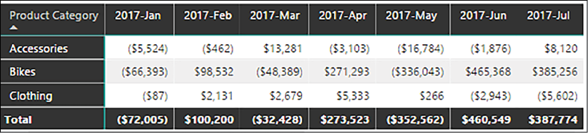
Figure 3.31: Internet Sales Actual versus Budget by Product Category and Year-Month
Matrix visuals provide functionality similar to Excel pivot tables and are therefore a good choice for budget versus actuals.
Virtual table relationships are DAX expressions implemented to filter one table from another when a relationship does not exist between the two. Report visualizations can then be constructed using both tables (and those related to it), and the DAX measures will update as though a normal relationship is defined. Virtual relationships are often used to address disparate grains of tables and to leverage performance segmentation tables.
Although physical relationships are the preferred long-term solution for both performance and manageability, virtual relationships provide an attractive alternative when physical relationships are not feasible. In this recipe, we provide virtual relationship examples that use both a custom performance segmentation table and an aggregated table.
Getting ready
To prepare for this recipe, follow these steps:
Open Power BI Desktop.
Create an Import mode data source query called AdWorksDW. This query should be similar to the following:
let
Source = Sql.Database("localhost\MSSQLSERVERDEV", "AdventureWorksDW2019")
in
Source
Isolate this query in a query group called Data Sources and disable loading.
Right-click AdWorksDW and choose Reference.
Select the FactInternetSales table and name this query Internet Sales.
Repeat steps4 and 5 to create a Dates query that imports DimDates.
Create a Customers query using the following code:
let
Source = AdWorksDW,
dbo_DimCustomer = Source{[Schema="dbo",Item="DimCustomer"]}[Data],
Country =
Table.ExpandRecordColumn(
dbo_DimCustomer, "DimGeography",
{"EnglishCountryRegionName"}, {"Country"})
in
Country
Create a Products query using the following code:
let
Source = AdWorksDW,
Navigation = Source{[Schema="dbo",Item="DimProduct"]}[Data],
Subcategory =
Table.ExpandRecordColumn(
Navigation, "DimProductSubcategory",
{"EnglishProductSubcategoryName", "DimProductCategory"},
{"Product Subcategory", "DimProductCategory"}
)
in
Subcategory
Move the Internet Sales query to a query group called Facts, and the Dates, Products, and Customers queries to a query group called Dimensions.
Use an Enter Data query to create a GrowthTiers query in the Other Queries group.
Create a Slicer visualization that uses the CalendarYear column from the Dates table.
Create a Matrix visualization with the Country column from the Customers table as Rows and the measures Sales Growth, Sales Current Year, Sales Previous Year, and Sales Growth Tier as Values.
Create a Clustered column chart visualization with the Growth Tier column from the GrowthTiers table as the Axis, and the Customer Countries measure as Values.
Figure 3.34: Virtual relationship segmentation example
Save your work.
How it works
The goal of this recipe is to apply the Growth Tier segmentations from the disconnected GrowthTiers table to the measures of the data model. Two measures are used to form this virtual relationship, Sales Growth Tier and Customer Countries. The measures apply filters based on the segmentation table thresholds and the Sales Growth measure. In effect, these measures form the relationship between the tables in the data model through the calculations performed.
The Sales Growth Tier measure returns the text value of the Growth Tier column for the specified Sales Growth measure value in context. The existing Sales Growth measure and the four segment threshold values are stored in DAX variables (the VAR statements). The SWITCH function compares sales growth with the segment thresholds to assign the Growth Tier value. Providing TRUE() as the first parameter of the SWITCH function allows independent logical conditions to be evaluated in order (from top to bottom). This is similar to the CASE expression in SQL. The Customer Countries measure uses a simple CALCULATE statement to return a DISTINTCOUNT of countries filtered by the MIN and MAX limits of each Growth Tier.
The Sales Growth Tier measure could be used for analyzing other dimensions of the model, and at different grains; for example, if StateProvinceName was added to the Customers table and a hierarchy created, you could drill down with the matrix visual and see growth tiers by state/province.
Figure 3.35: Drill Down into Problem Customer Country
There are options to modify data models to support physical relationships and thus avoid the limitations of virtual relationships. For example, a concatenated column such as Year-Month could be created for each table via SQL, M, or a DAX-calculated column.
Alternatively, bridge tables with bidirectional cross-filtering relationships provide simple solutions to many-to-many scenarios. Finally, for small fact tables, the LOOKUPVALUE function could be used in a calculated column supporting the relationship.
There's more...…
The DAX TREATAS function was added in early 2017 and provides both simpler syntax and better performance than alternative virtual relationship methods involving INTERSECT or FILTER with a CONTAINS function parameter. We can use the TREATAS function to integrate a summary table, SubCatPlan, into our Power BI data model. This is useful when a business wants to filter plan data via the same Products and Dates tables they use regularly and to create actual versus plan reports. The grain of the SubCatPlan table is Product Subcategory by Calendar Year and Calendar Month; this is shown in Figure 3.36.
Figure 3.36: Plan Summary Table for Virtual Relationships
Relationships from the SubCatPlan table to the Date and Product tables cannot be created directly given the many-to-many relationship. Each physical relationship in Power BI is based on a single column from each table, with one of the relationship columns uniquely identifying all the rows of its host table. This is consistent with SSAS Tabular and Power Pivot for Excel models.
To create a virtual table relationship with DAX, follow these steps:
Create the Subcat Plan Amt measure in the Calculations table. This measure filters the subcategory plan measure by the Products table and the Dates table:
Subcat Plan Amt =
VAR ProductSubCats = VALUES('Products'[Product Subcategory])
VAR DateTbl =
SUMMARIZE('Dates','Dates'[CalendarYear],'Dates'[EnglishMonthName])
RETURN
CALCULATE(
SUM('SubCatPlan'[Plan Amt]),
TREATAS(ProductSubCats,'SubCatPlan'[Product Subcategory]),
TREATAS(DateTbl,'SubCatPlan'[Calendar Year],'SubCatPlan'[Calendar Month]))
Create a Sales vs Plan measure:
Sales vs Plan = SUM('Internet Sales'[SalesAmount]) - [Subcat Plan Amt]
Create a Matrix visualization with the Product Subcategory column from the Products table as Rows, the EnglishMonthName column from the Dates table as Columns, and the Subcat Plan Amt measure, Sales vs Plan measure, and the SUM of the SalesAmount column from the Internet Sales table as Values.
Figure 3.37: Subcategory Plan versus Actual Matrix Visual
In the Subcat Plan Amt measure, variables are used to store tables representing the filtered values of the Products and Dates dimension tables. The TREATAS function transfers the variables to the corresponding plan column(s), thus filtering the SubCatPlan table. Any column with the same grain (or lower) than the Product Subcategory, Calendar Year, and Calendar Month columns can be used. Columns from other tables or columns without a virtual relationship will not filter the SubCatPlan table.
Bridge tables to support physical relationships to the Products and Dates tables could be created in this scenario. The two bridge tables would contain the unique product subcategory and month values, and one-to-many relationships would link the bridge tables to the SubCatPlan, Product, and Date tables. The SubCatPlan and bridge tables could be hidden from the Report view, and bidirectional relationships would be configured between the bridge tables and the Products and Dates tables. For better performance and manageability, physical relationships are recommended over virtual ones.
Hierarchies and groups are data model structures that can be implemented to simplify the user and report authoring experience. Hierarchies provide single-click access to multiple columns of a table, enabling users to navigate through pre-defined levels, such as the weeks within a given month. Groups comprise individual values of a column that enable analysis and visualization of the combined total as though it is a single value. Hierarchies and groups have useful applications in almost all data models, and it is important to understand the relationship of these structures to the data model and visualizations.
This recipe provides an example of utilizing DAX parent- and child-hierarchy functions to create columns of a hierarchy. The hierarchy is then implemented into the data model, and a group is created to further benefit analysis.
Getting ready
To prepare for this recipe, follow these steps:
Open Power BI Desktop.
Create an Import mode data source query called AdWorksDW. This query should be similar to the following:
let
Source = Sql.Database("localhost\MSSQLSERVERDEV", "AdventureWorksDW2019")
in
Source
Isolate this query in a query group called Data Sources and disable loading.
Right-click AdWorksDW and choose Reference.
Select the FactInternetSales table and name this query Internet Sales.
Repeat steps4 and 5 to create a General Ledger query that imports FactFinance.
Create a Products query using the following code:
let
Source = AdWorksDW,
Navigation = Source{[Schema="dbo",Item="DimProduct"]}[Data],
Subcategory =
Table.ExpandRecordColumn(
Navigation, "DimProductSubcategory",
{"EnglishProductSubcategoryName", "DimProductCategory"},
{"Product Subcategory", "DimProductCategory"}
),
in
Subcategory
Create an Accounts query using the following code:
let
Source = AdWorksDW,
dbo_DimCustomer = Source{[Schema="dbo",Item="DimAccount"]}[Data],
Parent =
Table.ExpandRecordColumn(
dbo_DimCustomer, "DimAccount(ParentAccountKey)",
{"AccountDescription"}, {"ParentAccountDescription"})
in
Parent
Move the Internet Sales and General Ledger queries to a query group called Facts, and the Products and Accounts queries to a query group called Dimensions.
Click Close & Apply in the ribbon of the Home tab to load the tables to the data model.
Create the Single cross-filtering relationships shown in Figure 3.38.
Figure 3.38: Model relationships
How to Create Hierarchies and Groups
To implement this recipe, use the following steps:
In the Data view, create the following seven calculated columns in the Accounts table:
In the Fields list of the Data view, right-click the Account Level 1 column and choose Create hierarchy.
Rename the Account Level 1 Hierarchy to Account Hierarchy by right-clicking the hierarchy and choosing Rename.
Right-click the Account Level 2 column and choose Add to hierarchy, and then Account Hierarchy.
Repeat step 4 for the Account Level 3, Account Level 4, Account Level 5, and Account Level 6 columns in order.
Figure 3.39: Hierarchy in the Fields list
Right-click the individual columns that comprise the hierarchy and choose Hide in report view.
Switch to the Report view and create a Matrix visualization with Account Hierarchy as Rows and the Amount column from the GeneralLedger table as Values.
Figure 3.40: Matrix Visual of Account Hierarchy
In the Fields list, right-click the Product Subcategory column in the Products table and choose New group.
Rename the group Product Subcategories by editing the Name field.
Select Caps from the Ungrouped values area, press the Group button, and name the group Bike Attire Accessories.
Select Gloves from Ungrouped values, select Bike Attire Accessories from Groups and members, and then click the Group button to add Gloves to the Bike Attire Accessories group.
Check the box for Include Other group and click the OK button.
Figure 3.41: Groups Dialog
Create a Clustered bar chart visualization with the Product Subcategories group in the Products table as the Axis, and the SalesAmount column from the Internet Sales table as the Values.
Figure 3.42: Product Subcategories Group with the Other group enabled
How it works
For the hierarchy created, the PATH function compares a child key column with the parent key column and returns a delimited text string containing all the parent members for the given row. The PATHITEM function returns the key value from a path from highest to lowest based on the position parameter. The third and final parameter of the PATHITEM function (1) specifies to return this value as an integer. The LOOKUPVALUE function compares the account key with the key returned by the PATHITEM function and returns the column specified by the first parameter, AccountDescription. Some rows have blank values for a given column because it is higher in the structure; for example, the Balance Sheet account does not have values for the columns of level 2 through 6. The calculated columns will appear in the Fields list with formula icons.
The hierarchy can now be added to visuals with a single click. Drilldown is available to navigate all six columns. Alternatively, in Matrix visualizations, the expand and collapse controls at the beginning of each row can be used to investigate the hierarchy. With the hierarchy in the Fields list, usability may be improved by hiding the individual columns. However, individual columns are needed to view a different order of the columns or to view the individual columns of the hierarchy on opposing axes.
Consider the hierarchy created in this recipe as a natural hierarchy versus an unnatural hierarchy. A natural hierarchy contains unique child values for each parent value and is the recommended structure of hierarchies. For example, each unique value in a Fiscal Year column would have 12 unique child values, such as "2017-Mar". An unnatural hierarchy would have the same child value repeated across multiple parent values.
In almost all scenarios, the SQL source views or M queries are preferable alternatives to DAX-calculated columns. The DAX parent-child functions used were developed for this scenario, and the Accounts table only has 100 rows.
Calculated columns and tables in DAX use the resources of the model during processing/refresh operations and are not compressed, thus increasing the memory footprint of the model. Thus, you should avoid calculated columns on large fact tables.
Grouping can make Power BI reports and dashboards more intuitive and help simplify analyses. Often, grouping is used with less common dimension values that might clutter data visualizations. If a particular grouping created in Power BI Desktop becomes pervasive throughout reports and dashboards, it may be appropriate to build the equivalent into the data warehouse or the retrieval queries of the data model. The name for the new groups, Product Subcategories, is exposed in the Fields list with a shape icon of a square segmented into four equal parts. In addition, the name for the new groups is also exposed in the Data view as a column.
By default, the Include Other group option in the Groups dialog box is not enabled. If enabled, all other distinct values or members of the column not included in a group are grouped into the Other group. In the Data view, members of the Other group are displayed as having the value (Blank).
Creating and editing groups and hierarchies is only available in Power BI Desktop with the data model loaded. Users accessing the data model in the Power BI service are only able to use the existing groups and hierarchies. Groups and hierarchies can also be created in DirectQuery data models. Calculated columns can be created in DirectQuery models too, though performance can be negatively impacted.
There's more…
Grouping is also available for date and numerical data type columns and includes the concept of "binning," or grouping based upon values falling into particular ranges. For example, the ListPrice column from the Products table can be divided into equally sized bins for analysis across the ranges of prices. The specific size of a bin or a set number of bins can be selected. A similar dialog is available for date data types.
Figure 3.43: Grouping Bins for Numeric Data Type Column
While not as common as row-level security (RLS), there are times when you may wish to hide particular columns in a data model from one group of report viewers, but not others. Power BI Desktop does not natively support column security. However, a carefully designed data model can achieve column level security using Power BI's native RLS functionality.
It should be noted that Microsoft has recently released object-level security (OLS) for securing tables and columns in Power BI Premium and Pro. This method of securing objects currently requires third-party tools, such as Tabular Editor. In addition, this method has the advantage of securing even the metadata about the objects such that report viewers without access will not even know that the tables and columns exist in the model. However, there are disadvantages to OLS as well; namely, by completely hiding the tables and columns in the model, it becomes difficult to create measures and report visualizations that work for a variety of users with and without access to certain tables and columns. This is such an issue that you may well conclude that it is not worth the time and trouble, and the reports should indeed be separate data models.
This recipe demonstrates a method of implementing column level security in Power BI Desktop that does not require OLS and works natively with Power BI Desktop at any licensing level. While the metadata about the secured column is viewable with report viewers without access to the secured column's values, this method has the advantage of being easier to author measures and report visualizations that work at any level of security within the model.
Getting ready
To prepare for this recipe, follow these steps:
Open Power BI Desktop.
Create an Import mode data source query called AdWorksDW. This query should be similar to the following:
let
Source = Sql.Database("localhost\MSSQLSERVERDEV", "AdventureWorksDW2019")
in
Source
Isolate this query in a query group called Data Sources and disable loading.
Add a query called Reseller Sales Intermediate that references the AdWorksDW query, imports the FactResellerSales table, and adds an Index column starting at 1:
let
Source = AdWorksDW,
dbo_FactResellerSales = Source{[Schema="dbo",Item="FactResellerSales"]}[Data],
Index =
Table.AddIndexColumn(dbo_FactResellerSales, "Index", 1, 1, Int64.Type)
in
Index
Add a query called Reseller Sales that references the Reseller Sales Intermediate query and removes the ProductStandardCost and TotalProductCost columns:
let
Source = #"Reseller Sales Intermediate",
RemoveColumns =
Table.RemoveColumns(Source,{"ProductStandardCost", "TotalProductCost"})
in
RemoveColumns
Add a query called Reseller Costs that references the Reseller Sales Intermediate query and selects the ProductTotalCost, TotalProductCost, and Index columns.
let
Source = #"Reseller Sales Intermediate",
SelectColumns =
Table.SelectColumns(
Source,{"ProductStandardCost", "TotalProductCost", "Index"})
in
SelectColumns
Move the Reseller Sales and Reseller Sales queries to a query group called Facts, and the Reseller Sales Intermediate query to the Other Queries query group.
Click Close & Apply in the ribbon of the Home tab to load the tables to the data model.
How to Design Column Level Security
To implement this recipe, use the following steps:
Create a relationship between the Reseller Costs and Reseller Sales tables using the Index columns in both tables. Set this relationship to be one-to-many with the Reseller Sales table on the One side and the Reseller Costs table on the Many side.
Figure 3.44: Many-to-one relationship required
Click Manage roles in the ribbon of the Home tab in the Model view or the Modeling tab in the Report view.
Use the Create button to create a Sales Person role with RLS on the Reseller Cost table with the DAX formula, ISBLANK([Index]), and Save the role.
Figure 3.45: Manage roles dialog box
In the Report view, create a simple Table visualization using the SalesOrderNumber and SalesAmount columns from the Reseller Sales table, and the ProductStandardCost and TotalProductCost columns from the Reseller Costs table. Note that values are displayed for all columns.
Click on Viewas in the ribbon of the Modeling tab, select Sales Person, and then click the OK button.
Figure 3.46: View as roles dialog
Wait for the visualization to refresh and notice that the ProductStandardCost and TotalProductCost columns are now blank.
Figure 3.47: Viewing as a role
How it works
The keys to this recipe are the implementation of the Index column in an intermediate query, the characteristics of the relationship between the Reseller Sales and ResellerCosts tables, and the implementation of RLS via the Sales Person role.
Since the Index column is created in an intermediate table that both the Reseller Sales and Reseller Costs queries reference as their Source, we can be certain that there is a one-to-one match between the rows in the Reseller Sales and Reseller Costs tables.
It is vitally important that the relationship between the Reseller Sales and Reseller Costs tables be one-to-many and have a Single cross-filter direction, even though there is technically a one-to-one relationship between the tables. The reason is that one-to-one relationships must be bidirectional. This means that the DAX RLS rule that filters out all rows in the Reseller Costs table would in turn filter out all rows in the Reseller Sales table, which is not what is desired.
The DAX RLS rule, ISBLANK([Index]), filters out all rows in the Reseller Costs table for the Sales Person role since the Index column is never blank. Note that while the values are hidden, the metadata for the secured columns is still available in the model.
There's more…
There are alternative approaches to column level security. One such method is to have a single fact table and use measures to implement column security. In this approach, a dummy Security table is created with a single column and row, containing a single value. A similar DAX RLS rule is created for roles such as ISBLANK([Column]) for this dummy table. Using this method, all of the columns requiring security are hidden in the model and replaced with measures with a syntax similar to the following:
This approach could be extended to handle multiple roles requiring different column security for each role by having a single row per role in the Security table with corresponding RLS rules such as [Column] = "Sales Person", [Column] = "Marketing" and [Column] = "Accounting". The DAX measures would be adjusted as appropriate. Note that while the values are hidden, the metadata for the secured columns is still available in the model. It is also possible to edit Table Permissions in Tabular Editor.
Figure 3.48: Table permissions for roles in Tabular Editor
Unfortunately, this is not fully supported by Power BI Desktop.
Figure 3.49: Error in Power BI Desktop
Finally, SSAS Tabular 2017 and newer versions implements true OLS that allows tables and columns to be completely shielded from Roles, including their metadata. Azure Analysis Services and Power BI Premium also support OLS.
DirectQuery mode is a great tool for overcoming the scalability issues of Import mode, or for providing real-time reporting to business users. However, DirectQuery can be slow and place a lot of strain on the backend server system, since every visual refresh and interaction causes queries to be sent to the source system. Aggregation tables and dual-mode storage tables were designed to fix the speed issues associated with using DirectQuery against large datasets in the millions, billions, and trillions of rows. In essence, aggregation tables pre-aggregate data and store it in Import mode. Power BI uses these aggregation tables behind the scenes when possible to limit the number of queries sent to the data source.
This recipe demonstrates how to create and configure an aggregation table for use in Power BI reports.
Getting ready
To prepare for this recipe, follow these steps:
Open Power BI Desktop.
Create a DirectQuery query called Internet Sales that accesses the FactInternetSales table.
Create a DirectQuery query called Customers that accesses the DimCustomers table.
Create a DirectQuery query called Dates that accesses the DimDates table.
Add a query called Sales Agg using the following code (edit the Source line):
let
Source = Sql.Database("localhost\MSSQLSERVERDEV", "AdventureWorksDW2019"),
Navigation = Source{[Schema="dbo",Item="FactInternetSales"]}[Data],
Group =
Table.Group(Navigation, {"OrderDateKey", "CustomerKey"},
{{"SalesAmount_Sum", each List.Sum([SalesAmount]), type number},
{"UnitPrice_Sum", each List.Sum([UnitPrice]), type number}}),
ChangeType =
Table.TransformColumnTypes(Group,
{{"SalesAmount_Sum", Currency.Type},
{"UnitPrice_Sum", Currency.Type}} )
in
ChangeType
Move the Internet Sales query to a query group called Facts, the Customers and Dates queries to a query group called Dimensions, and the Sales Agg query to the Other Queries query group.
Click Close & Apply on the ribbon of the Home tab to load the tables to the data model.
Create the following Single-direction, one-to-many relationships in the model, as shown in Figure 3.50.
Figure 3.50: Model relationships
Note that you may have to use Database credentials for your data source instead of Windows credentials. In testing, we experienced problems using Windows credentials when attempting to create relationships with the Sales Agg table and the dimension tables.
How to do it
To implement this recipe, use the following steps:
In the Model view, right-click the Sales Agg table and choose Manage aggregations.
Create the aggregations shown below for the Sales Agg table and then click on the Apply all button.
Figure 3.51: Manage aggregations dialog
While in the Model view, select the Customers table, and in the Advanced area of the Properties pane, set the Storage mode to Dual.
Repeat step 3 for the Dates table.
Open SQL Server Profiler from the Tools menu of SQL Server Management Studio and run a trace.
Create a Table visualization with the EnglishEducation column from the Customers table, and the SalesAmount column from the Internet Sales table. Note that nothing is logged in the trace.
Create a Clustered column chart with the CalendarYear column from the Dates table as the Axis, and the SalesAmount column from the Internet Sales table as Values. Again, nothing is logged.
How it works
It is imperative that the core fact table, Internet Sales, be set to DirectQuery storage mode, as aggregation tables only work with detail tables that are set to DirectQuery storage mode. The aggregation table itself, Sales Agg, must be set to Import storage mode. The two-dimensional tables, Customers and Dates, that have relationships to both the Internet Sales table and the Sales Agg table, should be set to Dual storage mode so that these tables can operate optimally in either mode. Configuring aggregation for a table automatically hides the table in the data model, as aggregation tables must be hidden.
Relationships must exist between the dimension tables and the aggregation table. This is because the aggregation table is used as a surrogate to the detailed, DirectQuery mode fact table when possible, and thus the aggregation table should have the same relationships to dimension tables as the fact table.
It is also important to keep column datatypes in mind when configuring aggregations. This is because the Manage aggregations dialog box enforces the rule that the Detail Column must have the same datatype as the Aggregation Column. The only exception to this rule is for Summarizations of Count and Count table rows. Count and Count table rows requireinteger aggregation columns but do not require matching datatypes for the Detail Column.
Additional restrictions include chained aggregations, the use of inactive relationships supported by the DAX USERELATIONSHIP function, and duplicate aggregations using the same Summarization, Detail Table, and Detail Column. None of those scenarios are supported.
There's more...
In order to operate properly, RLS expressions should filter the detail table as well as the aggregation table. In fact, once aggregations have been set on a table, RLS expressions that only filter the aggregation table and not the associated Detail Table are not allowed by the Manage roles dialog box.
The Manage roles dialog box includes the ability to set Precedence. This means that you can have multiple aggregation tables at different granularities, and set these aggregation tables' Precedence to allow them to be considered by a single subquery. For example, if the Products table was included in this model, you might create an aggregation table for Product Category and a separate aggregation table for Product Subcategory. You would set the granularity of the aggregation table for Product Category to 10, and the granularity of the aggregation table for Product Subcategory to 0. Subqueries will consider the aggregation table with the highest granularity first, and if that level of granularity is not sufficient, it will consider other aggregation tables of lower granularity.
In this chapter, we explored the primary processes of designing and developing robust data models in Power BI Desktop. Common data modeling challenges, including multiple grains and many-to-many relationships, were shown to be handled relatively easily with standard Power BI features. In addition, examples were provided for adding business logic and definitions developed using the DAX language. Finally, use cases for increasing the value and sustainability of models via metadata settings and advanced features were explored.
4
Authoring Power BI Reports
Power BI reports serve as the basic building blocks for dashboards, data exploration, and content collaboration and distribution in Power BI. Power BI Desktop provides abundant data visualization features and options, enabling the construction of highly targeted, user-friendly reports across devices. As each Power BI Desktop report can contain multiple pages with each page including multiple visuals, a single Power BI report can support multiple use cases, audiences, and business needs. For example, a KPI visual can be pinned to a dashboard in the Power BI Service, while a report page can support detailed, domain-specific analysis. These capabilities compete directly with visualization offerings from competitor analytics platforms and can be further extended with custom visuals and report themes.
The selection and configuration of Power BI visualization features in report design are essential to derive value from the data retrieval and modeling processes covered in Chapter 2, Accessing and Retrieving Data, and Chapter 3, Building a Power BI Data Model, respectively. In this chapter, we develop and describe the most fundamental report visualizations and design concepts. Additionally, guidance is provided to enhance and control the user experience when interacting with Power BI reports and consuming them on both Windows and mobile devices.
In this chapter, we will cover the following recipes:
Building Rich and Intuitive Reports
Filtering at Different Scopes
Integrating Card Visualizations
Using Slicers
Controlling Visual Interactions
Utilizing Graphical Visualizations
Creating Table and Matrix visuals
Enhancing Reports
Formatting Reports for Publication
Designing Mobile Layouts
Creating Paginated Reports
Technical Requirements
The following are required to complete the recipes in this chapter:
Power BI Desktop and a Power BI service account.
Tabular Editor.
SQL Server with the AdventureWorksDW2019 database installed. This database and instructions for installing are available here: http://bit.ly/2OVQfG7.
Power BI Desktop provides the means to design reports that are both highly customized to specific use cases and requirements and aligned with a corporate BI standard. The design and development process for a report should naturally flow from the data modeling process as the measures, relationships, and dimensions from the model are utilized to visualize and analyze business questions. As the purpose and scope of Power BI reports can range widely, from dashboard visualizations to interactive analytical experiences to role-specific detail reporting, it is essential that report authoring features are aligned closely to these distinct use cases.
In this recipe, a report design planning process is shared to bring clarity to the primary design elements of Power BI reports, such as visualization types. Two finished report pages are described with supporting details included in the How it works section, and additional report design features and practices are discussed in There's more....
Getting ready
A stakeholder matrix can help structure the report design planning process around the needs of the different parties accessing the model and reports. The stakeholders or business units, such as Merchandising, appear on the columns axis and replace the conformed dimensions (that is, Product or Vendor) that were used in the data warehouse bus matrix described in Chapter 3, Building a Power BI Data Model.
Figure 4.1: Stakeholder matrix
In this example, the data model contains the four highlighted fact tables: Internet Sales, Internet Sales Plan, Reseller Sales, and General Ledger. When there can be multiple stakeholders within a given business function with their own unique needs and use cases, these stakeholders can be added as columns to the stakeholder matrix. In Power BI, there are many options for meeting the unique needs of different stakeholders with the same data model and underlying retrieval and data architecture.
How to Build Reports
While report development should be an agile process where feedback is regularly solicited from stakeholders as the report is designed and developed, having a solid planning and design process for a report upfront is extremely beneficial in understanding the scope and requirements of it. A single report should not attempt to address unrelated business questions or meet the needs of highly diverse users such as a corporate financial analyst or a store manager. Multi-scope reports can lead to convoluted user experiences and report-level customization that can be difficult to maintain and scale. The report planning and design process should answer the following five questions:
Who will be accessing this report?
What are the top priorities of this report in terms of business questions?
How will the report be accessed and utilized?
What is the velocity of data required, and does this impact the model?
Is Power BI the right tool for the report?
Regarding the first of these questions, just like a PowerPoint presentation, report pages should support a single theme and target a specific audience. As per the stakeholder matrix, there are often many disparate users and use cases for a given data model. Consider the following:
If identified users have highly disparate needs, choose one user role and address the others separately.
Page-level filtering and row-level security can provide a robust solution for a single team.
Reports for various teams can be developed quickly if models include the required data and grain.
Users deeply familiar with the data require less in the way of titles and descriptive text and labels.
It is recommended to involve the business users or a representative early on in the report design process, and potentially before all elements of the data model are complete. Any initial iterations of the report and feedback can contribute to the design of the final report to be published.
The second question can be addressed as follows: The prioritized business questions directly drive visualization choices, such as line/bar charts and tables. If the trend or fluctuations of measures is the top priority, then line charts, with custom scales and supporting trend and reference lines, may be chosen. If precise individual data points are required, eitheras standalone numbers or in relation to one or two dimensions, then cards, KPIs, and tables or matrices should be used. The choice of visuals and the visuals' sizes, colors, and positioning on the canvas relative to other visuals should not be an arbitrary decision or guess. Consider the following:
Establish the starting point for the analysis, including measures and grain such as weekly sales.
Stakeholders often have many related questions and need to navigate the model quickly.
Additional drilling and filtering features can be added to a report's starting point.
Standard line, bar/column, and scatter chart visualizations have natural advantages in terms of visual perception and user comprehension. Other visuals should be utilized for their specific use cases and strengths, such as a Funnel visualization for stages of a process and a Waterfall visualization for the contributions of dimension values to an overall total.
How will the report be accessed and utilized? How a report will be accessed and how business users desire to interact with the report are key questions that should be answered before beginning report development. Report access and interactivity are key components that a report designer should understand in order to ensure that the report contains the proper elements, views, filters, and measures. Consider the following:
Will users only view the report, or is the report a starting point for further analysis?
If there is no interaction or limited interaction desired, plan to embed conditional logic and exceptions in the report.
If there is high interaction, plan to use hierarchies, tooltips, and slicers to enable data exploration.
How does the report relate to existing dashboards?
Identify the components of the report that will contribute to an existing dashboard.
If creating a new dashboard based on the report, identify the tiles and interaction.
Will the report only be accessed via the web browser, or will mobile devices be used regularly?
If mobile consumption is expected, reports can be designed to optimize this experience.
Power BI dashboards can also be optimized for phone layout in the Power BI service.
What is the velocity of data required, and does this impact the model? The velocity of data required can impact the chosen storage mode, whether that is Import, DirectQuery, or Dual mode, or even streaming datasets. An Import mode model may work fine for business users that only need data to be refreshed once or twice a day, but business users with more immediate velocity may be better served by a DirectQuery model. Other factors can also influence the need to revise a data model, including:
If a report requirement is systemic to all reports for a stakeholder group, consider revising the model.
If complex report-level customization is required, or if the performance is poor, consider revising the model.
These revisions often include new logical attributes or new DAX measures.
Finally, it's critical to understand that Power BI reports created in Power BI Desktop are not appropriate for every report type. Report requirements such as multi-page printing, email subscriptions with data attached in various file formats, and pixel-perfect formatting control are much more closely aligned with paginated reports created in Power BI Report Builder. Similarly, financial statement and accounting reports with custom layouts involving cell-level control and formatting are generally more suited for Excel. Thankfully these other two report types are fully supported in Power BI such that solutions can be developed that include all three distinct report types.
How it works
In this example, the stakeholder is the European Sales Territory Group, comprised of France, Germany, and the United Kingdom. The planning process revealed two primary types of users. The first type of user is the Europe Sales Group manager, who manages the entire sales territory. The second type of user is those managers that are responsible for the individual countries.
The top priorities identified are viewing and analyzing Internet Sales versus Plan, Reseller Sales, and sales margins at the monthly grain—by country and by product breakdowns in relation to category, subcategory, and model. The country managers desire a more granular geographic data at the state/province, city, and postal code levels. The overall organization operates on a fiscal calendar for accounting purposes, but the business stakeholders desire that the report uses calendar months when reporting data, instead of fiscal months. The business is also interested in comparing customers counts with internet sales over time.
With regard to how the reports will be accessed and utilized, the Europe Sales Group Manager needs key facts, figures, and trends for the entire European Sales Territory; the manager is not expected to interact heavily with the report, but should still have the opportunity to drill into the data if desired. The Europe Sales Group Manager desires a mobile report that they can view on their phones, since this individual is often traveling between countries and so is constantly mobile. The individual country managers desire the ability to analyze their own data in a highly interactive manner. Country-level managers are also accountable for the sales plan, but are interested in greater self-service flexibility and require some detailed reporting in tabular formats to expose specific values for several measures. Country managers are expected to access the report from their desktops in a web browser.
In terms of velocity, both Sales Group managers and country managers find it acceptable if the data is refreshed once or twice per day, given that the primary granularity of interest is monthly data. All parties also agree that using US English names, descriptions, and currency best meets the needs of the group. Given the requirements identified in the planning process, it is determined that the model must contain fact tables for Internet Sales, Reseller Sales, General Ledger, and Internet Sales Plan. In addition, the following dimensions are required: Products, Accounts, Customers with geographic data, Dates, Departments, Organizations, Employees, Resellers, Promotions, and Sales Territories. No single model currently contains all the information desired, and so it is determined that a new model will be developed.
With the gathering of requirements completed, it is determined that the report will consist of two to four primary report pages, one page per country (or a single drill-through country page), and one page for the Europe Sales Group Manager. All the report pages will include the same four priority measures of Monthly Internet Sales, Monthly Internet Margin %, Monthly Reseller Sales, and Monthly Reseller Margin % in the top left, as well as an Internet Sales to Plan chart displayed by calendar year and month. For the measures that do not have a target or goal (plan), a trailing 6-month average measure is used.
Considering performance and usability, it is determined to limit the number of visuals per page to four or five and to avoid dense "data extract or dump" visuals. This limit does not apply to Cards, Gauges, and KPI visualizations. DAX queries are generated for report visuals, and the queries associated with dense visuals such as tables or matrices with many rows and columns are much slower than Cards and KPI visuals. Additionally, report pages with many visuals can appear crowded and be complex to use. Additionally, opportunities will be investigated to apply simple filters (Current Year or Prior Year) at the report and page levels to further aid performance. The report will be filtered by Europe at the report level and by the individual countries at the page level for these particular pages.
A reliable predictor of a report's effectiveness is the ratio of business insights (measures, context, or analysis) to the user effort required to consume the information. Ideally, a report will offer out-of-the-box analytics that require nothing from the user beyond access and a basic knowledge of the terminology and domain. The more a user is required to scroll, click, and avoid unnecessary colors or data elements, the less effective the report will be.
After planning and design, mock-ups of the report pages are created, shown to users, and refined.
Figure 4.2: Europe Monthly Sales and Margin Report page
Figure 4.2 is a mock-up of a report at a regional level, while Figure 4.3 displays similar information at the country level.
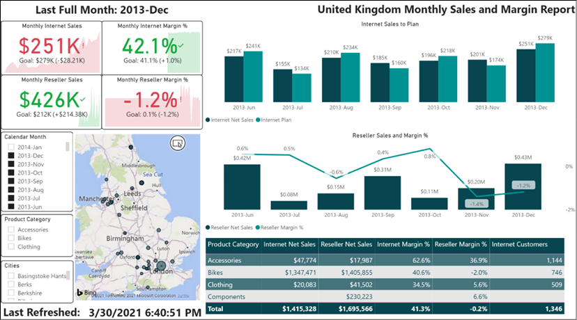
Figure 4.3: United Kingdom report page
Based on user feedback, a KPI visualization with a monthly trend and a goal measure is used to provide greater context compared to Card or Gauge visualizations. Overall, a standard visualization type with advantages in visual perception and additional analysis context was chosen. For example, KPIs were used instead of Card visuals; gauges, treemaps, and pie charts were avoided. A clustered column chart was chosen over a line chart for Internet Sales to Plan, given the importance of the individual values for each month. At a glance, each country report page also offers values with the KPIs visuals updating automatically.
Additional design decisions include the following:
The slicer visuals as well as the Play axis on the scatter chart are organized on the left to support user filter selections.
By hovering over the bubbles in the map or the bars in the chart, additional measures are exposed as tooltips.
A textbox is used for the page titles, and the last refreshed date footer is a Card visual. An M query with the DateTime.LocalNow function is retrieved and passed to a DAX measure, returning text.
The chart titles are customized, and the y-axis is removed when possible.
More details on the individual report components used in this example are contained within other recipes in this chapter.
There's more...
Similar to the simple—yet important—details with data modeling shared in Chapter 3, Building a Power BI Data Model, a number of design practices significantly improve the value and user adoption of Power BI reports:
Minimalism: Any report element that is not strictly required for comprehension should be removed. Examples include images, redundant chart axes, verbose text, and unnecessary data legends.
Efficient visuals: Leverage visuals and features that provide additional insights with the same amount of space; examples include KPI and combination chart visuals, tooltips, trend lines, and color saturation.
Meaningful colors: Colors should be used to convey meaning, such as high or low variances to a target or measure. Use colors selectively and avoid overwhelming or distracting users with color variety or density.
Organized: Report visuals should be aligned, distributed evenly, and situated near related visuals. The most important visuals should be near the top-left corner of the canvas, and white space should separate visuals.
Consistent: Layout and formatting choices, such as visual placement, fonts, and text alignment should be consistent. For example, slicer visuals should always be placed on the left or top of the visual.
Regarding consistency, Power BI supports report themes that include a standard color palette, fonts, font sizes, and other metadata elements that control the defaults for reports and visualizations. Nearly every aspect of the default settings for a Power BI report can be controlled, including whether axis titles are shown, label orientation, legend markers, and essentially anything that appears in the Format pane for pages and visualizations.
Many organizations will have a standard report theme, or even standard report layouts. Often, these themes reflect the corporate brand and identity. In this example, a report theme is applied to a report such that users with color vision deficiency can comprehend it clearly:
Download the Color Blind Friendly theme from the report theme gallery https://aka.ms/pbithemes. Use the ColorblindSafe-Longer.json file.
Open CH4_Start.pbix in Power BI Desktop and save this file as CH4_R1.pbix.
In the ribbon of the View tab, click the drop-down arrow in the Themes area and choose Browse for themes:
Figure 4.4: Report Themes
Browse to the downloaded JSON file, select it, and click Open. A message will appear, stating that the theme was imported successfully. Theme settings will be applied to the report. The colors available for formatting visuals now reflect the theme's colors. Save CH4_R1.pbix.
Figure 4.5: Report Theme colors applied to Formatting Pane of Power BI Report
Themes cannot be applied in the Power BI service, and some custom visuals do not apply report themes. Additionally, report themes do not impact the colors of images and do not override any custom color applied to a specific data point in a visual. It is important to apply themes early when developing reports to avoid situations where hours of formatting are suddenly undone after applying a theme!
Each report theme JSON file has a structure of elements of color code mapping consistent with that shown in Figure 4.6.
Figure 4.6: Color Blind Report Theme JSON file structure
Only the Name field is required in the JSON file. Any number of distinct codes can be entered in the dataColors field.
Filters can be configured against Power BI reports at each level of the report architecture, including the entire report, the report page, and the individual visual. As report filters are configured at design time and not exposed on the canvas like slicers, filters provide a powerful, efficient method of customizing elements of reports to specific needs. Report- and page-level filters that align with the user or team accessing the report, or with specific entities to be analyzed, deliver immediate focus and a certain degree of organization. For example, a report page built for one product category can be duplicated for other product category pages, with each page containing a different page-level filter. Visual-level filters deliver greater flexibility, as complex filtering conditions, including measures, can be defined in addition to any report- and page-level filters.
In this recipe, examples are provided of implementing filters at the three different scopes. The Top N visual-level filter condition is demonstrated in this section, and an example of the DAX queries generated by the filter types is shared in How it works.
Getting ready
To prepare for this recipe, follow these steps:
Open the CH4_R1.pbix file and save it as CH4_R2.pbix.
Rename Page 1 to Europe by right-clicking the page tab and choosing Rename Page:
Figure 4.7: Page renaming and creation
Use the + icon to create four additional report pages named France, Germany and UnitedKingdom, andScratch:
Figure 4.8: Report pages
Save your work.
How to Filter at Different Scopes
To implement this recipe, use the following steps:
Switch to the Europe page.
In the Fields pane, drag the Sales Territory Group column from the SalesTerritories table to the Filters on all pages area in the Filters pane.
Select Europe using Basic filtering.
Figure 4.9: Report-level filter for European Sales and Margin Monthly Report
Similarly, on the country pages for France, Germany, and UnitedKingdom, drag the Sales Territory Country column from the Sales Territories table in the Fields pane to the Filters on this page area in the Filters pane,and select the respective country for the page from Basic filtering.
Now select the Scratch page.
Create a Table visualization by choosing the Table visual from the Visualizations pane, and then from the Fields pane, add the Sales Territory Country from the Sales Territories table and the Internet Gross Sales measure from the Internet Sales table.
Select the Table visualization, and in the Filters pane, expand the Internet Gross Sales area in the Filters on this visual section.
Select is greater than from the drop-down under Show items when the value, and in the field below the drop-down type 3000000.
Click Apply filter to apply the filter to the visual.
Figure 4.10: Visual-level filter
How it works
Report-level filters affect all pages in a report; thus, when filters are applied to the Filters on all pages area of the Filters pane, all visuals on all pages of the report respect this filter if a relationship to the dimension exists in the model and if DAX does not override the filter. For the report described in the previous recipe, it is determined that the European team does not need to view other sales groups or countries, and thus we filtered the entire report (all pages) for a Sales Territory Group of Europe. Similarly, page-level filters only affect the visuals on the page to which they are applied. Thus, we filtered each country page to the appropriate Sales Territory Country.
Report- and page-level filters are most commonly implemented at different levels of a dimension hierarchy that is relatively static and has few unique values, such as the example in this recipe. Date range filters should generally be applied either in the data retrieval queries or the report canvas, with visuals such as the date slicer. As these filters are applied to all visuals in the report or page, respectively, try to avoid filters against high-cardinality columns such as ProductKey or Sales Order Number. DAX measures cannot be used to define report- and page-level filters.
Visual-level filters can be based on both measures and columns from the data model. These measures and columns can be present in the visualization or not present.
The DAX queries created by Power BI reveal how the different layers of filters are implemented. Using DAX Studio, we can view the DAX variables used to store the report- and page-level filters (as well as slicer selections):
Figure 4.11: DAX report-level filter variable in DAX Studio
Visual-level filters are also variables, but use the report- and page-level variables as inputs. The DAX queries created by Power BI take advantage of the latest functions and features, such as variables, VAR, and TREATAS.
There's more...
There are more advanced filtering options than just Basic filtering. These include Advanced filtering and Top N filtering. Both text and numeric columns support AND conditions as well as OR conditions to create more complex filter conditions. To see how this works, follow these steps:
Select the Table visualization created on the Scratch page.
In the Filters pane, clear the visual-level filter from Internet Gross Sales.
Expand the Sales Territory Country area in the Filters on this visual section and switch the Filter type to Advanced filtering.
Select contains from the Show item when the value drop-down, type the letter ain the field below, and then click Apply filter. The United Kingdom disappears from the Table visualization.
Clear this filter and change the Filter type to Top N.
Under Show items, choose Top and type the number 2.
Drag the Reseller Net Sales measure from the Reseller Sales table to the By value area and click Apply filter. Germany now disappears from the table.
If complex filtering conditions are required, or if filters are needed against columns with many distinct values (for example, Sales Order Number), it may be beneficial to account for this logic in the data retrieval or model, thus simplifying the DAX queries generated.
Additionally, report-, page-, and visual-level filters can be overridden with DAX measures. To see how this works, create the following measure in the Sales Territories table:
Count Countries = COUNTROWS(ALL('Sales Territories'))
Use a Card visualization on the Scratch page to display this new measure and observe that the measure's value is 11. Regardless of the report-, page-, and visual-level filters applied, this measure will always have a value of 11. The DAX function ALL overrides the filters being applied to the Sales Territories table.
Card and Multi-row Card visualizations are often positioned at the top and left sections of report pages, given the importance of individual measures and small sets of measures. Although less graphically powerful and interactive than other visuals, cards are also the most common tiles pinned to Power BI dashboards and are also used frequently in phone layouts for mobile consumption. A common practice in report design is to start with a few high-level measures represented as card or KPI visuals and build additional chart and Table visuals around these.
This recipe demonstrates how to use card, Multi-row card, KPI, and Gauge visualizations—as well as text boxes.
Getting ready
To prepare for this recipe, follow these steps:
Open the CH4_R2.pbix file and save it as CH4_R3.pbix.
Switch to the Scratch page, and use Ctrl-A then Delete to remove any visuals.
Check the Filters pane and ensure that only the Europe filter is active.
How to Integrate Card visualizations
To implement this recipe, carry out the following steps:
Select the Europe page.
Create a Card visualization using the Visualizations pane and then in the Fields list select the Last Full Month measure from the Calculations table.
In the Format pane, switch the Category and Background sliders to Off.
Figure 4.12: Format pane
Expand the Data label section, set the Text size to 18 and the Font family to Segoe (Bold).
Expand the General section and set the X Position to 0, Y Position to 0, Width to 448, and Height to 48. It is generally considered better to set the Width and Height first, then the X Position and Y Position.
Click a blank area of the page canvas and repeat steps 2, 3, and 4 to create another Card visualization that displays the Date Last Refreshed measure; in the General section set the X Position to 168, Y Position to 680, Width to 305, and Height to 36.
Click a blank area of the page canvas, select Text box in the ribbon of the Insert tab, and type Europe Monthly Sales and Margin Report.
Use Ctrl-A to select all of the text and then change the font to Segoe (Bold), set the text size to 18, and right-justify the text.
Figure 4.13: Settings to select when formatting
In the Format text box pane, switch the Background slider to Off, and in the General section set the X Position to 624, Y Position to 0, Width to 656, and Height to 48.
Select the Text box element just created and use Ctrl-C and then Ctrl-V to copy and paste the visual on the page.
Reposition the new Text box element, replace the text with Last Refreshed: and left-justify the text.
In the General section of the Format text box pane, set the X Position to 0, Y Position to 675, Width to 190, and Height to 45.
Click a blank area of the canvas, and from the Visualizations pane select the KPI visualization.
From the Fields list, expand the Internet Sales Table and select the Internet Monthly Net Sales measure as the Indicator, and the Internet Monthly Sales Goal measure as the Target goals. From the Dates table, use the Year Month column as the Trend axis.
Format the KPI visual just created by expanding the Title section, renaming the Title to Monthly Internet Sales and center-aligning the Title.
In the Indicator section, set the Display units to Thousands, the Value decimal places to 0, and the Text size to 40.
In the General section, set the X Position to 0, Y Position to 48, Width to 225, and Height to 122.
Turn the Border slider to On, expand the Border section, and set the Radius to 5.
In the Goals section, change the Label from Percent to Value.
Figure 4.14: KPI visualization
Select the KPI visualization and use Ctrl-C and then Ctrl-V to copy and paste the visual.
Reposition the new KPI visual on the page and replace the Indicator and Target goals with the Internet Monthly Margin % and Internet Monthly Margin % Goal measures from the Internet Sales table, respectively.
Format this new KPI visualization by changing Title to Monthly Internet Margin %, the IndicatorDisplay units to Auto, and in the General section set the X Position to 224 and the Y Position to 48.
Hold down the Ctrl key and use your mouse to select both KPI visuals.
Use Ctrl-C and Ctrl-Vto copy and paste both visualsand then reposition the visuals on the page.
For the Monthly Internet Sales visual, replace the Indicator and Target goals with the Reseller Monthly Net Sales and Reseller Monthly Sales Goal measures from the Reseller Sales table, respectively.
Format this new KPI visualization by changing Title to Monthly Reseller Sales and in the General section set the X Position to 0 and the Y Position to 168.
For the Monthly Internet Margin % visual, replace the Indicator and Target goals with the Reseller Monthly Margin % and Reseller Monthly Margin % Goal measures from the Reseller Sales table, respectively.
Format this new KPI visualization by changing Title to Monthly Reseller Margin % and in the General section set the X Position to 224 and the Y Position to 168.
Click a blank area of the page canvas, then use Ctrl-A and Ctrl-C to select and copy all visualizations on the Europe page.
Switch to the France page, use Ctrl-V to paste all of the visuals, and edit the Text box in the upper right to read France instead of Europe.
Repeat step 30 for the Germany and United Kingdom pages.
Save your work.
How it works
To integrate Card visualizations most effectively, identify the following two items:
Which measures does the user need to have maximum visibility to (such as all devices, reports, and dashboards)?
Which measures are available or can be created to serve as a target or goal to compare these measures to?
Numbers without well-defined targets nor any trending indicators, such as standard Card visualizations, are simply less valuable than KPIs that provide this additional context. However, KPI visualizations require both an Indicator and a Trend axis. In addition, goal and target measures are one of the main benefits of integrating Plan and Budget fact tables into data models. If this integration is not an option, a historical average of the indicator measure such as the trailing three or six months can be used as the KPI's target goal.
The data model used in this recipe actually does both. The Internet Sales Plan table (hidden in Report view) has internet sales plan numbers broken down by region, country, year, month, and product subcategory. This fact table is used for the Internet Monthly Sales Goal measure. This measure looks at the Today measure in the Dates Table and determines the last fully completed month from Today. Because we are dealing with the AdventureWorksDW2019 database where data is only posted until early 2014, we have set the Today measure to be 1/28/2014. In a real-world scenario, the Today measure would be set to be equal to the DAX TODAY function. The other goal measures are calculated using an average of the previous six months, after the last fully completed month. The measure that calculates this date is the 6 Months Ago measure in the Dates table.
Similarly, the target measures calculate their values for the most current, complete month, in this case December 2013. Alternatively, DAX measures could have been created that factored in the percentage of days completed in the month and applied that percentage to the target and goal measures.
While the KPI visualization should be preferred when displaying numeric values, the Card visualization can also be used quite effectively to display dynamic text data, such as the Date Last Refreshed column and Last Refreshed measure. The formula for the Last Refreshed measure is the following:
Last Full Month = "Last Full Month: " & FORMAT(EOMONTH([Today],-1),"yyyy-mmm")
The Date Last Refreshed column was created using the following Power Query query:
let Source = #table(type table[Date Last Refreshed=datetime], {{DateTime.LocalNow()}}) in Source
Static text information can be displayed using a simple Text box element, such as the report/page title in the upper right and Last Refreshed: in the lower left. However, text boxes can also be made dynamic via Q&A functionality, accessed in the Value and Review dialogs of the Text box formatting dialog.
There's more...
Two additional card- and KPI-style visualizations are available in Power BI Desktop's default visualization library: the Multi-row card and Gauge visualizations. Multi-row cards are best organized around a common dimension and measure and are often placed to the right of KPI or Gauge visuals as supplemental details. To see Multi-row Card visualizations in action, follow these steps:
Switch to the Scratch page.
Select the Multi-row Card visualization from the Visualizations pane and place the Internet Customer Count France, Internet Customer Count Germany, and Internet Customer Count United Kingdom measures from the Internet Sales table in the Fields field of the visualization.
Figure 4.15: Multi-row Card visualization
Power BI Desktop also includes a Gauge visualization that is a popular alternative to Card and KPI visualizations for dashboards. To see the Gauge visualization in action, follow these steps:
Copy the Monthly Internet Sales KPI visualization from the Europe page and paste it onto the Scratch page.
With the KPI visual selected, click the Gauge visualization in the Visualizations pane to convert the KPI visualization to a Gauge visualization.
Set the Value to the Internet Monthly Net Sales measure and the Target value to the Internet Monthly Sales Goal measure.
Figure 4.16: Gauge visualization comparing two measures (Value to Target value)
Slicer visuals are the primary means for users to apply filter selections to other visuals of a report page, and thus their implementation greatly affects usability and analytical flexibility. Although user interaction with other visuals also applies cross-filtering to other visuals, slicers provide the fastest and most intuitive method to define specific filtering criteria, such as three specific months and two product categories. Slicer visuals also have unique formatting options for defining the selection behavior, including a Select Alloption.
An alternative to slicers is the use of the Filter pane. While perhaps not as obvious to end users and requiring specific training, the use of the Filter pane as opposed to slicers does provide the benefit of preserving space on the Canvas. However, while the Filter pane can provide some of the basic usage scenarios common to slicers, slicers provide much greater flexibility in terms of interactions with different visuals on a page, synchronization of slicers across specific pages, and the layout and position of filtering elements relative to other visuals.
In this recipe, we look at the primary use cases for slicers and the report design considerations, including selection properties and formatting options. The slicer filter configurations available for Date data types are also reviewed, and additional details on text search and alternative slicer visuals are provided.
Getting ready
To prepare for this recipe, follow these steps:
Open the CH4_R3.pbix file and save the file as CH4_R4.pbix.
Switch to the Scratch page and use Ctrl-A and then Delete to remove any visuals.
Check the Filters pane and ensure that only the Europe filter is active.
How to Use Slicers
To implement this recipe, use the following steps:
Select the Europe page.
Create a Slicer visualization using the Visualizations pane, and then in the Fields list select the Year Month column from the Dates table.
With the slicer selected, use the ellipses (…) to change the sorting to Sort descending.
Figure 4.17: Slicer options
In the Format pane, switch the Slicerheader to Off, the Title to On, and change the Title to Calendar Month.
In the Format pane, switch Border to On and set the Radius to 5; in the General section, set the X Position to 0, Y Position to 295, Width to 160, and Height to 178.
Create a second slicer for the Product Category column in the Products table.
Right-click the (Blank) option in the Slicer and choose Exclude. Repeat this for Components.
In the Format pane, switch the Slicerheader to Off, the Title to On, and change the Title to Product Category.
Also, in the Format pane, switch Border to On and set the Radius to 5; in the General section, set the X Position to 0, Y Position to 479, Width to 160, and Height to 95.
Use Ctrl-C and then Ctrl-V to copy and paste the Product Category slicer.
Reposition the new slicer on the page, replace the slicer's Field with the Sales Territory Country column from the Sales Territories table, and edit the slicer's Title to Country.
Edit the Country slicer's General settings to set the X Position to 0, Y Position to 580, Width to 160, and Height to 94.
Select the three slicers and use Ctrl-C to copy.
Switch to the France page, use Ctrl-V to paste the slicers, and at the Sync visuals prompt select Sync.
Figure 4.18: Sync visuals prompt
Select Sync slicers from the ribbon of the View tab, select the Country slicer, and then uncheck the syncing for the France page. The correct configuration is displayed in Figure 4.19.
Figure 4.19: Sync slicer controls
Close the Sync slicers pane, replace the Country slicer's Field with the State/Province column from the Customers table, and edit the Title to be Regions.
Copy the Calendar Month and Product Category slicers to the Germany and United Kingdom pages, choosing to Sync both times.
Copy the Regions slicer from the France page to the Germany and United Kingdom pages, but this time choose Don't sync in both instances.
On the Germany page, change the Regions slicer's Title to States.
On the United Kingdom page, replace the Regions slicer's Field with the City column from the Customers table, and change the Title to Cities.
On the Europe page, select the following values in the Calendar Month slicer: 2013-Dec, 2013-Nov, 2013-Oct, 2013-Sept, 2013-Aug, and 2013-Jul.
When switching to other pages, the Calendar Month slicer on those pages also has those selections.
Save your work.
How it works
Slicers are important Power BI visuals, and so careful thought should be given when identifying slicer column(s). Typically, slicer columns are parent-level dimensions such as year or region with few individual values. Choosing a column with few values allows these items to be exposed on the canvas as a list, instead of using a drop-down. Using too many slicers, or slicers with too many distinct values, detracts from the usability of report pages. Without significant DAX customization to interpret filter selections, users can be uncertain as to what filters have been applied. Measures cannot be used in slicers, but slicers support the use of hierarchies and ad hoc hierarchies in their Field area.
It is recommended to position slicers to the left of all other visuals on the page. Format the slicer visuals with borders and/or background colors to make the slicers stand out on the page. With regards to using the Slicer header or the Title, pick one of the two and be consistent for all slicers on the page. The Slicer header provides a Clear selections option (the eraser icon), as well as allowing you to switch a slicer from List to Drop-down, and vice versa.
Figure 4.20: Slicer header options
Selecting items in the slicer cross-filters the other visuals on the page. Select the box next to an option once to select that value, and select the same box again to deselect the same value. Hold down the Ctrl key to select multiple values. This behavior can be controlled using the Selection controls area of the Format pane.
Figure 4.21: Slicer selection controls
You can also force only Single select. Turning off Multi-select with CTRL makes multiple selection possible without holding down the Ctrl key on the keyboard. Slicer item selection essentially becomes a set of checkboxes. The Show "Select all" option provides a quick method to select and deselect all values. The Select all option can be helpful if the slicer contains more than seven to 10 values. With Select all, the user can easily construct a filter to exclude only a few items from a long list.
Figure 4.22: Select All Slicer Selection Control Turned On
Slicers can be searched by activating the Search option from the ellipses (…) menu of the slicer.
Figure 4.23: Slicer Search option
Activating this option presents a Search bar at the top of the items list. Search is useful for long lists of items.
Slicers can also be synchronized between report pages. Sync'd slicers means that items selected in a slicer on one page affect any other pages where there is a sync'd slicer. Copying and pasting a slicer between pages prompts the Sync visuals dialog box but can also be controlled via the Sync slicers pane. By default, slicers with the same Field on different pages are "grouped," but you can use the Advanced options to control these groupings. In addition to synchronization, the Sync slicers dialog box allows you to control whether a slicer is visible on a page. Coupling sync'd slicers with making slicers invisible on pages can be used to free up page canvas space.
There's more...
There are many options when it comes to slicers. In addition to the options discussed so far, there are also special types of slicers, such as horizontal slicers, range slicers, and relative date slicers.
Horizontal slicers are an alternative design that can be activated by changing the Orientation setting in the General format section of the Format pane. Horizontal orientation slicers are often placed along the top of report pages and can benefit mobile consumption.
Figure 4.24: Slicer visual with Horizontal Orientation
Slicer visuals contain powerful filtering options when used with Date data types, including graphical date selection, before/after criteria, relative dates, and relative times. The default slicer type for a Date data type is a date range slicer or Between slicer. The start and end points of the timeline can be selected and dragged to revise the filter condition. Alternatively, selecting the date input cells exposes a graphical calendar picker element for choosing a date. The Before and After filter options gray out the start and end date input cells of the Between dialog, respectively. The Relative Date option provides three input boxes. The first input box allows the selection of Last, Next, or This.
The middle input box allows the entry of a number and the last input box provides a drop-down for various date intervals; see Figure 4.25.
Figure 4.25: Standard slicer based on a Date column configured for a Relative Date Filter
In the Format pane, you can specify whether the current day is included in the relative date filter as well as an Anchor Date. The relative date filtering options of slicer visuals are also available as report-, page-, and visual-level filters. The Relative Time option function is similar to the Relative Date option, only the intervals are in Minutes and Hours.
The default slicers format for numeric data types is also the Between slicer. The Less than or equal to and Greater than or equal to options for numeric slicers are analogous to a Date slicer's Before and After options.
Power BI report pages are interactive by default, with all visuals, excluding slicers, cross-filtered via the selections applied to one visual. While this dynamic filter context is often helpful in exploring and analyzing across dimensions, there is often also a need to exclude certain visuals from this behavior. For example, a high-priority measure reflected in a card or KPI visual may be configured to ignore any filter selections from slicers and other visuals on the page. Additionally, rather than the default highlighting of cross-filtered visuals, it can be beneficial to exclusively display the related values in other visuals.
In this recipe, we provide examples of configuring interactivity between visuals.
Getting ready
To prepare for this recipe, follow these steps:
Open the CH4_R4.pbix file and save the file as CH4_R5.pbix.
Switch to the Scratch page and use Ctrl-A and then Delete to remove any visuals.
Check the Filters pane and ensure that only the Europe filter is active.
How to Control Visual Interactions
To implement this recipe, use the following steps:
Select the Europe page.
Select any visual and click Edit interactions in the ribbon of the Format tab.
Select the Calendar Month slicer.
Figure 4.26: Edit interactions
Click on the None circle icon for the four KPI visualizations.
Repeat steps 3 and 4 with the Product Category and Country slicers.
Repeat steps 3, 4, and 5 for the France, Germany, and United Kingdom pages.
Select any visual and click Edit interactions in the ribbon of the Format tab to toggle off editing interactions.
Save your work.
How it works
In this example, it was determined that the KPI visualizations should always show the last full month's statistics for all products and all countries, states/provinces, and cities. To ensure this is the case, interactivity with all other visualizations on the pages is set to None instead of the default Filter, using the Edit interactions feature on Power BI Desktop.
It is important to realize that DAX measures can override cross-filtering behavior by using filter functions such as ALL, ALLEXCEPT, and REMOVEFILTERS. In fact, there actually was no need to set the interaction between the Calendar Month slicer and the KPI visuals to None because the DAX measures that drive the KPI visuals include the use of the ALL function for the Dates table as part of their calculations.
There's more...
The cross-filtering interactions between visualizations have the options of Filter, Highlight, and None—some visualizations, such as KPI visualizations, only include Filter and None options, whereas other visualizations, such as bar and column charts, include a Highlight option as well. To see the Highlight option, do the following:
From the Visualizations pane, create a Clustered column chart.
From the Fields list, add the Year Month column from the Dates table as the Axis, and add the Internet Net Sales and Internet Plan measures from the Internet Sales table as Values.
In the Format pane, expand Legend and change the Position to Bottom, turn off the Title on the X axis, turn the Y axis completely off, expand Data labels, and change the Display units to Thousands, the Value decimal places to 0, and Orientation to Horizontal; expand the Title section and change the Title text to Internet Sales to Plan with an Alignment of Center, and turn the Background to Off.
In the General section, set the X Position to 449, Y Position to 47, Width to 831, and Height to 241.
Create a Stacked bar chart with the Sales Territory Country column from the Sales Territories table as the Axis, and in the Values field well, place the Internet Net Sales measure from the Internet Sales table, and the Reseller Net Sales measure from the Reseller Sales table.
In the Format pane, expand Legend and change the Position to Bottom, turn off the Title on the Y axis, turn off the Title on the X axis, and then turn the X axis completely off; expand Data labels and change the Display units to Thousands, expand the Title section and change the Title text to Internet and Reseller Sales by Country with an Alignment of Center, and turn the Background to Off.
In the General section, set the X Position to 753, Y Position to 295, Width to 527, and Height to 212.
Select the Stacked bar chart visual and click Edit interactions in the ribbon of the Format tab.
Change the cross-filtering on the Clustered column chart visual from Highlight to Filter.
Figure 4.27: Cross-filtering icons
Click on the None circle icon for the four KPI visualizations.
Select the Clustered column chart visual and click on the None circle icon for the four KPI visualizations.
Select any visual and click on Edit interactions in the ribbon of the Format tab to toggle editing interactions off.
Click on columns in the Internet Sales Plan visual and observe the highlighting on the Internet and Reseller Sales by Country visual.
Similarly, click on the bars in the Internet and Reseller Sales by Country visual and observe that the Internet Sales Plan visual is filtered.
Copy the Internet Sales Plan visual to the France, Germany, and United Kingdom pages.
Data visualization and exploration is central to Power BI, and the visualization types chosen in reports contribute greatly to user comprehension and adoption. Power BI Desktop includes an array of modern visuals, such as the Treemap and the Funnel, but also includes a set of rich formatting options for traditional line, bar/column, combination, and scatter charts. Additionally, five map visuals are available to analyze geographical data, and an entire library of custom visuals is available via the AppSource store, which is integrated into the Home ribbon and Visualizations pane of Power BI Desktop.
A common mistake of inexperienced report developers is the overuse of fancy or complex graphical visuals. Report developers should choose visuals based on their alignment to the business questions within the scope of the report and should always prioritize simplicity and ease-of-use.
This recipe provides examples of utilizing various graphical visualization types, such as the Line chart, Line and Clustered column chart, Map, and Shape map.
Getting ready
To prepare for this recipe, follow these steps:
Open the CH4_R5.pbix file and save the file as CH4_R6.pbix.
Switch to the Scratch page and use Ctrl-A then Delete to remove any visuals.
Check the Filters pane and ensure that only the Europe filter is active.
How to Utilize Graphical Visualizations
To implement this recipe, use the following steps:
Select the Europe page.
From the Visualizations pane, select the Scatter chart visualization and add the Sales Territory Country column from the Sales Territories table as the Legend.
From the Internet Sales table, add the Internet Net Sales measure as the X Axis, the Internet Customer Count measure as the Y Axis, and the Internet Order Quantity Total measure as the Size.
From the Dates table, add the Date column (not a Date hierarchy) to the Play Axis.
In the General section of the Format pane, set the X Position to 160, Y Position to 295, Width to 594, and Height to 381.
In the Format pane, set the Legend to Off, and expand the Y Axis section, and change the Axis title to Distinct Customers; then expand the Title section, change the Title text to Internet Sales and Customer Count Trend by Country, and set the Alignment to Center.
Figure 4.28: Scatter chart visualization
Click a blank spot on the page canvas, and from the Visualizations pane, select the Line chart.
Use the Year Month column from the Dates table as the Axis, the Sales Territory Country column from the Sales Territories table as the Legend, and the Internet Margin % measure from the Internet Sales table for Values.
In the General section of the Format pane, set the X Position to 754, Y Position to 508, Width to 526, and Height to 212.
Expand the Legend section, set the Position to Bottom, and delete the Legend Name.
Expand the X Axis and Y Axis sections and toggle the Title to Off for both.
Toggle Data labels to Off.
Expand the Title section, change the Title text to Internet Sales Margin % by Country, and set the Alignment to Center.
Figure 4.29: Line chart visualization
Switch to the France page.
From the Visualizations pane, select the Map visualization, add the Location column from the Customers table as the Location, and the Internet Customer Count measure from the Internet Sales table as the Size.
In the General section of the Format pane, set the X Position to 160, Y Position to 295, Width to 288, and Height to 381.
Toggle the Category labels to Off and the Title to Off.
Click a blank area of the canvas and choose the Line and clustered column chart from the Visualizations pane.
From the Fields list, add the Year Month column from the Dates table as the Axis.
From the Reseller Sales table, add the Reseller Net Sales measure as the Column values and the Reseller Margin % measure as the Line values.
In the General section of the Format pane, set the X Position to 448, Y Position to 295, Width to 832, and Height to 232.
Expand the Legend section and change the Position to Bottom.
Expand the X Axis and Y Axis sections and toggle the Title to Off for both, and then toggle the Y Axis to Off.
Expand the Data labels section and change the Orientation to Horizontal.
Expand the Title section and change the Title text to Reseller Sales and Margin %,with an Alignment of Center.
Turn the Background to Off.
Copy the Map and the Line and clustered column chart and paste onto the Germany and United Kingdom pages.
Switch to the Germany page and select the Map visual.
Change to using the State/Province column from the Customers table for Location.
With the Map visual selected, select Shape map from the Visualizations pane. If Shape map is not present, this visualization can be activated using Preview features, found by selecting File from the menu/ribbon, then Options and settings, and finally Options.
In the Format pane, expand the Shape section and change the Map to Germany states.
Save your work.
Figure 4.30: Shape map visualization
How it works
Choose column charts when individual values and their comparison is more important than the trend. Select bar charts when the axis category labels are long, as bar charts will display more of the label text than column charts. Use line charts when the trend or shape of data is more important than individual values and their comparison. Select scatter charts to demonstrate a correlation of a dimension between two measures. Choose special-purpose visuals such as Treemaps and Waterfall charts as supplements to standard visuals.
It is generally recommended to avoid pie charts, donut charts, gauges, and treemap visuals, given the advantages in visual perception and comprehension of other visuals. For example, the curved shapes of pie charts and gauges are more difficult to interpret than straight lines and the distance between points in column/bar and scatter charts, respectively.
On the Scatter chart visual, you can click the Play button to have the measures calculated for each date in the Play axis. The shapes will move and change sizes over time.
For the Shape map visuals, states with higher sales have greater color saturation by default, and the tooltips display when hovering over states. The available shape maps include a Map keys dialog that is used to plot your location column. Map keys can be viewed by clicking View map keys from the Shape option in the Formatting pane. Ensure that your location data matches the keys before using the given shape map.
The Map and Filled map visuals can be used when a custom shape map is either not available for the location data or is not appropriate for the given use case. Both visuals use Bing to plot location points.
There's more...
The waterfall chart visual is best used to show the contributions of individual values to an overall total. To see how the waterfall chart works, follow these steps:
Switch to the Scratch page.
Create a Waterfall chart using the Sales Territory Country column from the Sales Territories table as the Category and the Internet Plan Variance measure from the Internet Sales table as the Values.
Figure 4.31: Waterfall chart
Waterfall charts should be sorted by the measure in order to support an intuitive "walk" from the components to the Total column. The default color formatting of red for negative and green for positive is usually appropriate. Additional columns can be added to the Category field in order to enable a drill-down dimension. The Year Month column from the Dates table or the Product Category from the Products table are good candidates. Additionally, a column can also be added to the Breakdown field. The Breakdown field calculates the variance and percentage variance of an individual dimension value between two category values. Adding the Product Category column to the Breakdown field displays the product categories with the most significant variances between the countries, with details available in tooltips.
Many chart types, such as line charts, have useful analytics options. To demonstrate these analytics capabilities, do the following:
On the Scratch page, create a Line chart with the Year Month column from the Dates table as the Axis, and the Internet Net Sales measure from the InternetSales table as the Values.
Select the line chart and choose the Analytics tab.
Figure 4.32: Analytics tab
Expand the Average line section and click Add.
Toggle the Data label to On and change the Text to Name and value.
A Trend line is available but only when the x-axis is set to Continuous. Date columns are a good choice to provide a Continuous axis. Date columns also make a Forecast analytic available.
A useful trick with line chart visuals is using a measure to add conditional formatting. Create the following measure in the Internet Sales table:
Variance Less Than 12% =
IF(
ABS([Internet Plan Variance]) < [Internet Net Sales]*.12,
[Internet Net Sales],BLANK()
)
Add this measure to the Values field well of the line chart. The conditional measure will be included in the line chart but will have a value (and not be blank) only when the condition is met. This approach follows general report design goals in providing more analytical value in the same space without impacting usability. Drill-down via the data hierarchy in the axis and additional measures in the tooltips provide further support in the same space on the report canvas.
Table and Matrix visuals are appropriate when visibility of precise, individual values are needed, or when data is viewed at a detailed level, such as in individual transactions. Table visuals in Power BI conform to the classic "list" report format of columns and rows but support powerful cross-highlighting and formatting options, including conditional formatting. Matrix visuals include Table visual features and correspond to the layout and general functionality of pivot tables in Excel: two-dimensional representations of measures with the ability to drill up and down the row and column axes.
In this recipe, the various capabilities of Table and Matrix visualizations are demonstrated, including conditional formatting, drill-down, and cross-highlighting.
Getting ready
To prepare for this recipe, follow these steps:
Open the CH4_R6.pbix file and save the file as CH4_R7.pbix.
Switch to the Scratch page and use Ctrl-A and then Delete to remove any visuals.
Check the Filters pane and ensure that only the Europe filter is active.
How to Create Table and Matrix visuals
To implement this recipe, use the following steps:
Select the France page.
From the Visualizations pane, select the Table visualization.
Add the Product Category column from the Products table, the Internet Net Sales, Internet Margin %, and Internet Customer Count measures from the Internet Sales table, and the Reseller Net Sales and Reseller Margin % measures from the Reseller Sales table.
Rearrange the measures as necessary in the Values area for the visualization.
In the Values well for the visualization, double-click the Internet Customer Count measure and rename it to InternetCustomers.
In the General section of the Format pane, set the X Position to 448, Y Position to 526, Width to 832, and Height to 194.
Expand the Style section and choose Contrast alternating rows.
Copy this visual to the Germany, United Kingdom, and Scratch pages.
On the Scratch page, use the drop-down for the Reseller Margin % measure in the Values well to apply Conditional formatting to the Background color.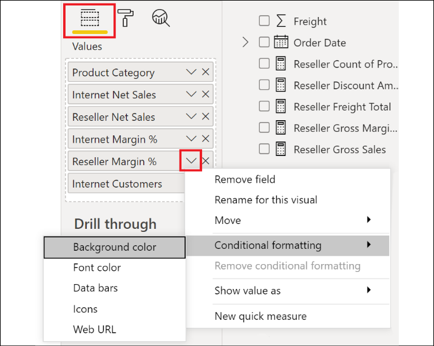
Figure 4.33: Conditional formatting
In the conditional formatting dialog, check the Diverging checkbox, and then click the OK button.
Figure 4.34: Diverging colors for conditional formatting
Conditionally format the background for Internet Net Sales, but this time change Format by to Rules and in the Rules change the drop-down to is blank.
Figure 4.35: Format by rules
Conditionally format the Reseller Net Sales measure, but this time choose Databars and click OK in the Data bars dialog to accept the default settings.
Figure 4.36: Table with conditional formatting applied
Copy and paste the Table visual on the Scratch page and reposition.
Remove the Reseller Net Sales and Reseller Margin % measures from this new visual and note that the Components row disappears from the table.
In the Values well for the visual, expand the menu for Product Category, choose Show items with no data, and note that the Components row reappears along with an entirely blank row.
In the Values well for the visual, expand the menu for Internet Customers, choose Show value as and then Percent of grand total, and note that percentages are now displayed in the Internet Customers column, and the blank row and the Components row disappear.
Add a Matrix visualization to the Scratch page.
Use the Sales Territory Hierarchy from the Sales Territories table for the rows, the Product Category Hierarchy from the Products table for Columns, and the Internet Net Sales measure from the Internet Sales table for Values.
Expand Europe using the + icon for the row.
Switch Drill on to Columns, choose the down arrow to turn on drill mode and click on the Bikes column.
Figure 4.37: Matrix visualization
Save your work.
How it works
Table and Matrix visualizations automatically filter out rows and columns for which there is no data. In effect, if the aggregations or measures in the Values area all evaluate to blank space, then the row is not displayed in the table. The Show items with no data feature overrides this default behavior but is not foolproof, as shown in the case of using the Show value as feature. An alternative approach is to construct measures in such a way that they return zero instead of a blank, as in the examples below:
Measure =
VAR __Sum = SUM('Internet Sales'[Sales Amount])
RETURN
IF(ISBLANK(__Sum),0,__Sum)
Data bars can be displayed with the measure values, as per this example, or as standalone bars. Specific minimum and maximum threshold values can also be entered to drive the conditional formatting of the bars.
In addition to conditionally formatting background colors and data bars, conditional formatting is also available for fonts as well as icons. If the same formatting logic and colors are used for both font color scales and background color scales, only the color of the value will be displayed, such as in a heat map.
A Show values as option is available for measures added to Table and Matrix visuals to display the measure value as a percentage of the row, column, or grand total. However, measures in Table and Matrix visuals cannot currently be formatted to display units, nor decimal places, such as thousands or millions. For Table visuals, only Percent of grand total is available, given the single dimension of the visual.
With Matrix visuals, the rows hierarchy can be navigated via the + and - icons at the start of each row. Alternatively, selecting Rows for the Drill on drop-down allows the drill-down icons to be used to navigate to the row hierarchy. Similarly, selecting Columns for the Drill on dropdown allows the columns to be navigated to via the same drill-down icons. There are four drill-down icons: the up arrow icon drills up one layer in the hierarchy; the down arrow icon turns on drill mode. When drill mode is active (solid circle), then clicking on a row or column drills one layer deeper into the hierarchy for that particular column, or row, only. The double down arrow icon drills one layer deeper into the hierarchy for all rows or columns, but the parent hierarchy context is lost in this case. To drill one layer deeper into the hierarchy for all rows or columns and preserve the parent hierarchy context, use the forked down arrow icon.
There's more...
An additional conditional formatting option for Table and Matrix visualizations is Web URL. Using the Web URL conditional formatting makes the displayed value into a live link. To demonstrate how this works, do the following:
On the Scratch page, create a Table visualization using the Customer Name, Email, and Service URL columns from the Customers table.
In the Values well for the Table visual, access the Conditional formatting for the Customer Name measure and choose Web URL.
In the Web URL dialog box, change Based on field to the Email column in the Customers table.
Figure 4.38: Web URL conditional formatting
In the Format pane, expand the Values section and toggle the URL icon setting to On.
Figure 4.39: Web URL conditional formatting and URL icons as live links
A unique option for Matrix visualizations is the ability to show multiple measures displayed on the rows of Matrix visuals. This is a very common use case in financial reporting. To see how this works, do the following:
Create a Matrix visualization on the Scratch page with the Product Category from the Products table in the Rows, Calendar Year from the Dates table in the Columns,and the Total Net Sales, Total Margin, and Total Margin % measures from the Calculations table as Values.
In the Format pane, expand the Values section and toggle the Show on rows option to On.
Figure 4.40: Matrix visual with three measures in the Values well displayed on rows
There are many report features that can add greater context and enhance the self-service data exploration experience. Three such features are Tooltips, Tooltip pages, and Drill through report pages.
In this recipe, we walk through the using Tooltips, Tooltip pages, and Drill through report pages to enhance our report.
Getting ready
To prepare for this recipe, follow these steps:
Open the CH4_R7.pbix file and save the file as CH4_R8.pbix.
Switch to the Scratch page and use Ctrl-A then Delete to remove any visuals.
Check the Filters pane and ensure that only the Europe filter is active.
How to Enhance Reports
To implement this recipe, use the following steps:
Select the Germany page.
Select the Shape map visualization.
In the Fields well, add the Internet Net Sales, Internet Margin %, and Internet Sales PerCustomer measures from the Internet Sales table to the Tooltips field.
Hover over a colored German state to see the new measures in the Tooltip pop-up:
Figure 4.41: Additional measures displayed in Tooltip
Create a new Page called Product Tooltip.
In the Format pane, expand the Page Information section and toggle Tooltip to On.
Expand the Page size section and change the Type to Tooltip.
Create a Clustered bar chart visualization and resize to consume the entire page.
Add the Product Subcategory column from the Products table to the Axis.
Add the Internet Net Sales measure from the Internet Sales table to the Values.
In the Filter pane, apply a visual-level filter on Product Subcategory, choosing a Top N filter showing 5 items by Internet Net Sales.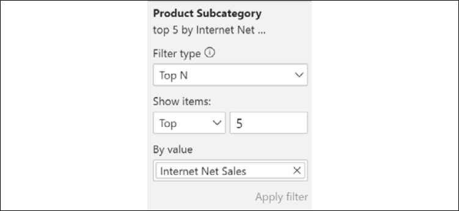
Figure 4.42: Tooltip visual filter
On the Germany page, select the Table visual.
In the Format pane, toggle the Tooltip to On.
Expand the Tooltip section, set Type to Report page, and Page to ProductTooltip.
Hovering over any cell in the table brings up the Product Tooltip page as a Tooltip for the subcategories within the Product Category for that row.
Figure 4.43: Report page tooltip
Create a Page called Customer Drill through.
In the Fields well for the page, add the State/Province column from the Customers table to the drillthrough fields area.
Figure 4.44: Page drillthrough fields
Note that a Back button is created automatically in the upper-left corner of the page.
Figure 4.45: Back button
Create customer-centric visuals, such as those shown in Figure 4.46.
Figure 4.46: Customer Drill through page
On the Germany page, right-click one of the colored states, choose Drill through and then Customer Drillthrough.
Note that the drillthrough filters adopt the context passed in from the page and visual.
Figure 4.47: Drillthrough filters after drilling through
How it works
Tooltips and report page tooltips are excellent methods for increasing the information and analytical density of reports, providing additional insights within the same amount of report page real estate. Both tooltips and report page tooltips inherit the context of the visual at the granularity of the visual element being hovered over with the cursor. This means that any measures within tooltips and any visuals within a report page tooltip will reflect the current context of the user interacting with the report.
Report authors can also design drillthrough report pages to enable users to quickly and easily explore the details associated with a specific item of interest. All visuals on the drillthrough report page update to reflect the filter context of the chosen item upon which drillthrough was initiated.
Drillthrough is a very powerful and popular feature in that it effectively serves as a custom-generated report tailored to a user's questions as the user views the report. Therefore, multiple drillthrough report pages across common dimensions may be included with popular reports that are actively interacted with. Consider utilizing the Power BI templates (.pbit files) described in the Working with templates recipe of Chapter 7, Parameterizing Power BI Solutions, to leverage existing drillthrough report pages in new reports.
Drillthrough pages are especially valuable for high-cardinality dimension columns, since the individual values of these columns will likely not have their own dedicated reports or report pages. For example, the Product Category and Product Subcategory columns may already have their own reports and dashboards, but an individual Product Model (third level of this hierarchy) may be a good candidate for one or multiple drillthrough report pages.
The back button is created automatically when a column is added to the drillthrough filters field well. This button can be formatted or removed entirely but is often helpful, particularly with reports containing several pages. Alternatively, any Shape or Image that can be added via the Insert tab of the ribbon in Power BI Desktop can also be used as a back button for a drillthrough page.
There's more...
In the drillthrough area for a page, you may have noticed the Cross-report toggle. Power BI does indeed allow you to drill through between reports, and not just pages. The source report must be enabled to use drillthrough targets from other reports, either in the Report settings of the CURRENT FILE in Options and settings, or in the Power BI service. The target report would then be configured to toggle the Cross-report option to On and the drillthrough fields configured appropriately. It is important to note that Cross-report filtering requires that the dataset schema of the reports match.
Power BI Desktop includes features to control and enhance the formatting and layout of reports at a detailed level. Prior to publishing reports to the Power BI service, visuals can be aligned, sized, and evenly spaced to deliver an organized, symmetrical layout. Additionally, supplemental report elements, such as shapes, text boxes, and images, can be added to further organize and enrich report pages with textual and visual aids.
This recipe demonstrates how to control the positioning, alignment, and distribution of report visuals, as well as tips for presenting and working with visuals in groups. Additionally, helpful tips are presented for final clean-up items prior to publishing a report, as well as setting up Q&A after publishing.
Getting ready
To prepare for this recipe, follow these steps:
Open the CH4_R8.pbix file and save the file as CH4_R9.pbix.
Switch to the Scratch page and use Ctrl-A, then Delete to remove any visuals.
Check the Filters pane and ensure that only the Europe filter is active.
How to Format Reports
To implement this recipe, use the following steps:
Copy and paste the four KPI visuals from the Europe page to the Scratch page.
Move the KPI visuals around on the page, spacing them out vertically at different horizontal positions.
Notice the automatic alignment guides (the dashed red lines called smart guides) that appear when moving or resizing visuals.
Figure 4.49: Automatic alignment guides
Use Ctrl-A to select all of the KPI visuals.
Select the Format tab in the ribbon, choose Align, and then Align left.
Figure 4.50: Arrange options in the Format ribbon
The visuals are all aligned to the leftmost visual.
Select Align again and choose Distribute vertically.
The visuals are distributed vertically on the page with equal spacing.
Select Group and then Group from the ribbon of the Format tab.
The visuals can now be moved around on the page as a single unit.
Select Group and then Ungroup.
Stack the visuals roughly on top of one another.
Click on a blank area of the page and then select the top visual.
From the Format tab, select Send backward and then Send to back.
Click on a blank area of the page canvas and note that the visual is now beneath all of the other visuals.
Select one of the visuals, and this time choose Selection from the ribbon of the Format tab to expose the Selection pane.
Figure 4.51: Selection pane
Use the up and down icons to change the Layer order of the visuals.
Switch to Tab order and again use the up and down icons to change the tab order of the visuals.
Close the Selection pane.
Space the KPI visualizations out horizontally on the page.
Select all of the visuals using Ctrl-A.
Select the Format tab, and in the ribbon choose Align | Align top and then Align | Distribute horizontally.
Convert each of the KPI visuals to Card visuals.
Toggle the Border and Background to Off for one of the KPI visuals.
With the Card visual selected, choose the Format painter from the ribbon of the Home tab.
Note that the cursor is now a paintbrush; select one of the other Card visuals.
Click the Format painter again and select the next Card visual; repeat for the last Card visual until all the Card visuals no longer have a Border or a Background.
Click on the Insert tab and choose Shapes in the ribbon and then Rectangle.
Enclose all of the Card visuals in the rectangle.
From the Format tab, use Send backward and then Send to back to put the rectangle behind the Card visuals.
Select Ctrl-A and then choose Group | Group from the ribbon of the Format tab.
Figure 4.52: Grouped Card visuals with no Border or Background
From the View tab, check the options for Gridlines and Snap to grid in the Page options section of the ribbon.
Figure 4.53: Page options in the View ribbon
Moving the group of visuals or resizing visuals now snaps to the grid points.
Deactivate Gridlines and Snap to grid.
Right-click the Scratch page tab and choose Hide Page.
Figure 4.54: Hide Page
Repeat step 32 for the Product Tooltip and Customer Drill through pages.
Use the + tab to add a page called Information.
On the Information page, use the Insert tab of the ribbon to create a Text box similar to the image in Figure 4.55.
Figure 4.55: Information page of report with active mailto link
In this case, Helpdesk was selected and made into an active mailto: link.
From the View tab, choose Lock objects in the ribbon.
Select the Europe page and save your work.
From the Home tab, choose Publish in the ribbon to publish the report to the Power BI service.
How it works
Once a report is ready to be published, it is a good idea to use the Lock objects setting to prevent unintended movement or resizing of visual elements. It is important to note, however, that Lock objects only affects the movement or resizing of visuals by mouse and keyboard. The X Position, Y Position, Width, and Height settings in the General section of the Format pane can still reposition and resize visuals.
Before publishing a report, you should hide or remove pages used during development, such as the Scratch page. Pages used for report page tooltips should also be hidden. Drillthrough pages may or may not be hidden, depending on their utility in the report. Hidden pages will not be shown to the report reader when viewing the report in the Power BI service.
It is often a good idea to include an Information page. Information pages can be used to describe the data sources used in the report, helpful tips for navigating the report, and even support information.
Positioning and alignment are key qualities in a professional report. As demonstrated in this recipe, Power BI provides many options for ensuring that visuals are aligned and sized in symmetrical ways. The automatic alignment guides are present whenever moving or resizing a visual element on a page.
These alignment guides appear relative to the edges of other visual elements on the page, as well as "common" edges, such as the center of the page. Alternatively, the Align options present in the Format ribbon offer a way to mass-align many visuals simultaneously. In addition, the distribution options present in the Align options are a great way to ensure even spacing between similar visuals. The Gridlines and Snap to grid features available in the View ribbon can also assist you in getting the visuals properly oriented on the page.
Shapes can better organize visuals and can improve report aesthetics relative to the borders and backgrounds of each visual. Shapes are commonly used for report title backgrounds, and they can also customize the plot area of charts, such as by splitting a scatter chart into four squares, with each square having a distinct background color.
There's more...
With a report and dataset published to the Power BI service, we can now configure Q&A for the report. To see how this works, do the following:
View the Germany page in the Power BI service. Hover over one of the KPI visuals and use the pin icon to pin the visual to a dashboard.
Figure 4.56: Pin visual
Select New dashboard, enter a name for the dashboard, and click the Pin button.
Figure 4.57: Pin to dashboard dialog
Q&A natural language queries are submitted from dashboards against the underlying datasets. In order for Q&A queries to access a dataset and its dependent reports, at least one tile of the given Q&A dashboard must be dependent on this dataset.
Navigate to the dashboard and note the Ask a questionabout your data prompt, then click the prompt.
Figure 4.58: Dashboard Q&A
Test Q&A using your own questions, or one of the suggested questions; for example: top Germany resellers by reseller net sales.
Click on the gear icon in the top-right corner of the Power BI service and select Settings.
Select the Datasets tab and the specific dataset to be queried via Q&A.
Expand the Featured Q&A questions section and add questions; these questions will now appear as suggestions when using Q&A from the dashboard.
Figure 4.59: Featured Q&A questions option in Datasets Settings
Power BI reports can be optimized for consumption on mobile devices via the Mobile layout view in Power BI Desktop. This layout allows users accessing reports through the Power BI mobile applications to more easily view and interact with the most important content of these reports on iOS, Android, or Windows mobile devices. Given the importance of the mobile experience and the unique design considerations for reports with multiple pages, optimizing Power BI reports for mobile access is essential.
In this recipe, the Europe and United Kingdom report pages of the example report provided in the first recipe of this chapter are configured with the Mobile layout. Additional details for optimizing Power BI dashboards are included in the There's more... section.
Getting ready
To prepare for this recipe, follow these steps:
Open the CH4_R9.pbix file and save the file as CH4_R10.pbix.
Switch to the Scratch page and use Ctrl-A and then Delete to remove any visuals.
Check the Filters pane and ensure that only the Europe filter is active.
How to Design Mobile Layouts
To implement this recipe, use the following steps:
Select the Europe page.
From the View tab, select Mobile layout in the ribbon.
Figure 4.60: Mobile layout
Populate the Mobile layout view: click and drag the visualizations to the desired position in the device grid.
Figure 4.61: Populated Mobile layout
Switch to the United Kingdom page and also configure the Mobile layout.
Figure 4.62: United Kingdom Sales and Margin Mobile layout
Exit Mobile layout by clicking on Mobile layout in the ribbon of the View tab.
Save your work.
Publish the report to the Power BI service.
Test the mobile views using the Power BI app on your phone.
How it works
The utilization of Power BI reports often varies significantly across devices. For example, a report page with multiple slicers and table or Matrix visuals may be appropriate for a detailed, interactive experience on a laptop but may not lend itself well to mobile consumption. In many scenarios, the user prefers simple, easy access to only a few high-level visuals, such as Cards or KPIs on their mobile device, rather than a sub-optimal representation of all the visuals included on the page.
If mobile consumption is expected, the report's authors should collaborate with users on this layout and overall experience. Given that the Mobile layout is at the report page scope and visuals cannot be combined from multiple pages, a dedicated report page containing the most important measures or KPIs can be helpful. These report pages often contain only numbers via Card, Gauge, or KPI visuals to provide a single, at-a-glance mobile view of the most important data points.
The phone layout presents a rectangular mobile device grid and a Visualizations pane containing the different elements of the given report page, including text boxes and shapes. Though it is possible to design mobile-optimized layouts for each report page, for most reports it may only be necessary to design one or two mobile layouts that highlight the most important measures or trends of the report.
The Visualizations pane of Mobile layout makes it easy to identify the elements to include or exclude. The visualizations snap to the grid at a default size and scale up or down on different sizes of mobile devices.
Once saved and published back to the Power BI service, users accessing the report from mobile devices will see the defined phone layout. In the absence of a mobile layout, mobile users will be advised that this has not been configured, and can adjust the orientation of their devices (to horizontal) to view the report page in a landscape view. Switching to a landscape orientation will open the report in the standard desktop view, regardless of whether or not the phone layout has been configured. The pages of a Power BI report can be accessed via swiping gestures from the side of the screen or the pages icon.
Figure 4.63: Switch to landscape view
There's more...
Many of the same interactive features of Power BI reports, such as drill mode and slicers, are also available through Power BI mobile applications. However, given the form factor limitations, it is important to evaluate the usability of these elements and consider whether mobile-friendly visuals, such as Cards or KPIs, can provide the necessary visibility.
As dashboards are created and modified in Power BI, the service allows a similar mobile optimization authoring experience for dashboards. From a dashboard in the Power BI service, click on the Edit drop-down, as demonstrated in Figure 4.64.
Figure 4.64: Mobile view for dashboard in the Power BI service
The mobile view and functionality are very similar to the mobile layout in Power BI Desktop. A pinned live page to a dashboard becomes one dashboard tile, and thus only one mobile visual. Therefore, pinning individual report visuals to tiles in dashboards is necessary to effectively configure mobile-optimized dashboards.
Microsoft has made great strides to ensure that paginated reports (SSRS-style reports) are first-class citizens in the Power BI universe. Power BI Premium supports such reports, as does the Power BI Report Server (PBIRS). The most recent evidence that Microsoft still embraces paginated reports for Power BI is the announcement of a planned report-building experience within Power BI Desktop for the creation of paginated reports and the Paginated report visual released in May 2021.
At this time, however, paginated reports must still be created in a separate tool, Power BI Report Builder. This recipe demonstrates how to download and install Power BI Report Builder and use this tool to build a paginated report.
When considering paginated reports, it is useful to confirm whether a paginated report should indeed be developed. The following questions can help confirm that a paginated report is required:
Does the report need to be printed across multiple pages?
Is the report more of a static operational report with just a table of data?
Does the report data itself need to be delivered to people via email subscriptions?
Yes answers to one or more of these questions can help provide confirmation that a paginated report is required.
How to Create Paginated Reports
To implement this recipe, use the following steps:
Run the Power BIReport Builder app.
Upon opening Power BIReport Builder, choose New Report and Table or Matrix Wizard.
Figure 4.65: Report Builder Getting Started dialog
Choose Create a dataset and click Next.
Select New to create a new data source connection.
Choose the connection type Microsoft SQL Server.
Use the Build option to configure the data source; when finished, click the OK button.
Figure 4.66: Creating a new data source
Click the OK button.
Click the Next button.
Expand Views and then expand the vProducts view to select the following fields:
ProductKey
EnglishProductName
EnglishProductCategoryName
EnglishProductSubcategoryName
DaysToManufacture
Color
Expand Tables, and then expand the FactInternetSales table to select the following fields:
ProductKey
OrderQuantity
UnitPrice
DiscountAmount
SalesAmount
TaxAmt
Freight
OrderDate
Expand the Relationships area, deselect Auto Detect, and press the Add Relationship icon.
Figure 4.67: Add Relationship
Select vProducts for the Left Table andFactInternetSales as the Right Table.
Figure 4.68: Join tables
Double-click the area under Join Fields.
In the Edit Related Fields dialog box, click the Add Field icon and then choose the ProductKey field from each table; click the OK button.
Figure 4.69: Edit related fields
In the Design a query dialog box, click the Next button.
In the Arrange fields dialog, put the following fields into the Row groups area, in this order:
EnglishProductCategoryName
EnglishProductSubcategoryName
EnglishProductName
Put the following fields into the Values area:
OrderQuantity
UnitPrice
DiscountAmount
SalesAmount
TaxAmt
Freight
Leave the aggregation as Sum; this can also be changed using the drop-down for the field in the Values area.
Click the Next button.
In the Choose the layout dialog, choose Stepped, subtotal above and click the Next button.
Click Finish >> on the Preview screen.
Figure 4.70: Report Builder design view
Click the Run button in the ribbon.
Figure 4.71: Report matrix
Save the report as CH4_R11.rdl.
How it works
Report Builder is the newest report-building tool in a long line of such tools that use the Report Definition Language (RDL). RDL files are actually XML files. Here is the first part of the XML for the report just created:
RDL files have been used in conjunction with SSRS since SSRS was first released. Power BI Report Server and Power BI Premium both support RDL files. If you have either Power BI Report Server or Power BI Premium, you can use the Publish button in the ribbon of the Home tab to publish the report.
Unlike Power BI Desktop, you do not import data into an RDL file. Datasets comprise the data source, queries, and field definitions stored within the RDL file. Thus, running a report always makes one or more queries back to the data source(s).
There's more...
There is a tremendous amount of functionality and capability present in Power BI Report Builder—functionality that is far beyond the scope of a single recipe. However, some of the highlights include the ability to use Power BI datasets in the service as data sources, numerous available visual elements, calculated fields, and formatting.
When adding a Data Source, the option exists to Add Power BI Dataset Connection. After signing into the Power BI service, you can select any dataset in any workspace to which you have access. Once you have added the Power BI dataset data source, you can create a dataset with that data source. A Query Designer window is available for constructing queries against the dataset.
Figure 4.72: Query Designer
Power BI Report Builder includes a number of visual elements available in the Insert menu, including:
Table
Matrix
List
Column Chart
Line Chart
Pie Chart
Bar Chart
Area Chart
Gauge
MAP
ESRI Shapefile
Data Bar
Sparkline
Indicator
Also available are elements such as Text Box, Image, Line, and Rectangle. Reports can also include Subreports, Headers, and Footers.
Calculated fields can be created using numerous functions and operators; the following two formulas create calculated fields for TaxAndFreight and Year, respectively:
You can format cells by clicking on the cell in the grid and then using the ribbon of the Home tab to format information that appears in the column and row. For example, row headers can be put in bold and monetary fields set to Currency.
Power BI reports serve as the foundation for dashboards, data exploration, and content collaboration and distribution in Power BI. Power BI Desktop provides data visualization features and options in abundance, enabling the construction of highly targeted and user-friendly reports across devices. In this chapter, we developed and described the most fundamental report visualizations and design concepts. Additionally, guidance was provided to enhance and control the user experience when interacting with Power BI reports and consuming them on Windows and mobile devices.
5
Working in the Service
"A dashboard is really a content aggregator. It lets you bring together lots of different data sources in one place so you can have a 360 degree view of your business on one dashboard."
- Adam Wilson, group program manager for the Power BI service
Power BI dashboards are collections of tiles created in the Power BI service, representing the visuals from one or many Power BI reports and, optionally, other sources, such as Excel and SQL Server Reporting Services (SSRS). Dashboards are best utilized to centralize essential key performance indicators (KPIs), measures, and trends in a visual- and mobile-optimized layout. Additionally, dashboards can provide an entryway to other dashboards or reports and are further enhanced with URL links, streaming data, images, web content, and interactivity.
In this chapter, Power BI dashboards are constructed to provide intuitive, at-a-glance monitoring of critical measures and high-impact business activities. The unique features of dashboards, such as Q&A natural language queries, data alerts, and the integration of other report types—such as Excel and SSRS—are also included. Finally, the creation of additional content objects, such as streaming datasets and dataflows, is also included.
In this chapter, we will cover the following recipes:
Building a Dashboard
Preparing for Q&A
Adding Alerts and Subscriptions
Deploying Content from Excel and SSRS
Streaming Datasets
Authoring Dataflows
Technical Requirements
The following are required to complete the recipes in this chapter:
Power BI Desktop and a Power BI service account.
SQL Server with the AdventureWorksDW2019 database installed. This database and instructions for installing it are available here: http://bit.ly/2OVQfG7.
With a robust dataset and multiple reports created in Power BI Desktop, dashboards can be developed in the Power BI service to consolidate the most valuable KPIs, measures, and visualizations onto a single pane of glass. Additionally, dashboards provide an access point to the detailed reports supporting the tiles and are optimized for mobile access through the Power BI mobile application.
Power BI dashboards are commonly used by executives and senior managers who desire an intuitive, consolidated view of relevant KPIs and visualizations. In many cases, these stakeholders will almost exclusively rely on dashboards rather than the more detailed and interactive reports underlying the dashboards. Such dashboards are often sourced from reports built against multiple datasets reflecting different business processes and functional areas such as Accounting and Supply Chain. Enterprise dashboards typically utilize card and KPI visuals to focus on strategic objectives and maximize canvas space. Given the scale and breadth of data sources for a modern enterprise, a significant level of coordination is required to ensure that all datasets supporting the dashboard represent an appropriate level of data quality and governance.
The report design planning process described in Chapter 4, Authoring Power BI Reports, is directly applicable to dashboards as well. It is important to confirm that the existing data model (or models) support the required business questions and metrics exposed in a dashboard.
In this recipe, a sales dashboard is created for the North American sales management team. Four reports have been built against the same Power BI dataset (data model) and the visuals from these reports are pinned as tiles to the sales dashboard.
Figure 5.1: North America sales dashboard structure: 4 reports and 1 dataset
Getting Ready
To prepare for this recipe, follow these steps:
Log in to the Power BI service.
Click on Workspaces in the left navigation pane and select Create a workspace at the bottom of the fly-out. If you cannot create a workspace, check with your Power BI administrator, as they may have disabled this option.
Figure 5.2: Create a workspace
In the Create a workspace dialog, enter a Workspace name and click Save.
In the center area, click Add content.
In the Get Data dialog, click the Get button for Files.
Figure 5.3: Get Data, Files
Choose Local File.
Select the CH5_R1_SalesAndFinanceDataset.pbix file and click Open.
Open the CH5_R1_RegionMonthlyReport.pbix file in Power BI Desktop.
Sign in to the Power BI service if necessary, and in the Unable to connect dialog, choose Edit. If you receive an error, contact your administrator to allow a connection to live datasets.
On the Select a dataset to create a report page, choose the CH5_R1_SalesAndFinanceDataset, and then click the Create button.
Save and Publish the report to the service in the Workspace created in step 3.
Repeat steps 8, 9, 10, and 11 for CH5_R1_CountryMonthlyReport.pbix, and CH5_R1_MarginAnalysisReport.pbix.
If you are unable to create a Workspace in the Power BI service, you can use My workspace instead. After completing these steps, the reports all have a live connection back to the dataset, CH5_R1_SalesAndFinanceDataset.
How to Build a Dashboard
To implement this recipe, use the following steps:
In the Power BI service, select the workspace created in the Getting started section of this recipe.
In the central area, click New and then choose Dashboard.
Figure 5.4: Create a new dashboard
In the Create dashboard dialog, enter North American Sales for Dashboard name and then click Create.
A blank dashboard is created; click on the workspace in the left navigation pane and note that the North American Sales dashboard is shown in the list.
In the service, open the CH5_R1_RegionMonthlyReport report and navigate to the North America page.
Hover your mouse over the Monthly Internet Sales KPI visualization and click the pin visual icon.
Figure 5.5: Pin visual
In the Pin to dashboard dialog, choose Existing dashboard, select North American Sales, and then click the Pin button.
Figure 5.6: Pin to dashboard
Pin the Monthly Internet Margin % KPI visualization to the North American Sales dashboard.
Open the CH5_R1_MarginAnalysisReport report in the service.
In the Sales Group slicer, choose North America.
In the Calendar Month slicer, choose 2013-Dec, 2013-Nov, 2013-Oct, 2013-Sep, 2013-Aug, and 2013-Jul.
Pin the Net Sales vs. Last Year clustered column chart visualization to the North American Sales dashboard.
Open the CH5_R1_CustomerActivityReport report in the service.
In the Sales Group slicer, choose North America.
In the Calendar Month slicer, choose 2013-Dec, 2013-Nov, 2013-Oct, 2013-Sep, 2013-Aug, and 2013-Jul.
Pin the Monthly Customers KPI visualization to the North American Sales dashboard.
Pin the YTD Net Sales vs. Last Year gauge visualization to the North American Sales dashboard.
Pin the Customer Count by Region stacked column chart visualization to the North American Sales dashboard.
Pin the YTD Net Sales by Region clustered bar chart visualization to the North American Sales dashboard.
Open the CH5_R1_CountryMonthlyReport report in the service.
Navigate to the United States report page.
Pin the filled map visualization to the North American Sales dashboard.
Navigate to the Canada report page.
Pin the Filled map visualization to the North American Sales dashboard.
Open the North American Sales dashboard in the service.
Move and resize the dashboard tiles such that the most important visuals are in the top-left corner.
On the Filled map for the United States, hover over the tile and select the ellipsis (…) from the upper-right corner.
Choose Edit details.
Edit the Title to be Internet Net Sales by State, remove the Subtitle text, and click Apply.
Repeat steps 27 to 29 for the Canada map using Internet Net Sales by Province as the Title.
Figure 5.7: North American Sales dashboard
The dashboard provides an overview of the measures most important to the North America sales team. You can access any of the four underlying reports by clicking on a dashboard tile.
Note that resizing and moving dashboard tiles can be tricky at first. Hovering over a dashboard tile with your cursor displays a single resizing handle in the bottom-right corner of the tile. Click on this resizing handle to resize the tile. Tiles resize to preconfigured tile sizes displayed by the gray box displayed around the tile while resizing. When moving a tile, click and hold on the tile to move the tile around on the dashboard. Other tiles will automatically move depending upon where you place the tile. Release the mouse button to place the tile.
Just above the main dashboard area, select Edit and then Add a tile.
Figure 5.8: Dashboard Edit menu
In the Add a tile panel, choose Image, then click Next.
Add text to the Content area; notice that you can use the Insert link icon to add active links.
Figure 5.10: Text box tile settings
Click the Apply button.
From the Edit menu of the report, choose Mobile view.
In the Unpinned tiles pane, pin the new tiles to the Phone view.
Drag and drop tiles to reposition or resize them using the sizing handle at the lower right.
Figure 5.11: Dashboard Mobile view
When finished, at the upper right, select the dropdown for Phone view and switch to Web view.
How it works
It is important to understand that dashboard tiles maintain the filter context at the time the report visual is pinned. This is often a source of confusion for users and designers alike, as depending upon the design, a tile may appear to not update. For example, in the recipe, the last six months of 2013 were selected in the slicer before pinning the Net Sales vs. Last Year tile. Assuming that December 2013 is "today," when the data comes in for January 2014, this Net Sales vs. Last Year tile would not reflect data for January 2014. The tile would have to be unpinned and re-pinned with the new month included. To avoid situations like this, use Relative Date slicers/filters or base filtering on a flag field column that returns 1 if data is within a chosen range and 0 otherwise. This can be done in DAX or M; a DAX example is as follows:
6MonthFlag Column =
VAR __Today = TODAY()
VAR __EOM6Months = EOMONTH(__Today,-6)
VAR __MinDate = DATE(YEAR(__EOM6Months),MONTH(__EOM6Months),1)
RETURN
IF('Dates'[Date] >= __MinDate && 'Dates'[Date] <= __Today,1,0)
As demonstrated, dashboard tiles do not have to come from reports and can be added manually to include Image, Video, Text box, Web content, and Streaming data. In addition, a single dashboard can have tiles that come from reports that do not share the same dataset. Thus, if each of the four recipes in this model used different datasets, the exact same dashboard could still be created, as long as the reports all existed within the same workspace. In large enterprise organizations with many dashboards and reports, dashboards are sometimes used purely as a navigation device. By adding tiles of images or text, and using the ability to set custom links, a dashboard could be configured simply to link to other organizational dashboards.
There's more
By default, the tiles of a dashboard are independent of each other, and cannot be filtered or interacted with, such as when cross-filtering between visualizations. Additionally, modifications to reports after visuals have been pinned to dashboards, such as filter and layout changes, are not automatically reflected in the dashboards. In many scenarios, the users consuming a dashboard want to retain the interactive filtering experience of Power BI reports from within their dashboard, and so it can be helpful to automatically synchronize reports with dashboards. Luckily, Power BI supports the pinning of entire report pages to a dashboard. To see how this works, do the following:
Open the report CH5_R1_RegionMonthlyReport in the service.
From the menu bar of the report, click the ellipsis (…) and choose Pin to a dashboard.
Figure 5.12: Pin to a dashboard
After selecting Pin to a dashboard, choose Existing dashboard, select the North American Sales dashboard, and click the Pin live button.
Navigate to the North American Sales dashboard, scroll down, and note that the report is now pinned as a tile.
The user of the dashboard can interact with the region and date slicers and other visuals on the live page. Given the size of the report page, it is generally not a good idea to pin a live report page to the Mobile view. The ellipsis at the top right of the live page tile includes the option Go to report link to access all pages of the live page report. Modifications to the underlying report will be reflected on the pinned live page. The other visuals link to their report pages.
Q&A can be a powerful method of enabling users to explore datasets, enabling them to directly submit their own questions in both the Power BI service and through the Power BI mobile application. The tables and measures of each dataset, represented by a tile on the dashboard, are available to answer Q&A questions.
This recipe provides data model design and metadata tips to prepare a dataset for Q&A. Additionally, synonyms are added to a Power BI Desktop data model to improve the accuracy of natural language queries.
Getting ready
To prepare for this recipe:
Complete the first recipe in this chapter, Building a Dashboard.
How to Prepare for Q&A
To implement this recipe, use the following steps:
Open the North American Sales dashboard.
At the upper left of the dashboard, click Ask a question about your data.
Figure 5.13: Power BI Q&A
Type the following: wholesaler net sales by country.
Notice that the word wholesaler is double-underlined in red, net sales is underlined in blue, and country is underlined with a dashed red line.
Figure 5.14: Showing results for net sales by reseller country
Hover over one of the map bubbles displayed and notice that the tooltip reads Total Net Sales, and notReseller Net Sales.
Click the thumbs-down icon in the lower-right corner of the screen.
Open the file CH5_R1_SalesAndFinanceDataset.pbix.
Change to the Model view.
Click Q&A setup in the ribbon of the Home tab.
In the Q&A setup dialog, click the Review questions tab and notice that the question asked is present in the list. Note that you may have to wait a few minutes, using the refresh icon for the question to display.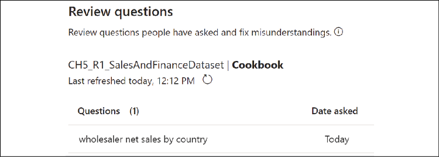
Figure 5.15: Review questions
Click the pencil icon under the Fix needed column. Note that if the question does not appear after a few minutes, simply proceed to the Teach Q&A tab, enter the question wholesaler net sales by country, click the Submit button, and proceed to Step 13.
The Teach Q&A tab is opened with the question displayed.
The word "wholesaler" is flagged between two handles; in Define the terms Q&A didn't understand, type reseller in the input field (see Figure 5.16).
Figure 5.16: Adding synonym for reseller
Click Save, but notice that the map visual is still not correct.
Drag the right handle (the red stick and circle) to include the entire phrase wholesaler net sales and click Submit.
Figure 5.17: Adding term for wholesaler net sales
In the Define the terms Q&A didn't understand dialog box, type reseller net sales in the input field and notice that the map updates; the correct information is now displayed in the tooltip.
Click the Save button.
Click the Manage terms tab and notice that wholesaler and wholesaler net sale are now defined as terms with the correct definitions.
Click on the Field synonyms tab, expand the Resellers table and note that the wholesaler synonym has been added for the Resellers table.
Figure 5.18: Table synonym
Expand the Reseller Sales table, scroll down, and see that the wholesaler net sale synonym has been added to the Reseller Net Sales measure.
Figure 5.19: Measure synonym
Close the Q&A setup dialog using the close button in the upper-right corner.
How it works
Power BI Q&A supports Import mode and live connections to Azure Analysis Services, SQL Server Analysis Services (with a gateway), and Power BI datasets. RLS is supported for those data sources. Additionally, Q&A supports DirectQuery to SQL DirectQuery sources, such as Azure SQL Database, Azure Synapse Analytics, and SQL Server 2019. Q&A is not supported for composite data models or Reporting Services.
Synonyms are a crucial part of making sure that business users find the Q&A experience easy and intuitive—as well as getting the right answers to their questions. Synonyms allow a semantic layer to be added to the data model that uses business terminology instead of purely just the names of tables, columns, and measures within the model. Tables, columns, and measures can be included or excluded from Q&A and can have synonyms defined.
Some general tips for setting up a Q&A include the following:
Revise any columns with incorrect data types, such as dates or numbers that are stored as text data types.
Set the default summarization for dimension columns to Do not summarize.
Associate geographical columns, such as states and zip codes, with a related data category.
Split columns containing multiple values into distinct columns.
Normalize tables such that entities within the tables are moved to their own distinct table; for example, columns of a vendor in a products table can be moved to a vendor table.
Q&A queries only work with the active relationships of a model. Consider dedicated role-playing dimensions with active relationships. Alternatively, consider de-normalizing an inactive relationship dimension into a fact table.
Define the top or most common natural language questions and test for accuracy in Power BI.
Identify the gaps between the names of data model entities and the names used in natural language queries.
Focus on entities with longer and less intuitive names that are not used casually by the users.
Avoid reusing the same synonym across multiple entities, as this can lead to incorrect query results.
Ensure that the primary synonym for each entity of the model is unique.
There's more
Q&A may not be appropriate for certain dashboards and datasets. For example, the Q&A search bar Ask a question about your data may be a distraction to users who only want to view the KPIs and other information as presented. Additionally, if the dataset requires a gateway, such as an on-premises SSAS server or a DirectQuery Power BI Desktop model to an on-premises source, Q&A may be avoided, given the additional (and potentially inefficient) queries and performance considerations.
To enable or disable Q&A, follow these steps:
In the Power BI service, access the app workspace containing the dashboard.
Use the three vertical dots and click Settings.
Figure 5.20: Dashboard settings
Check or uncheck the box for Show the Q&A search box on this dashboard.
Figure 5.21: Show the Q&A search box on this dashboard
The entire semantic layer definition that drives Q&A can be exported, modified, and imported via Power BI Desktop using the Linguistic schema option in the ribbon of the Home tab while in Model view. The exported file is a YAML file. YAML (YAML Ain't Markup Language) is a human-readable text file used for data serialization. The portion of the YAML file after adding the wholesaler net margin synonym looks like the following:
reseller_sale.reseller_net_sales:Definition:Binding: {Table:ResellerSales, Measure:ResellerNetSales}
State:GeneratedTerms:-reseller net sales: {State:Generated}
-wholesaler net sale: {LastModified:'2021-04-05T16:58:30.2996117Z'}
-sales: {State:Generated, Weight:0.97}
-net sales: {State:Generated, Weight:0.97}
-sale: {State:Suggested, Weight:0.97}
-net sale: {State:Suggested, Weight:0.97}
-reseller net sale: {Type:Noun, State:Suggested, Weight:0.739}
-wholesaler net auction: {Type:Noun, State:Suggested, Weight:0.492}
-net auction: {Type:Noun, State:Suggested, Weight:0.485}
-wholesaler net transaction: {Type:Noun, State:Suggested, Weight:0.482}
-auction: {Type:Noun, State:Suggested, Weight:0.476}
-net transaction: {Type:Noun, State:Suggested, Weight:0.475}
-wholesaler net deal: {Type:Noun, State:Suggested, Weight:0.468}
-wholesaler net trade: {Type:Noun, State:Suggested, Weight:0.468}
-wholesaler net vending: {Type:Noun, State:Suggested, Weight:0.468}
-wholesaler net retailing: {Type:Noun, State:Suggested, Weight:0.468}
Alerts can be configured on the tiles of dashboards to provide a notification that a specific condition has been met. Alert rules and options can be managed in the Power BI service, and notifications can be limited to the notification center in Power BI or shared via email. Data-driven alerts enhance the value of Power BI dashboards, as they immediately bring attention to significant events or outcomes as the dataset supporting the dashboard tile is refreshed. Power BI dashboards and reports also support subscriptions. Subscriptions send images and links of refreshed reports and dashboards directly to user inboxes according to the defined schedule. Additionally, paginated report subscriptions can be configured to attach report data to subscription emails in common file formats such as Excel and PDF.
This recipe demonstrates how to create and configure alerts and subscriptions, as well as how to use this functionality to unlock even more powerful functionality through the use of Power Automate.
Getting ready
To prepare for this recipe:
Complete the first recipe in this chapter, Building a Dashboard.
How to Add Alerts and Subscriptions
To implement this recipe, use the following steps:
Open the North American Sales dashboard in the Power BI service.
Hover over the Monthly Customers KPI tile, click the ellipsis (…) in the upper-right corner, and select Manage alerts.
In the Manage alerts pane, click Add alert rule.
Edit Alert title, Condition, and Threshold and ensure that the Send me email, too checkbox is selected.
Figure 5.22: Alert creation
Click the Save and close button to save the alert.
Create another alert on the same KPI visual named Monthly Customers Above 1100, with the appropriate Condition and Threshold set.
In the ribbon for the dashboard, choose Subscribe.
Figure 5.23: Dashboard ribbon
Click the Add new subscription button.
Edit the subscription settings.
Figure 5.24: Subscription creation
Click the Save and close button.
Click Subscribe in the ribbon again.
This time, expand the subscription just created.
Click Run Now to test the subscription (see Figure 5.24).
Within minutes, you should receive an email from Microsoft Power BI, with a subject line of the name of your subscription, and an email body similar to that shown in Figure 5.25.
Figure 5.25: Subscription message body
In the Power BI service, click the gear icon in the upper-right corner and choose Settings.
Click the Alerts tab and note that you will have alerts appear.
Figure 5.26: Alert management
Click the Subscriptions tab and note that your subscription has also appeared.
Figure 5.27: Subscription management
How it works
Alerts can only be set on dashboard tiles that surface a single numeric metric, like Card visuals, KPI visuals, and Gauge visuals. Alerts can be set on multiple different dashboard tiles, and multiple alerts can be configured for the same dashboard tile, with each alert having a separate condition and/or threshold—such as a maximum and minimum accepted value. Power BI evaluates the alert rule when the dataset supporting the dashboard is refreshed. If the alert is triggered, an icon and message will appear in the notification center in the Power BI service (a bell icon in the upper-right corner) containing a link to the dashboard tile configured for the alert. In addition, if the email option is selected, an email will also be sent regarding the alert. Data alerts can also be set and viewed in the Power BI mobile apps—Power BI mobile also provides access to notifications.
Subscriptions can be set on either dashboards or reports. When setting up a subscription for a report, you must choose the Report page for the subscription. Subscriptions run at the appointed time, generating a PNG image file that is attached to an email message. Subscription frequency can be set to Hourly, Daily, Weekly, or Monthly. Hourly and Weekly subscriptions allow the choosing of individual days of the week. A single subscription can support multiple email addresses, allowing Power BI admins to configure subscriptions for other users.
There's more
Alerts in the Power BI service are limited to the sending of emails only to the creator of that alert. However, Power Automate can be used to notify others via email, or even trigger complex workflows. To see how this works, carry out the following:
In the Power BI service, click the gear icon in the upper-right corner and choose Settings.
Choose the Alerts tab and click Edit for the Monthly Customers Above 1100 alert.
In the Manage alerts pane at the bottom, click Use Microsoft Power Automate to trigger additional actions.
A new tab is opened for Power Automate for a template called Trigger a flow with a Power BI data-driven alert.
Click the Try it now button.
If necessary, sign in to your work account.
Figure 5.28: Trigger a flow with a Power BI data-driven alert
Click the Continue button.
From the Alert Id dropdown, choose the specific Power BI data alert to trigger the flow, and then click the New Step button.
Find the Mail action and select it.
Configure the email notification using Dynamic content and click the Save button.
Figure 5.29: Configure custom email notification for alert
Select Save to save, and Test to test the flow. Select the Manually option.
Verify that the flow appears when selecting the My flows tab in the left navigation pane.
Given the value of alerts to stakeholders and the low effort required in creating and managing alerts and notifications in Power BI and Power Automate, dedicated alert dashboards can be developed to reduce the amount of analysis and monitoring required.
Dashboards in Power BI can consolidate much more than just Power BI report visuals. Microsoft Excel objects—such as pivot tables, charts, and workbook ranges—and SSRS report items can also be pinned as dashboard tiles. This integration with Power BI allows teams to utilize existing reports and skills, and to leverage the unique capabilities of these tools as part of overall BI solutions.
In this recipe, a pivot table and pivot chart from an Excel workbook are integrated into an existing Power BI dashboard. Additionally, an SSRS report item is also pinned to this dashboard. For more advanced integration examples, see Chapter 13, Integrating Power BI with Other Applications.
Getting ready
To prepare for this recipe, follow these steps:
Complete the first recipe in this chapter, Building a Dashboard.
Install Analyze in Excel from the Power BI service. See Chapter 1, Configuring Power BI Tools, for details on this process.
Configure the Report Server for Power BI by opening Reporting Server Configuration Manager, clicking on the Power BI Integration tab, and selecting Register with Power BI.
How to Deploy Excel and SSRS Content
To implement this recipe, use the following steps:
Open the report CH5_R1_CountryMonthlyReport in the service.
In the Report ribbon, select Export and then Analyze in Excel.
Open the CH5_R1_SalesAndFinanceDataset.xlsx file from your Downloads folder.
In the Protected View warning box, click Enable Editing.
In the Security Warning box, click Enable Content.
Select a cell in the PivotTable1 area.
In the PivotTable Fields pane, find the Internet Sales group with a summation icon in front of it and place Internet Net Sales in the Values area.
Scroll down to find the Dates group with the table icon in front of it and drag and drop the Year Month field into the Rows area.
Figure 5.30: Pivot table configuration
Select Insert Slicer from the ribbon of the Analyze tab.
In the Insert Slicers dialog, select Country from the Customers table and then click OK.
Select a cell in the pivot table and then choose PivotChart from the ribbon of the Analyze tab.
In the Insert Chart dialog, choose Column, then Clustered Column, and click OK.
Select United States in the slicer.
Save the Excel file to your OneDrive for Business directory as CH5_R4_Workbook and close Excel.
In the Power BI service, open the workspace with the North American Sales dashboard.
In the lower-left corner, choose Get data.
In the Get Data dialog, select the Get button in the Files section under Create new content.
Choose OneDrive – Business.
Select the Excel file and then click the Connect button.
Under Connect, manage, and view Excel in Power BI, click the Connect button.
The Excel file name now appears in the Workbooks area of the workspace.
Select CH5_R4_Workbook.
Select PivotChart.
In the upper-right corner, select the pin icon.
Pin the dashboard to the North American Sales dashboard.
Figure 5.31: Pin Excel PivotChart to dashboard
Navigate to the North American Sales dashboard to view the pinned PivotChart tile at the bottom of the dashboard.
How it works
This recipe demonstrates how to publish the workbook from Excel to Power BI and then pin items from the workbook report in the Power BI service. Using this method, once published, the workbook cannot not be refreshed. This means that after pinning items directly from the Excel workbook to the dashboard, the connection to the dataset hosted in the Power BI service must be periodically refreshed, with the tile being removed and re-pinned.
To avoid this manual and local refresh process, Excel report visuals can be built on top of an Excel data model; this Excel workbook can be published to the Power BI service. Published workbooks, containing data models, can be configured for a scheduled refresh in the Power BI service, and their dependent reports will be updated to reflect these refreshes.
Recently, Microsoft added the ability for connected PivotTable refresh in Excel for the web. This means that PivotTables connected to Power BI inside Excel for the web can now be refreshed. A connected PivotTable can be created either via the service by choosing the Analyze in Excel option for a report or in Excel by choosing the From Power BI option when inserting a PivotTable.
There's more
It is also possible to pin SSRS report elements to Power BI dashboards. To see how this works, do the following:
Create or identify the SSRS report to support the dashboard.
Publish this report to the SSRS report server, or open this report on the report server.
From the report server browser window, click the Power BI icon and sign in with the appropriate Power BI account.
Click on the SSRS report item to pin:
Figure 5.32: Pin to Power BI from SSRS 2016
From the Pin to Power BI Dashboard dialog, choose the workspace and dashboard to pin the item to.
The update frequency creates an SSRS subscription to keep the tile updated in Power BI. You can also pin charts, gauge panels, maps, and images from SSRS reports to Power BI dashboards, provided these items are within the report body (and not the page header or footer). You cannot currently pin tables, matrices, or list report items from SSRS reports.
SSRS and Excel are now much more deeply integrated in Power BI than the first edition of this book. In the case of SSRS, almost all of the same granular, 'pixel perfect' report design features are supported with paginated reports for Power BI premium customers. Likewise, Excel reports built with external data connections to Power BI datasets can also be published to Power BI and included in the same Power BI apps alongside paginated and Power BI reports.
Connected PivotTable refresh in Excel for the web is now 100% available to Office tenants: https://bit.ly/3yM3kmS
Streaming Datasets
Streaming datasets allow Power BI dashboards to display real-time data. Real-time data sources are generally Internet of Things (IoT) devices, but can also include such things as social media applications and stock prices.
This recipe demonstrates how to use real-time data in a Power BI dashboard.
Getting ready
To prepare for this recipe:
Complete the first recipe in this chapter, Building a Dashboard.
How to Stream Datasets
To implement this recipe, use the following steps:
Navigate to the workspace where North American Sales is located in the service.
Under the workspace name, select New, and then Streaming dataset.
Figure 5.33: Create a new Streaming dataset
In the New streaming dataset pane, choose PUBNUB and click Next.
Name the dataset Streaming Sensor Data.
Use the following Sub-key: sub-c-5f1b7c8e-fbee-11e3-aa40-02ee2ddab7fe.
Use the following Channel: pubnub-sensor-network.
Click the Next button.
The next page shows the schema of the dataset; click the Create button.
The Streaming Sensor Data dataset appears in the workspace.
Navigate to the North American Sales dashboard.
In the dashboard ribbon, choose Edit and then Add a tile.
In the Add a tile pane, choose Custom Streaming Data from the REAL-TIME DATA area.
Click the Next button.
Under YOUR DATASETS, choose Streaming Sensor Data, and click Next.
For Visualization type, choose Line chart.
For the Axis, use timestamp, and for Values use ambient_temperature.
Click the Next button.
Enter the Title name as Temperature for the tile and click the Apply button.
Scroll down in the dashboard to find the Temperature tile.
How it works
There are actually three types of streaming datasets in Power BI:
Push
Streaming
PubNub
Push datasets have an external program that pushes data into Power BI; the data is stored within Power BI as a dataset. Push datasets store the information permanently in Power BI, which can then be used to create reports. With push datasets, visuals are built via reports and then pinned to dashboards. Push datasets are limited to 1 request per second, 16 MB per request, and 1 million rows per hour.
Streaming datasets push data to Power BI, but do not store data within a Power BI dataset. Therefore, streaming datasets cannot be used in reports—only dashboards. Streaming datasets are limited to 5 requests per second and 15 KB per request but have no limits on the number of rows processed per hour.
PubNub datasets also do not store data in Power BI, and therefore can only be used on dashboards. There are no limits regarding the requests sent per second, or the amount of data sent per request, because the Power BI web client uses the PubNub SDK to read existing PubNub data streams, instead of the information being pushed to Power BI.
Push and streaming datasets can be created using the Power BI REST API, the API option in the service when creating a new streaming dataset via Azure Stream Analytics.
Figure 5.34: New streaming dataset options
When creating a streaming dataset using the API option in the service, the configuration screen includes a toggle for Historic data analysis. This toggle is Off by default, and will create a streaming dataset—toggling Historic data analysis to On creates a push dataset. Once the push/streaming dataset is created, the Push Datasets functions of the Power BI REST API can be used to push data into the dataset.
The Azure Stream option in the Power BI service is not fully implemented at the time of writing, but when implemented will provide an interface for integrating Azure Stream Analytics data into Power BI. Currently, you must activate the Power BI integration from Azure Stream Analytics. Power BI is an output option for Azure Stream Analytics data. Setting Power BI as an output from Azure Stream Analytics creates a Power BI dataset that can take advantage of both push and streaming. By default, this dataset stores 200,000 rows of data, and data is expired via first-in-first-out (FIFO).
There's more
Another option when it comes to real-time or near-real-time data is to use Automatic page refresh. Automatic page refresh is used on report pages to set a refresh interval for visuals that is only active when the report is being viewed—the option is not available for Import data sources. Automatic page refresh is configured in Power BI Desktop or the Power BI service in the Format options for the page. The Refresh type can be configured to either a fixed interval or based upon a change detection configuration. Change detection support varies by storage mode, source, and whether you are using dedicated (Premium) or shared capacity. Shared capacities do not support change detection for any storage mode or source. The minimum refresh fixed interval also varies by storage mode, source, and type of capacity. For dedicated capacity, the minimum refresh fixed interval is one second, except for Azure Analysis Services, where it is 30 minutes. For shared capacity, the minimum refresh fixed interval is 30 minutes for all storage modes and sources.
Dataflows are reusable, scalable self-service ETL (extract-transform-load) artifacts created exclusively in the Power BI cloud service. Dataflows utilize the same Power Query (M) language for data access and transformation that has existed within Power BI Desktop but can be shared across datasets and, with Power BI premium capacity, can support large, resource-intensive workloads.
This recipe demonstrates how to create a dataflow within the Power BI service, and how that dataflow can then be leveraged within Power BI Desktop.
Save the CH5_R7_AuthoringDataflows.xlsx file to your OneDrive for Business directory.
How to Author Dataflows
To implement this recipe, perform the following steps:
Open a workspace in the Power BI service.
Under the workspace name, select New and then Dataflow.
Choose Add new tables under the Define new tables area.
Figure 5.35: Define new tables
From the All categories tab, choose Excel under Data sources.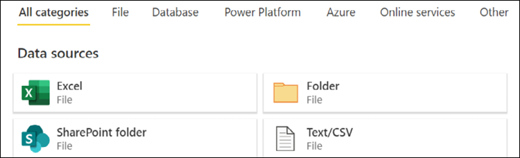
Figure 5.36: Data sources
For Connection settings, click the Browse OneDrive button, select the CH5_R7_AuthoringDataflows.xlsx file, and click Open.
Click the Next button in the lower-right corner.
Select DimProduct, DimProductCategory, and DimProductSubcategory.
Figure 5.37: Choose data
Click the Transform Data button in the lower-right corner.
You are now in the Power Query – Edit queries interface, which works in the same way as the Power Query interface in Desktop.
Figure 5.38: Power Query in the Power BI service
Select the DimProductSubcategory query in the Queries pane.
Ensure that the ProductSubcategoryKey and ProductCategoryKey columns are of the type Whole number (1234 icon), and if not then right-click the column header, choose Change type, and then Whole number.
Right-click the EnglishProductSubcategoryName column header, choose Rename, and rename the column to Product Subcatgory.
Select the DimProductCategory query in the Queries pane.
Ensure that the ProductCategoryKey column is of type Whole number (1234 icon), and if not then right-click the column header and choose Change type, then Whole number.
Rename the EnglishProductCategoryName column to Product Category.
Select the DimProduct query in the Queries pane.
Ensure that the ProductSubcategoryKey column is of type Whole number (1234 icon), and if not then right-click the column header, choose Change type, then Whole number.
Rename the EnglishProductName column to Product Name.
Click Merge queries in the ribbon of the Home tab.
Figure 5.39: Merge dialog
Select DimProductSubcategory as the Right table for merge, select the two ProductSubcategoryKey columns, and click OK to accept the default Left outer Join kind.
Click the column expansion icon in the DimProductSubcategory column header, deselect all of the columns, select the Product Subcategory and ProductCategoryKey columns, and uncheck the Use original column name as prefix checkbox; click OK.
Figure 5.40: Expand column
Click Merge queries in the ribbon of the Home tab.
Select DimProductCategory as the Right table for merge, select the two ProductCategoryKey columns and click OK to accept the default Left outer Join kind.
Click the column expansion icon in the DimProductCategory column header, deselect all of the columns, select the Product Category column, uncheck the Use original column name as prefix checkbox, and click OK.
Select the ProductCategoryKey column and while holding down the Ctrl key, select the ProductSubcategoryKey column.
Right-click the ProductSubcategoryKey column header and choose Remove columns.
Right-click the DimProductCategory query in the Queries pane and deselect Enable load.
Disable load on the DimProductSubcategory query as well.
In the lower-right corner, click the Save & Close button.
Name the dataflow Products and click the Save button.
Figure 5.41: Save your dataflow
Click back on the workspace and note that the Products dataflow has appeared.
Figure 5.42: Products dataflow
Hover over the Products dataflow and click the Refresh now icon.
How it works
Dataflows allow Power Query queries to be built in the Power BI service. Furthermore, unlike Power Query queries built in the Power BI Desktop, dataflows are reusable across multiple datasets (models). Since dataflows and Power Query queries built in the Power BI Desktop use the same underlying M code technology, it is actually possible to take queries built in the Power BI Desktop and easily migrate them to dataflows using the Advanced Editor capability to copy and paste the code between the desktop and a dataflow, or using the Import Model feature when creating a dataflow.
Dataflows ingest data from sources into Common Data Model-compliant (Dataverse) folders stored in Azure Data Lake Storage Gen2. Dataflows also allow you to expose data in your own Azure Data Lake Gen2 storage to other Azure services. Once created, a dataflow must be refreshed at least once to initialize the data within the Azure Data Lake Gen2 storage. Dataflows support similar settings to datasets, in that you can configure scheduled refreshes and utilize gateways when refreshing data.
Dedicated capacities, such as Premium, support additional dataflow functionality, such as the following:
Enhanced compute engine, enabling dataflows to leverage DirectQuery
Refresh linked tables from other dataflows
Automated Machine Learning (AutoML) and Cognitive Services
There's more
Once created, dataflows can be used in Power BI Desktop as data sources. To see how this works, do the following:
Open a new Power BI Desktop file.
Select Get data from the ribbon of the Home tab and choose Power BI dataflows.
Expand the workspace where the Products dataflow was created.
Expand the Products dataflow.
Choose the DimProduct table and then click the Load button.
The DimProduct table has now been added to the dataset.
The Power BI service provides the capability to create and share additional BI objects, such as dashboards, apps, streaming datasets, and dataflows; these components can be enriched and enhanced with alerts, subscriptions, images, and web content. In this chapter, Power BI dashboards were constructed to provide simple, at-a-glance monitoring of critical measures and high-impact business activities. The unique features of dashboards, such as Q&A natural language queries, data alerts, and the integration of other report types—such as Excel and SSRS—was also included. Finally, the creation and use of streaming datasets and dataflows was also covered.
6
Getting Serious with Date Intelligence
Date intelligence refers to a broad set of data modeling patterns and functions that enable analysis across time periods. In this chapter and throughout this book, we use date intelligence to refer to this broad set of data modeling patterns and to distinguish the concept from DAX time intelligence functions. This is done for two reasons. First, to be more technically precise, date intelligence deals with dates (days, months, years), not time (hours, minutes, seconds). Second, DAX time intelligence functions are only useful if dealing with a standard (Gregorian) calendar, but many businesses use a financial calendar that is different than a standard calendar year. Date intelligence, the broad concept, is applicable to both the standard (Gregorian) calendar as well as custom financial calendars.
Fundamental measures, such as reseller net sales, as created in Chapter 3, Building a Power BI Data Model, are supplemented with date intelligence measures to calculate year-to-date, prior period, and many other custom time period calculations. These measures are then used in combination to support growth and variance measures and are often utilized as Key Performance Indicators (KPIs) in Power BI dashboards, given their ability to convey additional context and insight. When implemented properly, date intelligence dramatically expands the analytical power of a data model and simplifies report and dashboard development.
This chapter contains recipes for preparing a data model to support robust date intelligence and authoring custom date intelligence measures. We will cover the following recipes:
Building a Date Dimension Table
Prepping the Date Dimension via the Query Editor
Authoring Date Intelligence Measures
Developing Advanced Date Intelligence Measures
Simplifying Date Intelligence with DAX and Calculated Tables
Leveraging Calculation Groups
Technical Requirements
The following are required to complete the recipes in this chapter:
Power BI Desktop
Tabular Editor
SQL Server with the AdventureWorksDW2019 database installed. This database and instructions for installing it are available here: http://bit.ly/2OVQfG7
A date dimension is needed by almost all data models and particularly those that require date intelligence calculations (e.g. Year-to-Date, Year-over-Year) and company-specific calendars. Building a robust date table in the source system provides significant long-term value across BI projects and tools. A complete date table accounts for all the required grains or hierarchy levels of both the standard (Gregorian) calendar and any fiscal calendar specific to the organization. Additionally, surrogate key columns aligned to each grain are included to drive the sort order of report attributes and to enable date intelligence expressions.
This recipe includes a design phase to identify the required date dimension columns and a process for adding a date intelligence surrogate key column to a dimension.
Getting ready
Full date tables are available from various sources:
A date table containing only the DateKey, Date, CalendarYear, and Calendar MonthNumber columns for the years 2010 to 2030 can be downloaded from the GitHub repository for this book. Download CH6_DateTable.xlsx from the following GitHub repository: https://github.com/PacktPublishing/Microsoft-Power-BI-Cookbook-Second-Edition
Date tables should contain a single row for every calendar date (no gaps). Given the small size (a 20-year span is approximately 7,600 rows inclusive of the last year), include all necessary history and three or more future years.
How to Build a Dimension Table
To implement this recipe, carry out the following steps:
Identify and document the required columns of the date dimension and identify any gaps with the existing table.
Like other dimension tables, teams can often incrementally improve their date dimension table over time with additional logic. For example, if the great majority of analysis revolves around a fiscal calendar and at a certain granularity, then these columns can be targeted first. Mature date tables inclusive of standard and financial calendars, sequential surrogate columns, and logical or dynamic columns—such as Fiscal Period Status—are often quite wide, with over 40 columns. Required date dimension columns include the following:
The Prior Year Date and Prior Period Date columns for both standard and financial calendars
Natural hierarchy attributes for all levels, such as 2013, 2013-Q3, 2013-Sep, 2013-Wk39, and 9/25/2013
The natural hierarchy (one parent for each child value) allows users to easily navigate Power BI report visuals via drill-down and next-level commands. Without natural hierarchies, the context of the parent value is lost when drilling into the given parent. For example, drilling into the year 2017 would display each month's name, but the year associated with this month would only be visible in the tooltips by hovering over the chart. With natural hierarchies, this context is not lost as a Calendar Yr-Mo column might contain values such as 2017-Aug.
Power BI provides a method of working around unnatural hierarchies in report visuals via the Expand all down one level in the hierarchy drilling feature. However, this can lead to dense axis labels when multiple levels of a hierarchy are used. Given date intelligence requirements as well as the needs of other visualizations, it is recommended to build your date table to support natural hierarchies. When building natural hierarchies, consider building the following support columns:
An integer column that corresponds to the chronological order of each string column, such as Weekday. For example, a Weekday Number column, with values of 1 through 7, will set the Sort By property of Weekday.
Multiple "X in Y" columns, such as Day in Year, Day in Month, Week in Month, and Week in Year, stored as integers.
Indicator columns, such as Weekday Indicator, Holiday Indicator, and Working Day Indicator. The values for these columns should be report-friendly, such as Holiday and Non-Holiday.
Starting and ending date columns for the different grains supported, such as Week Ending Date and Period Ending Date.
Look to integrate other calendars, such as a periods or fiscal calendar, into the same date table in the source database. Distinct views can be created to support role-playing dimensions. See the There's more… section.
Identify common date manipulations taking place in the existing reports, or by business users in Excel or Power BI, and consider adding a date dimension column to eliminate or simplify this work.
Ensure that date columns (for example, Prior Year Date) and number columns (such as Calendar Year) are stored as date and integer data types, respectively, as this allows arithmetic and DAX functions, such as MAX and MIN, to operate without any type conversion.
If the date dimension table is updated daily as part of a data warehouse Extract-Transform-Load (ETL) process, columns identifying the current and prior periods such as IsCurrentFiscalPeriod and IsPrior60Days are also common.
Consider adding two columns to the date table stored in the relational database, a natural hierarchy string (2009-Jan), and an integer column, such as Calendar Year Month Number (200901).
Create a table with three columns, Calendar Year, Calendar Month Number, and an identity column with an increment value of 1, Calendar Yr Mo Index:
Create Table dbo.TempTblYearMo
( [Calendar Year] int not null
, [Calendar Month Number] tinyint not null
, [Calendar Yr Mo Index] smallint identity(1,1) not null)
Execute an INSERT INTO SQL statement to load this table.
SELECT, GROUP, and ORDER BY the Calendar Year and Calendar Month Number columns from the existing date table.
The ORDER BY clause of the SELECT statement should order by Calendar Year and then by Calendar Month Number. The temporary table's index column (Calendar Yr Mo Index) is now populated in sequential order by month across years, as per Figure 6.1.
Figure 6.1: TempTblYearMo table loaded from the INSERT INTO statement
Execute an UPDATE statement that populates the Calendar Year Month Number column with the identity value:
UPDATE DBO.DimFinDateTestTbl
SET [Calendar Year Month Number] = T.[Calendar Yr Mo Index]
FROM
DBO.DimFinDateTestTbl as D INNER JOIN dbo.TempTblYearMo as T
ON D.[Calendar Year] = T.[Calendar Year] AND D.[Calendar Month Number] = T.[Calendar Month Number]
The following query in Figure 6.2 displays the sequentially increasing Calendar Year Month Number column on the date table.
Figure 6.2: Date table with the Calendar Year Month Number column updated
Repeat this process for other natural hierarchy columns, such as Year-Qtr and Year-Wk, and drop the temporary tables.
When loaded to the model, the surrogate columns should be hidden from Report View and used as the Sort By column.
Implement hierarchies in the Fields list as per the Creating Hierarchies and Groups recipe, shared in Chapter 3, Building a Power BI Data Model.
SQL window functions can be helpful in creating certain "X in Y" date dimension columns. For example, the following DENSE_RANK function returns the calendar week number of the given calendar month:
OVER(PARTITION BY D.[CALENDAR YEAR MONTH NUMBER] ORDER BY D.[Calendar Week Number in Year])
For DirectQuery data models in which the SQL queries defining the tables of the model are executed at runtime, it is best to move as much data transformation logic back to the source system. Complex SQL queries, DAX calculated columns, and M query expression logic can all lead to inefficient query plans, and so negatively impact the performance of DirectQuery solutions.
How it works…
Date intelligence measures reference the surrogate key columns to easily define specific time period filter conditions, such as in Internet Net Sales (Trailing 3 Periods):
Internet Net Sales (Trailing 3 Periods) =
CALCULATE(
[Internet Net Sales],
FILTER(
ALL('Date'),
'Date'[Calendar Year Month Number] >=
MAX('Date'[Calendar Year Month Number])-2
&&
'Date'[Calendar Year Month Number] <=
MAX('Date'[Calendar Year Month Number])
)
)
The Internet Net Sales (Trailing 3 Periods) can be used in visuals as shown in Figure 6.3.
Figure 6.3: Trailing 3 Periods measure includes Calendar Year Month Number values 99 through 101 for 2017-May
If the Calendar Year Month Number column was not sequential, it would not be possible to refer to months across years without complex logic, such as the trailing three-month average of 2017-Jan. Note that in this example, May 2017 is the current month and so was included, but often only the completed (or previous) months are included in these calculations
The SQL view used by the data model should dynamically filter the required dates, such as the trailing three years:
FROM DBO.DimFinDate as D
WHERE
D.[Date] BETWEEN DATEADD(YEAR,-3,CAST(CURRENT_TIMESTAMP AS date)) AND CAST(CURRENT_TIMESTAMP as date)
In this example, only the current system date and three prior calendar years are loaded to the data model.
There's more…
An alternative to "secondary relationships" (inactive relationships) via the USERELATIONSHIP function described in Chapter 3, Building a Power BI Data Model, is to have multiple date dimension tables in the data model, each with a single, active relationship based on a different date column of the fact table. For example, a model would have Order Date, Ship Date, and Delivery Date dimension tables. This approach, called role-playing tables, reduces the volume of custom measures that must be developed and maintained in the model. If choosing this approach, create separate views against the source date dimension table, corresponding to each role-playing table. Apply column aliases in each view associating the attribute to the date (for example, Ship Date Year or Ship Date Month).
If the source fact table only contains a surrogate key, commonly in the YYYYMMDD format, the source views utilized by the data model can include the following conversion logic:
CONVERT(date,(CAST(F.OrderDateKey AS nvarchar(8)))) as [Order Date-Convert]
The DATEFROMPARTS function in SQL Server can be used for many other date conversion or logical needs.
As a general practice we recommend developing a single date dimension table in a corporate data warehouse system such as Azure Synapse Analytics and leveraging this dimension across multiple datasets. In many cases, a Power BI dataset targeting a particular business process and team will require custom date filtering or grouping not supported by the existing date dimension table in the data warehouse. In these scenarios, the additional logic can be incorporated into a SQL view object specific to the dataset or, if the requirement is expected to be common across many datasets, the new logic or columns could be built into the data warehouse dimension table.
Preparing the Date Dimension via the Query Editor
In some BI environments, it is not feasible to alter the source date table as per the previous recipe or even modify the SQL view used to load the date dimension table. In these situations, Power BI Desktop's Query Editor and M expressions can serve as an effective alternative to deliver the same columns necessary to drive robust date intelligence analysis.
In this recipe, an example date dimension M query is shared that builds common date attributes as well as dynamic logical columns. Additionally, a process for adding sequential date intelligence columns via M expressions is also included.
To implement this recipe, perform the following steps:
Create a new Power BI Desktop file.
Open the Power Query Editor by clicking Transform Data from the ribbon of the Home tab.
Create a query that imports the Dates sheet from CH6_DateTable.xlsx, and call this query BaseDateTable.
Create an M query that references the BaseDateTable query, retrieves the last three years of dates, and computes 11 additional columns via M functions:
let
Dates = BaseDateTable,
CurrentDate = DateTime.Date(DateTime.LocalNow()),
CurrentYear = Date.Year(DateTime.Date(DateTime.LocalNow())),
CurrentMonth = Date.Month(DateTime.Date(DateTime.LocalNow())),
FilteredDates =
Table.SelectRows(
Dates,
each [Date] >=
Date.AddYears(CurrentDate,-3) and [Date] <= CurrentDate
),
DateCol = Table.SelectColumns(FilteredDates,"Date"),
YearCol =
Table.AddColumn(
DateCol, "Year", each Date.Year([Date]), Int64.Type
),
MonthNameCol =
Table.AddColumn(
YearCol, "Month Name", each Date.MonthName([Date]), type text
),
YearMonthCol =
Table.AddColumn(
MonthNameCol, "Year-Mo",
each Text.From([Year]) & "-" & [Month Name], type text
),
MonthNumberCol =
Table.AddColumn(
YearMonthCol, "Month Number", each Date.Month([Date]), Int64.Type
),
WeekdayNameCol =
Table.AddColumn(
MonthNumberCol, "Weekday", each Date.DayOfWeekName([Date]),
type text
),
DayNumberOfWeekCol =
Table.AddColumn(
WeekdayNameCol, "Weekday Number",
each Date.DayOfWeek([Date]), Int64.Type
),
YearStatusCol =
Table.AddColumn(DayNumberOfWeekCol, "Year Status", each
if Date.IsInCurrentYear([Date]) = true then "Current Year"
else if [Year] = CurrentYear - 1 then "Prior Year"
else "Other Year", type text
),
MonthStatusCol =
Table.AddColumn(YearStatusCol, "Month Status", each
if [Year Status] = "Current Year" and [Month Number] = CurrentMonth
then "Current Month" else
if [Year] =
Date.Year(
Date.AddMonths(DateTime.Date(DateTime.LocalNow()),-1)
)
and [Month Number] =
Date.Month(
Date.AddMonths(DateTime.Date(DateTime.LocalNow()),-1)
)
then "Prior Month" else "Other Month", type text
),
DayInMonthCol =
Table.AddColumn(
MonthStatusCol, "Day in Month", each Date.Day([Date]), Int64.Type
),
WeekOfYearCol =
Table.AddColumn(
DayInMonthCol, "Week of Year", each Date.WeekOfYear([Date]),
Int64.Type
),
WeekOfMonthCol =
Table.AddColumn(
WeekOfYearCol, "Week of Month",
each Date.WeekOfMonth([Date]), Int64.Type
)
in
WeekOfMonthCol
Name this query DatesInterim.
Create a new query called Dates that adds a surrogate sequential column to be used in date intelligence measures:
Disable loading on BaseDateTable and DatesInterim by right-clicking the queries and deselecting Enable load. Only the Dates query needs to be loaded into the data model.
How it works…
For the DatesInterim query, the CurrentDate, CurrentMonth, and CurrentYear expressions can be stored as separate queries. The DateTime.LocalNow function is used in dynamic M date logic, similar to the CURRENT_TIMESTAMP function used in SQL statements. A filter is applied via the Table.SelectRows function to only retrieve the last three years of dates, and conditional logic is used to populate dynamic Year Status and Month Status columns (for example, Current Year). The rest of the expressions use functions of the Date object class or concatenate columns.
Despite a minimal date table available in the source system (all that is required is a column containing dates), the M query generates a useful date dimension table for a model with many of the most common and important columns.
For the final Dates query, two additional columns (Calendar Year and Calendar Month Number) are used, although we could have performed a self-joining query with the Year and Month Number columns in the DatesInterim query. For example, if we rename the Dates query to DatesInterim2, we can create the final Dates table that adds a sequential index for Year Week Number as well:
The Table.AddIndexColumn function is applied to the sorted DatesInterim2 table to create the sequential column, YearMonthWeekColIndex. The DatesInterim2 query is then joined to the table containing this new column. Finally, the joined table is expanded using the Table.ExpandTablecolumn function.
The Year-Mo column (that is, 2016-Dec) can now be sorted by the Year Month Number column in the data model and DAX measures can reference the Year Month Number column to apply date intelligence filter conditions, such as the trailing six months.
There's more…
The Table.AddIndexColumn function used in this recipe is not currently supported in DirectQuery mode for SQL Server, and thus the full M query from the date dimension M query section of this recipe cannot be used in DirectQuery data models.
Since the data access queries defining the dimension and fact tables in DirectQuery models are executed at runtime, these queries should be as simple as possible. For example, these queries should avoid joins, derived tables, subqueries, data type conversions, case statements, and so on. Simple, performant, or optimized queries are especially important for the queries used to access the largest tables of the model. To ensure sufficient performance in Power BI with DirectQuery models, large source tables of DirectQuery models should be optimized for read performance with features such as the columnstore index of SQL Server and table partitions.
With a complete date dimension table in place, date intelligence measures can be developed to support common requirements, such as year-to-date, year-over-year, and rolling history, as well as more complex, context-specific behaviors.
The date intelligence patterns described in this recipe are applicable to both standard and non-standard financial calendars, as they leverage fundamental DAX functions and the sequential date intelligence columns created earlier in this chapter.
This recipe includes examples of core year-to-date and prior year measures, as well as a more advanced dynamic prior period measure that adjusts to all grains of the date dimension.
Getting ready
To prepare for this recipe, follow these steps:
Complete the Preparing the Date Dimension via the Query Editor recipe in this chapter, or have a date table with the same columns as in that recipe.
Edit the initial part of the DatesInterim query to load all rows, and not just the first three years. The code snippet below represents the initial part of the query with the FilteredDates expression removed. The rest of the query is the same as the recipe. Note that the DateCol expression now refers to the Dates expression instead of the FilteredDates expression:
Add two additional columns to the end of the DatesInterim query for Prior Year Date and Prior Month Date using the following code:
PriorYearDate =
Table.AddColumn(
WeekOfMonthCol, "Prior Year Date", each Date.AddYears([Date],-1)
),
PriorMonthDate =
Table.AddColumn(
PriorYearDate, "Prior Month Date", each Date.AddMonths([Date],-1)
)
in
PriorMonthDate
Import the FactInternetSales table from the AdventureWorksDW2019 database.
Create a relationship between the Date column in the Dates table and the OrderDate column in the FactInternetSales table.
Mark the Dates table as a date table using the Date column.
Plan for a standard measure naming convention to identify the date intelligence logic, such as Sales (PYTD). Symbol characters, such as currency ($) or percentage (%), can also help users browse the measures. Document the types of date intelligence measures to be implemented and for which measures of the model. Create a date intelligence measure matrix for documentation and to support communication with stakeholders.
Figure 6.4: Date intelligence measure matrix
Conduct reviews and/or quality assurance testing with business users to validate the logic and walk through use cases when designing reports. Given the volume of new measures to be developed, it is best to receive business approval for one or two measures prior to applying the date intelligence logic to other measures.
How to Author Date Intelligence Measures
To implement this recipe, perform the following steps:
Create a simple Internet Sales measure:
Internet Sales = SUM('FactInternetSales'[SalesAmount])
Create Year-to-Date (YTD), Month-to-Date (MTD), and Week-to-Date (WTD) measures:
Build logic into date intelligence measures to account for alternative subtotal filter contexts, such as when a prior period measure is calculated in a yearly, quarterly, or weekly subtotal context:
Create a Matrix visualization that uses the Year column from the Dates table for columns and the Internet Sales (YTD) and Internet Sales (PYTD) as values
How it works…
When designing date intelligence measures, it is important to understand that the definition of "current" and "prior" are defined by the context of the visualization in which the measures operate. The FILTER function iterates each row (a date) to determine which rows are passed to the CALCULATE function. The ALL function removes all existing date table filters, thereby allowing filter conditions in the measure to access all rows of the date table.
For the "current" date period measures, each measure expression sets an "equal to" condition on the column representing the intended granularity; this column respects the filter context of the report query via MAX. If the source query to the date table is filtered to only retrieve dates equal to or less than the current date, these measures will default to the current year, month (or period), and week when added to reports.
Note that the YearMonth Number and Year Week Number columns should be sequentially increasing integers.
For the "prior" date period measures, applying both the MIN and MAX filter conditions against the prior date columns selects the corresponding date ranges. Subtracting a value (1 in this example) from the MAX of the column shifts the selected time period backward.
Growth or variance measures that calculate the difference between the current time period value of a measure and a prior time period such as Year-over-Year(YOY) growth can be created with new measures that subtract the previous time period measure from the current period measure. Additional growth or variance measures expressed in percentages can use the DIVIDE function for computing this difference as a percentage of the previous time period value.
Prior period date columns allow the prior time period measures to apply simple filter expressions relative to the active date filter context down to the individual date granularity. In the absence of these columns and for period- or month-level date tables, measure filter conditions can be written as follows:
For the dynamic prior period measure, Internet Sales (Prior Period), the DAX variable (Periods) computes the number of periods in the current filter context, such as 12 if a year is the subtotal, 3 if it is a quarter, or 1 for an individual period. Test conditions with HASONEVALUE check whether a single date or week is selected, and return the corresponding previous day or week, respectively. The remaining date grains (Year, Quarter, Period) are accounted for by the Periods variable; this value is subtracted from both the MIN and the MAX of the period number of the given context. This example underscores the importance of sequential date intelligence columns for accessing specific time frames across grains to apply custom filter conditions.
There's more…
DAX includes a full set of time intelligence functions, such as DATESYTD and SAMEPERIODLASTYEAR, which, given a standard (Gregorian) calendar, can compute the same values as the expressions in this recipe. Although these functions generally improve readability relative to the examples in this recipe, the use (and knowledge) of core DAX functions, such as FILTER, MAX, and MIN, is necessary when working with non-standard calendars—such as fiscal calendars and more complex scenarios. Considering that the vast majority of DAX time intelligence functions are simply syntax sugar for the FILTER function and the simplifying assumptions regarding calendar dates, it is unwise to rely on DAX time intelligence functions to be of any meaningful use in many real-world scenarios.
It is often surprising for many individuals new to business intelligence how differently organizations measure and conceptualize time; this can be particularly true regarding weeks. Here again, the DAX time intelligence functions are useless, as there are no included week functions. When dealing with weeks, different organizations start weeks on different days within a week. Thus, when assigning week numbers at either a yearly or monthly grain, it is important to bear this in mind.
Furthermore, organizations will also treat partial weeks differently as well. For example, in the final Dates table, there is a single entry for Year Week Number of 54. This is because the year 2010 ends with a partial 53rd week. A single day of this week, Saturday, January 1st, 2011, falls outside of 2010. Organizations will treat these partial weeks differently, either including that single day as part of the week starting in 2010, as its own week, or as part of the first full week of 2011.
Date intelligence measures are often at the center of the most visible Power BI reports and dashboards, as well as more complex business analyses. Therefore, given the unique requirements of each organization and BI project, it is important to understand how to go beyond the standard patterns described in the previous recipe to efficiently embed custom logic. Additionally, the ability to answer the business question "When did X occur (or not occur)?" is a powerful supplement to data models that can be supported via DAX measure logic.
In this recipe, an example is provided of a measure that identifies the dates in which sales were not recorded for a specific region and product category. In addition, a custom prior year-to-date measure is described with default (no filter) behavior and the exclusion of incomplete periods from the current year.
Getting ready
To prepare for this recipe, follow these steps:
Open Power BI Desktop.
Complete the Preparing the Date Dimension via the Query Editor recipe from this chapter.
Create an Import mode data source query called AdWorksDW. This query should be similar to the following:
let
Source = Sql.Database("localhost\MSSQLSERVERDEV", "AdventureWorksDW2019")
in
Source
Isolate this query in a query group called Data Sources and disable loading.
Right-click the AdWorksDW and choose Reference.
Select the FactInternetSales table and name this query Internet Sales.
Repeat steps5 and 6 for the DimSalesTerritory table and name this query Sales Territories.
Create a Products query based upon the DimProduct, DimProductCategory, and DimProductSubcategory tables using the following code.
Separate the fact query, Internet Sales, into a Facts query group.
Separate the dimension queries, Dates, Sales Territories, and Products, into a Dimensions query group.
Create a BlankQuery called Calculations in the Other Queries group.
Select Close & Apply in the ribbon of the Home tab to load the tables to the data model.
Create a relationship using the Date column from the Dates table and the OrderDate column of the Internet Sales table.
Create a relationship between the Internet Sales table and the Products and Sales Territories tables using the ProductKey column and SalesTerritoryKey column, respectively.
Set the Sort By column for the Year-Mo column in Dates to be the YearMonthNumber column.
How to Develop Advanced Date Intelligence Measures
To implement this recipe, carry out the following steps:
Create a measure that counts the rows (days) that do not have corresponding fact table rows, given the following conditions:
Days Without Northwest Bike Sales =
COUNTROWS(
FILTER('Dates',
ISEMPTY(CALCULATETABLE('Internet Sales',
FILTER(CROSSJOIN(ALL('Sales Territories'),ALL('Products')),
'Sales Territories'[SalesTerritoryRegion] = "Northwest" &&
'Products'[Product Category] = "Bikes")))))
Create Power BI report visualization to analyze the measure. The result of doing this is shown in Figure 6.5.
Figure 6.5: 22 days in 2013 in which the Northwest region did not generate any bike sales
How it works…
In this example, a new measure must count the days in which the Northwest sales region did not have any online sales for the Bikes product category. Any existing filters on the Product and Sales Territory tables are removed via CROSSJOIN of the ALL clauses. The Internet Sales fact table is then filtered for the Northwest region and the Bikes category, and ISEMPTY is applied for each date in the filter context. Only the dates with no rows are returned by FILTER to be counted.
The use of CROSSJOIN is necessary to remove filters on columns from separate tables of the model. A single ALL function can be used to remove one or more columns from the filter context of a single table, such as ALL('Product'[Product Color],'Product'[Product Class]).
There's more…
Prior period date intelligence measures can become quite complex. For example, consider the scenario where for a Prior Year-to-Date measure at the monthly grain, the business requirements are to filter the prior year by only the completed periods of the current year (only compare completed against completed). The goal is to calculate the Prior Year-to-Date value (completed periods only) automatically without any date columns in the report, and return a blank if the current period, which is incomplete, is selected in report visuals. To implement this measure, perform the following steps:
In the Calculations table, create the following measures:
Today = DATE(2013,6,28)
Current Year = LOOKUPVALUE('Dates'[Year],'Dates'[Date],[Today])
Current Period = LOOKUPVALUE('Dates'[Year Month Number],'Dates'[Date], [Today])
Last Complete Period = [Current Period] - 1
Last Complete Month = LOOKUPVALUE('Dates'[Month Number],'Dates'[Year Month Number],[Last Complete Period])
Internet Sales = SUM('FactInternetSales'[SalesAmount])
Hide the Calculations column in the Calculations table from the Report View
Create a measure in the Calculations table with multiple pairs of conditions and results to account for the filter contexts and requirements:
Since we are dealing with historical information in the Adventure Works database, the Today measure is set to a specific date. In a production scenario, the Today measure would be something like Today = TODAY() or, if you are filtering your date table in your query to only be through the current day, Today = MAX('Dates'[Date]). The rest of the measures are derived from the Today measure and use simple LOOKUPVALUE expressions.
By passing TRUE as the expression parameter to SWITCH, the first <value> condition (such as no filters applied) that evaluates to True will result in the corresponding result expression.
The first condition NOT(ISCROSSFILTERED) handles whether any date filter has been applied from any date column. The second condition tests for individual periods that are not yet complete, and returns a BLANK. The third condition accounts for individual periods prior to or equal to the last complete period. The fourth condition is specific to the subtotal of the current year (= [Current Year]); this rule excludes the incomplete period. All other filter contexts are accounted for in the final expression—a standard Prior Year-to-Date calculation at the period grain.
Figure 6.6: Custom PYTD measure computes the correct value without any filter (card visual) and across date hierarchy levels
Note that a blank (no value) is returned for the current period (2013-Jun) as per the requirements.
Remember that the data models created in Power BI can be consumed in self-service scenarios, such as with Excel pivot tables, and business users will want or expect the new measures to "just work" across filter conditions. However, in the rapid, agile delivery of Power BI, only the most important or core filter contexts can be implemented in the first iterations.
Simplifying Date Intelligence with DAX and Calculated Tables
In addition to the M query transformations described earlier in this chapter, DAX table functions can also be used in Power BI Import mode models to enhance and simplify date intelligence. DAX queries can access existing tables in the data model, and the tables evaluated during refresh can be used in relationships and measure calculations like all other tables. Similar to calculated columns, calculated tables should be rarely used—given the transformation capabilities of M, SQL, and ETL tools—but can be valuable supplements to models for small tables, such as role-playing date dimensions and bridge tables.
This recipe provides an example of using DAX calculated tables to support role-playing date dimensions. Additionally, a single row table is created via DAX to simplify common date intelligence measures.
Getting ready
To prepare for this recipe, follow these steps:
Open Power BI Desktop.
Create an Import mode data source query called AdWorksDW. This query should be similar to the following:
let
Source = Sql.Database("localhost\MSSQLSERVERDEV", "AdventureWorksDW2019")
in
Source
Isolate this query in a query group called Data Sources and disable loading.
Right-click AdWorksDW and choose Reference.
Select the FactInternetSales table and name this query Internet Sales.
Repeat steps5 and 6 for the DimDate table and name this query Order Dates.
Separate the fact query, Internet Sales, into a Facts query group.
Separate the dimension query, OrderDates, into a Dimensions query group.
Create a BlankQuery called Calculations in the Other Queries group.
Choose Close & Apply in the ribbon of the Home tab to load the tables to the data model.
Create a relationship using the FullDateAlternateKey column from the Order Dates table and the OrderDate column of the Internet Sales table.
How to Simplify Date Intelligence
To implement this recipe, perform the following steps:
From Report View, click on New Table in the ribbon of the Modeling tab
In the formula bar, assign a name to the date dimension table, such as Shipment Dates, and use the SELECTCOLUMNS function to retrieve date columns from the existing date dimension table:
As per the example, apply column aliases (Shipment...) to avoid confusion with other date tables in the model
Create a relationship between the Shipment Date column in the Shipment Dates table and the ShipDate table in the Internet Sales table
Rename the FullDateAlternateKey column in the Order Dates table to Order Date
How it works…
The model now has two date dimension tables with active relationships to the fact table, order date, and shipment date in this example. Generally, when role-playing date dimensions are used, aliases are applied to all tables and columns, thus requiring the date table and its columns to be renamed as Order Dates. However, if the new role-playing date tables will be rarely used, then aliases may only be necessary for these new role-playing date tables.
There's more…
One option to further simplify date intelligence measures is to embed a calculated table in a model that generates values frequently used as filter conditions:
Create a Today measure in the Calculations table:
Today = DATE(2013,6,28)
Hide the Calculations column in Report View and note that the Calculations table's icon changes from a table to a calculator. This measure table will remain above other non-measure-only tables in the Fields list.
While in Report View, select New Table from the ribbon of the Modeling tab and enter the following DAX query:
Date Parameters =
VAR __Today = [Today]
VAR __CurrentFiscalYear =
LOOKUPVALUE('OrderDates'[FiscalYear], 'OrderDates'[Order Date],__Today)
VAR __CurrentFiscalQuarter =
LOOKUPVALUE('OrderDates'[FiscalQuarter],
'OrderDates'[Order Date],__Today)
RETURN
ROW(
"Last Refreshed", NOW(),
"Today", __Today,
"30 Days Prior", __Today - 30,
"90 Days Prior",__Today - 90,
"Current Fiscal Year", __CurrentFiscalYear,
"Prior Fiscal Year", __CurrentFiscalYear-1,
"Current Fiscal Quarter", __CurrentFiscalQuarter
)
Hide the parameters table from the Report view.
Figure 6.7: Sample of the single row table (Date Parameters) created via the DAX calculated table query
Create date intelligence measures that leverage the values stored in the calculated table:
Internet Sales = SUM('Internet Sales'[SalesAmount])
Last 90 Days Sales =
CALCULATE([Internet Sales],
'OrderDates'[Order Date] >= DISTINCT('Date Parameters'[90 Days Prior])
&&
'OrderDates'[Order Date] <= DISTINCT('Date Parameters'[Today]))
Since we are dealing with historical information in the Adventure Works database, the Today measure is set to a specific date. In a production scenario, the Today measure would be something like Today = TODAY() or, if you are filtering your date table in your query to only be through the current day, Today = MAX('Dates'[Date]).
An underscore or other leading character can be used in front of variable names to ensure that a variable's name does not conflict with reserved words, and also to distinguish variables and DAX added columns from actual columns and tables in the data model.
The DISTINCT function retrieves the single value from the table for comparison with the corresponding date dimension column in the filter condition of CALCULATE. One may be tempted to use the MAX or MIN functions here in place of DISTINCT, but this will generate an error that the MAX or MIN function has been used in a True/False expression that is used as a table filter expression.
When working with date intelligence, it is common to have many quasi-redundant measures that calculate various different metrics for YTD, MTD, PY, PYTD, PMTD, and other common date intelligence intervals. For example, business users may be interested in a year-to-date, year-over-year, and year-over-year percentage calculation for the gross sales, net sales, and other measures. Normally, this would require nine DAX measures to calculate these measures at each of those date intelligence intervals.
Calculation groups can greatly assist in reducing the number of measures required by allowing a DAX expression to be reused for any measure. In the example given, this means that three DAX expressions could serve the needs of the nine DAX expressions required without the use of calculation groups.
This recipe demonstrates the use of calculation groups in the context of date intelligence in order to eliminate redundant DAX expressions.
Getting ready
To prepare for this recipe, follow these steps:
Open Power BI Desktop.
Create an Import mode data source query called AdWorksDW. This query should be similar to the following:
let
Source = Sql.Database("localhost\MSSQLSERVERDEV", "AdventureWorksDW2019")
in
Source
Isolate this query in a query group called Data Sources and disable loading.
Right-click AdWorksDW and choose Reference.
Select the FactInternetSales table and name this query Internet Sales.
Repeat steps4 and 5 for the DimDate table and name this query Order Dates.
Separate the fact query, Internet Sales, into a Facts query group.
Separate the dimension query, OrderDates, into a Dimensions query group.
Create a BlankQuery called Calculations in the Other Queries group.
Select Close & Apply in the ribbon of the Home tab to load the tables to the data model.
Create a relationship using the FullDateAlternateKey column from the Order Dates table and the OrderDate column of the Internet Sales table.
Rename the FullDateAlternateKey column to Date.
Mark the Order Dates table as a date table using Date as the Date column.
In the Calculations table, create some simple measures:
Internet Sales = SUM('Internet Sales'[SalesAmount])
Orders = COUNTROWS('Internet Sales')
Hide the Calculations column in the Calculations table.
Set the Sort by column for the EnglishMonthName column to the MonthNumberOfYear column.
How to Leverage Calculation Groups
To implement this recipe, carry out the following steps:
Select Tabular Editor from the ribbon of the External Tools tab
In Tabular Editor, select Model and then New Calculation Group
Name the new calculation group Date Intelligence Group
Expand Date Intelligence Group, right-click Calculation Items, and choose New CalculationItem
Create a Current calculation item with the formula SELECTEDMEASURE()
Figure 6.8: Creation of the Current calculation item
Repeat steps4 and 5 to create the following calculation items:
For the YOY % calculation item, set the Format String Expression to 0.00%; -0.00%;0.00%
In Tabular Editor, select File and then Save
In Power BI Desktop, click Refresh now in the warning box regarding refreshing calculation groups
Figure 6.9: Manually refreshing calculation groups
Create a Matrix visualization with the CalendarYear and EnglishMonthName columns from the Order Dates table as Rows, the Internet Sales measure as Values, and the Name column from the Date Intelligence Group as Columns
Add the Orders measure to the Matrix visualization as Values
How it works…
Currently, Power BI Desktop does not provide a method for creating and editing calculation groups, so this must be done in Visual Studio or Tabular Editor.
The SELECTEDMEASURE function takes the current measure in context and replaces the values returned by the measure with the calculations from the calculation group. The format of the value returned (Currency, Whole Number, Decimal) corresponds with the format of the selected measure, unless overridden by a specified Format String Expression. For numeric values, the Format String Expression should always include three format specifications separated by semi-colons for positive, negative, and zero values.
The order of the calculation items returned will be alphabetical when the Ordinal property is set to -1 for all calculation items. This order can be overridden by specifying Ordinal numbers from 0 and higher. Lower Ordinal numbers display first.
There's more…
The same results can be achieved using DAX time intelligence functions with the caveat that DAX time intelligence functions assume a standard (Gregorian) calendar, and thus should be avoided when dealing with fiscal calendars and more complex scenarios. To see how this works, do the following:
In Tabular Editor, select Model and then New Calculation Group
Name the new calculation group Time Intelligence Group
This chapter provided recipes for preparing a data model to support robust date intelligence and for authoring custom date intelligence measures. Date intelligence provides a broad set of data modeling patterns and functions that enable analysis across time periods. The measures created for date intelligence can be used in combination with one another to support growth and variance measures and are often utilized as KPIs in Power BI dashboards. When properly implemented, date intelligence dramatically expands the analytical power of a data model and simplifies report and dashboard development.
7
Parameterizing Power BI Solutions
With the foundation of a Power BI deployment in place, components of the data retrieval and report design processes—as well as the user experience—can be parameterized to deliver greater flexibility for both technology services and users. For example, query parameters can isolate and restrict data sources to support changing source systems, templates can enable parameterized report development against pre-defined metadata, and M and DAX functions can deliver custom integration and analytical capabilities.
The recipes in this chapter cover both standard parameterization features and techniques in Power BI, as well as more advanced custom implementations. Examples of parameterizing data sources, queries, user-defined functions, and reports further express the power of the M language and its integration with other Power BI Desktop features. Additional examples, such as URL-based parameter filters, a dedicated forecasting or what-if? tool, and user selection parameter tables, utilize both the transformation and analytical features of Power BI to empower users with greater control over the analysis and visualization of Power BI data models.
In this chapter, we will cover the following recipes:
Filtering reports dynamically
Leveraging query parameters
Working with templates
Converting static queries to dynamic functions
Capturing user selections with parameter tables
Forecasting with what-if analysis
Technical requirements
The following are required to complete the recipes in this chapter:
Power BI Desktop
SQL Server with the AdventureWorksDW2019 database installed. This database and the instructions for installing it are available here: http://bit.ly/2OVQfG7
In addition to the report filter options in Power BI Desktop covered in Chapter 4, Authoring Power BI Reports, filters can also be applied to published Power BI reports via the URL string. Rather than multiple, dedicated reports and report pages with distinct filter conditions, URL links with unique query strings can leverage a single published report in the Power BI service. Additionally, URL links can be embedded within a dataset such that a published report can expose links to other reports with a pre-defined filter condition.
In this recipe, two URL strings are created to demonstrate single and multiple filter parameter syntax. The second example creates a URL string for each row of the Product dimension table via an M query and exposes this dynamic link in a report visual.
Edit the AdWorksDW query and change the Source line to point to your SQL server with the AdventureWorksDW2019 database installed.
Publish the report to the Power BI service.
How to filter reports dynamically
To implement this recipe, perform the following steps:
Open the report in the Power BI service.
Replace the query string in the URL with the following and press Enter:
?filter=Products/ProductCategory eq 'Bikes'
To apply multiple URL filter parameters, separate the column filters with an and operator, as in the following example:
?filter=Products/ProductCategory eq 'Bikes' and Dates/CalendarYear eq 2013
Copy the report URL, without including the query string (the portion after and including the ?).
Open CH7_R1.pbix in Power BI Desktop
Edit the Products query in Power Query Editor.
Add a column called ProductURL to the Products table by using Custom Column in the ribbon of the Add Column tab, with a format similar to the following:
Note that […] will be replaced with your unique IDs.
Close and apply the query changes to apply them to the model.
Change the Data category for the ProductURL column in the Products table to Web URL.
Add a second page to the report.
Create a Table visualization with the ProductName column from the Products table, the Total Net Sales measure from the Calculations table, and the ProductURL column from the Products table.
With the Table visualization selected, use the Format pane, expand the Values section, and toggle the URL icon to On.
Save and publish the report.
Open the report in the Power BI service, navigate to Page 2, and click on one of the URL icons for a product.
How it works…
URL filters can be applied to any column in the data model that is of a text or numeric data type. The column does not have to be visible in the Fields list or used in one of the Filtering field wells in the Report view to be used in a URL filter.
The syntax is <Report URL>?filter=Table/Column eq 'value'. The table and field names (without spaces) are case sensitive, and the 'value' must be enclosed in single quotes for text values. Do not use single quotes for numeric values, however.
Table and column names used in URL filters must not contain spaces. In the event that you want to have a friendly name for report users for columns, you can duplicate a friendly name column, remove the spaces from the duplicate column name, and then hide the duplicate column name from the report view. In this way, you can have a column for use in reports and a duplicate column that can be used as URL filters. When using duplicate columns, given the additional resources required of the new column(s), try to limit the columns to those with few distinct values. Additionally, a single hidden column with no spaces can be created based on the concatenation of multiple columns to simplify the URL strings.
There's more…
A report visual from a custom URL with a query string can be pinned to a dashboard, and the dashboard tile will reflect the filter condition following refreshes. However, by default, selecting the pinned dashboard tile will navigate to the unfiltered source report. The custom URL can be associated with a dashboard tile to control the dashboard navigation, as demonstrated in Figure 7.1:
Figure 7.1: Custom URL link for a Power BI dashboard tile
Guy in a Cube – Filter a report with a URL query string parameter: http://bit.ly/2s5hXSW
Leveraging query parameters
Parameters are a primary component in building flexible, manageable query retrieval processes, as well as enabling simple filter selections. Hardcoded values in queries can be replaced with parameters, and a single parameter can be leveraged by multiple queries, thereby reducing development time and maintenance. Parameters are required to configure incremental data refresh policies on datasets and are commonly used to limit the volume of data loaded to a local instance of Power BI Desktop relative to the published Power BI dataset.
Parameters can also be useful during development in order to filter fact tables or large dimension tables to only a subset of data. Very large Power BI files can become slow and difficult to work with and thus the dataset author can add a filter via a parameter so that only a subset of rows are loaded locally. The dataset author can then simply revise the parameter such that all rows are loaded. This can be done just prior to publishing or after publishing via APIs and scripts that revise the parameter values in the Power BI service.
In this recipe, a parameter is used to filter a fact table query for a specified number of days relative to the current date. An additional, more advanced example is shared to apply parameters to a fact table query on both a dimension column as well as a date range.
Getting ready
To prepare for this recipe, follow these steps:
Open a Power BI Desktop file locally and access the Power Query Editor by clicking on Transform Data in the ribbon of the Home tab.
Create a query named AdWorksDW similar to the following:
let
Source = Sql.Database("localhost\MSSQLSERVERDEV", "AdventureWorksDW2019")
in
Source
Disable the load on the AdWorksDW query and place it in a Data Sources query group.
How to leverage query parameters
To implement this recipe, perform the following steps:
Create a blank query called CurrentDate and disable the loading of the query by right-clicking the query and then deselecting Enable load:
let
Source = #date(2014,1,28)
in
Source
From the Home tab of Power Query Editor, click on the Manage Parameters dropdown and select New Parameter:
Figure 7.2: New parameter created for filtering fact table queries
Give the query the name Days Prior to Current Date, a data type of Decimal Number, and, for this example, enter a list of suggested values. Values outside this suggested list can also be applied to the parameter when necessary.
Based on the List of values, enter a Default Value and Current Value.
Create a new blank query called StartDate that computes a date value based on the CurrentDate query and the new parameter, and then disable the load:
let
Source = Date.AddDays(CurrentDate,- #"Days Prior to Current Date")
in
Source
In this example, a date 365 days prior to the current date is returned based on the default parameter value.
Create an Internet Sales query based on the following M code:
let
Source = AdWorksDW,
dbo_FactInternetSales =
Source{[Schema="dbo",Item="FactInternetSales"]}[Data],
ChangeType = Table.TransformColumnTypes(
dbo_FactInternetSales,{{"OrderDate", type date}}),
RowFilter = Table.SelectRows(
ChangeType,
each [OrderDate] >= StartDate and [OrderDate] <= CurrentDate)
in
SalesTerritoryJoin
Click on Close & Apply from the Home tab of Query Editor.
Optionally, build a report or query against the refreshed fact table to validate the filter.
From the Home tab of the Report view, click on the Transform data dropdown in the ribbon and select Edit Parameters:
Figure 7.3: Editing parameters from the Report view
Either select a suggested value from the drop-down menu or enter a number in the input box and click on OK.
Click on Apply Changes from the warning dialog. StartDate and the fact table queries impacted by the parameter change will both be refreshed.
How it works…
In a production scenario, the CurrentDate query would not be hardcoded to a date and would be something similar to the following:
let
Source = DateTime.Date(DateTime.LocalNow())
in
Source
The StartDate query uses the parameter to calculate a date prior to the CurrentDate by a number of days selected from the list of values. Parameters can be referenced within queries, just like referencing other queries or steps in a query, in which the same rules also apply. When parameters include spaces in their names, referencing the parameter must be preceded by a hashtag, #, and double quotes, and suffixed by double quotes (#"Days Prior to Current Date"). Parameters that do not include spaces in their names can be referenced directly without the prefix or suffix.
The Internet Sales query uses the Table.SelectRows function in the RowFilter step to filter the FactInternetSales table using the OrderDate column to be greater than or equal to StartDate (a date value). It is important that the data type of the OrderDate column and the data type of the StartDate query match one another. For example, Date data types cannot be compared to DateTime data types.
Currently, parameters cannot be created or edited in the Power BI service. The parameter values configured when published will be used for each refresh.
When considering your own scenarios, identify candidates for query parameters, such as hardcoded date filters and dimension attributes with few distinct values (for example, department groups). Identify scenarios in which certain business users or teams require edit rights to a dataset (that is, source queries, model relationships, and measures), but only need a small, highly filtered model for self-service development.
There's more…
Queries can be affected by multiple parameters. In addition, parameters can also use queries for their Suggested Values. To see how to use multiple parameters in a query, as well as how to use a query to provide Suggested Values for a parameter, do the following:
In Power Query Editor, create a query called SalesTerritoryGroupsList that returns the distinct Sales Territory Groups from the DimSalesTerritory table and disable loading of the query:
let
Source = AdWorksDW,
Navigation = Source{[Schema="dbo",Item="DimSalesTerritory"]}[Data],
RemoveColumns = Table.SelectColumns(Navigation,{"SalesTerritoryGroup"}),
FilterNA = Table.SelectRows(RemoveColumns, each ([SalesTerritoryGroup] <> "NA")),
RemoveDups = Table.Distinct(FilterNA),
List = Table.ToList(RemoveDups)
in
List
Click on New Parameter from the Manage Parameters dropdown in the ribbon of the Home tab.
Create a parameter called Territory Group with a Text data type that uses the SalesTerritoryGroupsList query for Suggested Values:
Figure 7.4: Territory Group parameter
Create a SalesTerritoryKeys query that selects the unique key values associated with this dimension using the value set by the Territory Group parameter and disable the load:
let
Source = AdWorksDW,
Navigation = Source{[Schema="dbo",Item="DimSalesTerritory"]}[Data],
ParamFilter = Table.SelectRows(Navigation, each [SalesTerritoryGroup] = #"Territory Group"),
KeyColumn = Table.Distinct(Table.SelectColumns(ParamFilter,{"SalesTerritoryKey"}))
in
KeyColumn
Within the Internet Sales table query, create an inner join expression step against the new SalesTerritoryKeys query:
let
Source = AdWorksDW,
dbo_FactInternetSalesReason = Source{[Schema="dbo",Item="FactInternetSales"]}[Data],
ChangeType = Table.TransformColumnTypes(dbo_FactInternetSalesReason,{{"OrderDate", type date}}),
RowFilter = Table.SelectRows(ChangeType, each [OrderDate] >= StartDate and [OrderDate] <= CurrentDate),
SalesTerritoryJoin = Table.Join(RowFilter,"SalesTerritoryKey",SalesTerritoryKeys,"SalesTerritoryKey",JoinKind.Inner)
in
SalesTerritoryJoin
The Internet Sales table is now filtered by both the Days Prior to Current Date parameter and the Territory Group parameter. Instead of a static list of values, Territory Group derives Suggested Values from another query in the model – the SalesTerritoryGroupsList query. For queries to be used as Suggested Values in a parameter, the query must return a List data type, and not a table. The Table.ToList function is used within the SalesTerritoryGroupsList query to transform the single-column table into a list.
The SalesTerritoryKeys query returns a single column table with the distinct SalesTerritoryKey values that correspond to the value chosen for the Territory Group parameter. This table is used in a Table.Join expression within the Internet Sales query to filter the Internet Sales table to only include the sales territories chosen using the Territory Group parameter.
Power BI templates can be created from Power BI Desktop files as a means of providing users and other report authors with access to pre-defined metadata, such as M queries, DAX measures, model relationships, and report visualizations. As the template files do not contain actual data, they are very lightweight and, for import mode models, data is only retrieved when the template is opened. Additionally, if query parameters have been configured, a user interface is provided for entering parameter values, and these parameters can be integrated with the source queries and other components of the dataset.
In this recipe, a parameter and supporting query are added to a Power BI Desktop file to support the distribution of a Power BI template.
Edit the AdWorksDW query to point to your copy of the AdventureWorksDW2019 database.
How to work with templates
In this example, the goal is to provide a Power BI template that only retrieves data for a single customer country. To implement this recipe, perform the following steps:
Open CH7_R3_Start.pbix in Power BI Desktop.
Choose Transform data from the ribbon of the Home tab to open Power Query Editor.
In the Queries pane, right-click an empty area and choose New Group to create a new query group called Parameters.
Right-click Other Queries and create a List query called CustomerCountries to retrieve the Country names from the Customers query:
let
Source = Customers,
SelectColumn = Table.SelectColumns(Source,{"Country"}),
Distinct = Table.Distinct(SelectColumn),
List = Table.ToList(Distinct)
in
List
Disable the load for the CustomerCountries query.
Right-click the Parameters query group and choose New Parameter.
Create a parameter called Customer Country with Text as the type, Suggested Values for the CustomerCountries query, and United States as the current value.
In the Other Queries group, create a query called CustomerKeys that references the Customer Country parameter, and disable the load on this query:
let
CountryParamFilter = Table.SelectRows(Customers, each [Country] = #"Customer Country"),
CustomerKeys = Table.SelectColumns(CountryParamFilter,
{"CustomerKey"})
in
CustomerKeys
Modify the Internet Sales fact table query to respect the parameter selection:
let
Source = AdWorksDW,
dbo_FactInternetSales = Source{[Schema="dbo",Item="FactInternetSales"]}[Data],
ChangeType =
Table.TransformColumnTypes(dbo_FactInternetSales,
{
{"OrderDate", type date},
{"DueDate", type date},
{"ShipDate", type date}
}
),
CustomerJoin =
Table.Join(ChangeType,
"CustomerKey",CustomerKeys,"CustomerKey",JoinKind.Inner
)
in
CustomerJoin
Click Close & Apply from the ribbon of the Home tab and then save the PBIX file.
From the File menu of the Report view, select Export and then Power BI template.
Optionally, give the template a description describing the parameter logic.
Choose a folder path for the template (.pbit).
Open the template file; the parameters dialog is opened, as shown in Figure 7.5:
Figure 7.5: Parameter dialog when opening the Power BI template (.PBIT)
Choose Australia from the list and then select the Load button.
Save the file as a new Power BI Desktop (PBIX) file.
How it works…
When opening a Power BI template, if there are any parameters defined, the parameters dialog will open, allowing the user to specify the parameter values. In the recipe, the Customer Country parameter is defined. This parameter uses Suggested Values, which come from the CustomerCountries query; this is a List query in that it returns a List object instead of a Table object. Only queries that return lists can be used as Suggested Values for parameters.
The CustomerKeys query uses the chosen Customer Country parameter value to return a single-column table of CustomerKey values from the Customers query. Since the CustomerKey column is the surrogate key used in the customer-to-sales relationship, it is not necessary to apply any transformations to remove duplicates, as each value is already unique. The CustomerKeys query is then used within the CustomerJoin expression in the Internet Sales query to return only the sales for the specified CustomerKeys, which belong to the chosen Customer Country.
Distributing templates can introduce version control and manageability issues. Therefore, prior to designing parameters and creating templates, confirm whether the report authoring capabilities of Power BI Desktop against a published dataset in Power BI are insufficient. If insufficient, identify the modifications that users need to implement, such as additional data sources or query transformations, and consider whether these changes can be implemented in the existing dataset. Identify the scope and goals of the templates, such as the years of data and specific dimensions required. Parameters will be designed based on these requirements to retrieve the minimum amount of data needed.
There's more…
In some cases, such as, perhaps, an Independent Software Vendor (ISV), report templates can be created that utilize a standard data schema, such as the vendor's database that supports their third-party application. In these cases, the ISV can create a standard Power BI report template, complete with visuals, and distribute this template to its customers. In such circumstances, the database connection information can be parameterized, since each customer has their own local copy of the database. To see how this can work, follow these steps:
Open CH7_R3_Start.pbix in Power BI Desktop.
Choose Transform data from the ribbon of the Home tab to open Power Query Editor.
Right-click the Parameters query group and choose New Parameter.
In the Manage Parameters dialog, create a parameter called SQL Server Instance with Text as the type and a Current Value of the SQL Server instance that hosts your AdventureWorksDW2019 database (in other words, localhost\MSSQLSERVERDEV).
While still in the Manage Parameters dialog, select New and create a parameter called SQLDatabase with Text as the type, and a Current Value of the database name of the AdventureWorksDW2019 database.
Click the OK button to exit the Manage Parameters dialog.
Edit the AdWorksDW query to use the new parameters:
let
SQLInstance =
if #"SQL Server Instance" = null
then "localhost\MSSQLSERVERDEV" else #"SQL Server Instance",
SQLDatabase =
if #"SQL Database" = null
then "AdventureWorksDW2019" else #"SQL Database",
Source = Sql.Database(SQLInstance, SQLDatabase)
in
Source
In this case, the modified AdWorksDW query demonstrates how to account for parameters that may not be required. The query uses if statements to determine whether the parameter value is null and, if so, uses a default value for the SQLInstance and SQLDatabase expressions. If saved as a template, these parameters for the SQL Server Instance and SQL Database would be presented to the user upon opening the PBIT file. This would allow the user to connect to their own local copy of the database to retrieve the data used in the report. The user can then save the file as a PBIX.
In addition to the standard library of functions available to M queries, user-defined functions can be created to encapsulate the logic of queries for dynamic application against parameter inputs. Like SQL-stored procedures, M functions can be created with or without input parameters, which can be required or optional. Additionally, as functions are values in the M language, just like table and list values, they can be invoked on demand and in multiple areas within a given Power BI data model.
In this recipe, a function is created to support the integration of a list of employee IDs maintained outside the data warehouse environment. The function accepts the employee ID values as parameter inputs and retrieves related column values.
Open a Power BI Desktop file locally and access Power Query Editor by clicking on Transform Data in the ribbon of the Home tab.
Create a query named AdWorksDW similar to the following:
let
Source = Sql.Database("localhost\MSSQLSERVERDEV", "AdventureWorksDW2019")
in
Source
Disable the load on the AdWorksDW query and place it in a Data Sources query group.
Create an Employees query that references the AdWorksDW query and imports the DimEmployee table:
let
Source = AdWorksDW,
dbo_DimEmployee = Source{[Schema="dbo",Item="DimEmployee"]}[Data],
FullName =
Table.CombineColumns(
dbo_DimEmployee,
{"FirstName", "LastName"},
Combiner.CombineTextByDelimiter(" ", QuoteStyle.None),
"EmployeeName"
)
in
FullName
Place the Employees query into a query group called Dimensions and disable the load.
How to convert static queries
To implement this recipe, perform the following steps:
Create an M query called EmployeeKeysAdHoc in the Other Queries group that retrieves the employee IDs from the Excel workbook:
let
Source = Excel.Workbook(File.Contents("C:\Employees.xlsx"), null, true),
Employees_Sheet = Source{[Item="Employees",Kind="Sheet"]}[Data],
Headers = Table.PromoteHeaders(Employees_Sheet, [PromoteAllScalars=true]),
TypeConversion =
Table.TransformColumnTypes(
Headers,{{"EmployeeAlternateKey", type text}}
),
RemoveNullsAndDups =
Table.Distinct(
Table.SelectRows(TypeConversion, each [EmployeeAlternateKey]<>null)
)
in
RemoveNullsAndDups
Disable the load on the EmployeeKeysAdHoc query.
Create a function that retrieves the required employee column values for a given Employee ID input parameter from the Employees query by creating a Blank Query, using the following code:
(EmployeeID as text) =>
let
EmployeeDimFilter =
Table.SelectRows(
Employees,
each [EmployeeNationalIDAlternateKey] = EmployeeID and
[EndDate] = null),
EmployeeColumnSelection = Table.SelectColumns(
EmployeeDimFilter,
{"EmployeeName", "DepartmentName", "EmailAddress"})
in
EmployeeColumnSelection
Name this function EmployeeDetailFunction and place it in a Functions query group. A formula (fx) icon in the Query Editor will identify the value as a function.
Create a new blank query in the Other Queries group that references the EmployeeKeysAdHoc query; name this new query EmployeeIDLookup.
Add an expression that invokes the EmployeeDetailFunction function in a Table.AddColumn function, and then expand the column to expose the three columns returned from the EmployeeDetailFunction function using the Table.ExpandTableColumn function:
let
Source = EmployeeKeysAdHoc,
CallFunction =
Table.AddColumn(
Source,
"FunctionTbl", each EmployeeDetailFunction([EmployeeAlternateKey])
),
Expand =
Table.ExpandTableColumn(
CallFunction,
"FunctionTbl",
{"EmployeeName", "DepartmentName", "EmailAddress"},
{"EmployeeName", "DepartmentName", "EmailAddress"}
)
in
Expand
Click on Close & Apply in the ribbon of the Home tab and save your work.
How it works…
In this example, a business team maintains a list of employee IDs in an Excel workbook and wants the ability to access several columns from the employee dimension table in the data model related to these IDs. In the EmployeeKeysAdHoc query, three M transformation functions are applied to protect the integration process: a data type conversion to text, the removal of any null values, and the removal of any duplicates. Data cleansing operations are always recommended when importing from files and unstructured data sources.
In the EmployeeDetailFunction function, the EmployeeID parameter is first defined as a required text-type input parameter. The parameter is then used in the EmployeeDimFilter expression as part of a Table.SelectRows filtering function. Given that the Employees table has type 2 slowly changing dimension logic applied, with multiple rows possible per employee, it is necessary to filter for the current employee row according to the EmployeeDimFilter variable expression ([End Date = null]). Setting this filter condition ensures that only the current or "active" row (no end date) for the employee is returned.
Slowly changing dimension logic that inserts and/or updates rows for core dimensions as the entities in these dimensions change is an essential feature of data warehouses. The entities represented by such dimensions can be things like products or employees. Power BI dataset designers must be aware of this logic as represented in dimension columns, such as surrogate keys and alternate or business keys, and develop M and DAX expressions accordingly.
With the filters applied, a simple Table.SelectColumns expression is used to retrieve the three required columns. A Table value is returned for each row, and each table contains columns for the given employee ID from the Excel workbook. As per the M expression code, the EmployeeDetailFunction function accepts the values from the EmployeeNationalIDAlternateKey column as its parameter inputs.
Changes to the list of employee keys in the Excel workbook will be reflected in the Power BI report with each refresh. Additional columns and logic can be added to the function and, as the function is only metadata, it can be used in other data transformation scenarios—in this model or in other models—with access to the Employees table.
The function in this recipe (Excel-based list), as well as functions applied against relational database sources that support query folding, still requires local resources of the M engine. This is demonstrated in Figure 7.6:
Figure 7.6: No query folding for an invoked M function
Given local resource usage and the iterative nature of functions, try to limit or avoid the use of functions against many rows, as well as functions with complex, multi-step logic. In this recipe, for example, the list of employees was very small and the function only selected a few columns from a small dimension table. Since join functions (Table.Join, Table.NestedJoin) and filter expressions are folded back to relational database sources, query authors should design query processes to achieve the same results as functions, but without row-by-row iterations and, hence, the local or gateway resource usage.
There's more…
The Excel file connection information can be parameterized. To see how this works, perform the following steps:
In Power Query Editor, choose Manage Parameters and then New Parameter in the ribbon of the Home tab.
Create a parameter called ExcelFolder as Text and set Current Value to the folder path where the Employees.xlsx file is located, with no trailing backslash, \, in the path.
Create a second parameter called ExcelFile as Text and set Current Value to Employees.xlsx.
Move the ExcelFolder and ExcelFile parameters to a Parameters query group.
Create a new Blank Query in the Other Queries group called ExcelFilePath and disable the load:
let
ExcelPath = ExcelFolder & "\" & ExcelFile
in
ExcelPath
Edit the Source line of the EmployeeKeysAdHoc query to use the ExcelFilePath query:
An alternative method for providing parameter functionality to users of Power BI reports is via dedicated parameter tables. In this approach, the parameter values of a table are either computed during the dataset refresh process or are loaded as a one-time manual operation. DAX measures reference this parameter table and other tables and expressions of the model to enrich the self-service analysis experience and support Power BI report development. This approach is best suited for parameters that change infrequently since hard-coded parameter tables within Power BI means that the dataset owner must make such changes. If parameters need to change frequently, it may be better to have a database table or external file for the parameter table that is easier to edit and change.
The example in this recipe involves providing simple visibility to four alternative scenarios to the baseline annual sales plan—10 and 20 percent above and below the baseline plan. An inline set of scenario values are embedded in the data model, and DAX measures are used to capture filter context—such as business user selections—and compute the corresponding scenario logic.
Getting ready
To prepare for this recipe, follow these steps:
Open a Power BI Desktop file locally and access Power Query Editor by clicking on Transform Data in the ribbon of the Home tab.
Create a query named AdWorksDW similar to the following:
let
Source = Sql.Database("localhost\MSSQLSERVERDEV", "AdventureWorksDW2019")
in
Source
Disable the load on the AdWorksDW query and place it in a Data Sources query group
Right-click the AdWorksDW query and choose Reference.
Select the new table (Plan Scenarios) in the Data view, and set the Plan Scenario column to sort by the Scenario Sort column using the Sort by column feature in the Column tools tab of the ribbon.
Right-click on the Scenario Sort and Var to Plan columns and select Hide in Report View.
Return to the Report view and create a measure that retrieves the filter context of the Plan Scenario column:
Sales Plan Scenario Filter Branch =
SWITCH(TRUE(),
NOT(ISFILTERED('Plan Scenarios'[Plan Scenario])),
"No Selection",
NOT(HASONEFILTER('Plan Scenarios'[Plan Scenario])),
"Multiple Selections",
"Single Selection"
)
Create a Plan Amount measure:
Plan Amount = SUM('SubCatPlan'[Plan Amt])
Create an Internet Sales Plan Scenario measure that dynamically calculates a budget/plan amount based on the filter context (slicers, visuals):
Internet Sales Plan Scenario =
VAR FilterContext = [Sales Plan Scenario Filter Branch]
RETURN
SWITCH(TRUE(),
FilterContext = "Single Selection",
MIN('Plan Scenarios'[Var to Plan]) * [Plan Amount],
FilterContext = "No Selection",
[Plan Amount],
FilterContext = "Multiple Selections",BLANK()
)
Apply a currency format to the Plan Amount and Internet Sales Plan Scenario measures.
Create visualizations to display the different plan scenarios; an example is shown in Figure 7.7:
Figure 7.7: Visualizations of plan scenarios
How it works…
When using the DAX DATATABLE function in the Plan Scenarios table, the column names and types are declared, and each row is enclosed in curly braces—List values in M queries. Ideally, the new scenario table can be persisted within a data warehouse and the Power BI solution can be resilient to changes in scenario names and values.
As per other recipes, using DAX to create tables or columns should generally be thought of as a secondary and temporary option, such as in proof-of-concept scenarios, or in narrow, static use cases, such as a Power BI model owned and maintained by a business team.
The intermediate measure, Sales Plan Scenario Filter Branch, simplifies the parameter selection measure by computing one of the three possible filter contexts: No Selection, Single Selection, or Multiple Selections. This measure can be hidden from the report view's Fields list.
The scenario measure, Internet Sales Plan Scenario, passes the intermediate measure into the FilterContext variable and leverages the existing Plan Amount measure. If a single scenario selection has been made, such as on a slicer visual, then only a single value will be active in the Plan Scenarios table, and this will be retrieved via the MIN function. Generally, defaulting to a standard or base value if no selections have been made, and returning a blank if multiple selections are made, is appropriate for minimizing complexity and user confusion.
A standard slicer is the most straightforward method of exposing the parameter values in reports, and the descending order of scenario values (based on the Sort By column) makes the slicer intuitive for users. As per the matrix visual, the Plan Scenario column can also be used within report visuals. Additionally, any dimension table with a relationship to the plan/budget fact table, such as a Products table, can be used in report visualizations with the new scenario measure as well. The slicer can be used to control chosen plan scenarios, or visual-level filters can be applied to only display one or a few of the five scenario values.
Disconnected parameter tables are one of the more powerful and easily implemented patterns in Power BI, with many published examples available, such as enabling the user to filter reports for their own TOP criteria (in other words, Top 5, 10, 15, 20) through slicers. A more dynamic and analytical approach involves computing parameter values via M queries with each refresh, such as the standard deviation, median, and average of prices, and then using these query results in DAX measures.
There's more…
Parameter tables can also be used to dynamically filter Power Query queries when using DirectQuery sources. This means that users can dynamically filter the information coming back from a DirectQuery query using report slicers. This functionality may still be in preview at the time this book is published, but more information regarding this functionality is provided in the See also section of this recipe.
Power BI can be used to directly support the creation of forecasts, budgets, and other planned values of future business measures and events. The relationships and logic of these datasets, which are commonly implemented in Excel formulas and maintained by business teams, can be efficiently replicated within a dedicated Power BI Desktop file. Isolating the what-if input variables from the forecast creation, storage, and visualization in Power BI enables users to more easily create, analyze, and collaborate on business forecasts.
In this recipe, a Power Desktop model is used to ingest forecast-variable inputs from Excel, and process these variables with a dynamic transformation process to generate a forecast table available for visualization. This design enables business teams to rapidly iterate on forecasts, and ultimately supports an official or approved forecast or plan that could be integrated with other data models.
Open a Power BI Desktop file locally and access Power Query Editor by clicking on Transform Data in the ribbon of the Home tab.
Create a query named AdWorksDW, similar to the following:
let
Source = Sql.Database("localhost\MSSQLSERVERDEV", "AdventureWorksDW2019")
in
Source
Disable the load on the AdWorksDW query and place it in a Data Sources query group.
Right-click the AdWorksDW query and choose Reference.
Rename the query Internet Sales, choose the FactInternetSales table, and change the OrderDate column to be of the Date data type:
let
Source = AdWorksDW,
dbo_FactInternetSales = Source{[Schema="dbo",Item="FactInternetSales"]}[Data],
DateType = Table.TransformColumnTypes(
dbo_FactInternetSales,{{"OrderDate", type date}})
in
DateType
Repeat steps 5 and 6, creating a Sales Territories query that points to the DimSalesTerritory table, and a Dates query that points to the DimDates table.
Add YearMonth and YearMonthSort columns to the Dates table:
let
Source = AdWorksDW,
dbo_DimDate = Source{[Schema="dbo",Item="DimDate"]}[Data],
YearMonth = Table.AddColumn(
dbo_DimDate, "YearMonth",
each Text.From([CalendarYear]) & "-" & Text.Start([EnglishMonthName],3)
),
YearMonthSort = Table.AddColumn(
YearMonth, "YearMonthSort", each [CalendarYear]*100+[MonthNumberOfYear])
in
YearMonthSort
Select Close & Apply from the ribbon of the Home tab.
Switch to the Model view and create a relationship between the SalesTerritoryKey columns in the Internet Sales and Sales Territories tables.
Create a relationship between the DateKey column in the Dates table and the OrderDateKey column in the Internet Sales table.
Set Sort by column for the YearMonth column in the Dates table to the YearMonthSort column.
How to forecast with what-if analysis
To implement this recipe, perform the following steps:
In Report View, choose Transform data from the ribbon of the Home tab.
Create a query in the Data Sources query group called ForecastFile that points to the Forecast.xlsx file and disable the load:
let
Source = Excel.Workbook(File.Contents("C:\Forecast.xlsx"), null, true)
in
Source
Right-click the ForecastFile query and choose Reference.
Rename the query ForecastYear and use the following code:
() =>
let
Source = ForecastFile,
FY = Source{[Item="ForecastYear",Kind="DefinedName"]}[Data],
Rename = Table.RenameColumns(FY,{{"Column2", "ForecastYear"}}),
SelectColumn = Table.SelectColumns(Rename,{"ForecastYear"}),
Record = Table.Max(SelectColumn,{"ForecastYear"}),
Year = Record.Field(Record,"ForecastYear")
in
Year
Move the ForecastYear function to a query group called Forecast.
In the Forecast query group, create a query called ForecastTotalGrowth and disable the load:
In the Other Queries query group, create a query called ForecastDateBridge:
let
Dates = Table.Distinct(
Table.SelectColumns(
Table.SelectRows(Dates,
each [FullDateAlternateKey] <= CurrentDate()),
{"YearMonth"})),
Forecast = Table.Distinct(
Table.SelectColumns(#"Sales Forecast", {"YearMonth"})),
YearMonths = Table.Combine({Dates, Forecast})
in
YearMonths
In the Other Queries query group, create a query called ForecastTerritoryBridge:
let
Territories = Table.Distinct(
Table.SelectColumns(#"Sales Territories","SalesTerritoryGroup"))
in
Territories
Click Close & Apply from the ribbon of the Home tab and save your work.
Create a relationship between the YearMonth columns of the Dates table and the ForecastDateBridge table, and set Cross filter direction to Both.
Create a relationship between the YearMonth columns of the ForecastDateBridge table and the Sales Forecast table.
Hide the ForecastDateBridge table from the Report view.
Create a relationship between the SalesTerritoryGroup columns of the Sales Territory table and the ForecastTerritoryBridge table, and set Cross filter direction to Both.
Create a relationship between the SalesTerritoryGroup column in the ForecastTerritoryBridge table and the Sales Territory column in the Sales Forecast table.
Hide the ForecastTerritoryBridge table from the Report view. The final data model is displayed in Figure 7.8:
Create a Line chart visualization using the YearMonth column from the Dates table as Axis, and the Total Sales Amount measure as Values.
Add a Slicer visualization using the SalesTerritoryGroup column from the Sales Territories table, as shown in Figure 7.9:
Figure 7.9: Historical and forecasted sales
How it works…
The ForecastYear, ForecastTotalGrowth, and ForecastAllocation queries use the named ranges in the Forecast.xlsx file to import the required forecast information. The ForecastYear query is a function with no input parameters that returns the single numeric value for the forecast year. The ForecastTotalGrowth and ForecastAllocation queries use the Table.UnpivotOtherColumns function to unpivot the month columns in the data to return 12 rows and 36 rows, respectively. In the ForecastTotalGrowth query, each row represents a month in the forecast year and the forecasted growth percentage year-on-year. In the ForecastAllocation query, each row represents the expected allocation of the forecasted growth by Sales Territory and Month.
The CurrentDate query specifies a date for the current date by using a function with no input parameters. The function is specified to return a Date data type. In this recipe, the value for CurrentDate is hardcoded to June 28, 2013. In a production scenario something like the Date.LocalNow function would be used instead.
The PriorYearMonthlySales, CurrentYearMonthlySales, and SalesForecastBase queries work together to create a base forecast for the report. Both the PriorYearMonthlySales and CurrentYearMonthlySales queries retrieve aggregated values from the Internet Sales query by Month. The Table.SelectRows filter function is used in the PriorYearMonthlySales and CurrentYearMonthlySales queries to ensure that the combination of the two queries is always equal to the full 12 months. For example, in June 2013, only January through May are retrieved by the CurrentYearMonthlySales query, with the remaining months retrieved by the PriorYearMonthlySales query.
The SalesForecastBase query combines the PriorYearMonthlySales and CurrentYearMonthlySales queries using the Table.Combine function into the History expression. The combined table is then joined to the ForecastTotalGrowth query to add the forecasted Sales Growth column. The base forecast, the Forecast Sales column, is created by multiplying the Sales column from Internet Sales by 1 + the Sales Growth percentage. Finally, the Forecast Year column is added by calling the ForecastYear function from a Table.AddColumn expression and unnecessary columns are removed.
The final Sales Forecast query joins the ForecastAllocation query to the SalesForecastBase query in order to attribute the sales growth of the specified allocation by Sales Territory. A Left.Outer join is used to ensure that all rows from the ForecastAllocation query are present in the resulting table, with the AllocationTable column holding the columns from the SalesForecastBase query. Once the columns from the SalesForecastBase table are expanded, the Forecast Sales column can be created by multiplying the Forecast Sales Total column by the Allocation column. Finally, unnecessary columns are removed, and a YearMonth column is created to ensure that the Sales Forecast table can be related to the Dates table in the model.
The ForecastDateBridge and ForecastTerritoriesBridge tables each contain unique values for YearMonth and SalesTerritoryGroup, respectively. These tables are used in the model to bridge the different granularities between the Dates table, the Sales Territories table, and the Sales Forecast table.
The Total Sales Amount measure determines whether the measure is executing in a current or future YearMonth, and calculates the value by either summing the SalesAmount column from the Internet Sales table for current YearMonth values, or by summing the Forecast Sales column from the Sales Forecast table for future YearMonth values.
There's more…
The forecasting can be modified to include a what-if parameter that can be chosen by the user to visualize beating the forecast by specified percentages. To demonstrate how this works, perform the following steps:
In the Report view, choose New parameter from the ribbon of the Modeling tab.
Name the parameter Beat Forecast By, choose Decimal number for the data type, set Minimum to 0.1, Maximum to 0.4, and Increment to 0.1:
Figure 7.10: What-if parameter
Modify the Total Sales Amount measure as follows:
Total Sales Amount =
VAR __BeatForecastValue = [Beat Forecast By Value]
VAR __ForecastIncrease =
IF(ISBLANK(__BeatForecastValue),1,1+__BeatForecastValue)
RETURN
SWITCH(TRUE(),
ISBLANK(COUNTROWS('Sales Forecast')),
IF(
MAX('Dates'[FullDateAlternateKey])<[Today],
SUM('Internet Sales'[SalesAmount]),
BLANK()
),
SUM('Sales Forecast'[Forecast Sales]) * __ForecastIncrease
)
Users can now use the Beat Forecast By slicer to control what-if scenarios, regarding exceeding the sales forecast by the specified percentages.
The recipes in this chapter covered both standard parameterization features and techniques in Power BI as well as more advanced custom implementations. Examples of parameterizing data sources, queries, user-defined functions, and reports demonstrated the power of the M language and its integration with other Power BI Desktop features. Additional examples, such as URL-based parameter filters, a dedicated forecasting or what-if? tool, and user selection parameter tables, utilized both the transformation and analytical features of Power BI to empower users with greater control over the analysis and visualization of Power BI data models.
8
Implementing Dynamic User-Based Visibility in Power BI
Data security, wherein users or groups of users are prevented from viewing a portion of a dataset, is often a top requirement in Power BI deployments. Security implementations can range in complexity from mapping a few security groups to their associated row-level security roles based on a single dimension value such as department or region to dynamic, user-based security involving dedicated user permissions tables and dynamic DAX functions. Given the variety of use cases and the importance of this feature to securely share a dataset across stakeholders, it is important to understand the process and techniques available for developing, testing, and operationalizing data security roles.
In addition to row-level security (RLS) roles, dynamic, user-based filter context techniques can also be used to simplify and personalize the user experience. For example, the filter conditions built into reports, as well as the interactive filter selections from end users, can be dynamically updated and displayed in intuitive visuals to aid comprehension. In more advanced scenarios, DAX measures themselves can be filtered based on information about the user interacting with the content to deliver a personalized experience. This chapter contains detailed examples of building and deploying dynamic, user-based security for both Import and DirectQuery datasets, as well as examples of dynamic filter context functionality to enhance the user experience.
In this chapter, we will cover the following recipes:
Capturing Current User Context
Defining RLS Roles and Filter Expressions
Designing Dynamic Security Models
Building Dynamic Security for DirectQuery
Displaying the Current Filter Context
Avoiding Manual User Clicks
Technical Requirements
The following are required to complete the recipes in this chapter:
Power BI Desktop.
SQL Server with the AdventureWorksDW2019 database installed. This database and the instructions for installing it are available here: http://bit.ly/2OVQfG7.
The foundation of dynamic user security and visibility in Power BI is the ability to extract the user principal name (UPN) or login credential of the business user connected to content in the Power BI service. The USERPRINCIPALNAME DAX function retrieves this text value and thus enables filter expressions to be applied to the tables of a model in security roles. In addition to RLS roles, which override and impact all DAX measures of a dataset, the UPN or "current user" text value can be used by DAX measures to retrieve the UPN prefix and suffix, or filter other measures.
In this recipe, DAX measures are added to a data model to dynamically retrieve the UPN as well as the UPN's prefix and suffix. Additional detail on authentication in Power BI and the USERNAME function, an alternative dynamic DAX function that also retrieves the UPN in the Power BI service, is also covered.
Getting ready
To prepare for this recipe, follow these steps:
Open a new file in Power BI Desktop and sign in
Click Transform data from the ribbon of the Home tab
In the Power Query Editor, create a new Blank query called Dynamic User Measures
Click Close & Apply from the ribbon of the Home tab
Switch to Data view and hide the Dynamic User Measures column in the Dynamic User Measures table
How to Capture User Context
To implement this recipe, use the following steps:
In the Data view, create three DAX measures in the Dynamic User Measures table:
User Principal Name = USERPRINCIPALNAME()
UPN Prefix = LEFT([User Principal Name], SEARCH("@",[User Principal Name]) - 1)
UPN Suffix =
RIGHT(
[User Principal Name],
LEN([User Principal Name]) - LEN([UPN Prefix]) - 1)
Create a Table visualization and add the three measures to the table as Values
Figure 8.1: UPN measures
Publish the report to the Power BI service
Add a separate user to the workspace or share the report with another user
Request this user to log in to the workspace to view the report or log on with the alternate user's credentials
Figure 8.2: The function returns the UPN of the different logged-in user
How it works ...
It is not technically necessary to create these measures in a data model in order to implement dynamic security or visibility, but this approach simplifies development since measure expressions can be reused and hidden from users.
Power BI uses Azure Active Directory (AAD) to authenticate users who log in to the Power BI service, and the Power BI login credentials (such as BrettP@FrontlineAnalytics.onmicrosoft.com) are used as the effective username whenever a user attempts to access resources that require authentication. The USERPRINCIPALNAME DAX function returns the email address used to log in to Power BI. For organizations that use work email addresses for Power BI logins, this effective username maps to a UPN in the local active directory.
In Power BI service-to-on-premises scenarios, such as with SSAS cubes on-premises, the effective username (login credentials) from the Power BI service is mapped to a UPN in the local active directory and resolved to the associated Windows domain account.
If security roles have not been configured on the dataset, the member of the workspace, (JenLawrence for example) will see her UPN via either read or edit rights in the workspace. If security roles have been configured for the dataset, the member will either require edit rights in the workspace or can be added to one of the security roles defined for the dataset, and granted read access to the workspace. Security roles are applied to read-only members of app workspaces. Alternatively, the app workspace admin or workspace members with edit rights can test the security of users who are mapped to a security role but are not members of the workspace.
There's more ...
The USERNAME DAX function returns the user's domain login in the format domain\user locally, but returns the user principal name (the user's login credential) in the Power BI service. Therefore, security role filter expressions, user permissions tables, and any other dynamic user functionality added to Power BI datasets should align with the UPN email address format provided by USERPRINCIPALNAME.
In locally shared data models, DAX text functions can be used to extract the domain and username from USERNAME, like with USERPRINCIPALNAME in this recipe's example:
User Name = USERNAME()
User Name Domain = LEFT([User Name], SEARCH("\", [User Name]) - 1)
User Name Login =
RIGHT([User Name], LEN([User Name]) - LEN([User Name Domain]) - 1)
Figure 8.3: The USERNAME function used locally and outside of the Power BI service
The USERNAME function is commonly used in dynamic security implementations with SSAS tabular models. USERPRINCIPALNAME was introduced to simplify user identity, as it returns the UPN (email address format) locally and in the Power BI service. A rare exception to this is when a PC is not joined to a domain. In this unlikely scenario, USERPRINCIPALNAME returns the domain and username in (domain\user) format, just like USERNAME.
There is also a USEROBJECTID DAX function that returns the current user's object ID from AAD when used in the context of the Power BI service or Azure Analysis Services. When used with SQL Server Analysis Services on-premises, the user's Security Identifier (SID) is returned.
Data security should always be top of mind and BI teams and developers should strive to ensure that users are never granted greater access or permission than is necessary to perform a legitimate business function.
In the context of Power BI projects, the question "Who should be able to see what?" should be well defined and documented before any reports are published or read access to the dataset is granted. Additionally, there should be a well-defined process for creating and managing the security groups used in security implementations.
The data security of Power BI models comprises security roles defined within the model, with each role containing a unique set of one or more DAX filter expressions. Roles and their associated filter expressions are created in Power BI Desktop, and users or groups are mapped to security roles in the Power BI service. A single DAX filter expression can be applied to each table of a model within a given security role, with users having the option of being mapped to multiple security roles. The filter expressions applied to tables within a security role also filter other tables in the model via relationships defined in the model, like the filters applied to Power BI reports, and are applied to all queries submitted by the security role member.
This recipe contains an end-to-end example of configuring, deploying, and validating RLS roles, applicable to both Import and DirectQuery data models. Additional guidance on a consolidated security role table that improves the manageability of changing security requirements is also included.
Getting ready
To prepare for this recipe, follow these steps:
Open a Power BI Desktop file locally and access the Power Query Editor by clicking on Transform Data in the ribbon of the Home tab
Create a query named AdWorksDW similar to the following:
let
Source = Sql.Database("localhost\MSSQLSERVERDEV", "AdventureWorksDW2019")
in
Source
Disable load on the AdWorksDW query and place it into a Data Sources query group
Right-click the AdWorksDW query and choose Reference
Rename the query Internet Sales and choose the FactInternetSales table
Repeat steps 4 and 5, creating a Resellers query that points to the DimResellers table, a Reseller Sales query that points to the FactResellerSales query, a Sales Territories query that points to the DimSalesTerritory table, and a Dates query that points to the DimDate table
Create a Customers query using the following code:
Move the Internet Sales and Reseller Sales queries to a Facts query group and the Sales Territories, Dates, Customers, Resellers, and Products queries to a Dimensions query group
In the Other Queries group, create a Blank query called Calculations
Select Close & Apply from the ribbon of the Home tab
Switch to the Model view and create a relationship between the SalesTerritoryKey columns in the Internet Sales and Sales Territories tables
Create a relationship between the SalesTerritoryKey columns in the Reseller Sales and Sales Territories tables
Create a relationship between the ProductKey columns in the Reseller Sales and Products tables
Create a relationship between the ProductKey columns in the Internet Sales and Products tables
Create a relationship between the DateKey column in the Dates table and the OrderDateKey column in the Internet Sales table
Create a relationship between the DateKey column in the Dates table and the OrderDateKey column in the Reseller Sales table
Create a relationship between the CustomerKey columns in the Internet Sales and Customers tables
Create a relationship between the ResellerKey columns in the Reseller Sales and Resellers tables
Save your work
Define and document the security role requirements to be implemented, and the members or groups of these roles. Use the bus matrix diagrams (Figure 3.1 and Figure 3.2) described in Chapter 3, Building a Power BI Data Model, to help communicate what data is currently stored in the model. Validate that role security is indeed required (not report or model filters), given the risk or sensitivity of the data.
Do not confuse security role filters with the various other forms of filters in Power BI, such as report-, page-, and visual-level filters, as well as filter logic in DAX measures. RLS role filters are applied to all queries of security role members, effectively producing a virtual subset of the data model for the given role at query time. Given the performance implications of compounding security role filters with report query filters, all user experience and analytical filters should be implemented outside of the security role filters. Security filters should be exclusively used for securing sensitive data.
Figure 8.4: Model for RLS roles and filter expressions
How to Define RLS Roles and Filter Expressions
To implement this recipe, use the following steps:
In the Report view, create the following measures in the Calculations table:
Figure 8.6: Role security definitions for United States Online Bike Sales
Click Create and name the new role Europe Reseller Mountain and Touring.
Create the following three table filter DAX expressions on the Customers, Resellers, and Sales Territories tables, respectively:
FALSE()
[ProductLine] IN {"Mountain","Touring"}
[SalesTerritoryGroup] = "Europe"
Click the Save button.
Click View as in the ribbon of the Modeling tab, choose the United States Online Bike Sales role, click the OK button, and note that the row counts in the Table visualization change, with the Reseller Sales Row Count and Reseller Row Count measures being blank.
Figure 8.7: Viewing the row count measures as a member of the United States Online Bike Sales role
Click View as in the ribbon of the Modeling tab, choose the Europe Reseller Mountain and Touring role and uncheck the United States Online Bike Sales role, click the OK button, and note that the row counts in the Table visualization change with the Internet Sales Row Count and Customers Row Count measures being blank.
Figure 8.8: Viewing the row count measures as a member of the Europe Reseller Mountain and Touring role
Save the file, click Publish in the ribbon of the Home tab, and deploy to the Power BI service.
Log in to the Power BI service and navigate to the workspace of the published report.
Click the vertical ellipsis next to the dataset and select Security.
Figure 8.9: Opening the security settings for a published Power BI dataset in an app workspace
Members for each role can be added by entering the email addresses of the users and clicking the Add button.
Figure 8.10: Row-Level Security dialog
How it works
The filter expressions in RLS roles are always enforced and override any filtering logic in connected reports or DAX measures. BI developers responsible for a model with RLS roles defined should be able to communicate how the RLS logic impacts common reports and measures to report authors and other stakeholders.
Filters applied in security roles traverse relationships just like filters in Power BI reports and filters applied in DAX measures. For example, a security filter on a product dimension table will flow from the Products table (the one side of a relationship) to the many side (Internet Sales), but will stop there, and neither will they flow to other tables related to Internet Sales unless bidirectional relationships have been enabled between Internet Sales and these other dimension tables. Note that when viewing by either role or no roles, the Dates Row Count measure remains the same, because there is no direct filter applied—nor are any of the DAX filter expressions propagated to the Dates table through relationships.
The data model contains both internet sales and reseller sales, but each role should be restricted to their specific business process (fact table). Additionally, the United States OnlineBike Sales role should be able to view North America customer details (Canada and United States), but only sales for United States customers purchasing products in the bike category. The Sales Territories filter ensures that members will only see sales data associated with United States customers. The Customers table filter allows the security members the option to view Canada and United States customers. The FALSE function is used to filter every row of the Resellers table, which also filters the related Reseller Sales table.
The two reseller table measures return a blank value, given the FALSE security filter. The Internet Sales table is filtered by the Products filter (Bikes) and the Sales Territories filter (United States). The Internet Sales table is also filtered by the Customers filter, but the SalesTerritories filter is more restrictive.
Even for experienced Power BI developers and for relatively simple requirements, it can be helpful to apply a single security filter at a time and to observe the impact on row counts. A standard testing report page with row counts, and possibly fact table measures, can help expedite the process.
For the European Reseller Mountainand Touring role, the Resellers filter makes only rows with a ProductLine of Mountain or Touring visible. The IN DAX operator is a more intuitive and sustainable expression than the || symbol used as a logical OR operator in older versions of the language. The Internet Sales and Customers tables are blank due to the FALSE expression for the Customers table. Customers has a one-to-many, single-direction relationship with Internet Sales. Therefore, filters on the Customers table impact Internet Sales, but not other tables.
The Sales Territories table has three rows remaining (France, Germany, and United Kingdom) due to the Europe filter. The Reseller Sales fact table is impacted by both the Sales Territories filter and the Reseller ProductLine filter (Mountain or Touring). The filters from the Resellers and Sales Territories tables flow to the Reseller Sales table, but stop there and do not impact other tables.
In gathering security requirements, and again in a testing or quality assurance (QA) phase, communicate which tables are not impacted by the security filters to stakeholders. Users may falsely believe that a Products table security filter will also filter another dimension table, such as a Stores dimension, since only certain products are sold in certain stores. However, if the Stores table is queried directly and there is not a bidirectional relationship between Stores and a Sales fact table, all the stores would be accessible. Only when a sales measure is used in a visual would stores with blank values (given the Products filter) be discarded by default, and even then, a user could access these stores via Show items with no data setting. To secure these tables and avoid bidirectional cross-filtering for these relationships, additional table-specific security filters may be needed.
There's more
Security role definitions are specific to a given Power BI model (dataset). The management overhead and risk of maintaining common security roles and business definitions across multiple Power BI models, in addition to excess resource usage, should motivate IT/BI teams to consider consolidating these models to a single Power BI premium dataset or optionally an Analysis Services model. The management overhead and risk of maintaining common security roles and business definitions across multiple Power BI models can motivate IT/BI teams to consolidate data models when feasible, and to consider a SQLServer Analysis Services (SSAS) or Azure Analysis Services model as a more efficient and secure long-term solution.
As more roles and role filter requirements are required of a data model, a central security role table can be built into a data warehouse with the names of distinct roles associated with the values of the columns to be secured. Queries against this table can be used by Import or DirectQuery data models to implement these roles via relationships.
Dynamic security models in Power BI filter tables are based on the relationship of the logged-in user to a column or columns stored in the data model. The USERPRINCIPALNAME DAX function returns the user's UPN, as per the first recipe of this chapter, and a filter expression of a security role accepts this value as a parameter. Like all filters in Power BI data models, the filters applied in security roles also filter other tables via one-to-many and bidirectional relationships. Security roles can also blend dynamic, user-based filters with standard security filters to further restrict the visibility of members mapped to these roles.
This recipe implements dynamic security on an Employees dimension table. The result is that logged-in users (employees) can only view their own data and the data of those who report to them directly or indirectly via other managers.
Getting ready
To prepare for this recipe, follow these steps:
Open a Power BI Desktop file locally and access the Power Query Editor by clicking on Transform Data in the ribbon of the Home tab
Create a query named AdWorksDW similar to the following:
let
Source = Sql.Database("localhost\MSSQLSERVERDEV", "AdventureWorksDW2019")
in
Source
Disable load on the AdWorksDW query, and place it into a Data Sources query group
Right-click the AdWorksDW query and choose Reference
Rename the query Employees, choose the DimEmployee table, and move it to the Other Queries query group
Select Close & Apply from the ribbon of the Home tab
Switch to the Data view and create the following calculated columns:
Set the EmployeeKey and ParentEmployeeKey columns default Summarizationsetting to Don't summarize
Save your work
Establish the technical feasibility of dynamic security early in a Power BI deployment, such as through the existence and quality of employee-manager hierarchy sources, and the role security implications/options of Import versus DirectQuery models. As per the other recipes in this chapter, simple tables and relationships can be used as an alternative to relatively complex DAX expressions such as PATHCONTAINS. Additionally, for DirectQuery models, consider the option to leverage the existing security model of the source database rather than defining new RLS roles.
How to Build Dynamic Security Models
To implement this recipe, use the following steps:
In the Report view, create a simple Table visualization using the Employee Name, Manager Name, EmployeeKey, ParentEmployeeKey, EmailAddress, ManagementPath, and ManagementPathLength columns, as shown in Figure 8.11
Figure 8.11: Table visual of the Employees table columns
Create the following DAX measures:
Current User Principal Name = "ascott0@adventure-works.com"
Current User EmployeeKey = LOOKUPVALUE(Employees[EmployeeKey],
Employees[EmailAddress],[Current User Principal Name])
Current User Name = LOOKUPVALUE(Employees[Employee Name],
Employees[EmailAddress],[Current User Principal Name])
Current User Manager = LOOKUPVALUE(Employees[Manager Name],
Employees[EmployeeKey],[Current User EmployeeKey])
Current User Org Level = CALCULATE(MAX(Employees[ManagementPathLength]),
FILTER(ALL(Employees),Employees[EmployeeKey] = [Current User EmployeeKey]))
Employee Row Count = COUNTROWS('Employees')
Select Manage roles in the ribbon of the Modeling tab
Click Create and name the role Current User, with a table filter DAX expression on the Employees table of the following:
PATHCONTAINS(Employees[ManagementPath],[Current User EmployeeKey])
Figure 8.12: Dynamic filter expression applied to Employees table for security role Current User
Click the Save button
Create a Multi-card visualization using the Current User Name, Current UserManager, Current User Org Level, and Employee Row Count measures as Fields
Select View as in the ribbon of the Modeling tab and choose the Current User role
Figure 8.13: Viewing the report as A. Scott Wright
Edit the Current User Principal Name measure to be peter0@adventure-works.com
Figure 8.14: Viewing the report as Peter J. Krebs
How it works
In a production environment, the Current User Principal Name measure would not be hardcoded to an email address, but would rather take the form of the following formula:
Current User Principal Name = USERPRINCIPALNAME()
The DAX functions used in this recipe are specific to a parent-child hierarchy that exists in the DimEmployee source table. The DimEmployee table contains an email address column that would correspond to the value returned by the DAX USERPRINCIPALNAME function when logged into the Power BI service. Additionally, this recipe is exclusive to Import mode datasets, as parent-child DAX functions are not currently supported in DirectQuery mode models for either calculated columns or security filter expressions.
The Employees table has 296 rows, but a logged-in user should only see her data and the data of those that report to her directly or indirectly. For example, a vice president should still have visibility to a manager even if the manager reports to a senior manager who reports to the vice president. The senior manager, however, should not be able to view the vice president's data or the data of a different senior manager. Visibility is limited to the current user's data and the data of those employees who report to them directly or indirectly via other managers.
The EmployeeKey value is the last item in the ManagementPath column via the PATH function. The Current User EmployeeKey measure, which uses the Current User Principal Name to retrieve the EmployeeKey value, is passed as the item parameter to the PATHCONTAINS function in the RLS filter expression. The calculated column created in step 1, ManagementPath, provides the string of values for each Employees row to be evaluated against.
There's more
RLS expressions can significantly degrade query performance, as these filters will be applied in addition to other filters and expressions from Power BI reports when members of security roles access this content. As a general rule, try to use relationships between tables with low cardinality to implement dynamic security, as per the following recipe in this chapter. Utility or information functions, such as LOOKUPVALUE, CONTAINS, and PATHCONTAINS, can meet complex security rules in Import mode models but can be very expensive from a performance standpoint when applied against larger-dimension tables—such as customer or product tables containing more than one million rows.
Dynamic row-level security roles can be implemented in DirectQuery models via relationships, and with specifically bidirectional cross-filtering between user security tables and the dimension tables to be secured. DAX information functions, commonly used in the role security expressions of Import mode models, such as CONTAINS and LOOKUPVALUE, are not supported in DirectQuery mode models, thus requiring a relationship-based security design. Although limited to this single approach, dynamic security can be quickly developed for DirectQuery models and maintained easily, without the need for complex DAX security expressions.
This recipe walks through the steps and settings necessary to support dynamic security in a DirectQuery model.
Getting ready
To prepare for this recipe, follow these steps:
Open a Power BI Desktop file locally and access the Power Query Editor by clicking on Transform Data in the ribbon of the Home tab
Create a new query that accesses your copy of the AdventureWorksDW2019 database on your SQL Server, ensuring that the Data Connectivity mode is set to DirectQuery
Choose the FactInternetSales table in the Navigation dialog
Rename the query Internet Sales
Right-click the Internet Sales query and choose Duplicate
Change the Navigation step to point to the DimSalesTerritory table
Rename the query Sales Territories
Right-click the Internet Sales query and choose Duplicate
Change the Navigation step to point to the DimEmployee table
Rename the query Employees
Edit the Employees query to be the following (replacing the Source line with the instance of your SQL Server):
Click Close & Apply from the ribbon of the Home tab
Switch to Model view and create a relationship between the SalesTerritoryCountry columns of the Sales Territories and Countries tables
Create a relationship between the SalesTerritoryKey columns of the Sales Territories and Internet Sales tables
Create a relationship between the SalesTerritoryCountry columns of the Countries and Employees tables
Save your work
How to Build Dynamic Security Models for DirectQuery
To implement this recipe, perform the following:
In the Model view, open the properties for the Countries to Employees relationship, and set the Cross filter direction to Both
Check the checkbox for both Assume referential integrity and Apply security filter in both directions and then click OK
Figure 8.15: Bidirectional relationship between the Countries and Employees tables
The model should now look the same as that shown in Figure 8.16
Figure 8.16: Dynamic user security relationships
Create the following measure, Current User Principal Name:
Current User Principal Name = "david8@adventure-works.com"
Click Manage roles in the ribbon of the Modeling tab
Click Create, and name the role Current User, with a table filter DAX expression on the Employees table of the following code:
[EmailAddress] = [Current User Principal Name]
Figure 8.17 shows this DAX formula entered into Power BI Desktop's interface for creating RLS roles
Figure 8.17: DAX table filter expression applied to the EmailAddress column of the Employees table
Click the Save button
Create a Table visualization using the EmailAddress and SalesTerritoryCountry columns from the Employees table
Create a Clustered column chart visualization using the SalesTerritoryCountry column from the Countries table as the Axis, and the SalesAmount column (sum) from the Internet Sales table as Values
Click View as in the ribbon of the Modeling tab, choose Current User, and click the OK button to see that only the United States column is shown in the clustered column chart
Edit the Current User Principal Name measure to be lynn0@adventure-works.com and observe that only Australia is shown in the clustered column chart
How it works
In a production environment, the Current User Principal Name measure would not be hardcoded to an email address, but would rather be of the following formula:
Current User Principal Name = USERPRINCIPALNAME()
When a user mapped to the dynamic security role connects to the DirectQuery dataset, their UPN is computed via the USERPRINCIPALNAME function. This value filters the Employees table to a single row, which then filters the Countries table via the bidirectional, one-to-many relationship. The filtered countries, such as Australia and the United States, then filter the Sales Territories dimension table. As a final step, the Internet Sales fact table is filtered by the Sales Territories table, and thus all Internet Sales measures and aggregations reflect the given SalesTerritoryCountry of the employee.
Note that the Countries table, which contains only the distinct country values, is necessary, since the Sales Territories table contains many regions for the same country, and all relationships must have a side that identifies each row of a table.
Ensure that Apply security filter in both directions is selected for the bidirectional (both) cross-filter relationship between the Countries and Employees tables. In addition, the Assume referential integrity setting causes the DirectQuery data model to send inner join SQL queries to the source database and this—of course—significantly improves performance with larger models.
There's more
The approach from this recipe can be implemented in the same way for an Import mode model, and can also be used with a consolidated security role table. For example, instead of an Employees table containing UPNs (email addresses), a Permissions table could be loaded to the model containing the names of each RLS role and the columns to secure.
For each role, a simple security filter could be applied that references the name of the role. As in this recipe, Bridge tables containing the unique values of the secured columns could be created, and security filters would flow across relationships from the Permissions table to the Dimension and Fact tables via the Bridge table(s).
Figure 8.18: RLS permissions table
Given the performance advantage of relationship filtering (including bidirectional relationship filtering), as well as the avoidance of relatively complex DAX, there could be value for organizations to follow this approach to dynamic security for both Import and DirectQuery models.
DAX measures can be created to dynamically display the current filter context to report users. These measures can detect filters, retrieve values, and apply conditional logic to the filters applied to both slicer visuals and report- and page-level filters. With the filter context as a visual aid, users consuming or interacting with Power BI reports can focus on the data visualizations to obtain insights more quickly and with greater confidence. In addition, such measures can be useful when designing RLS scenarios as a check that the correct information is being filtered by the RLS rules.
In this recipe, DAX measures are created to detect and display the filter selections applied to a specific column, either on the report canvas itself or as a report- or page-level filter. An additional example displays the values of a column that are "remaining," given the filters applied to the column directly and indirectly via other filters.
Getting ready
To prepare for this recipe, follow these steps:
Open a Power BI Desktop file locally and access the Power Query Editor by clicking on Transform Data in the ribbon of the Home tab
Create a query named AdWorksDW, similar to the following:
let
Source = Sql.Database("localhost\MSSQLSERVERDEV", "AdventureWorksDW2019")
in
Source
Disable load on the AdWorksDW query and place it into a Data Sources query group
Right-click the AdWorksDW query and choose Reference
Rename the query Sales Territories, choose the DimSalesTerritory table, and move to the Other Queries query group
Move the Sales Territories and Products queries to the Other Queries query group
Select Close & Apply from the ribbon of the Home tab
Save your work
How to do it
To implement this recipe, perform the following:
Create a DAX measure for Regions Selected:
Regions Selected =
VAR Selected =
FILTERS('Sales Territories'[SalesTerritoryRegion])
VAR String = "Regions Selected: " &
CONCATENATEX(
Selected,[SalesTerritoryRegion],", ",[SalesTerritoryRegion])
VAR StringLength = LEN(String)
VAR NumOf = COUNTROWS(Selected)
RETURN
SWITCH(TRUE(),
NOT(ISFILTERED('Sales Territories'[SalesTerritoryRegion])),
"No Regions Selected",
StringLength < 45, String,
NumOf & " Regions Selected" )
Create a DAX measure for Categories Selected:
Categories Selected =
VAR Selected =
FILTERS('Products'[Product Category])
VAR String = "Categories Selected: " &
CONCATENATEX(
Selected,[Product Category],", ",[Product Category])
VAR StringLength = LEN(String)
VAR NumOf = COUNTROWS(Selected)
RETURN
SWITCH(TRUE(),
NOT(ISFILTERED('Sales Territories'[SalesTerritoryRegion])),
"No Categories Selected",
StringLength < 45, String,
NumOf & " Categories Selected" )
Add a Card or Multi-row card visualization for each measure created
Add slicer visualizations for the SalesTerritoryRegion column in the Sales Territories table and the Product Category column in the Products table
Figure 8.19: Two Multi-row Card visuals displaying the filter context from two Slicer visuals
How it works
In both measures, four DAX variables and a SWITCH function are used to support three separate conditions. When no filters are applied, the message No Regions Selected or No Categories Selected is returned. When many regions/categories are selected, resulting in a long text string (over 45 characters in this example), a short message is returned advising of the number of regions/categories selected. Otherwise, an ordered, comma-separated list of the selected region/category values is returned.
The FILTERS function returns a table of the values that are directly applied as filters to a column. The third parameter to CONCATENATEX is optional, but drives the sort order of the text values returned, and thus is recommended to aid the user when accessing the report by placing the values returned in a logical sorting order versus unsorted. As per Figure 8.19, the values are sorted alphabetically.
In this example, a separate measure was created for the Product Category column in the Products table, and both columns are being filtered by slicer visuals. The two measures displayed in the multi-row Card visuals will also reflect filters applied via report- and page-level filters. For example, if there were no selections on the Product Category slicer, or if this slicer was removed completely, the categories-selected measure would still detect and display product category filters from page- and report-level filters.
You should plan ahead when creating multiple similar measures. Name variables in such a way that DAX code can be reused between multiple measures, and ensure that the variables' names still make sense within the context of each measure's code.
There's more
Create a DAX measure that identifies the remaining SalesTerritoryRegion values, given all other filters are applied:
Regions Remaining =
VAR Remaining = DISTINCT('Sales Territories'[SalesTerritoryRegion])
VAR String = "Regions Remaining: " &
CONCATENATEX(
Remaining,[SalesTerritoryRegion],", ",[SalesTerritoryRegion])
VAR StringLength = LEN(String)
VAR NumOf = COUNTROWS(Remaining)
RETURN
SWITCH(TRUE(),
NOT(ISCROSSFILTERED('Sales Territories')),
"No Sales Territories Filters",
StringLength < 55, String,
NumOf & " Regions Remaining")
Create a DAX measure that identifies the remaining Product Subcategories values, given all other filters are applied:
Subcategories Remaining =
VAR Remaining = DISTINCT('Products'[Product Subcategory])
VAR String = "Subcategories Remaining: " &
CONCATENATEX(
Remaining,[Product Subcategory],", ",[Product Subcategory])
VAR StringLength = LEN(String)
VAR NumOf = COUNTROWS(Remaining)
RETURN
SWITCH(TRUE(),
NOT(ISCROSSFILTERED('Sales Territories')),
"No Products Filters",
StringLength < 55, String,
NumOf & " Subcategories Remaining")
The DISTINCT function replaces the FILTERS function used in the earlier example to return the unique values still active despite filters on other columns. The ISCROSSFILTERED function replaces the ISFILTERED function used in the earlier example to test if any column from the Sales Territories dimension table is being used as a filter.
Test the new measure by applying filters on columns that would reduce the available or remaining values, as shown in Figure 8.20.
Figure 8.20: Regions Remaining and Subcategories Remaining measures
The SalesTerritoryRegion and Product Subcategory columns are impacted by filters applied to the SalesTerritoryGroup and Product Category columns, respectively. Given the number of characters in the text string of 15 product subcategories, only the number remaining is displayed.
Note that these remaining expressions will return the same string values as the first example, when filters are applied directly on the given column. For example, if the Northwest and Northeast regions were selected on a sales territory region slicer, these would be the only two regions remaining. The techniques applied in these two examples can be blended or enriched further, such as by associating a numeric measure with each dimension value returned by the delimited string.
A common scenario in BI projects is the need to customize a core set of reports and dashboards to better align with the responsibilities and analytical needs of specific roles or users within a larger team or organizational function. A given business user should, ideally, have immediate and default visibility to relevant data without the need to interact with or modify content, such as applying filter selections.
Power BI's extensive self-service capabilities are sometimes a solution—or part of it—to this need, and additional role-specific, IT-supported reports and dashboards are another realistic option.
A third option, and the one that is the subject of this recipe, is to embed user-based dynamic filtering logic into DAX measures. With this approach, a single or small group of reports and dashboards can be leveraged across multiple levels of an organization, thus avoiding the need for new report development.
Getting ready
To prepare for this recipe, follow these steps:
Open a Power BI Desktop file locally and access the Power Query Editor by clicking on Transform Data in the ribbon of the Home tab
Create a query named AdWorksDW, similar to the following:
let
Source = Sql.Database("localhost\MSSQLSERVERDEV", "AdventureWorksDW2019")
in
Source
Disable load on the AdWorksDW query and place into a Data Sources query group
Right-click the AdWorksDW query and choose Reference
Rename the query Internet Sales and choose the FactInternetSales table
Repeat steps 4 and 5 for a query named Sales Territories that points to the DimSalesTerritory table, and a query named Customers that points to the DimCustomers table
Edit the Customers query to expand the DimGeography column:
Move the Internet Sales query to a query group called Facts, and the Sales Territories and Customers queries to a query group called Dimensions
Create an Enter Data query named Sales User Roles in the Dimensions query group with the following information:
EmailAddress
SalesTerritoryKey
UserRole
david8@adventure-works.com
2
Country
linda3@adventure-works.com
4
Region
pamela0@adventure-works.com
6
Group
In the Other Queries group, create a Blank query called Calculations
Select Close & Apply from the ribbon of the Home tab
Create a relationship between the SalesTerritoryKey columns of the Sales Territories and Internet Sales tables
Create a relationship between the SalesTerritoryKey columns of the Sales Territories and Sales User Roles tables
Create a relationship between the CustomerKey columns of the Internet Sales and Customers tables
Set the Data category for the Postal Code column in the Customers table to Postal Code
Save your work
The model should now look the same as that shown in Figure 8.21.
Figure 8.21: The model for this recipe
How to Avoid Manual User Clicks
To implement this recipe, use the following steps:
Create the following DAX measures in the Calculations table:
User Principal Name = "david8@adventure-works.com"
User Sales Territory Key = LOOKUPVALUE('Sales User Roles'[SalesTerritoryKey],
'Sales User Roles'[EmailAddress],[User Principal Name])
User Sales Role =
VAR RoleLookup = LOOKUPVALUE('Sales User Roles'[UserRole],
'Sales User Roles'[EmailAddress],[User Principal Name])
RETURN IF(ISBLANK(RoleLookup),"Role Not Found",RoleLookup)
User Sales Group = IF([User Sales Role] = "Role Not Found",
"Role Not Found", LOOKUPVALUE('Sales Territories'[SalesTerritoryGroup],
'Sales Territories'[SalesTerritoryKey],[User Sales Territory Key]))
User Sales Country = IF([User Sales Role] = "Role Not Found",
"Role Not Found", LOOKUPVALUE('Sales Territories'[SalesTerritoryCountry],
'Sales Territories'[SalesTerritoryKey],[User Sales Territory Key]))
User Sales Region = IF([User Sales Role] = "Role Not Found",
"Role Not Found", LOOKUPVALUE('Sales Territories'[SalesTerritoryRegion],
'Sales Territories'[SalesTerritoryKey],[User Sales Territory Key]))
Create two DAX measures in the Calculations table to detect the filter context of the Sales Territories table, and to filter the Internet Sales table as appropriate:
Create a standard report with the new measure and the Sales Territory table to test or demonstrate the logic
Figure 8.22: Default filter context for the user Pamela, a group role member for North America
Change the User Principal Name measure to test the three different roles
How it works
In a production environment, the User Principal Name measure would not be hardcoded to an email address, but would rather be of the following formula:
User Principal Name = USERPRINCIPALNAME()
In addition, a production implementation would store the Sales User Roles table in the SQL data warehouse instead of using an Enter Data query.
The measures in this recipe build on one another, culminating in the Internet Sales Amount measure. The purpose of these measures is to provide a specific default filter context to apply to a measure (Internet Sales Amount). A country role member, for example, should see data filtered by his or her country by default when opening the report. However, conditional logic can also allow for user filter selections to be applied, allowing for additional visibility as an option as well.
The Sales Territory Detection measure is fundamental to this approach. If no columns on the Sales Territories table have been filtered, such as via slicers, then the sales measure should default to a specific filter context based on the user. If filter selections have been made on Sales Territories columns, then these selections should be used by the measure.
The Internet Sales Amount measure defaults to summing the SalesAmount column in the Internet Sales table if the current user is not found in the Sales User Roles table. If a role is identified for the user and no filters have been applied on the Sales Territories table, a filter at the user's role level (Group, Country, or Region) and the specific dimension member is applied.
There's more
The five DAX measures exposed in the top-left card visual of the sample reports are defined as follows:
User Role Status = "My Sales Role: " & [User Sales Role]
Sales Group Status = "My Group: " & [User Sales Group]
Sales Country Status = "My Country: " & [User Sales Country]
Sales Region Status = "My Region: " & [User Sales Region]
Filter Status = VAR Prefix = "Sales Territory Filter Status: "
RETURN IF([Sales Territory Detection] = "No Filters",
Prefix & "Role Based",Prefix & "User Defined")
This chapter contains detailed examples of building and deploying dynamic, user-based security for both import and DirectQuery datasets as well as examples of dynamic filter context functionality to enhance the user experience. Data security where users or groups of users are prevented from viewing a portion of a dataset is often a top requirement in Power BI deployments and security implementations can range from simple to complex. Given the variety of use cases and the importance of this feature to securely share a dataset across stakeholders, it is important to understand the process and techniques available for developing, testing, and operationalizing data security roles.
9
Applying Advanced Analytics and Custom Visuals
Power BI Desktop's standard report authoring tools provide a robust foundation for the development of rich BI and analytical content. Custom visualizations developed by Microsoft and third parties further supplement these capabilities with their own unique features and can be integrated with standard visuals in Power BI reports and dashboards. Additionally, geospatial analysis features such as the ArcGIS maps visual for Power BI, custom dimension groupings, and animation and annotation options further aid in the extraction of meaning from data and also support sharing these insights with others.
Power BI Desktop also includes advanced analytics features reflecting modern data science tools and algorithms, including clustering, forecasting, and support for custom R and Python scripts and visuals. For example, an analytics pane is available to enrich visuals with additional metrics, such as a trend line, and the Quick Insights feature empowers report authors to rapidly analyze specific questions and generate new visualizations.
This chapter contains a broad mix of recipes highlighting many of the latest and most popular custom visualization and advanced analytics features of Power BI. This includes top custom visuals such as bullet charts, the ArcGIS maps visual for Power BI, and data storytelling via animation and annotation. Additionally, examples are provided on leveraging Power BI datasets and the DAX, R, and Python languages to embed custom statistical analyses and visualizations, respectively.
In this chapter, we will cover the following recipes:
Incorporating Advanced Analytics
Enriching Content with Custom Visuals and Quick Insights
Creating Geospatial Mapping with ArcGIS Maps
Democratizing Artificial Intelligence
Building Animation and Storytelling
Embedding Statistical Analyses
Grouping and Binning
Detecting and Analyzing Clusters
Forecasting and Anomaly Detection
Using R and Python Visuals
Technical Requirements
The following are required to complete the recipes in this chapter:
Power BI Desktop
SQL Server with the AdventureWorksDW2019 database installed. This database and instructions for installing it are available here: http://bit.ly/2OVQfG7
The standard line, scatter, column, and bar chart visualization types available in Power BI Desktop, which generally represent the majority of Power BI report content, given their advantages in visual comprehension, can be further enhanced via a dedicated analytics pane. Similar to visual-level filters, the Power BI analytics pane creates measures scoped to the specific visual, such as trend lines, constant lines, percentile lines, min, max, and average. This additional logic provides greater context to the visual and avoids the need to author complex or visual-specific DAX measures.
"This pane is our home for all of our analytics features and you'll be able to use this to augment your charts with any kind of additional analytics that you need."
- Amanda Cofsky Rivera, Power BI Program Manager
This recipe includes two examples of leveraging the analytics pane in Power BI Desktop to raise the analytical value of chart visuals: one for a clustered column chart and another for a line chart. The predictive forecasting feature built into the analytics pane is described in the Forecasting and Anomaly Detection recipe later in this chapter.
Getting ready
To prepare for this recipe, follow these steps:
Open a new file in Power BI Desktop
Click Transform data from the ribbon of the Home tab
In the Power Query Editor, create a new query called Internet Sales that imports the FactInternetSales table in the AdventureWorksDW2019 database
Click Close & Apply from the ribbon of the Home tab
How to Incorporate Advanced Analytics
To implement this recipe, use the following steps:
In the Report view, create a clustered column chart visualization using the OrderDate column of the Internet Sales table as the Axis and the average of the UnitPrice column as Values
In the Axis field well of the Visualizations pane, select the dropdown under the OrderDate column and switch from Date Hierarchy to OrderDate
Figure 9.1: The automatic Date Hierarchy when a date column is added to a visual
Use the Filters pane to only display values from 1/1/2013 to 4/1/2013
In the Visualizations pane, click on the Analytics pane (the magnifying glass icon)
Open the Trend Line card, click Add, and apply the Color black, a Dashed line Style, and Transparency of 0%
Add Min, Max, and Median lines to the visual from the respective card in the Analytics pane
Set the names of these lines, Min:, Max:, and Median:, respectively, along with the Color black, Transparency of 0%, and line Style of Solid
For each Min, Max, and Median line, toggle Datalabel to On and set Text to Name and value
Format the colors of the columns to contrast with the analytics lines
Figure 9.2: Clustered column chart with 4 dynamic lines from the analytics pane: Trend, Min, Max, and Median
How it works...
In this example, since a date data type column was used as the axis, the trend line calls out the decline in the average daily unit prices in the first quarter of 2013. Given the volume of individual dates, the Min, Max, and Median lines give the user quick takeaways, such as the median daily unit price for an entire quarter, and the option to further analyze sales activity on February 11, when daily unit prices reached a low (Min) of $93 per unit.
The selections applied in the Analytics pane result in new expressions added to the DAX query of the visual. The analytics calculations are translated into the equivalent DAX expressions (i.e., MINX, AVERAGEX) and passed into the GROUPBY table function. Running a SQL Server Profiler trace against a Power BI Desktop file and viewing the full DAX query associated with a given visual (including all filters applied) is a great way to understand advanced DAX functions and filter context. In Windows Task Manager, you can identify the Process ID (PID) associated with Power BI Desktop's msmdsrv.exe process. Alternatively, you can use the TASKLIST command from Command Prompt; run netstat-anop tcp, find the local port (in the local address column) associated with this process, and pass this value to SQL Server Profiler.
Figure 9.3: A SQL Server profile trace of a Power BI file using the Analytics pane for Min, Max, and Average
There's more...
Line charts support even more analytics features than most other visuals, including forecasting and X-axis constant lines. To see line chart analytics in action, do the following:
Create a measure called Margin % using the following formula:
Margin % =
VAR __Price = SUM('Internet Sales'[SalesAmount])
VAR __Cost = SUM('Internet Sales'[TotalProductCost])
RETURN DIVIDE(__Price - __Cost,__Price,0)
In the Report view, create a Line chart visualization using OrderDate (the column not the hierarchy) as the Axis and Margin % as Values
Use the Filters pane to only display values from 1/1/2013 to 4/1/2013
In the Analytics pane, add a Y-Axis Constant line named Target: with a Value of 0.4
Add an X-Axis Constant Line called End of Quarter: for 3/31/2013
Add a Min line called Min: and a Max line called Max:, with a Color of black and a Line style of Solid
Add a Percentile line called 75%Percentile and set Percentile to 75%
For all lines, toggle Data label to On and set Text to Name and value
Add a Forecast of 1 Month(s) with a Confidence interval of 75% and Seasonality of 60 points
Figure 9.4: Line chart with analytics lines and forecast
In this example, 40 percent is considered a key profitability threshold, and thus a constant line helps to call out values below this level. Additionally, the percentile line set at 75 percent helps to identify the top quartile of values. The lines from the Analytics pane (and their formatting) provide more analytical value to users without requiring additional DAX measures for the model or cluttering the visual.
Enriching Content with Custom Visuals and Quick Insights
Custom visuals for Power BI can be reviewed and downloaded from AppSource to provide additional features and options beyond those supported by the standard visuals of Power BI Desktop. Over 300 custom visuals are currently available in AppSource with many of these having been developed by Microsoft to address common needs, such as the bullet, histogram, and Gantt charts. Other custom visuals available in AppSource have been developed by third parties but validated for security by Microsoft, with these visuals having unique and powerful capabilities, such as flow map network visualization and the interactive visuals developed by ZoomCharts. In addition to custom visuals, Quick Insights can be used in the Power BI service and in Power BI Desktop to apply advanced analytics algorithms against datasets to extract insights, such as trends or relationships, and rapidly generate new visualizations for use in reports and dashboards.
Custom visuals should only be used when they deliver a highly valuable or required functionality that is not provided by standard visuals. This is because custom visuals are often much less performant than standard visuals and are less reliable. Moreover, custom visuals are more difficult to support as report authors are less familiar with the specific options associated with custom visuals relative to standard visuals.
This recipe includes an example of accessing and utilizing the bullet chart custom visual in Power BI Desktop and an example of the Quick Insights feature in the Power BI service.
Getting ready
To prepare for this recipe, follow these steps:
Open a new file in Power BI Desktop
Click Transform data from the ribbon of the Home tab
In the Power Query Editor, create a new query called Internet Sales that imports the FactInternetSales table in the AdventureWorksDW2019 database:
Click Close & Apply from the ribbon of the Home tab
Select the Bullet Chart icon in the Visualizations pane to add it to the report canvas
Configure the visual as follows:
Category: SalesTerritoryCountry column
Value: Sales 2012 measure
Needs Improvement: Sales 2012 Improve measure
Satisfactory: Sales 2012 Sat measure
Good: Sales 2012 Good measure
Very Good: Sales 2012 VG measure
Figure 9.7: Bullet chart custom visual with data-driven ranges and threshold values
Publish the report to the Power BI service
Open the report in the Power BI service
Pin the bullet chart visualization to a new dashboard
Open the new dashboard
In the upper right of the pinned tile, click the ellipsis (…) and choose View insights
The insights engine will produce insights visuals related to the data in the dashboard tile
How it works
In this example, six DAX measures, reflecting different values relative to the target measure (Sales 2011), were used to drive the color thresholds and the minimum and maximum values of the bullets. Measures representing 70%, 80%, 90%, and 100% of the Sales 2011 measure were used to drive the color categories in the bullet chart.
The bullet chart also supports manually entered target values and percentages of target values in the formatting pane. However, the data-driven approach with DAX measures is recommended, as this allows for the reuse of the calculations across other visuals, and makes it easy to adjust multiple reports when the target and threshold value logic changes.
There's more
The Quick Insights feature and analytics engine in the Power BI service is now available in Power BI Desktop. To see how this works, follow these steps:
Create a Margin % measure with the following code:
Margin % =
VAR __Price = SUM('Internet Sales'[SalesAmount])
VAR __Cost = SUM('Internet Sales'[TotalProductCost])
RETURN DIVIDE(__Price - __Cost,__Price,0)
Create a Line chart visualization with Order Date (hierarchy, not the column) as the Axis and the Margin % measure as the Values
Right-click the data point in the chart for 2013 and choose Analyze and then Explain the decrease
Figure 9.8: The Analyze feature in Power BI Desktop
The Analyze option appears when right-clicking a specific data point, enabling additional visualizations to be generated specific to the selected item, such as a date on a line chart or a dimension value on a bar chart. The generated visuals can then be added to the Power BI Desktop file and edited just like all other visuals. The Analyze option is the embodiment of the Quick Insights feature and analytics engine within Power BI Desktop.
Quick Insights can also be executed against an entire dataset in the Power BI service. To run quick insights against a dataset, click the ellipsis for the given dataset and select Get quick insights. The insights generated can be accessed from the same context menu via a View Insights option. Each insight contains a Power BI visual, the title of the insight (algorithm) applied, such as outliers and correlation, and a short description. Visuals from View Insights can also be pinned to new and existing dashboards.
Quick Insights applies sophisticated algorithms against datasets, including category outliers, correlation, change points in a time series, low variance, majority, seasonality in time series, and overall trends in time series. The insights engine is limited to a set duration of time to render its results.
Quick Insights visuals can be pinned to new and existing dashboards like other Power BI report and dashboard tiles. Additionally, Quick Insights can be executed against a visual that was previously generated by Quick Insights.
The results from Quick Insights can be improved by hiding or unhiding columns. Quick Insights does not search hidden columns, so hiding (or removing) unnecessary columns can focus the insights algorithms on only important columns. Likewise, any duplicate columns can be removed or hidden such that the time available for Quick Insights to run is used efficiently.
The ArcGIS mapping and spatial analytics software from ESRI, a market leader in geographic information systems (GISes), is built into Power BI Desktop to generate greater insights from the spatial component of data. Familiar report visualization field wells and the cross-filtering capabilities of Power BI can be combined with ArcGIS geospatial features and datasets, such as classification types, pins, and reference layers, to build custom, intelligent geographical visualizations into Power BI solutions.
In this recipe, a custom geographical column is created to include multiple geographical attributes (i.e., Street Address, City, and State) to support accurate geocoding by the ArcGIS service. The ArcGIS visualization in Power BI Desktop is then used to plot customer addresses into a Cluster theme map visualization with supporting Pins and Infographics.
Getting ready
To prepare for this recipe, follow these steps:
In the Power BI service, click on Settings (the gear icon) in the top right and enable ArcGIS maps on the General tab. This requires administrative access to the Power BI service.
Figure 9.9: General settings dialog in Power BI service
Open a new file in Power BI Desktop.
Click Transform data from the ribbon of the Home tab.
In the Power Query Editor, create a new query called Customers using the following code (editing the Source line):
Click Close & Apply from the ribbon of the Home tab.
In Power BI Desktop, select the City column in the Customers table and assign a Data category of City.
Select the Full Address column in the Customers table and assign a Data category of Address.
How to Create Geospatial Mapping with ArcGIS Maps
To implement this recipe, use the following steps:
Apply a page-level filter using the SalesTerritoryRegion column in the Customers table, and select Southwest only
In the Visualizations pane, select the ArgGIS Maps for Power BI visualization and then expand the visualization's size to the entire page
From the Customers table, add the Full Address column for Location, the CustomerKey column for Size, and the YearlyIncome column for Color
In the Format pane, expand Location type and choose United States
Figure 9.10: Setting the ArcGIS Location type
In the upper left of the ArcGIS map visualization, select Expand map tools
Click the Layer list icon and then the vertical ellipsis next to Full Address and choose Symbology
Figure 9.11: Change the Symbology of the map layer
Scroll down and choose Clustering
In Map tools, click Analysistools (the wrench icon) and then Reference layer
Click Add under 2020 USA Per Capita Income
Close the Reference layer dialog, click Analysis tools again, and this time choose Infographics
Add infographics for Average household size and Median Disposable Income by Age
In Map tools, click on the Search icon (the magnifying glass), type sherman, and choose Sherman Oaks, CA, USA to add a pin on the map
In Map tools, click Analysis tools (the wrench icon) and choose Drive time
Select the pin, enter 10 for the Distance for the radius, and select OK
Figure 9.12: Formatted cluster theme map with a pin, analytic layer, drive time radius, and two infographics
The visual is fully interactive; the clusters and the infographic numbers all update dynamically as the zoom of the visual is changed and as different geographic areas are navigated to, such as San Francisco, CA. A common alternative to the clustering theme is the heat map, and the dark-gray canvas base map is an alternative base map that can help visualize bright colors.
How it works
Setting Location type provides a geographic hint that significantly improves the accuracy of the plotted points returned by the ESRI service. Note that locations can also be represented as boundaries, such as states or postal codes. Almost all the advanced report development features provided by ArcGIS are exposed in the Power BI visualization.
If latitude and longitude columns are already available for the dimension to be mapped, then these columns should be used in the ArcGIS visual instead of the Location field well. Providing latitude and longitude source data significantly improves performance, as it eliminates the need for ESRI to compute these values.
There's more
A powerful analytical capability of ArcGIS for Power BI is its ability to set the classification algorithm. To see how this works, do the following:
Make a duplicate of Page 1 by right-clicking Page 1 and choosing Duplicate page
In Map tools, change the Symbology of Full Address to Color
Scroll down to the Classification type area and experiment with the various options
Recent additions to Power BI's visualization library help democratize artificial intelligence by making machine learning intuitive and easy to use by end users. The Key influencers and Decomposition tree visualizations covered in this chapter, as well as other visuals like Smart narrative and Q&A, leverage machine learning algorithms to analyze visualization data in real time to bring artificial intelligence insights to the masses. Machine learning is the process of analyzing data based purely on mathematical algorithms in order to identify patterns, key metrics, clusters, anomalies, and key categorizations.
This recipe demonstrates how to configure and use the artificial intelligence capabilities of the Key influencers and Decomposition tree visualizations.
Getting ready
To prepare for this recipe, follow these steps:
Open a Power BI Desktop file locally and access the Power Query Editor by clicking on Transform Data in the ribbon of the Home tab
Create a query named AdWorksDW similar to the following:
let
Source = Sql.Database("localhost\MSSQLSERVERDEV", "AdventureWorksDW2019")
in
Source
Disable load on the AdWorksDW query and place it into a Data Sources query group
Right-click the AdWorksDW query and choose Reference
Rename the query Internet Sales and choose the FactInternetSales table
Repeat steps 4 and 5, creating a Dates query that points to the DimDates table, and a Sales Territories query that points to the DimSalesTerritory table
Create a Customers query using the following code:
Move the Internet Sales query to a Facts query group and the Sales Territories, Dates, Customers, and Products queries to a Dimensions query group
Choose Close & Apply from the ribbon of the Home tab
Switch to the Model view and create a relationship between the SalesTerritoryKey columns in the Internet Sales and Sales Territories tables
Create a relationship between the ProductKey columns in the Internet Sales and Products tables
Create a relationship between the DateKey column in the Dates table and the OrderDateKey column in the Internet Sales table
Create a relationship between the CustomerKey columns in the Internet Sales and Customers tables
Save your work
How to Democratize Artificial Intelligence
To implement this recipe, use the following steps:
In the Report view, create a Key influencers visualization, placing the SalesAmount column from the Internet Sales table in the Analyze field well, and the following columns in the Explain by field well:
The SalesTerritoryCountry column from the Sales Territories table
The SalesTerritoryGroup column from the Sales Territories table
The SalesTerritoryRegion column from the Sales Territories table
The Product Category column from the Products table
The Product Subcategory column from the Products table
The City column from the Customers table
Figure 9.14: Key influencers visualization
Click on the different When items to view visuals related to the influencers
Click on the Top segments tab to view the different segments identified
Click on a segment of interest to view additional information and visualizations
Figure 9.15: Segment detail in the Key influencers visualization
How it works
The Key influencers visual uses machine learning algorithms to analyze the data added to the visual and extract insights based upon these algorithms. Different visuals and insights are created depending on whether the metric has categorical or continuous key influencers. Using an unsummarized numeric field in the Analyze field well allows Analysis in the Format pane to be changed to either Categorical or Continuous. Using a measure or an aggregated column forces a Continuous analysis. Measures can be used as either the metric to be analyzed or as a key influencer (Explain by).
Counts can be activated in the Analysis section of the Format pane. Counts are useful for determining whether key influencers have a large impact but only represent a small portion of the total data. Enabling counts creates a ring around the key influencer circles that represents the percentage of data rows in which the key influencer appears. A ring around the entire circle means that 100% of the data contains the key influencer.
The Top segments tab analyzes the data in order to find clusters of similar data points. Again, machine learning clustering algorithms are used in order to find and extract these segments from the underlying data used in the visualization.
The Key influencers visualization has certain limitations, primarily related to the data sources supported and where the visual can be displayed. For example, the Key influencers visual does not support DirectQuery or live connections to Azure Analysis Services or SQL Server Analysis Services. In addition, the Key influencers visualization is not supported when using Publish to web or embedding in SharePoint Online.
There's more
Another recently added, advanced visualization is the Decomposition tree. To understand how to configure and use the Decomposition tree visualization, follow these steps:
In the Report view, create a Keyinfluencers visualization by placing the SalesAmount column from the Internet Sales table in the Analyze field well, and the following columns in the Explain by field well:
The SalesTerritoryCountry column from the Sales Territories table
The Product Category column from the Products table
The Product Subcategory column from the Products table
The City column from the Customers table
The CalendarYear column from the Dates table
Click the + icon at the end of the SalesAmount bar and choose High value
Figure 9.16: Decomposition tree expansion
Repeat this procedure until the tree is fully expanded, as shown in Figure 9.17
Figure 9.17: Fully expanded Decomposition tree visualization
Selecting High value or Low value when expanding the decomposition tree leverages artificial intelligence machine learning algorithms to expand the tree, to return either the highest or lowest values of the measure being analyzed, respectively. The Decomposition tree visualization is a powerful and flexible tool for end users to explore and analyze their data, as users can explore the Explain by categories in any order, or allow the machine learning algorithms to guide their analysis.
Business teams and analysts are commonly responsible for sharing or "walking through" business results, trends, and the findings from their analyses with other stakeholders, such as senior management. To support the message delivery process most effectively, Power BI provides built-in animation capabilities for the standard scatter chart and ArcGIS map visualization types. Additionally, core and custom visuals, such as the pulse chart, further aid the storytelling process by embedding user-defined annotations into the visual and providing full playback control over the animation.
"We're bringing storytelling into Power BI. We're making Power BI into the PowerPoint for data."
– Amir Netz, Microsoft Technical Fellow
This recipe includes examples for preparing the standard Scatter chart visualization for animation, leveraging the date animation feature of the ArcGIS Maps for Power BI visual. Details on the Bookmarks pane, as well as theSmart narrative and other storytelling custom visuals, are also included.
Getting ready
To prepare for this recipe, follow these steps:
Open a Power BI Desktop file locally and access the Power Query Editor by clicking on TransformData in the ribbon of the Home tab
Create a query named AdWorksDW similar to the following:
let
Source = Sql.Database("localhost\MSSQLSERVERDEV", "AdventureWorksDW2019")
in
Source
Disable load on the AdWorksDW query and place this query into a Data Sources query group
Right-click the AdWorksDW query and choose Reference
Rename the query InternetSales and choose the FactInternetSales table
Repeat steps 4 and 5, creating a Dates query that points to the DimDates table, and a Sales Territories query that points to the DimSalesTerritory table
Create a Customers query using the following code:
Move the Internet Sales query to a Facts query group, and the SalesTerritories, Dates, Customers, and Products queries to a Dimensions query group
Select Close & Apply from the ribbon of the Home tab
In Power BI Desktop, select the City column in the Customers table and assign a Data category of City
Select the Full Address column in the Customers table and assign a Data category of Address
Switch to the Model view and create a relationship between the SalesTerritoryKey columns in the Internet Sales and Sales Territories tables
Create a relationship between the ProductKey columns in the Internet Sales and Products tables
Create a relationship between the DateKey column in the Dates table and the OrderDateKey column in the Internet Sales table
Create a relationship between the CustomerKey columns in the Internet Sales and Customers tables
Save your work
How to Build Animation and Storytelling
To implement this recipe, use the following steps:
In the Report view, apply a report- or page-level filter for the SalesTerritoryGroup column in the SalesTerritories table to the value Europe
Create a Scatter chart visualization using the SalesTerritoryCountry column from the SalesTerritories table for Details, the CustomerKey column (count) from the Internet Sales table for the X Axis, and the SalesAmount (sum) for the Y Axis
In the Format pane, expand the Shapes card, set the Size to 100, and also toggle Fill point, Category labels, and Color by category to On
Create two new columns in the Dates table using the following formulas:
Set Sort by column for the YearMonth column to the YearMonthSort column
Drag the YearMonth column into the Play Axis field well of the scatter chart visualization
Click on one or more of the circles to display their paths and test the animation capabilities by clicking on the play button to the left of the time axis
Figure 9.18: Scatter chart animation and tracing
Add a new page and add an ArcGIS map visualization to the page
Apply a page-level filter using the SalesTerritoryRegion column in the Customers table and select only Southwest
From the Customers table, add the Full Address column for Location, the CustomerKey column for Size, and the YearlyIncome column for Color
In the Format pane, expand Locationtype and choose United States
In the upper left of the ArcGIS map visualization, select Expand map tools
Click the Layer list icon and then the vertical ellipsis next to Full Address and choose Symbology
Scroll down and choose Heat map
Add the FullDateAlternateKey column from the Dates table to the Time field well
Figure 9.19: ArcGIS map for the Power BI visual using the heat map theme and the timeline
Add a new page and use the Filters pane to add a page filter using the CalendarYears column from the Dates table for the years 2011, 2012, and 2013
In the Visualizations pane, click the ellipsis (…) and choose Get more visuals
Search for, find, and add the Play Axis (Dynamic Slicer) visualization
Create a Clustered column chart visualization with the YearMonth column from the Dates table as the Axis, and the SalesAmount column (sum) as the Values
Create a Clustered bar chart visualization with the SalesTerritoryCountry column from the Sales Territories table as the Axis, and the SalesAmount column (sum) as the Values
Add the Play Axis visualization and use the YearMonth column from the Dates table as the Field
Click the play button on the Play Axis visualization
Figure 9.20: Play Axis custom visual filtering two charts and paused on June 2013
How it works
For theScatter chart, an alternative method of displaying bubbles is by using a measure for the Size field well, applying a measure/column for Size on a scatter chart, with the size of the bubbles being used to visually emphasize a certain metric. However, similar to pie and donut charts, it is difficult to visually determine differences in bubble sizes. Additionally, even a small number of dimension items, such as product categories, can lead to a cluttered visualization when presented as a bubble chart.
In the Scatter chart example, multiple items can be selected or unselected by holding down the Ctrl key and clicking a bubble from a separate series. When selected, the scatter chart highlights the path of the given item (or items) up to the currently selected or filtered point on the Play Axis. Playing and pausing the Play Axis and selecting the dimension(s) of the scatter chart makes it easy for presenters to address a significant outlier or a point in time at which a relevant trend began.
Microsoft has also created the Enhanced Scatter custom visual, which supports a background image URL, such as a business location or diagram, and images for the individually plotted categories. However, this visual does not include a Play Axis or any visual animation like the standard scatter chart used in this recipe. The Enhanced Scatter visualization is available in AppSource.
For the ArcGIS visualization, the column used for the Time field well must be of the date or the date/time data type, such as an individual calendar date or a week ending date. Text and numeric data type columns, such as calendar year, are not supported. The timeline at the bottom of the visual can be used to play through each individual date value, or a custom time interval can be set by modifying the start and end points of the timeline.
For instance, a date interval representing four weeks could be set at the beginning of the timeline, and clicking the play icon would sequentially display each interval. The forward and backward icons can be used to quickly navigate to different time periods or intervals.
Finally, the Play Axis visualization adds animation capabilities to visualizations that have no native animation features. The Play Axis visualization works by taking advantage of the native cross-filtering and cross-highlighting capabilities of Power BI. The Play Axis visualization is best used in combination with column charts, bar charts, and other charts that allow for the Highlight visual interaction.
There's more
Bookmarks enable the saving of specific report states, including filter context and the visibility of specific items on the report canvas. This can be particularly useful with animated visuals in order to skip to the most interesting parts of the animation. The Bookmarks pane can be accessed in the ribbon of the View tab while in the Report view. Use the Add button to create bookmarks. Use the View button to easily page through bookmarks like a slideshow.
Figure 9.21: Bookmarks pane in Power BI Desktop
The Selection pane, also available in the ribbon of the View tab, can be used with bookmarks to set the visibility of visuals for a bookmark. Playing through bookmarks in Power BI reports resembles Microsoft PowerPoint presentations (in presentation mode) that leverage animation. Additionally, bookmarks can be linked with other objects in the report, such as images, making it possible to create an intuitive navigation experience across report pages.
Microsoft is also adding narrative and storytelling visuals to Power BI. The Smart narrative visual has been added to Power BI Desktop. To see how Smart narrative works, follow these steps:
Create a new page and add a Clustered column chart visualization to the page using the CalendarYear column from the Dates table as the Axis, and the SalesAmount column from the Internet Sales table as the Values
Copy and paste this visual
With the copy of the visual selected, click the Smart narrative visual in the Visualizations tab
Figure 9.22: The same data presented as both a clustered column chart and Smart narrative visual
The Smart narrative visualization analyzes the data and creates a natural language narrative of the data presented in the visualization. Additional custom visuals focused on integrating explanatory text or annotations with data from the data model include the Add Intelligent Narratives for BI visual, the Enlighten Data Story visual, and Timeline Storyteller.
Statistical analysis beyond basic aggregations is typically implemented outside of business intelligence semantic models by data scientists and data science applications. When possible, however, it is much more efficient to leverage existing data models, Power BI skills, and the features used for other Power BI reports and dashboards—such as the Analytics pane described earlier in this chapter.
In this recipe, the data points supporting a linear regression model are created from an existing Power BI data model. This model is then analyzed and described via DAX measures, with values such as slope, Y-intercept, and the Z-score for residuals. Finally, a rich report page is constructed to visualize the strength and accuracy of the regression model and to detect outliers.
Getting ready
To prepare for this recipe, follow these steps:
Open a Power BI Desktop file locally and access the Power Query Editor by clicking on Transform Data in the ribbon of the Home tab
Create a query named AdWorksDW similar to the following:
let
Source = Sql.Database("localhost\MSSQLSERVERDEV", "AdventureWorksDW2019")
in
Source
Disable load on the AdWorksDW query and place it into a Data Sources query group
Right-click the AdWorksDW query and choose Reference
Rename the query Internet Sales and choose the FactInternetSales table
Repeat steps 4 and 5, creating a Dates query that points to the DimDates table
Move the Internet Sales query to a Facts query group, and the Dates query to a Dimensions query group
Choose Close & Apply from the ribbon of the Home tab
Switch to the Model view and create a relationship between the DateKey column in the Dates table and the OrderDateKey column in the Internet Sales table
Create two new columns in the Dates table using the following formulas:
Click New table from the ribbon of the Modeling tab and use the following code:
Residuals =
VAR Intercept = [MktSales Intercept]
VAR Slope = [MktSalesSlope]
RETURN
ADDCOLUMNS(MktSalesRegression,"Y Intercept",Intercept,"Slope",Slope,
"Predicted Internet Sales", ([Marketing Amount]*Slope) + Intercept,
"Residual",[Internet Sales] - (([Marketing Amount]*Slope) + Intercept))
Create the following measures:
Residuals Amount = SUM(Residuals[Residual])
Residuals Average = CALCULATE(AVERAGE(Residuals[Residual]),ALL(Residuals))
Residuals Sample Std Dev = CALCULATE(STDEV.S(Residuals[Residual]),ALL(Residuals))
Residuals Z Score = DIVIDE([Residuals Amount] - [Residuals Average],[Residuals Sample Std Dev])
Regression Line Message = "Regression Line: Y= " & FORMAT([MktSalesSlope],"#,###") & "X" & "+" & FORMAT([MktSales Intercept],"#,###")
Last Month Internet Sales =
VAR __LastMonth = MAX('Residuals'[YearMonthSort])
RETURN
LOOKUPVALUE('Residuals'[Internet Sales],[YearMonthSort],__LastMonth)
Last Month Predicted Internet Sales =
VAR __LastMonth = MAX('Residuals'[YearMonthSort])
RETURN
LOOKUPVALUE('Residuals'[Predicted Internet Sales],[YearMonthSort],__LastMonth)
From the Report view, create card visuals to display the Last Month Internet Sales, Last Month Predicted Internet Sales, Mkt-Sales Correl, Mkt-Sales R Squared, and Regression Line Message measures
Create a scatter chart visualization using the Marketing Amount column (sum) from the MktSalesRegression table as the X Axis, the Internet Sales column (sum) from the MktSalesRegression table as the Y Axis, and the YearMonth column from the MktSalesRegression table as Details
Add a Trend line from the Analytics pane
Create a second scatter chart visualization using the Predicted Internet Sales column (sum) from the Residuals table as the X Axis, the Residuals Z Score column (sum) from the Residuals table as the Y Axis, and the YearMonth column from the Residuals table as Details
Figure 9.23: Regression report page
With this report design, the user can instantly perceive the strength of the relationship via the Marketing Amount and Internet Sales by YearMonth scatter chart and the high values for the correlation and R squared cards shown in Figure 9.23. The PredictedInternet Sales and Residuals Z Score by YearMonth scatter chart helps to identify the months with relatively large variations.
How it works
In this example, we have obviously engineered a monthly marketing spend metric to have a high correlation with internet sales. Had we used the actual Sales and Marketing expenditure numbers from the general ledger (FactFinance) fact table, we would have found no correlation at all.
Simple (single-variable) regression models are often insufficient to estimate Y values accurately, but many of the concepts and techniques used in this recipe are applicable to more complex, multiple linear regression models.
The main correlation calculations deal with data in the MktSalesRegression table. This table creates rows with corresponding data between the two metrics we wish to correlate. The SUMMARIZECOLUMNS function groups the table at the monthly grain, and the FILTER function removes any rows (months) that do not have both internet sales and marketing values. It is crucial to the calculations that the data does not contain gaps in any one time series. The CALCULATETABLE function passes a filtered date table to SUMMARIZECOLUMNS in order to exclude certain months. The Marketing Amount and Internet Sales columns are the two measures we wish to find or not find a correlation between. Note that to attempt a correlation between different measures, only the Marketing Amount and Internet Sales expressions need to be changed—all other measures and DAX calculations can remain the same.
A new SQL view could be developed in the source system to meet the regression table requirements and, as another alternative, M queries within the dataset could leverage the existing general ledger, internet sales, and date queries. However, small DAX tables such as this example (with 36 rows) are a good option for supporting custom or advanced analysis and functionality.
The correlation coefficient is split into three separate intermediate measures (MktSalesCorrelNum, MktSalesCorrelDenomX, and MktSalesCorrelDenomY) and these measures are referenced in the Mkt-Sales Correl measure. With the correlation and its components defined in the model, the slope (MktSalesSlope) measure can leverage the same numerator measure, MktSalesCorrelNum, and the MktSalesCorrelDenomX measure as well. Finally, we can compute the y-intercept for the regression, MktSalesIntercept.
We now have all of the components for the equation of our line, y = mx + b, where m is the slope and b is the y-intercept. This formula is what allows us to compute the Predicted Internet Sales in our Residuals table. The Predicted Internet Sales column in the Residuals table implements the equation of a line (y = mx + b) by referencing the Marketing Amount column (x), the slope (MktSalesSlope), and the y-intercept (MktSales Intercept). Finally, the Residual column is computed to subtract the predicted sales value from the observed (actual) value in the Internet Sales column.
A Z-score is computed for each residual data point (a month) to determine if the variation (or "miss") between the predicted and observed values is large relative to other data points. To support the visualization, a measure returns a text string containing the equation of the regression model's line. Additionally, two measures are created to display actual and predicted internet sales for the last month in the analysis.
The two calculated tables in this recipe, MktSalesRegression and Residuals, do not have any relationships to other tables in the model. Refreshing the source tables (queries) of the two DAX tables also refreshes the calculated tables.
There's more
The created DAX measures in this recipe correspond to the CORREL, SLOPE, and INTERCEPT functions in Microsoft Excel. The documentation for these Excel functions provides the following formulas:
The formula for the CORREL function, for a sample (Pearson's Correlation Coefficient):
The standard formula for finding the slope of a line:
The standard formula for finding a y-intercept:
Correlation coefficients can range from -1 to 1. A positive correlation between two metrics means that as one measure goes up or down, the other metric also goes up or down. There are also inverse correlations represented by negative numbers, where the two metrics are inversely correlated, meaning that when one metric goes up, the other metric goes down, and vice versa. Values close to 1 or -1 indicate that the two metrics have a strong correlation and directly affect one another. Values closer to 0 indicate that the two metrics are not related to one another.
The R squared value, or the coefficient of determination, is simply the square of the correlation coefficient. R squared values fall between 0 and 1 since the square of a negative number is positive. An R squared value of 1 indicates that the movements of one metric are 100% explained by the movements in the comparison metric, while a value of 0 indicates that there is no relation between the two metrics. R squared values between .85 and 1 are considered "high," meaning that the two metrics are closely linked, while anything below .7 is considered weak or of relatively little influence.
It is important to consider that time series data often exhibits seasonality, meaning that the numbers are artificially higher or lower than they would otherwise be due to, for example, quarterly influences. Think retail sales and holidays in the fourth calendar quarter like Thanksgiving and Christmas. When data exhibits seasonality, it is critically important that the metric's values are de-seasonalized before performing the correlation.
Another consideration is leading and lagging indicators. Leading indicators mean that the values in one time series are related to another, but there is an offset of some number of weeks or months. In other words, one metric may go up and correspond to the other metric going up, but there is a period of time or delay before the second metric reflects the movement of the first metric.
Finding leading indicators can be extremely valuable in business, as they provide a predictive metric upon which a business can make decisions and act based upon expected future behavior. To find leading indicators, the values in the correlation analysis must be offset from one another by the appropriate number of time periods. This generally leads to the correlation calculations taking place at various time period offsets in order to determine if one indicator leads or lags another.
Grouping and binning in Power BI creates group columns that can then be utilized like other columns in the model to simplify report visualizations and self-service analysis, given their reduced granularity. Additionally, groups can be managed and edited in Power BI Desktop, providing a flexible option for dataset owners to respond quickly to changing requirements or preferences.
This recipe provides examples for using grouping and binning functionality within Power BI Desktop.
Getting ready
To prepare for this recipe, follow these steps:
Open a Power BI Desktop file locally and access the Power Query Editor by clicking on Transform Data in the ribbon of the Home tab
Create a query named AdWorksDW similar to the following:
let
Source = Sql.Database("localhost\MSSQLSERVERDEV", "AdventureWorksDW2019")
in
Source
Disable load on the AdWorksDW query and place it into a Data Sources query group
Right-click the AdWorksDW query and choose Reference
Rename the query Internet Sales and choose the FactInternetSales table
Repeat steps 4 and 5, creating a Dates query that points to the DimDates table, and a Customers query that points to the DimCustomer table
Move the Internet Sales query to a Facts query group and the Dates and Customers queries to a Dimensions query group
Select Close & Apply from the ribbon of the Home tab
Switch to the Model view and create a relationship between the DateKey column in the Dates table and the OrderDateKey column in the Internet Sales table
Create a relationship between the CustomerKey columns in the Customers table and the Internet Sales table
Save your work
How to Perform Grouping and Binning
To implement this recipe, carry out the following steps:
Right-click the DateFirstPurchased column in the Customers table and choose New Group
Set the Name to Customer First Purchase Calendar Quarter, the Bin size to 3, choose Months from the dropdown, and click OK
Figure 9.24: Groups dialog for the First Purchase Date column with a Bin size of 3 Months
Create a Matrix visual that analyzes the sales of these quarterly customer bins using the newly created Customer First Purchase Calendar Quarter column in the Customer table for Rows, the CalendarYear column from the Dates table for Columns, and the SalesAmount column (sum) from the Internet Sales table as Values
Optionally, add conditional formatting to the SalesAmount column in the Values field well by clicking the down arrow to the right of the column name and selecting Conditional formatting and then Data bars
Figure 9.25: Customer First Purchase Calendar Quarter grouping used in Matrix Visual
How it works
By grouping the customers into quarterly bins, the new grouping column (Customer First Purchase Calendar Quarter) has only 14 unique values and can be used in report visualizations. In this analysis, it is clear that sales in 2017 are being driven by customers that first purchased in the first and second quarters of 2013 (January 2013, April 2013). Interestingly, customers that first purchased in 2011 were large buyers in 2015, but then generally disappeared in 2016, and returned in 2017.
There's more
In this example, the goal is to group (bin) customers based on the number of days since their last purchase. To see how this works, perform the following:
Create the following measure to define Today:
Today = DATE(2014,1,28)
Create the following columns in the Customers table:
Last Order Date = CALCuLATE(MAX('Internet Sales'[OrderDate]))
Days Since Last Purchase = ([Today] - [Last Order Date]) * 1
Create a numerical grouping based on the Days Since Last Purchase column to help analyze this data
Figure 9.26: Grouping created based on the Days Since Last Purchase column
Create a Clustered bar chart to display the information graphically using the newly created Days Since Last Purchase (bins) column in the Customers table as the Axis, and the SalesAmount column from the Internet Sales table as Values
Figure 9.27: Clustered bar chart of internet sales by the 90 Days Since Last Purchase grouping
The new grouping column (90 Days Since Last Purchase) helps determine that $15.7 M of total historical internet sales is comprised of customers that have purchased within the past 180 days ($7.3 M for the 0 to 90 group and $8.4 M for the 90 to 180 group).
As groupings are effectively calculated columns within the data model and are not visible to source systems, the logic of grouping columns should eventually be migrated to new columns in a source data warehouse. Groups can be very helpful for proof-of-concept scenarios and short-term solutions, but as per other recipes, data transformation processes should be limited in Power BI Desktop to keep the dataset as manageable and scalable as possible. If a data warehouse option is not available, M query transformations can be used, rather than DAX calculated columns.
Clustering is a data mining and machine learning technique used to group (cluster) the items of one dimension based on the values of one or more measures. Given the number of distinct dimension items, such as products or customers, and the number of measures describing those items, clustering is a powerful method of exploring data to discover relationships not easily detected with standard reporting and analysis techniques. Power BI Desktop provides built-in support for the creation of clusters and allows these clusters to be managed, revised, and used in Power BI reports like other columns in the data model.
In this recipe, a customer cluster is created based on the sales amount, the count of orders, and the count of days since the last purchase. DAX measures are created to support this analysis, and a Scatter Chart visual is created to further analyze the clusters.
Getting ready
To prepare for this recipe, follow these steps:
Open a Power BI Desktop file locally and access the Power Query Editor by clicking on Transform Data in the ribbon of the Home tab
Create a query named AdWorksDW similar to the following:
let
Source = Sql.Database("localhost\MSSQLSERVERDEV", "AdventureWorksDW2019")
in
Source
Disable load on the AdWorksDW query and place it into a Data Sources query group
Right-click the AdWorksDW query and choose Reference
Rename the query Internet Sales and choose the FactInternetSales table
Repeat steps 4 and 5, creating a Dates query that points to the DimDates table, a Customers query that points to the DimCustomer table, and a Sales Territories query that points to the DimSalesTerritory table
Move the Internet Sales query to a Facts query group, and the Dates, Customers, and Products queries to a Dimensions query group
In the Other Queries group, create a blank query called Calculations
Select Close & Apply from the ribbon of the Home tab
Switch to the Model view and create a relationship between the DateKey column in the Dates table, and the OrderDateKey in the Internet Sales table
Create a relationship between the CustomerKey columns in the Customers table and the Internet Sales table
Create a relationship between the ProductKey columns in the Products table and the Internet Sales table
Create a relationship between the SalesTerritoryKey columns in the Sales Territories table and the Internet Sales table
Save your work
How to Detect and Analyze Clusters
To implement this recipe, use the following steps:
Create the following measures in the Calculations table:
Today = DATE(2014,1,28)
Internet Gross Sales = SUM('Internet Sales'[SalesAmount])
Internet Sales Discounts = SUM('Internet Sales'[DiscountAmount])
Internet Net Sales = [Internet Gross Sales] - [Internet Sales Discounts]
Internet Sales Orders = DISTINCTCOUNT('Internet Sales'[SalesOrderNumber])
Last Purchase Date = LASTNONBLANK('Dates'[FullDateAlternateKey],[Internet Net Sales])
Days Since Last Purchase = DATEDIFF([Last Purchase Date],[Today],DAY)
In the Report view, create a Table visualization using the CustomerAlternateKey column from the Customers table and the Internet Net Sales, Internet Sales Orders, and Days Since Last Purchase measures
Select the table visualization, click the ellipsis (…), and choose Automatically find clusters
In the Clusters dialog, Name the cluster Customers (RFM), enter a Description of Clusters for All CustomerAlternateKey, Internet Net Sales, Internet Sales Orders, Days Since Last Purchase, and then click OK
Figure 9.28: Clusters dialog
Create three additional measures in the Calculations table to help describe the clusters created:
Average Customer Sales =
AVERAGEX(DISTINCT(Customers[CustomerAlternateKey]),[Internet Net Sales])
Average Customer Orders =
AVERAGEX(DISTINCT(Customers[CustomerAlternateKey]),[Internet Sales Orders])
Average Days Since Last Purchase =
AVERAGEX(DISTINCT(Customers[CustomerAlternateKey]),[Days Since Last Purchase])
Create a simple Table visualization using the three measures created plus the Customers (RFM) column and CustomerAlternateKey (count) from the Customers table, as well as the Internet Net Sales measure
Figure 9.29: Average Customer Measures used with the Customers (RFM) clusters
On a new page, create a Scatter chart with the Average Days Since Last Purchase measure as the X Axis, the Average Customer Sales measure as the Y Axis, and the Customers (RFM) column from the Customers table as Legend
Figure 9.30: Clusters visualized in a scatter chart by Internet Net Sales and Days Since Last Purchase
A potential use case or action based on these clusters is to focus marketing efforts on converting the Cluster1 customers, who have purchased recently, to higher-value Cluster3 customers. Also, Cluster2 customers may have already committed to a new bike supplier or, more optimistically, may have purchased a bike two to three years ago, and may not be aware of what bike-related accessories and clothing are available.
How it works
Feature engineering is a common practice in data science, in which new columns are added to a dataset to produce more accurate models. The new columns often contain built-in logic, and features (columns) are added, removed, and modified iteratively based on the models produced. Identify measures that add the most value to the algorithm by representing the dimensions in different ways. The three measures used to support the clustering in this example follow the RFM technique, identifying the recency, frequency, and monetary (value) of the customer's purchase history. Adding measures (feature engineering) that cover each component of RFM is useful for various marketing and customer attrition analyses.
Following the RFM technique, the Days Since Last Purchase measure identifies the recency, Internet Sales Orders measures the frequency, and Internet Net Sales measures the monetary value. The Last Purchase Date measure is an intermediary measure created to support the Days Since Last Purchase measure. Days Since Last Purchase uses the Last Purchase Date measure and a Today measure as parameter inputs to the DATEDIFF function. In a production scenario, the Today measure would use the TODAY function instead of a hard-coded DATE.
Three clusters were created in this example. These clusters are represented by a column added to the Customers table of the data model with the name provided in the Clusters dialog, Customers (RFM). The cluster column is identified in the Fields list with two overlapping square shapes, and an Edit clusters option is available by either right-clicking the column or selecting the ellipsis next to the column.
For the analysis measures, Average Customer Sales, Average Customer Orders, and Average Days Since Last Purchase, the AVERAGEX function is used to iterate over the unique customer keys provided by the DISTINCT function to compute the customer-specific value (sales, orders, and days since purchase) and then return the average of the measures from each cluster.
The Power BI clustering feature uses the K-Means algorithm to determine the optimal number of clusters to create. Currently, a cluster is limited to 15 measures and one dimension; an error message is returned if these limits are exceeded.
There's more
In addition to the standard Power BI clustering from this recipe, additional custom visuals for clustering are available in the AppStore, including Clustering and Clustering with Outliers. Both these custom visuals are built with the R statistical programming language.
Like the table visual from the example, clusters can also be automatically created from a Scatter chart visual. These clusters are limited to two input measures (X and Y) but the clusters are automatically added to the Details field. To see how this works, do the following:
On a new page, create a Scatter chart visualization using the Internet Net Sales measure as the X Axis, the Internet Sales Orders measure as the Y Axis, and the EnglishProductName column from the Products table as Details
Select the scatter chart visualization, click the ellipsis (…), and choose Automatically find clusters
Figure 9.31: Clusters automatically added to the legend of a Scatter chart
Standard Power BI report and dashboard visualizations are great tools to support descriptive and diagnostic analytics of historical or real-time data, but ultimately organizations need predictive and prescriptive analytics to help guide decisions involving future outcomes. Power BI Desktop provides a time series forecasting tool with built-in predictive modeling capabilities that enables report authors to quickly create custom forecasts, evaluate the accuracy of these forecasts, and build intuitive visualizations that blend actual or historical data with the forecast.
This recipe contains two complete forecasting examples. The first example builds a monthly forecast for the next three months utilizing an automatic date hierarchy. The second example builds a weekly forecast of the next eight weeks and evaluates the forecast's accuracy when applied to recent data. Finally, an example of using anomaly detection is provided.
Getting ready
To prepare for this recipe, follow these steps:
Open a Power BI Desktop file locally and ensure that the Auto Date/Time setting in the Current File Data Load options is enabled (through File | Options and settings | Options)
Access the Power Query Editor by clicking on Transform Data in the ribbon of the Home tab
Create a query named AdWorksDW similar to the following:
let
Source = Sql.Database("localhost\MSSQLSERVERDEV", "AdventureWorksDW2019")
in
Source
Disable load on the AdWorksDW query and place it into a Data Sources query group
Right-click the AdWorksDW query and choose Reference
Rename the query Internet Sales and choose the FactInternetSales table
Repeat steps 4 and 5, creating a Dates query that points to the DimDates table
Move the Internet Sales query to a Facts query group and the Dates query to a Dimensions query group
In the Other Queries group, create a blank query called Calculations
Select Close & Apply from the ribbon of the Home tab
Switch to the Model view and create a relationship between the DateKey column in the Dates table, and the OrderDateKey column in the Internet Sales table
Save your work
How to Perform Forecasting and Anomaly Detection
To implement this recipe, carry out the following steps:
Create the following measures in the Calculations table:
Today = DATE(2014,1,28)
Internet Gross Sales = SUM('Internet Sales'[SalesAmount])
Internet Sales Discounts = SUM('Internet Sales'[DiscountAmount])
Internet Net Sales = [Internet Gross Sales] - [Internet Sales Discounts]
In the Report view, create a Line chart visualization using FullDateAlternateKey from the Dates table as the Axis, and the Internet Net Sales measure as the Values
With the visualization selected, click on the Expand all down one level in the hierarchy button twice to navigate to the monthly grain
Figure 9.32: Expand all down used to display the line chart visual by month
With the line chart selected, open the Analytics pane, expand Forecast, and click Add
Enter 3 for Forecast length, 1 for Ignore last, and 12 for Seasonality
Figure 9.33: Monthly forecast with three forecast points and excluding the most current month
Create new columns in the Dates table with the following code:
Sequential =
VAR __Date = 'Dates'[FullDateAlternateKey]
VAR __Year = YEAR(__Date)
VAR __Calendar = ADDCOLUMNS(ALL('Dates'),
"__Year", YEAR('Dates'[FullDateAlternateKey]),
"__WeekNum", WEEKNUM('Dates'[FullDateAlternateKey]))
VAR __FirstYear = MINX(__Calendar,[__Year])
VAR __WeekNum = MAXX(FILTER(__Calendar,
[FullDateAlternateKey] = __Date), [__WeekNum])
VAR __MaxWeeks = GROUPBY(__Calendar, [__Year],
"__MaxWeek", MAXX(CURRENTGROUP(), [__WeekNum]))
VAR __Start = SUMX(FILTER(__MaxWeeks, [__Year]<__Year), [__MaxWeek])
VAR __Calendar1 = ADDCOLUMNS(__Calendar,
"__MaxWeek",
MAXX(FILTER(__Calendar, [__Year] =
EARLIER([__Year])),[__WeekNum]))
VAR __SubtractTable = GROUPBY(FILTER(__Calendar1,
[__Year] < __Year && [__WeekNum] = [__MaxWeek]), [__Year],
"__NumWeekDays", COUNTX(CURRENTGROUP(),[FullDateAlternateKey]))
VAR __Subtract = COUNTROWS(FILTER(__SubtractTable, [__NumWeekDays]<7))
VAR __Sequential = IF(__Year=__FirstYear,
__WeekNum,
__Start + __WeekNum - __Subtract)
RETURN __Sequential
Week Ending Date =
VAR __CurrentWeek = [Sequential]
RETURN
MAXX(FILTER(ALL('Dates'),[Sequential] = __CurrentWeek),
[FullDateAlternateKey])
IsCurrentWeek =
VAR __CurrentWeek =
LOOKUPVALUE('Dates'[Sequential],'Dates'[FullDateAlternateKey],[Today])
RETURN
IF([Sequential] = __CurrentWeek,1,0)
In the Report view, create another Line chart visualization using Week Ending Date (not the hierarchy) from the Dates table as the Axis, and the Internet Net Sales measure as the Values
With the visualization selected, use the Filters pane and add the IsCurrentWeek column to the filters for the visualization, and exclude values of 1
With the line chart selected, open the Analytics pane, expand Forecast, and click Add
Enter 8 for Forecast length, 5 for Ignore last, and 52 for Seasonality
Figure 9.34: Weekly sales trend and three-week forecast, which excludes the prior 5 completed weeks
How it works
The Power BI Forecast tool uses the exponential smoothing time series predictive algorithm. This method is widely used in multiple domains and helps to suppress outlier values while efficiently capturing trends. The forecast tool is currently only available to the Line chart visual, and only one measure (line) on this visual is allowed. The x-axis value needs to have a date or date/time data type or be a uniformly increasing whole number and a minimum of six date points are required.
The Forecast tool in Power BI includes an Ignore last feature, which allows the exclusion of incomplete periods (months, weeks, and days) from the forecast. However, for common additive measures, such as Sales Amount, not filtering out the current period often significantly detracts from the usability of the visual, given the steep decline represented by the current (incomplete) period. Dynamically updated date columns, such as IsCurrentWeek, generally resolve this issue.
In the first line chart, by default, a forecast of the chosen measure is created for 10 points (months) in the future with a 95 percent Confidence interval. The forecast automatically determines the step (monthly grain) and also determines a seasonality factor to apply to the forecast. In this example, no filters have been applied to the report, and thus the current month, which is incomplete, is initially being used by the forecast. By setting Ignore last to 1 point we exclude the most current, incomplete month.
The forecast now includes a forecasted value for the current (incomplete) month. Applying the Seasonality variable at its known grain (12 per year) overrides the default seasonality factor.
When the seasonality (points per cycle) is known, it is recommended to apply this value manually to improve accuracy. Hovering over a forecast data point exposes both the forecast and the upper and lower boundary values, given the 95 percent confidence interval.
In the second example, the last completed Week Ending Date is 1/25/14. Therefore, given 5 points to ignore, this point and the four previous weeks are excluded from the forecasting algorithm, such that the forecast can only use the weeks ending on 12/21/13 and earlier to generate its projections. Three additional forecast points (8 (Forecast Length) — 5 (Ignore Last)) are computed for the weeks ending on 2/1/14, 2/8/14, and 2/15/14.
There's more
In addition to the forecasting feature, the line chart visualization also now includes an anomaly detection feature. To see how this works, do the following:
Ensure that the Anomaly detection feature is activated in the Preview features by selecting File | Options and settings | Options, and then Preview features
Copy the Week Ending Date line chart to a new page
Remove Forecast in the Analytics pane
Expand Find anomalies and choose Add
Figure 9.35: Find anomalies
The default Sensitivity is 70 percent. Increasing the Sensitivity identifies more anomalies.
The R and Python programming languages, including their powerful and extensible features in data processing, advanced analytics, and visualization, are deeply integrated with Power BI. R and Python scripts can be used as a data source for a Power BI dataset, as a data transformation and shaping process within M queries, and as their own visualization type within Power BI reports and dashboards. Like standard Power BI visuals, R and Python script visuals directly leverage the relationships defined in the data model and can be dynamically filtered via other visuals, such as slicers.
In this recipe, two histogram visualizations are created in Power BI Desktop with R scripts: one with R's standard distribution base graphics, and another with the popular ggplot2 visualization package. Additionally, a Python visual example is included.
Getting ready
To prepare for this recipe, follow these steps:
Download and install the R engine on the local machine using either of the following:
Open Power BI Desktop and confirm that the local R installation directory path is reflected in the R script options in Power BI Desktop (File | Options and settings | Options).
Similarly, install Python from http://www.python.org or Python bundled in Anaconda (https://www.anaconda.com/) and verify the Python script options in Power BI Desktop (File | Options and settings | Options).
Figure 9.36: R script options in Power BI Desktop
The Detected R IDEs and Detected Python IDEs dropdowns can be used to choose between multiple installed IDEs. If R and Python script visuals have not been used in Power BI Desktop, an Enable script visuals prompt will appear. Click Enable.
Install matplotlib for Python using the following command: python -m pip install matplotlib.
Install pandas for Python using the following command: python -m pip install pandas.
Access the Power Query Editor by clicking on Transform Data in the ribbon of the Home tab.
Create a query named AdWorksDW similar to the following:
let
Source = Sql.Database("localhost\MSSQLSERVERDEV", "AdventureWorksDW2019")
in
Source
Disable load on the AdWorksDW query and place it into a Data Sources query group.
Right-click the AdWorksDW query and choose Reference.
Rename the query Internet Sales and choose the FactInternetSales table.
Repeat steps 4 and 5, creating a Dates query that points to the DimDates table.
Move the Internet Sales query to a Facts query group and the Dates and Products queries to a Dimensions query group.
In the Other Queries group, create a blank query called Calculations.
Select Close & Apply from the ribbon of the Home tab.
Switch to the Model view and create a relationship between the DateKey column in the Dates table, and the OrderDateKey column in the Internet Sales table.
Create a relationship between the ProductKey columns in the Products table and the Internet Sales table.
Save your work.
How to Use R and Python Visuals
To implement this recipe, use the following steps:
Create the following measures in the Calculations table:
Internet Gross Sales = SUM('Internet Sales'[SalesAmount])
Internet Sales Discounts = SUM('Internet Sales'[DiscountAmount])
Internet Net Sales = [Internet Gross Sales] - [Internet Sales Discounts]
In the Report view, use the Filters pane to add a filter for the CalendarYear column from the Dates table, and select 2013 only
Add an R script visual from the Visualizations pane, and add the ProductKey and ListPrice columns from the Products table, the CalendarYear column from the Dates table, and the Internet Net Sales measure to the Values field well
Enter the following R script into the R script editor and click the Run script icon:
par(bg = "#E6E6E6")
hist(dataset$'ListPrice', breaks = seq(from=0, to = 2500, by = 500), col = "#2C95FF",
main = "Current Year Online Sales List Price Distribution", cex.main = 1.75, cex.axis = 1.2, cex.lab = 1.4, ylab = "Count of Products", xlab = "Product List Price Bins", las = 1, labels = TRUE, border = "black", ylim=c(0,50))
Figure 9.37: R script visual rendered in Power BI via Base Graphics
Copy and paste the R script visual on the same page
Select the pasted R script visual and change the code to the following:
prices <- as.numeric(as.character(dataset$'ListPrice'))
breakpoints <- seq(from=0, to = 2500, by = 500)
library("ggplot2")
ggplot(dataset, aes(x = prices)) + geom_histogram(breaks = breakpoints, fill = "#2C95FF", color = "black") + xlab("Product List Price Bins") + ylab("Count of Products") + ggtitle("Current Year Online Sales List Price Distribution") + stat_bin(breaks = breakpoints, geom="text", aes(label=..count..), vjust = -1) + coord_cartesian(ylim=c(0,50)) + theme(text = element_text(size = 16)) + theme(plot.title = element_text(hjust = .5))
The result of this code change is shown in Figure 9.38
Figure 9.38: R script visual rendered in Power BI via the ggplot2 package
How it works
If a supported external R IDE is installed and selected in the Detected R IDEs R scripting options, as per the Getting ready section, you can click on Edit script in External R IDE (the up arrow icon). This will launch the IDE application (such as RStudio) and export the data frame from Power BI Desktop. Common features of R scripting IDEs, such as IntelliSense and Variable History, are helpful (if not essential) for developing complex R script visuals.
The requirement for both visualizations in this recipe is to display the distribution of the product list prices that have been sold online in the current calendar year. The first example uses the standard hist() function with R's base graphics and the second example uses the ggplot() function provided by the ggplot2 package for R.
The light gray background color is set via the par() function, and arguments to the hist() function define the x- and y-axes, the text strings for the titles, data labels, font sizes, and the light blue color of the bars. The seq() function is used to configure the x-axis intervals (bins) with a width or bin size of $500, and a maximum price of $2,500.
ggplot2's geom_histogram() requires a continuous variable, and thus the ListPrice column is converted to a numeric data type in the prices variable. The vector expression (seq()) used for the x-axis (bins by 500 to 2,500) in the prior example is used as the parameter to the breaks argument of geom_histogram() and stat_bin(). Likewise, the expression for the y-axis in the prior example is reused, but passed as a parameter to the coord_cartesian() function. The qplot() function, short for quick plot, is also available in the ggplot2 package, and can result in the faster development of relatively complex visualizations with less code—often in just one line.
The R script editor in Power BI Desktop automatically creates a data frame and removes duplicate rows based on the columns loaded to the Values field well.
Figure 9.39: Power BI Desktop R script editor data frame and duplicate removal
In this example, in which the intent is to count individual products (including those with the same list price), it is necessary to add a separate column in the data frame (the product key column) that makes each row of the data frame unique. In other scenarios, the Table.AddIndexColumn() M function could be used to create uniqueness.
Including the Internet Net Sales measure in the R script visuals data frame allows the visual to be filtered by the Date dimension columns and other dimension tables on the report page.
By default, the products without any sales, given this filter context, will not be included in the data frame, as per the requirements of this recipe. The show items with no data option for the Product Key column in the Values field well can be used if the products without sales are to be included in this visualization.
The R script data source connector is available in the Other category of the Get Data dialog. A Run R Script command icon is available in the Transform window of the Query Editor. Many custom visuals built with R are already available in AppSource, and as of July 2017, R custom visuals can include interactive features, such as selection and zoom.
There's more
Python can also be used to create visuals. To see how this is done, perform the following:
Create a new page and use the Filters pane to add a filter for the CalendarYear column from the Dates table, and select 2013 only
Create a Python visual and add the Product Category column from the Products table, and the Internet Net Sales measure to the Values field well
Use the following code for the Python visual, and click the Run script icon:
import matplotlib.pyplot as plt
dataset.plot(kind='bar',x='Product Category',y='Internet Net Sales')
plt.show()
This code change results in the visual shown in Figure 9.40
This chapter contained a broad mix of recipes highlighting many of the latest and most popular custom visualizations and advanced analytics features of Power BI. This included custom visuals, the ArcGIS map visual, and data storytelling via animation and annotation. Additionally, examples were provided of leveraging Power BI datasets, and the DAX, R, and Python languages to embed custom statistical analyses and visualizations.
10
Administering and Monitoring Power BI
In addition to solutions targeting business processes and entities, such as sales and customers, Power BI can also serve as a platform for system monitoring and administration. Diverse system telemetry and diagnostic data sources such as logs from Azure services, performance monitor counters, and events can be integrated into Power BI datasets to deliver robust visibility to system health, activity, and performance. Although there are several dedicated monitoring tools available, such as Operations Manager in Microsoft System Center, building a custom solution with Power BI provides full flexibility and control over all layers of the solution, while leveraging relevant Power BI features, including data-driven alerts, email notifications and subscriptions, and Power BI mobile. Additionally, as more organizations adopt and deploy Power BI, existing licenses and experience can significantly reduce the costs of developing and maintaining these solutions.
This chapter's recipes highlight the most common and impactful administration data sources, including Windows Performance Monitor, SQL Server Query Store, on-premises data gateways, the MSDB system database, and Extended Events. Power BI solutions built on top of these sources proactively assess usage trends and resource bottlenecks, and deliver the detailed analysis necessary to identify root causes. Additionally, the metadata of existing Power BI and SSAS data models exposed via dynamic management views (DMVs), such as measure and relationship definitions and resource consumption, can be integrated to provide a simplified reference or documentation asset for both BI and business teams. Erin Stellato, principal consultant from SQL skills and Microsoft Data Platform MVP, has contributed to several of these recipes, including references to the setup and utilization of relational database monitoring and administrative data sources.
In this chapter, we will cover the following recipes:
Creating a centralized IT monitoring solution with Power BI
Constructing a monitoring, visualization, and analysis layer
Importing and visualizing dynamic management view (DMV) data
Increasing DBA productivity
Providing documentation
Analyzing SSAS tabular databases and gateways
Analyzing Extended Events
Visualizing log file data
Leveraging the Power BI PowerShell Module
Technical requirements
Power BI Desktop.
SQL Server with the AdventureWorksDW2019 database installed. This database and instructions for installing it are available here: http://bit.ly/2OVQfG7.
Creating a centralized IT monitoring solution with Power BI
Power BI's rich data connectivity and transformation capabilities are very well suited for the integration needs of system and database administrators. A collection of log files containing performance monitor counter statistics can be retrieved from a file directory (or multiple directories), consolidated, and further enhanced to support reporting. Additional sources, such as snapshots of performance and configuration data stored in a dedicated administrator database, can also be included in a scheduled data refresh process, and the inclusion of existing BI dimension tables, such as date and time, further simplifies the overall monitoring solution.
In this recipe, a set of Windows Performance Monitor counter files containing statistics on CPU, memory, and more are integrated with administrative data stored in a SQL Server database, including query wait statistics and instance configuration values.
Getting ready
To prepare for this recipe, follow these steps:
Identify the administrative stakeholders familiar with the current state of monitoring and the top priorities of the solution, such as "How is performance today?" and/or "Has a configuration changed?"
Sharpen the meaning of these questions to identify the required data sources, including performance counters and system views
Create a dedicated database named Admin in SQL Server that will exclusively store system and administrative data
Use Windows Performance Monitor to design and schedule a new data collector set containing the following performance monitor counters:
\Memory\Available Mbytes
\PhysicalDisk(_Total)\Avg. Disk sec/Read
\PhysicalDisk(_Total)\Avg. Disk sec/Write
\Processor(_Total)\% Processor Time
\SQL Server:Buffer Manager\Page life expectancy
\SQL Server:SQL Statistics\Batch Requests/sec
Performance Monitor defaults to .blg log files, but Power BI can only consolidate files in text, CSV, and Excel format, so set Log format to Comma separated. Windows Performance Monitor is well documented and understood by most administrators. Best practices and automation via PowerShell are outside the scope of this recipe.
How to create a centralized IT monitoring solution
To implement this recipe, perform the following steps:
Open a Power BI Desktop file locally and access Power Query Editor by clicking on Transform Data in the ribbon of the Home tab.
Create query parameters called SQLServer, AdventureWorksDB, and AdminDB, and set their values to your SQL Server instance, AdventureWorksDW2019 and Admin, respectively.
Create a query named AdWorksDW:
let
Source = Sql.Database(SQLServer, AdventureWorksDB)
in
Source
Create a query named AdminDB:
let
Source = Sql.Database(SQLServer, AdminDB)
in
Source
Disable load on the AdWorksDW and Admin queries, and place both queries into a Data Sources query group.
Create a Parameters query group.
In the Parameters query group, create a parameter called CounterHistoryDays and assign a value of 7 or 30 to limit the number of days retrieved.
In the Parameters query group, create a parameter called PerformanceCountersFolder and set the value equal to the location of the performance counter log files.
Create a query called Performance Counters in the Other Queries query group to retrieve the performance counter log files:
let
CurrentDate = DateTime.Date(DateTime.LocalNow()),
EarliestDate = Date.AddDays(CurrentDate,-CounterHistoryDays),
SourceFolder = Folder.Files(PerformanceCountersFolder),
ReportFiles = Table.SelectRows(SourceFolder, each [Extension] = ".csv" and
DateTime.Date([Date modified]) >= EarliestDate)
in
ReportFiles
Click on the double arrows pointed down on the Content column to combine the files remaining into one query. In the Combine Files dialog, click OK.
In the Transform File from Performance Counters query group, edit the Transform Sample File query:
let
Source = Csv.Document(Parameter1,[Delimiter=",",
Columns=8, Encoding=1252, QuoteStyle=QuoteStyle.None]),
PromoteHeaders = Table.PromoteHeaders(Source, [PromoteAllScalars=true]),
ParsedDate = Table.AddColumn(PromoteHeaders, "Date",
each Date.From(DateTimeZone.From(
[#"(PDH-CSV 4.0) (Eastern Daylight Time)(240)"])), type date),
ParsedTime = Table.AddColumn(ParsedDate, "Time",
each Time.From(DateTimeZone.From(
[#"(PDH-CSV 4.0) (Eastern Daylight Time)(240)"])), type time),
RemoveColumns = Table.RemoveColumns(ParsedTime,
{"(PDH-CSV 4.0) (Eastern Daylight Time)(240)"}),
RenameColumns = Table.RenameColumns(RemoveColumns,
{{"Memory\Available MBytes", "AvailableMemoryMB"},
{"Buffer Manager\Page life expectancy", "PageLifeExpectancy"},
{"SQL Statistics\Batch Requests/sec", "BatchRequestsPerSec"},
{"PhysicalDisk(_Total)\Avg. Disk sec/Read", "AvgDiskSecPerRead"},
{"PhysicalDisk(_Total)\Avg. Disk sec/Write", "AvgDiskSecPerWrite"},
{"Processor(_Total)\% Processor Time", "ProcessorTime%"}}),
HourText = Table.AddColumn(RenameColumns, "TextHour", each
if Time.Hour([Time]) < 10 then "0" & Text.From(Time.Hour([Time])) else
Text.From(Time.Hour([Time])), type text),
MinText = Table.AddColumn(HourText, "TextMin", each
if Time.Minute([Time]) < 10 then "0" &
Text.From(Time.Minute([Time])) else
Text.From(Time.Minute([Time])), type text),
SecText = Table.AddColumn(MinText, "TextSec", each
if Number.RoundDown(Time.Second([Time]),0) < 10 or
Number.RoundUp(Time.Second([Time]),0) < 10 then "0" &
Text.From(Number.RoundDown(Time.Second([Time]),0))
else Text.From(Number.RoundDown(Time.Second([Time]),0)), type text),
SecondCol = Table.AddColumn(SecText,"SecondOfDay",
each [TextHour] & [TextMin] & [TextSec], type text),
RemoveOtherColumns = Table.SelectColumns(SecondCol,
{"AvailableMemoryMB", "PageLifeExpectancy", "BatchRequestsPerSec",
"AvgDiskSecPerRead", "AvgDiskSecPerWrite", "ProcessorTime%",
"Date", "Time", "SecondOfDay"})
in
RemoveOtherColumns
On the Performance Counters query, remove the automatically added Changed Type query step and replace this with your own manually set types:
TypeChanges = Table.TransformColumnTypes(PreviousStep,
{{"AvailableMemoryMB", Int64.Type}, {"PageLifeExpectancy", Int64.Type},
{"BatchRequestsPerSec", type number},
{"AvgDiskSecPerRead", type number},
{"AvgDiskSecPerWrite", type number}, {"ProcessorTime%", type number},
{"Date", type date}, {"Time", type time}, {"SecondOfDay", type text}})
In the Other Queries group, create a blank query called Calculations.
Select Close & Apply from the ribbon of the Home tab.
Create a Dates table using the following DAX code:
Dates =
VAR __Today = TODAY()
RETURN
CALENDAR(DATE(YEAR(__Today)-1,1,1),DATE(YEAR(__Today)+1,12,31))
Create a Time table:
Time =
VAR __hrs = SELECTCOLUMNS(GENERATESERIES(1,23,1),"Hour",[Value])
VAR __mins = SELECTCOLUMNS(GENERATESERIES(0,59,1),"Minutes",[Value])
VAR __secs = SELECTCOLUMNS(GENERATESERIES(0,59,1),"Seconds",[Value])
VAR __hoursMinutes = GENERATEALL(__hrs, __mins)
VAR __hoursMinutesSeconds = GENERATEALL(__hoursMinutes,__secs)
VAR __final = ADDCOLUMNS(ADDCOLUMNS(__hoursMinutesSeconds,
"Time", TIMEVALUE(FORMAT([Hour],"00") & ":" &
FORMAT([Minutes],"00") & ":" & FORMAT([Seconds],"00"))),
"SecondOfDay", FORMAT([Hour],"00") & FORMAT([Minutes],"00") &
FORMAT([Seconds],"00"))
RETURN __final
Change the Data type of the Date column in the Dates table to Date.
Change the Data type of the SecondOfDay column in the Time table to Text.
In the Model view, create a relationship between the Date columns in the Dates table and the Performance Counters table.
Create a relationship between the SecondOfDay columns in the Time table and the Performance Counters table.
Save your work.
How it works…
The scheduled data collector set will automatically generate a subdirectory for each new file output. The Power BI M query references the root directory (or parent), and all supported file formats in subdirectories of this query are available for retrieval. Depending on the volume of counters, their time interval (that is, 15 seconds), and the schedule and duration of the collector set, a significant volume of files can accumulate.
If the source DateTime column is already rounded to whole seconds, such as SQL Server datetime2(0), then a Time column created via the DateTime.Time M function can be used for the relationship to the Time dimension table.
Casting SQL Server datetime data type columns to datetime2(0) in the SQL view used to import to Power BI is recommended in order to avoid additional rounding logic implemented in a Power BI query. In the case of Performance Monitor Counter log files, the DateTime column is not rounded to the whole second, and therefore, rounding logic is applied within the M query to create a six-character text column. The concatenated SecondOfDay column is used for the relationship with the Time dimension table.
In this example, the Time dimension table has 86,400 rows, or 1 row for every second of a day. The detail at this granularity can be helpful in troubleshooting and deeper analysis, but a time dimension at the minute grain with only 1,440 rows may be sufficient. Whether in seconds or minutes, a Time dimension table is especially recommended for filtering multiple fact tables in the same report and for providing useful groupings, such as the 7 A.M. to 9 A.M. timeframe.
There's more…
Additional performance data can be added to the model; SQL performance metrics, including wait statistics and the instance configuration data store. Tables can be created in the Admin database, such as WaitStats and ConfigData, with columns that correspond to the sys.dm_os_wait_stats and sys.configurations system views, respectively. Essentially, these tables contain snapshots of performance or configuration data, just as performance counters represent point-in-time values at the intervals chosen. Maintaining these data collection processes enables tools such as Power BI to generate insights and drive appropriate responses. Refer to the following sources for further information:
SQL views should be created in the admin database for both Wait Stats and the Config Data tables. Each view should apply report-friendly column aliases and WHERE clauses to only import the timeframes required. The value and value_in_use columns in the sys.configurations view and table to be created in the Admin database are stored in a sql_variant data type. The view used to import this data to Power BI casts these columns as an Integer data type and casts the datetime CaptureDate column to datetime2(0), to round this column to seconds.
Import the two views for WaitStats and ConfigData into the Power BI model and build the appropriate relationships as required. Additional inputs, such as SQL Server Agent and backup log files, can also be integrated to aid administrators in assessing the causes and impacts of changes in available resources, workloads, and system configurations.
Constructing a monitoring, visualization, and analysis layer
Monitoring and administration tools, such as Performance Monitor, SQL Server Activity Monitor, Query Store, and Extended Events, include their own graphical interfaces for viewing and analyzing their own specific datasets. However, these features are limited relative to the data exploration and visualization capabilities provided by dedicated BI tools, such as Power BI. Additionally, as per the first recipe of this chapter, system and database administrators require an integrated view over distinct data sources with a common and flexible visual surface. The ability to define logic on top of monitoring source data, along with the "anywhere" availability of Power BI content and its data alert and advanced analytics features, further enhances the value of integrated monitoring datasets.
In this recipe, the monitoring dataset created in the first recipe of this chapter is leveraged to develop reporting content that addresses top stakeholder priorities, such as "How is the performance today?" and "Has any configuration value changed?" A report visualization specific to SQL Server Query Store is included in the There's more... section.
Getting ready
To prepare for this recipe, follow these steps:
Obtain guidance from stakeholders and subject matter experts (SMEs) on performance baselines and threshold values. For example, should the metric "available memory" be compared to the last 7, 30, or more days? Are there good (green), satisfactory (yellow), and problem (red) values associated with wait statistics measures or CPU time?
Complete the first recipe in this chapter, Creating a centralized IT monitoring solution with Power BI.
How to construct a monitoring visualization and analysis layer
To implement this recipe, perform the following steps:
In the Calculations table, create simple DAX measures (AVERAGE, MIN, and MAX) for the performance counters, and date intelligence measures to support a comparison of performance monitoring counters against prior time periods or baselines:
Available Memory MB (Today) = CALCULATE([Available Memory (MB)],
FILTER(ALL('Dates'),'Dates'[Date] = [Today]))
Batch Requests per Sec (Yesterday) = CALCULATE([Batch Requests Per Sec],
FILTER(ALL('Dates'),'Dates'[Date] = [Yesterday]))
Min Available Memory MB (Today) = CALCULATE([Min Available Memory (MB)],
FILTER(ALL('Dates'),'Dates'[Date] = [Today]),ALL('Time'))
Create an Hour Time column in the Time table to enable slicer selection:
Hour Time = TIMEVALUE(FORMAT('Time'[Hour],"00") & ":00")
Create a report page based on the performance monitor counters that addresses top visibility needs, such as "How is performance today?" and "How close are we to resource thresholds?".
The two gauge visuals and the KPI visuals are used to display the highest priority counters relative to predefined thresholds or baselines. For example, Disk Seconds Per Read is highlighted in green, given the lower value than the goal of .003; Disk Seconds Per Write is highlighted in red due to the higher value than the goal of .004. All four visuals respect the hour filter control (a custom Chiclet slicer) from the lower left, and a Minute of Day Time data type column from the Time dimension table is used for the KPI visual's Trend axis.
A Today's High and Low Values group of Card visuals ignores the Time filter selection (for example, 9:00 P.M. from the slicer), but applies the current date filter. CPU (% processor), batch requests per second, and available memory are plotted against the prior day values in the line charts in this example. Seven- and 30-day average measures are commonly used for the performance baseline.
There's more…
Report visualizations can also be created for the wait statistics and configuration values, if implemented from the previous recipe. To see how this works, perform the following steps:
Create DAX measures to identify database instance configuration changes:
Config Value = IF(AND(HASONEVALUE('Configuration Values'[ConfigurationID]),
HASONEVALUE('Dates'[Date])),
MAX('Configuration Values'[Configuration Value]),BLANK())
Config Value (Today) = CALCULATE([Config Value],
FILTER(ALL('Dates'),'Dates'[Date] = [Today]))
Config Value (Yesterday) = CALCULATE([Config Value], FILTER(ALL('Dates'),
'Dates'[Date] = [Yesterday]))
Config Change (Today) = IF([Config Value (Today)] <> [Config Value (Yesterday)],
"Config Change", "No Change")
Config Changes = IF([Config Value] = [Prior Day Config],0,1)
Figure 10.2: Instance Configuration Report page: Current day and trailing 30-day history of changes
The Current Day Configuration Changes table visual uses a visual-level filter on the Config Change (Today) measure such that only changed configurations (for the current day) are displayed. The Prior 30 Days Configuration Changes table visual uses two visual-level filters. One filter is applied to the Date column from the Dates dimension table and uses the relative date filtering feature to retrieve the past 30 days but excludes the current day; the other filter condition is applied against the Config Changes measure for values of 1.
Create similar DAX measures for the Wait Statistics table, such as the current-day average wait in seconds.
On a new page, compare the average of the current day's wait statistics capture data against a prior date:
"Wait statistics are probably the single best way to start troubleshooting a SQL Server performance issue. SQL Server knows why execution is being stalled (in other words, why threads are having to wait), so using this information to identify bottlenecks and avenues for further investigation can dramatically reduce the time it takes to diagnose the cause of workload degradation."
—Paul Randal, CEO of SQLskills, Microsoft Data Platform MVP
In this limited sample of a wait statistics report, relative date filtering is applied at the page level to only include the past 30 days; thus, the 30-day trend is displayed in the background of the two KPI visuals. Relative date filters are also applied at the visual level to the waterfall and scatter charts to include only the last 2 days and the current day, respectively. The breakdown field well of the Waterfall chart is used to automatically identify the largest drivers of the change in wait seconds (wait types) from the prior day to the current day.
A high-level wait statistics report can be used as a quick starting point of analysis to identify bottlenecks in a system. Additionally, with mature and predictable baseline data in place, the report can be used to troubleshoot performance degradation issues. For example, a sudden spike in PAGEIOLATCH_EX waits may indicate a missing index issue, related database schema, or code change.
Importing and visualizing dynamic management view (DMV) data
Analysis Services data models and Power BI instances include many dynamic management views (DMVs), which can be used to retrieve both schema metadata and resource usage associated with the various database objects. Query performance for imported data models is directly impacted by the amount of memory consumed. Therefore, having visibility to memory consumption and factors impacting memory consumption, such as compression and cardinality, is essential in performance tuning efforts. Power BI integration and visualization tools can enhance the value of the system information provided by DMVs to provide owners of Power BI and SSAS datasets with an intuitive, sustainable reporting layer in support of these assets.
In this recipe, M queries are created to retrieve and transform DMV information from a Power BI dataset. Essential relationships, measures, and report visuals are then built to support memory usage analysis.
Getting ready
To prepare for this recipe, follow these steps:
Open the Power BI Desktop file containing the dataset to be analyzed. This file must remain open during data retrieval.
Open DAX Studio from External Tools.
Retrieve the server name and port associated with the running Power BI Desktop file from the bottom right of the DAX Studio status bar; an example would be localhost:56514.
In DAX Studio, in the upper-left corner under Metadata, right-click the database ID and choose Copy Database ID.
Open a new Power BI Desktop file and click on Transform data in the ribbon of the Home tab to open the Power Query Editor window.
Create two parameters, Server and Database, and apply the values retrieved from DAX Studio as the current values:
Figure 10.4: Query Parameters with values for the local Power BI model
How to import and visualize DMV data
To implement this recipe, perform the following steps:
Create a Segments query:
let Source = AnalysisServices.Database
(Server, Database,[Query="Select * From $SYSTEM.DISCOVER_STORAGE_TABLE_COLUMN_SEGMENTS"]),
Segments = Table.AddColumn(Source, "Structure Type", each
if Text.Range([TABLE_ID],1,1) <> "$" then "Data"
else if Text.Start([TABLE_ID],2) = "H$" then "Column Hierarchy"
else if Text.Start([TABLE_ID],2) = "U$" then "User Hierarchy"
else if Text.Start([TABLE_ID],2) = "R$" then "Relationship"
else "unknown", type text),
RenameTable = Table.RenameColumns(Segments,{{"DIMENSION_NAME", "Table"}}),
KeyColumn = Table.AddColumn(RenameTable, "ColumnKey", each [Table] & "-" & [COLUMN_ID], type text)
in KeyColumn
Create a Columns query:
let Source = AnalysisServices.Database
(Server, Database,[Query="Select * From $SYSTEM.DISCOVER_STORAGE_TABLE_COLUMNS"]),
BasicData = Table.SelectRows(Source, each ([COLUMN_TYPE] = "BASIC_DATA")),
RenameTable = Table.RenameColumns(BasicData,{{"DIMENSION_NAME", "Table"},{"ATTRIBUTE_NAME","Column"}}),
KeyColumn = Table.AddColumn(RenameTable, "ColumnKey", each [Table] & "-" & [COLUMN_ID], type text),
DateRetrieved = Table.AddColumn(KeyColumn, "Date Retrieved", each DateTime.Date(DateTime.LocalNow()), type date)
in DateRetrieved
Create a blank query called Calculations
Click Close & Apply in the ribbon of the Home tab
In Model view, create a relationship between the ColumnKey columns in the Segments and Columns tables
Create a Power BI report page based on the retrieved and modeled DMV data, as seen in Figure 10.5:
Figure 10.5: Summary Memory report of the Power BI dataset
How it works…
For the Segments query, the Server and Database parameters, along with a SQL statement against the DISCOVER_STORAGE_TABLE_COLUMN_SEGMENTS DMV, are used to extract and access memory usage data from the running Power BI Desktop file (which contains an analysis services instance). The conditional column, Structure Type, is added to identify the memory structure represented by each row, and a concatenated column, ColumnKey, is created to support a relationship with the Columns table.
For the Columns query, the DISCOVER_STORAGE_TABLE_COLUMNS DMV is filtered based on the Column_Type column and a concatenated column, ColumnKey, is created for the relationship with the Segments table. Additionally, a dynamic Date Retrieved column is added to support the reporting layer.
The memory columns for both source DMVs are in terms of bytes. Megabytes (MB) are more intuitive and presentable given that they have fewer digits; thus, the BytesPerMB measure (which is hardcoded to 1,048,576) is used to DIVIDE the SUM of the USER_SIZE and DICTIONARY_SIZE columns. The Structure Type column created in the Segments query is used to support different components of overall memory usage, and two total measures are created for summary-level reports.
Card visuals are used to display overall memory usage; two table visuals with top N visual-level filters provide additional details. In this example, the Reseller Sales XL table is by far the largest table in the model, and specifically, the CarrierTrackingNumber, SalesOrderNumber, and CustomerPONumber columns of this table are consuming the most memory. Clicking on a table name in the Top 5 Tables visual cross-filters the Top 5 Columns visual.
More DMVs and logic can be added to build a more robust template report for use across Power BI projects. Note that the Server and Database parameters will need to be updated when a PBIX file being analyzed has been closed and reopened.
There's more…
In addition to the compressed data memory structures for each column, dictionary and column hierarchy structures (H$) are also created internally for imported data models to support queries. The dictionary structure, retrieved via the columns DMV, stores the unique values of a column, and so it is larger for high-cardinality columns. Two additional memory structures include user-defined hierarchies (U$) and table relationships (R$).
In this recipe, the memory allocated to column hierarchy structures (H$) is excluded from the Total Column Size measure but included in the Total Size measure. This is intended to focus analysis on the larger components of memory that can be directly impacted by revisions to the data model. Likewise, the memory used for relationships and user-defined hierarchies is small relative to the data and dictionary size of the model's columns.
Basic performance tuning of imported data models largely focuses on minimizing high-cardinality columns and relationships to reduce the memory scanned. More advanced tuning, generally reserved for SSAS models, involves the partitioning of tables, segment sizes, and optimizing the sort order used by the engine during compression. Only the sort order is available to Power BI datasets.
The Vertipaq Analyzer utilizes DMVs to collect information on datasets and is now integrated into DAX Studio under the Advanced menu as well as in Tabular Editor 3. Using the Vertipaq Analyzer is a quicker and easier way to analyze the memory size, cardinality, and other aspects of your data model versus writing your own queries against the DMVs.
See also
Kasper de Jonge has published a blog on building an SSAS memory report with Power BI: http://bit.ly/2tDumgk.
SQL Server Query Store is a monitoring feature available to all editions of SQL Server 2016 and later—it significantly simplifies and expedites query tuning and troubleshooting. The Query Store database provides aggregated metrics regarding query executions, query plans, and wait statistics to enable visibility to performance trends and usage patterns.
"Query Store is a fantastic flight data recorder for your execution plans. It will help you troubleshoot parameter sniffing issues, connection settings issues, plan regressions, bad stats, and much more."
—Brent Ozar, Author and Microsoft-Certified Master in SQL Server
Query Store includes a graphical interface of charts and user controls, and its schema lends itself to custom T-SQL queries such as 10 longest-running queries in the past hour. While these are great features and sufficient for certain scenarios, administrators often have to make trade-offs between the flexibility of T-SQL and the graphical controls provided by Query Store. In this recipe, simple T-SQL statements are passed from Power BI to SQL Server Query Store in order to identify and analyze recent performance issues, as well as the performance of a specific stored procedure.
Getting ready
To prepare for this recipe, follow these steps:
Enable Query Store in the latest version of SQL Server Management Studio (SSMS), either via the Database Properties dialog in the Object Explorer interface (right-click on the database and choose Properties) or via the following T-SQL statement:
ALTER DATABASE AdventureWorksDW2019 SET QUERY_STORE = ON;
Configure Query Store settings, such as Statistics Collection Intervals, Retention, and Max Size (MB) according to your requirements.
In this example, the performance of individual queries will be aggregated or summarized into 5-minute time frames. Smaller collection time intervals provide greater details, but also require more storage and collection resources. For maximum detail with no grouping of queries, an Extended Events session can be scheduled. Refer to the Analyzing Extended Events recipe later in this chapter for more details.
How to increase DBA productivity
To implement this recipe, perform the following steps:
Build and test the T-SQL statements to retrieve the required Query Store statistics:
SELECT
[rs].[avg_duration], [rs].[avg_logical_io_reads], [qst].[query_text_id], [qsq].[query_id],
[qst].[query_sql_text], CASE WHEN [qsq].[object_id] = 0
THEN N'Ad-hoc' ELSE OBJECT_NAME([qsq].[object_id])
END AS [ObjectName],
[qsp].[plan_id], GETUTCDATE() AS CurrentUTCTime,
[rs].[last_execution_time],
CAST((DATEADD(MINUTE,
-(DATEDIFF(MINUTE, GETDATE(), GETUTCDATE())),
[rs].[last_execution_time])) AS datetime2(0))
AS LocalLastExecutionTime
FROM
[sys].[query_store_query] [qsq]
JOIN [sys].[query_store_query_text] [qst] ON
[qsq].[query_text_id] = [qst].[query_text_id]
JOIN [sys].[query_store_plan] [qsp] ON
[qsq].[query_id] = [qsp].[query_id]
JOIN [sys].[query_store_runtime_stats] [rs] ON
[qsp].[plan_id] = [rs].[plan_id]
WHERE [rs].[last_execution_time] > DATEADD(hour, -8, GETUTCDATE())
Create an additional T-SQL statement containing similar performance-related columns, filtered to a specific stored procedure that also retrieves the collection interval times:
SELECT * FROM
[sys].[query_store_query] [qsq]
JOIN [sys].[query_store_query_text] [qst] ON
[qsq].[query_text_id] = [qst].[query_text_id]
JOIN [sys].[query_store_plan] [qsp] ON
[qsq].[query_id] = [qsp].[query_id]
JOIN [sys].[query_store_runtime_stats] [rs] ON
[qsp].[plan_id] = [rs].[plan_id]
JOIN [sys].[query_store_runtime_stats_interval] [rsi] ON
[rs].[runtime_stats_interval_id] = [rsi].[runtime_stats_interval_id]
WHERE [qsq].[object_id] = OBJECT_ID(N'Sales.usp_GetFullProductInfo')
Create a view and a parameterized stored procedure in SQL Server for the two Query Store queries, without the WHERE clause filter—this condition will be driven by the Power BI parameter.
Design the SQL Server stored procedures to include a WHERE clause with a parameter that will be passed from Power BI, such as the following:
CREATE PROCEDURE [Website].[QueryStoreProc]
@QSProcedure nvarchar(55)
AS ......
WHERE [qsq].[object_id] = OBJECT_ID(@QSProcedure)
Open a Power BI Desktop file locally and add server and database parameters for the Query Store database.
Create a new query, AdWorksDW, with the Sql.Database function that references these two parameters.
Create a parameter, HoursInPast, with a data type of decimal number and a QueryStoreProcedure text parameter.
Create a new M query, Query Store DurationIO, that retrieves the I/O and duration statistics for all queries and uses the HoursInPast parameter:
let
Source = AdWorksDW,
SQLView = Source{[Schema="Website", Item="QueryStoreDurationIO"]}[Data],
ParamFilter = Table.SelectRows(SQLView, each
[LocalLastExecutionTime] >=
(DateTime.LocalNow() - #duration(0,HoursInPast,0,0))),
ExecutionDate = Table.AddColumn(ParamFilter,
"Last Execution Date",
each DateTime.Date([LocalLastExecutionTime]), type date),
ExecutionTime = Table.AddColumn(ExecutionDate,
"Time", each DateTime.Time([LocalLastExecutionTime]), type time)
in ExecutionTime
Create a new M query, Query Store Procedure:
let
Source = AdWorksDW,
Procedure = Value.NativeQuery(Source,
"EXECUTE Website.QueryStoreProc @QSProcedure = "
& "'" & QueryStoreProcedure & "'"),
InsertedDate = Table.AddColumn(Procedure, "Date",
each DateTime.Date([end_time]), type date),
InsertedTime = Table.AddColumn(InsertedDate, "Time",
each DateTime.Time([end_time]), type time)
in InsertedTime
Create a blank query called Calculations.
Click Close & Apply from the ribbon of the Home tab.
Create a Dates table using the following DAX code:
Dates =
VAR __Today = TODAY()
RETURN
CALENDAR(DATE(YEAR(__Today)-1,1,1),DATE(YEAR(__Today)+1,12,31))
Create a Time table:
Time =
VAR __hrs = SELECTCOLUMNS(GENERATESERIES(1,23,1),"Hour",[Value])
VAR __mins = SELECTCOLUMNS(GENERATESERIES(0,59,1),"Minutes",[Value])
VAR __secs = SELECTCOLUMNS(GENERATESERIES(0,59,1),"Seconds",[Value])
VAR __hoursMinutes = GENERATEALL(__hrs, __mins)
VAR __hoursMinutesSeconds = GENERATEALL(__hoursMinutes,__secs)
VAR __final = ADDCOLUMNS(ADDCOLUMNS(__hoursMinutesSeconds,
"Time", TIMEVALUE(FORMAT([Hour],"00") & ":" &
FORMAT([Minutes],"00") & ":" & FORMAT([Seconds],"00"))),
"SecondOfDay", FORMAT([Hour],"00") & FORMAT([Minutes],"00") &
FORMAT([Seconds],"00"))
RETURN __final
Change the Data type of the Date column in the Dates table to Date.
Change the Data type of the SecondOfDay column in the Time table to Text.
In the Model view, create relationships between the Query Store DurationIO and Query Store Procedure tables with the Dates and Time tables.
Add DAX measures to the Calculations table:
Average CPU Time (QS Proc) = AVERAGE('Query Store Procedure'[avg_cpu_time])
Average Duration (QS Proc) = AVERAGE('Query Store Procedure'[avg_duration])
Average Logical IO Reads (QS Proc) =
AVERAGE('Query Store Procedure'[avg_logical_io_reads])
Create dedicated report pages for the two Query Store tables leveraging the measures and relationships:
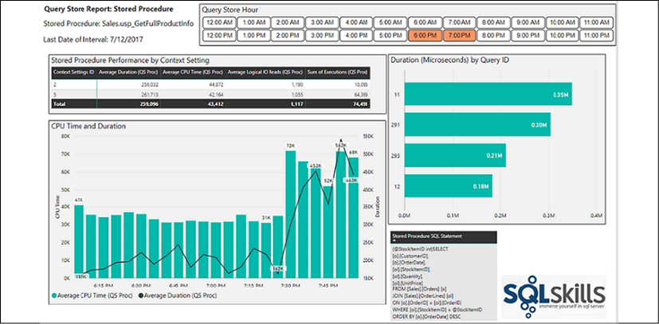
Figure 10.6: Query Store Sample report page – Stored Procedure
The Query Store Stored Procedure report page breaks out measures of performance by Context Settings ID and individual Query ID. A combination chart displays the trend of CPU and duration performance across the intervals; the SQL statement associated with the procedure is displayed via a table visual. Additionally, a custom Chiclet slicer is used to give the user simple filtering control for the hourly time frames.
How it works…
SQL Server Query Store collects compile and runtime information related to the queries and query plans of a database. This persisted data is made available for analysis via three separate data stores:
A plan store containing query execution plan information
A runtime stats store of execution statistics
A wait stats store of query wait statistics
These three data stores can be queried in SQL Server 2016 or later via the following system views: sys.query_store_plan, sys.query_store_runtime_stats, and sys.query_store_wait_stats.
The first T-SQL query retrieves the average duration and logical I/O reads of the Query Store intervals collected over the previous 8 hours, as well as the SQL statement itself and the Query ID. A parameter can be set for the number of hours to retrieve in Power BI, and thus the SQL view created for retrieving this data does not require a WHERE clause. Power BI will dynamically build a T-SQL statement with a WHERE clause filter containing the parameter via Query Folding.
Note that the LocalLastExecutionTime column is cast to a datetime2(0) data type to provide a date value, rounded to the nearest second.
The second T-SQL query demonstrates how to return Query Store statistics for a stored procedure, since the Query Store user interface does not support the analyzing of any activity specific to a stored procedure. Administrators often require visibility to both the specific timeframes and the overall performance to pinpoint when a performance issue occurred, and its significance relative to a baseline.
For the Query Store DurationIO query, the LocalLastExecutionTime column is filtered by the DateTime value that is based on the current local DateTime, and the value in the HoursInPast parameter. You may click on View Native Query to confirm that the query was folded to the server. A Date and Time column are added via the DateTime.Date and DateTime.Time M functions. These added columns will be used in relationships with the Date and Time dimension tables, respectively.
The SQL Server stored procedure Website.QueryStoreProc is executed via the Value.NativeQuery function and the Power BI parameter QueryStoreProcedure is passed into the concatenated text string. Date and Time columns are also added to support relationships with the Date and Time dimension tables. Like the Query StoreDurationIO query, the end_time in the stored procedure is of the datetime2(0) data type, such that Time columns created via DateTime.Time will be rounded off to the nearest second.
There's more…
Individual SQL query statements can also be retrieved from Query Store and Extended Events. The top N visual-level filter can be applied to a table visual based on an Avg Duration measure, as seen in Figure 10.7:
Figure 10.7: A Table Visual filtered for the top 10 SQL Query values based on the Duration measure
As data models grow and change to support new business processes and logic, access to current documentation becomes imperative. Visibility to basic metadata, such as the relationships of the model, columns of the tables, and the filtering logic built into measures, can significantly aid business teams in utilizing Power BI datasets. Additionally, business intelligence and IT professionals who may be new to a specific model or unfamiliar with a component of the model can benefit greatly from direct access to technical metadata, such as data source parameters, SQL and M queries, and the configured security roles.
In this recipe, several dynamic management views (DMVs) related to the schema of a Power BI dataset are accessed and integrated into a Power BI report. A template is then created with parameters, enabling standard documentation reports across multiple Power BI datasets.
Getting ready
To prepare for this recipe, follow these steps:
Open the Power BI Desktop file containing the dataset to be analyzed. This file must remain open during data retrieval.
Open DAX Studio from External Tools.
Retrieve the server name and port associated with the running Power BI Desktop file from the bottom right of the DAX Studio status bar, such as localhost:56514.
In DAX Studio, near the upper-left corner under Metadata, right-click the database ID and choose Copy Database ID.
Open a new Power BI Desktop file and click on Transform data in the ribbon of the Home tab to open the Power Query Editor window.
Create two parameters, Server and Database, and apply the values retrieved from DAX Studio as the current values.
How to provide documentation
To implement this recipe, perform the following steps:
Create a new blank M query called TablesDMV that retrieves the TMSCHEMA_TABLES DMV via the Server and Database parameters:
Figure 10.8: Table metadata of the running Power BI Desktop file
Duplicate the TablesDMV query to retrieve the following five schema DMVs as well:
SYSTEM.TMSCHEMA_COLUMNS
SYSTEM.TMSCHEMA_MEASURES
SYSTEM.TMSCHEMA_ROLES
SYSTEM.TMSCHEMA_TABLE_PERMISSIONS
SYSTEM.TMSCHEMA_RELATIONSHIPS:
Name the queries according to their source, and organize these and their parameters into their own folders:
Figure 10.9: Parameters and DMV queries used to support model documentation
Create a third query group named Documentation and a new blank query named Columns:
let
Tables = TablesDMV, Columns = ColumnsDMV,
Join = Table.NestedJoin(Columns,{"TableID"},Tables,{"ID"},
"TableColumns",JoinKind.LeftOuter),
TableExpand = Table.ExpandTableColumn(Join,"TableColumns",
{"Name"},{"Table"}),
DataType = Table.AddColumn(TableExpand, "Data Type", each
if [ExplicitDataType] = 2 then "Text" else
if [ExplicitDataType] = 6 then "Whole Number" else
if [ExplicitDataType] = 8 then "Decimal Number" else
if [ExplicitDataType] = 9 then "Date" else
if [ExplicitDataType] = 10 then "Fixed Decimal Number" else "Other",
type text),
ColumnType = Table.AddColumn(DataType, "Column Type", each
if [Type] = 1 then "Standard" else
if [Type] = 2 then "Calculated" else "Other", type text),
Filter = Table.SelectRows(ColumnType, each
not Text.StartsWith([ExplicitName], "RowNumber")
and not Text.StartsWith([Table],"LocalDate")
and not Text.StartsWith([Table], "DateTableTemplate")),
Rename = Table.RenameColumns(Filter,
{{"ExplicitName","Column"}, {"DataCategory", "Data Category"},
{"IsHidden", "Is Hidden"}, {"FormatString", "Column Format"}})
in Rename
Create a new blank query named Relationships and identify the tables and columns for each relationship:
let
Relationships = RelationshipsDMV,
Tables = TablesDMV, Columns = ColumnsDMV,
FromTableJoin = Table.NestedJoin(Relationships,
{"FromTableID"}, Tables, {"ID"},"FromTableCols",JoinKind.Inner),
FromTable = Table.ExpandTableColumn(FromTableJoin,
"FromTableCols",{"Name"},{"From Table"}),
ToTableJoin = Table.NestedJoin(FromTable,
{"ToTableID"},Tables,{"ID"},"ToTableCols",JoinKind.Inner),
ToTable = Table.ExpandTableColumn(ToTableJoin,"ToTableCols",
{"Name"},{"To Table"}),
FilterDateTbls = Table.SelectRows(ToTable,
each not Text.StartsWith([To Table],"LocalDateTable")),
FromColumnJoin = Table.NestedJoin(FilterDateTbls,
{"FromColumnID"},Columns,{"ID"},"FromColumnCols",JoinKind.Inner),
FromColumn = Table.ExpandTableColumn(FromColumnJoin,"FromColumnCols",
{"ExplicitName"},{"From Column"}),
ToColumnJoin = Table.NestedJoin(FromColumn,
{"ToColumnID"},Columns,{"ID"},"ToColumnCols",JoinKind.Inner),
ToColumn = Table.ExpandTableColumn(ToColumnJoin,"ToColumnCols",
{"ExplicitName"},{"To Column"}),
CrossFiltering = Table.AddColumn(ToColumn, "Cross Filtering",
each if [CrossFilteringBehavior] = 1 then "Single Direction"
else "Bidirectional", type text),
Rename = Table.RenameColumns(CrossFiltering,{{"ID","Relationship ID"}})
in Rename
Create a simple query called Metrics based on the MeasuresDMV query that adds the table name via a join to the TablesDMV query
Add a query called Security Roles that joins the RolesDMV query with the TablePermissionsDMV query and the TablesDMV query, such that the name of the security role, the filter condition, and the table of the filter condition are included in the query
Click Close & Apply from the ribbon of the Home tab
In Report view, create the following four report pages:
Columns
Relationships
Measures
Security
Use table visuals to expose the most important columns from each integrated M query on each page:
Figure 10.10: Relationships metadata report page
The alternating rows Matrix style is useful for simple table lists such as metadata documentation. For larger, more complex models, slicer visuals give users the ability to quickly answer their own questions about the model such as "Which tables are related to internet sales?" or "Which measures are hidden from the Fields list?":
Figure 10.11: Measures metadata report page
Table and matrix visuals support word wrap for both headers and individual values. For table visuals exposing the DAX Expression column and other long columns such as SQL statements, enable Word wrap in the Values card of the formatting pane.
With the report pages complete, save the Power BI Desktop file and publish the report to the Power BI service.
In Desktop, click on File, and then on Export, to save a Power BI template file (.pbit).
Test the template by retrieving the port and catalog name for a separate dataset and opening the template:
Figure 10.12: Opening the template (.pbit) file to generate documentation on a separate Power BI dataset
With the target dataset open, the queries will prompt for authorization, but will then load the report pages.
How it works…
When used as a dataset rather than a report with a live connection, an open Power BI Desktop file includes an instance of SQL Server Analysis Services (SSAS). Therefore, all data model objects (including DMVs) contained within a Power BI Desktop file can be accessed as an SSAS data source. For example, SQL Server Profiler, SQL Server Management Studio, and Microsoft Excel can all reference the same port and catalog name to establish a connection to the data source. Additionally, the same approach in this recipe is applicable to Power BI Desktop models in DirectQuery mode:
Figure 10.13: Windows Task Manager: SQL Server Analysis Services processes associated with open PBIX datasets
The Columns query joins the Columns and Tables DMV queries and creates two new columns to identify data types and any calculated columns. Additionally, filters are applied to remove metadata associated with the internal date tables that Power BI creates for date columns, and a few columns are renamed to support the documentation reports.
The Relationships DMV contains the Table and Column ID keys for each side of every relationship defined in the model. Therefore, four separate join expressions are used to retrieve the From Table and From Column as well as the To Table and To Column. Additionally, a column is added to identify any bidirectional cross-filtering relationships, and filters are applied to remove internal date tables.
There's more…
For SSAS tabular documentation, additional DMVs such as TMSCHEMA_KPIS and TMSCHEMA_PERSPECTIVES may be utilized, along with more details on the display folders of columns and measures, the descriptions entered by model authors for various objects, and partitions. It's possible that metadata currently specific to SSAS, such as perspectives and KPIs, will also be utilized by Power BI datasets in the future.
A Microsoft on-premises data gateway enables specific cloud services, including Power BI, Azure Analysis Services, Power Apps, and Power Automate, to securely connect to on-premises data sources. In the context of Power BI, these connections support both the scheduled refresh of imported datasets stored in Power BI, as well as DirectQuery and Live Connection datasets, in which only report queries and their results are exchanged between Power BI and the on-premises source. As the availability and performance of the gateway are critical for any Power BI and other supported cloud service deployment requiring on-premises data, regular monitoring of both the gateway service and its host server(s) is recommended.
In this recipe, performance monitor counters specific to the on-premises data gateway and SQL Server Analysis Services are integrated into a single Power BI dataset. This source data is dynamically retrieved and enhanced via M queries, and sample report visualizations are created to support monitoring and analysis.
Getting ready
To prepare for this recipe, follow these steps:
For the initial deployment or planning phases, review the available documentation, tips, and best practices on both SSAS tabular and the on-premises data gateway, including the recommended hardware and network configuration.
SSAS tabular servers should have 2.5x the RAM of their compressed in-memory databases, and outbound port 443 should be opened to run the on-premises data gateway in the default HTTPS mode (ports 9350-9353 if TCP mode). Despite sufficient hardware, the design and complexity of data models, M queries, and DAX measures can significantly impact resource usage and performance. See Chapter 11, Enhancing and Optimizing Existing Power BI Solutions, for more details.
Identify a secure network location directory to store the performance counter file. This path could use a common network drive and the parent folder of other monitoring log files.
Use Windows Performance Monitor to design and schedule a new data collector set that contains the following performance monitor counters:
\MSOLAP:Memory\Memory Limit Hard KB
\MSOLAP:Memory\Memory Limit High KB
\MSOLAP:Memory\Memory Limit Low KB
\MSOLAP:Memory\Memory Limit Vertipaq KB
\MSOLAP:Memory\Memory Usage KB
Performance Monitor defaults to .blg log files, but Power BI can only consolidate files in text, CSV, and Excel format, so set Log format to Comma separated. Windows Performance Monitor is well documented and understood by most administrators. Best practices and automation via PowerShell are outside the scope of this recipe.
How to analyze SSAS tabular models and gateways
To implement this recipe, perform the following steps:
Open a new Power BI Desktop file to be used for both the SSAS tabular and on-premises data gateway counters.
Create data source parameters for the Server, Database, and the number of days of history (CounterHistoryDays) to retrieve.
Define a query, AdWorksDW, that exposes the database objects (tables and views).
Create a new query called SSAS Memory that selects the parent folder location of the SSAS tabular performance counters, and follow the same steps of importing performance monitor counter files described in the Creating a centralized IT monitoringsolution with Power BI recipe earlier in this chapter.
Click Close & Apply from the ribbon of the Home tab.
Create a Dates table using the following DAX code:
Dates =
VAR __Today = TODAY()
RETURN
CALENDAR(DATE(YEAR(__Today)-1,1,1),DATE(YEAR(__Today)+1,12,31))
Create a Time table:
Time =
VAR __hrs = SELECTCOLUMNS(GENERATESERIES(1,23,1),"Hour",[Value])
VAR __mins = SELECTCOLUMNS(GENERATESERIES(0,59,1),"Minutes",[Value])
VAR __secs = SELECTCOLUMNS(GENERATESERIES(0,59,1),"Seconds",[Value])
VAR __hoursMinutes = GENERATEALL(__hrs, __mins)
VAR __hoursMinutesSeconds = GENERATEALL(__hoursMinutes,__secs)
VAR __final = ADDCOLUMNS(ADDCOLUMNS(__hoursMinutesSeconds,
"Time", TIMEVALUE(FORMAT([Hour],"00") & ":" &
FORMAT([Minutes],"00") & ":" & FORMAT([Seconds],"00"))),
"SecondOfDay", FORMAT([Hour],"00") & FORMAT([Minutes],"00") &
FORMAT([Seconds],"00"))
RETURN __final
Change the Data type of the Date column in the Dates table to Date.
Change the Data type of the SecondOfDay column in the Time table to Text.
In the Model view, create a relationship between the Date columns in the Dates table and the SSAS Memory table.
Create a relationship between the SecondOfDay columns in the Time table and the SSAS Memory table.
Create DAX measures to support reporting and analysis, such as the following:
KB to GB Conversion = 1048576
Avg Memory Limit Hard (GB) =
DIVIDE(AVERAGE('SSAS Memory'[Memory Limit Hard KB]),[KB to GB Conversion])
Avg Memory Usage GB (Today) =
CALCULATE([Avg Memory Usage (GB)],
FILTER(ALL('Date'),'Date'[Date] = [Current Date]))
Max Memory Usage GB (Today) =
CALCULATE([Max Memory Usage (GB)],
FILTER(ALL('Date'),'Date'[Date] = [Current Date]))
Max Memory GB (Today, All Time) =
CALCULATE([Max Memory Usage GB (Today)],ALL('Time'))
Create an SSAS tabular memory report leveraging the consolidated counter files, model relationships, and measures:
Figure 10.14: SQL Server Analysis Services server properties – memory properties
How it works…
SSAS Tabular requires memory during processing operations to load new data, in addition to the memory used for existing data. Additionally, temporary memory structures are sometimes created to resolve certain queries. These three components comprise the 2.5x RAM recommendation (2x for current and new data and .5x for temporary structures).
As the memory required by the SSAS instance exceeds certain memory limits or thresholds, given the amount of RAM available to the server and the memory properties defined in analysis server properties, SSAS takes various actions, ranging from clearing out low-priority memory caches (LowMemoryLimit) to aggressively terminating user sessions (HardMemoryLimit). A reference to SSAS memory property documentation is included in the See also section.
The DAX measures convert the memory counter values from KB to GB and make it easy to compare the current day versus the prior day in different filter contexts. For example, the Avg Memory Usage GB (Today) measure is filtered to the current date but will respect user or report filter selections on the Time dimension table. The Max Memory GB (Today, All Time) measure, however, will ignore both Dates and Time filter selections to always show the highest memory usage value for the current day.
Significant spikes in memory usage may indicate sub-optimal DAX measures or inefficient report queries that require large, temporary memory structures. BI teams would want to ensure that memory usage does exceed the memory limits identified by the counters, to avoid performance degradation. Increases in the SSAS memory limit property settings, or simply more overall RAM for the SSAS server, are two options to avoid memory shortages.
There's more…
Scheduled refreshes of imported datasets to Power BI can require significant resources at the time of refresh, based on the size of the dataset and whether its M queries can be folded to the data source as SQL statements. For example, if an M function that doesn't have an equivalent expression in the source Oracle database is used, the M engine in the gateway will be used to execute the logic, such as filter, sort, and aggregate.
DirectQuery and SSAS live connections are less resource-heavy, however, as only queries and query result data are transferred across the gateway. Despite this, it is important to consider the fact that these connections generate a high frequency of queries based on the number of concurrent users, their usage or interaction with the published reports, the type and volume of visualizations, and whether row-level security (RLS) roles have been configured.
Performance reports can also be created for Power BI gateways. To understand how this is done, perform the following steps:
Create and schedule a new performance monitor data collector set containing the on-premises data gateway counters:
Figure 10.15: On-premises data gateway performance counters
In the same Power BI Desktop file containing the SSAS counters, create an additional query to the parent folder of the gateway counter files and apply the same M query transformations to filter the files imported, adjust data types, rename columns, and add Date and Time columns to support relationships to the Dates and Time dimension tables
Build basic aggregation measures against the different gateway counter columns
Build additional DAX measures that apply or remove filter contexts from the Dates and Time tables, following the same expression patterns as the SSAS Memory DAX measures
Design a dedicated gateway report page for the gateway performance counters:
Figure 10.16: Gateway performance report
In this example, the organization is using an SSAS 2014 Tabular Server as a primary data source for Power BI report and dashboard content. Therefore, measures based on the ADOMD gateway counters are used to expose the volume of this workload (bottom chart). The # of all queries executed / sec performance counter is used by the top chart, as well as the average and maximum card visuals above the line chart. Though less common, the organization also uses this gateway to support certain import refreshes of Power BI datasets (Mashup counters) and DirectQuery datasets (ADO.NET counters).
Card, gauge, and standard KPI visuals pinned as tiles to dashboards can drive data alerts and email notifications. In the context of this recipe, memory usage in excess of the Vertipaq and other memory limits could warrant a data alert. Likewise, a high number of query failures, or an unexpected query type activity reported by the gateway counters, could also drive a data alert. For example, if a particular gateway is intended to be dedicated to Import (Mashup) workloads, the counters shouldn't report query activity for ADO.NET (DirectQuery) or OLEDB connections.
It should be noted that the on-premises data gateway supports logging via the Diagnostics tab of the management application. Detailed logging can be enabled by toggling the Additional logging option on although this should only be used when troubleshooting and not left on permanently as this considerably increases the number and size of log files. The gateway logs can be exported on the same Diagnostics tab.
Extended Events is a highly configurable and lightweight performance monitoring system available to both the SQL Server relational database engine and Analysis Services. A vast library of events is available to specific sessions, which can be saved, scheduled, and then analyzed to support performance tuning, troubleshooting, and general monitoring. However, similar to other monitoring tools (such as Windows Performance Monitor and SQL Server Query Store), the Extended Events graphical interface lacks the rich analytical capabilities and flexibility of reporting tools such as Power BI.
In this recipe, the output of an Extended Events session containing query execution statistics is retrieved in a dedicated Power BI event analysis report file. The 1.4 million rows of event data from this file are enhanced during the import process, and report visualizations are developed to call out the most meaningful trends and measures, as well as support further self-service analysis.
Getting ready
To prepare for this recipe, follow these steps:
Identify the events associated with the top monitoring and troubleshooting use cases
Create separate extended event sessions tailored to these use cases with filters to exclude irrelevant or redundant data
Figure 10.17: An Extended Events session with two events and a filter
Determine the data storage target for the session(s), such as an event file, and the location of this file
Optionally, configure settings such as Event retention mode and Max memory size and/or optionally configure a SQL Agent job to start and stop the event session
How to analyze Extended Events
To implement this recipe, perform the following steps:
Obtain access to the Extended Events target XEL target file and open it from SQL Server Management Studio (SSMS), or open it directly from Windows Explorer in a distinct instance of SSMS.
With the XEL file open in SSMS, click on the Extended Events tab on the toolbar and select Export to at the bottom.
Choose the CSV File option, enter a filename describing the session, and select a network path common to Extended Events and, potentially, other performance and administrative log files:
Figure 10.18: An Extended Events session target XEL file and its export as a CSV file
Open a Power BI Desktop file that already contains Dates and Time tables, or create these tables using the same process as described in the Creating a centralized IT monitoring solution with Power BI recipe earlier in this chapter
Click Transform data from the ribbon of the Home tab to open Power Query Editor
Create a parameter for the directory folder path of the event session files and a parameter for the session filename
Open a blank query that concatenates the two parameters into a full file path. Name this query XEventsSession:
Figure 10.19: Query Editor view with the Data Sources parameter and XEventsSession query
Create a query that uses the text/CSV data connector, and replace the file path with the XEventsSession query
Promote the top row as the column headers and convert the data types via the Table.TransformColumnTypes function
Add a Date column based on the Timestamp column of the source file:
let
Source = Csv.Document(File.Contents(XEventsSession),
[Delimiter=",", Columns=31, Encoding=65001,QuoteStyle=QuoteStyle.None]),
PromotedHeaders = Table.PromoteHeaders(Source, [PromoteAllScalars=true]),
ChangeTypes = Table.TransformColumnTypes(PromotedHeaders,
{{"timestamp", type datetime}, {"duration", Int64.Type}}),
DateColumn = Table.AddColumn(RenameColumns, "Timestamp Date",
each DateTime.Date([timestamp]), type date)
in
DateColumn
Add a Time column and a SecondOfDay column to support a relationship with the Time dimension table
See the Creating a centralized IT monitoring solution with Power BI recipe earlier in this chapter for the SecondOfDay column logic and syntax. Like the Performance Monitor Counter data in that example, the timestamp from the Extended Events session is not at the seconds grain, and so adding a time column via the DateTime.Time M function is not sufficient to support a model relationship with the Time dimension table
Name this query Execution Stats; disable the load of the XEventsSession query
Create a blank query called Calculations
Click Close & Apply from the ribbon of the Home tab
Create many-to-one, single-direction relationships from Execution Stats to the Dates and Time tables
Develop and format simple DAX measures to support common aggregations of Extended Events fact columns, such as the average, minimum, and maximum of query duration, CPU time, and logical reads and writes:
Average CPU Time = AVERAGE('Execution Stats'[cpu_time])
Max Duration = MAX('Execution Stats'[duration])
Minimum Logical Reads = MIN('Execution Stats'[logical_reads])
Create a report to visualize the data, like the one shown in Figure 10.20:
In this example, 3 line charts highlight spikes in logical reads, CPU time, and query duration that occurred during the 30-minute Extended Events session. The scatter chart plots individual query_hash values by duration and CPU time and uses the Tooltip to expose the individual SQL statement represented. A table visual with word wrapping is used to display the SQL statement associated with the user's selection as well. Refer to the How it works… section for more details on the sample report visual.
How it works…
By design, Extended Events sessions cannot be written to tables within SQL Server. Additional options for capturing and analyzing event session data are available, such as the histogram and pair matching targets. Data can also be viewed live via Watch Live Data; the CSV and table export options expose this data to tools such as Power BI.
Note that if the events file was exported to a table in SQL Server, the Power BI dataset could be configured for DirectQuery mode. Avoiding the import to Power BI via DirectQuery could be a useful or even a necessary design choice if large and/or multiple event session files are needed in the same Power BI dataset. The dedicated Admin database described in the first recipe of this chapter could store the Extended Events data, and essential Dates and Time tables could be imported into this same server and database, thereby permitting DirectQuery mode.
There's more…
SQL Server Profiler is supported in SQL Server 2016, but is now a deprecated feature for the relational database engine; Extended Events is its long-term replacement. Profiler is not a deprecated feature for Analysis Services, although a graphical interface to Extended Events is a new feature in SSAS 2016, and several new SSAS trace events are exclusively available via Extended Events. Regardless of the database engine (relational or analytical), Extended Events is more efficient and flexible than SQL Server Profiler, thus allowing for more nuanced event data collection with less impact on production workloads. Events associated with new SQL Server features are exclusive to Extended Events.
Additional standard event sessions, such as blocking and deadlocking sessions, could be integrated into the Power BI dataset, similar to the consolidated dataset and visualization layer described earlier in this chapter. As the solution matures, custom groupings of events and/or bins of numerical columns could be embedded in the dataset to simplify analysis further.
In Azure, Azure Log Analytics can be used to monitor activities of virtual machines and other resources running in Azure. Kusto queries can be written to extract log events from this data. These Kusto queries can then be exported to Power Query (M) using the Export menu. These Power Query (M) queries can then be pasted into a blank query in Power BI to extract the same data and include in a model.
Log files containing SQL Server Agent job history and the Power BI usage activities stored in the Office 365 audit log and Power BI activity log can also be integrated into the Power BI monitoring solution described earlier in this chapter. For example, SQL Agent job data can reveal important trends, such as the performance of a nightly job used to load a data warehouse and the duration and reliability of individual steps within these jobs. Likewise, detailed reporting and, optionally, alerts based on user activities in the Power BI service, such as deleting a dashboard, enable BI and IT administrators to better manage and govern Power BI deployments.
In this recipe, transformations are applied to the structure of the Power BI audit log to convert the audit data stored in JSON format and adjust for local time reporting. Additionally, an advanced T-SQL query is used to access the job history data in SQL Server Agent system tables, and to prepare this data for visualization in Power BI. While this recipe covers the Office 365 audit log, similar information can be obtained using the Power BI activity log. Refer to the See also section of this recipe for more information on the Power BI activity log.
Getting ready
To prepare for this recipe, follow these steps:
In the Power BI Admin portal, select Tenant Settings and enable audit logging:
Figure 10.21: Power BI audit logging enabled
Make sure that you are an Office 365 Global Administrator, or otherwise have permissions enabled to access the Office 365 audit logs
Run a PowerShell session as Administrator
Set your execution policy:
Set-ExecutionPolicy RemoteSigned
Run the following command to install the Exchange Online Management module:
Install-Module ExchangeOnlineManagement
Connect to Microsoft Exchange Online (where <UPN> is your Office 365 email address):
Connect-ExchangeOnline -UserPrincipalName <UPN>
Make sure that you are able to run PowerShell remotely (where <UPN> is your Office 365 email address):
Create a view in the Admin SQL Server database (described in the Creating a centralized IT monitoring solution with Power BI recipe earlier in this chapter) that queries the dbo.sysjobhistory and dbo.sysjobs tables in the msdb database:
CREATE VIEW vFact_AgentJobHistory AS SELECT
[h].[server] as [Server], [j].[name] AS [Job Name],
CASE [j].[enabled] WHEN 0 THEN 'Disabled' WHEN 1 THEN 'Enabled' END AS [Job Status]
, [j].[date_created] as [Date Created], [j].[date_modified] as [Date Modified]
, [j].[description] as [Job Description], [h].[step_id] AS [Step ID], [h].[step_name] AS [Step Name]
, CAST(STR([h].[run_date],8, 0) AS date) AS [Run Date]
, CAST(STUFF(STUFF(RIGHT('000000' + CAST ( [h].[run_time] AS VARCHAR(6 ) ) ,6),5,0,':'),3,0,':') as time(0)) AS [Run Time]
, (([run_duration]/10000*3600 + ([run_duration]/100)%100*60 + [run_duration]%100 + 31 ) / 60)
AS [Run Duration Minutes]
, CASE [h].[run_status] WHEN 0 THEN 'Failed' WHEN 1 THEN 'Succeeded' WHEN 2 THEN 'Retry'
WHEN 3 THEN 'Cancelled' WHEN 4 THEN 'In Progress' END AS [Execution Status],
[h].[message] AS [Message Generated]
FROM [msdb].[dbo].[sysjobhistory] [h] INNER JOIN [msdb].[dbo].[sysjobs] [j] ON [h].[job_id] = [j].[job_id]
How to visualize log file data
To implement this recipe, perform the following steps:
In Power BI Desktop, create parameters for the file path and filename; local time zone offsets to UTC
Create a blank query called PBIAuditLog that returns the full file path based on the parameters; disable the load: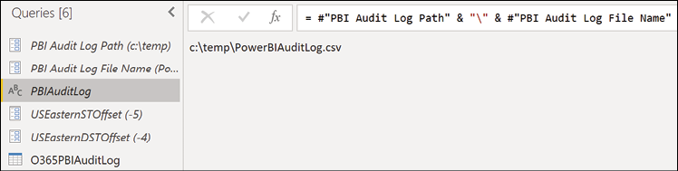
Figure 10.22: PBIAuditLog file path query and other parameters in Query Editor
Create a new query called O365PBIAuditLog:
let
Source = Csv.Document(File.Contents(PBIAuditLog),
[Delimiter=",", Columns=13, Encoding=65001, QuoteStyle=QuoteStyle.Csv]),
RemoveTopRows = Table.Skip(Source,1),
PromoteHeaders = Table.PromoteHeaders(RemoveTopRows, [PromoteAllScalars=true]),
ApplyDateType = Table.TransformColumnTypes(PromoteHeaders,
{{"CreationDate", type datetime}}),
AddCreationDateColumn = Table.AddColumn(ApplyDateType,
"CreationDateOnly", each DateTime.Date([CreationDate]), type date),
AddLocalTime = Table.AddColumn(AddCreationDateColumn,"LocalCreationDate",
each [CreationDate] + #duration(0,USEasternDSTOffset,0,0)),
AddLocalCreationDateColumn = Table.AddColumn(AddLocalTime,
"LocalCreationDateOnly", each DateTime.Date([LocalCreationDate]), type date),
ParseJSON = Table.TransformColumns(AddLocalCreationDateColumn,
{{"AuditData", Json.Document}})
in
ParseJSON
Add steps to expand the Audit column and set the appropriate data types for the expanded columns
Create or reuse Server and Database parameters to create a query called SQLAgentHistory that retrieves the agent data:
Figure 10.23: SQL Server Agent History view exposed in the "AdminProd" query
Click Close & Apply from the ribbon of the Home tab
Create a Dates table using the following DAX code:
Dates =
VAR __Today = TODAY()
RETURN
CALENDAR(DATE(YEAR(__Today)-1,1,1),DATE(YEAR(__Today)+1,12,31))
Create a Time table:
Time =
VAR __hrs = SELECTCOLUMNS(GENERATESERIES(1,23,1),"Hour",[Value])
VAR __mins = SELECTCOLUMNS(GENERATESERIES(0,59,1),"Minutes",[Value])
VAR __secs = SELECTCOLUMNS(GENERATESERIES(0,59,1),"Seconds",[Value])
VAR __hoursMinutes = GENERATEALL(__hrs, __mins)
VAR __hoursMinutesSeconds = GENERATEALL(__hoursMinutes,__secs)
VAR __final = ADDCOLUMNS(ADDCOLUMNS(__hoursMinutesSeconds,
"Time", TIMEVALUE(FORMAT([Hour],"00") & ":" &
FORMAT([Minutes],"00") & ":" & FORMAT([Seconds],"00"))),
"SecondOfDay", FORMAT([Hour],"00") & FORMAT([Minutes],"00") &
FORMAT([Seconds],"00"))
RETURN __final
Change the Data type of the Date column in the Dates table to Date
Change the Data type of the SecondOfDay column in the Time table to Text
In the Model view, create relationships between the Dates and Time tables and the O365PBIAuditLog and SQLAgentHistory tables
Create DAX measures and report visuals to break out agent jobs by their steps and duration over time
Create report pages to visualize the data:
Figure 10.24: SQL Server Agent History visuals—Average Duration by Run Date and Job and Step
How it works…
The Search-UnifiedAuditLog cmdlet for PowerShell is used to access Power BI data from the Office 365 audit log. Variables for the full CSV file path and start and end date can be defined, evaluated, and passed as parameters to the Search-UnifiedAuditLog cmdlet. Refer to the See also section of this recipe for additional information.
Over 20 SQL Server Agent system tables are available in the dbo schema of the msdb database. In the view created in the Getting ready section of this recipe, the run_date and run_time columns are stored as integers by SQL Server and are thus converted to date and time data types, respectively. The run_duration column is stored as an integer in the HHMMSS format and is converted to minutes. The run_status column is replaced with an Execution Status column to display a user-friendly value, such as succeeded, and likewise a Job Status column is created from the enabled source column to display disabled versus enabled values.
For the SQL Agent report in this recipe, a stacked bar chart is used to display the individual steps comprising each job; hovering over the bars displays details specific to the job step. User selections on the bar chart filter the line chart, enabling easy access to the recent performance of any job step. Analyzing SQL Agent job history in Power BI is vastly easier and more flexible than the Job Activity Monitor and Log File Viewer interfaces in SQL Server Management Studio.
There's more…
The Power BI service provides free usage reporting for dashboards and published reports. These usage reports can be easily extended to analyze activity for all reports and dashboards contained in an app workspace using the following steps:
Open the app workspace in the Power BI service and select the vertical ellipses for a report or dashboard; choose View usage metrics report (usage metrics can also be accessed with the report or dashboard open via the toolbar ellipses (…) and selecting Open usage metrics):
Figure 10.25: Usage metrics report
With the usage metrics report open, click on File | Save as to add a new report to the app workspace:
Figure 10.26: Save as to create a dataset of usage metrics for the workspace
Open the new report and simply remove the report-level filter such that all reports and dashboards are included:
Figure 10.27: Usage metrics report
Note that individual users are included in the dataset and default report, making it easy to identify who is or isn't accessing content.
Power BI administrators can automate common tasks by developing PowerShell scripts which leverage commands included in the Microsoft Power BI Management PowerShell module such as Get-PowerBIWorkspace and Add-PowerBIWorkspaceUser. In addition, custom administrative solutions can be developed using the Power BI REST APIs and .NET client library. Using the Power BI REST API, administrators can automate the creation of workspaces and dashboards, publish workspace content, share workspace content, remove access to workspaces, delete workspaces, and much more.
This recipe demonstrates how to connect to Power BI via PowerShell and perform simple administrative functions.
Getting ready
To prepare for this recipe, follow these steps:
Enable Power BI APIs in Tenant settings of the Power BI service:
Figure 10.28: Power BI APIs tenant settings in the Power BI service
Make sure that you are a Power BI Administrator or otherwise have permissions for Power BI
Run a PowerShell session as Administrator
Set your execution policy:
Set-ExecutionPolicy RemoteSigned
Run the following command to install the Exchange Online Management module:
Install-Module MicrosoftPowerBIMgmt -Force
Connect to Power BI:
Login-PowerBI
Verify access:
Get-PowerBIWorkspace | Format-Table
How to leverage the Power BI PowerShell Module
To implement this recipe, perform the following steps:
In PowerShell, get a list of all new workspaces, including personal workspaces, and export this as a CSV file:
Get a list of all workspace users for all new workspaces:
Get-PowerBIWorkspace -Scope Organization -Include All -All |
ForEach-Object {
$Workspace = $_.name
$WorkspaceId = $_.Id
foreach ($User in $_.Users) {
[PSCustomObject]@{
Workspace = $Workspace
Id = $WorkspaceId
Role = $User.accessright
User = $user.Identifier}}} | Export-Csv "c:\temp\workspaceusers.csv" -NoTypeInformation
Create a query called Workspaces2 and disable the load:
let
Source = Csv.Document(File.Contents("C:\temp\workspaces2.csv"),
[Delimiter=",", Columns=15, Encoding=1252, QuoteStyle=QuoteStyle.None]),
RemoveRows = Table.Skip(Source,1),
Headers = Table.PromoteHeaders(RemoveRows, [PromoteAllScalars=true]),
ChangeTypes = Table.TransformColumnTypes(Headers,{{"Id", type text},
{"Name", type text}, {"IsReadOnly", type logical},
{"IsOnDedicatedCapacity", type logical}, {"CapacityId", type text},
{"Description", type text}, {"Type", type text}, {"State", type text},
{"IsOrphaned", type logical}, {"Users", type text},
{"Reports", type text}, {"Dashboards", type text},
{"Datasets", type text}, {"Dataflows", type text},
{"Workbooks", type text}})
in ChangeTypes
Create a query called Workspaces:
let
Source = Csv.Document(File.Contents("C:\temp\workspaces.csv"),
[Delimiter=",", Columns=15, Encoding=1252, QuoteStyle=QuoteStyle.None]),
RemoveRows = Table.Skip(Source,1),
Headers = Table.PromoteHeaders(RemoveRows, [PromoteAllScalars=true]),
ChangeTypes = Table.TransformColumnTypes(Headers,{{"Id", type text},
{"Name", type text}, {"IsReadOnly", type logical},
{"IsOnDedicatedCapacity", type logical}, {"CapacityId", type text},
{"Description", type text}, {"Type", type text}, {"State", type text},
{"IsOrphaned", type logical}, {"Users", type text},
{"Reports", type text}, {"Dashboards", type text},
{"Datasets", type text}, {"Dataflows", type text},
{"Workbooks", type text}}),
AppendQuery = Table.Combine({ChangeTypes, Workspaces2}),
RemoveDups = Table.Distinct(AppendQuery, {"Id"})
in
RemoveDups
Create a query called WorkspaceUsers:
let
Source = Csv.Document(File.Contents("c:\temp\workspaceusers.csv"),
[Delimiter=",", Columns=4, Encoding=1252, QuoteStyle=QuoteStyle.None]),
Headers = Table.PromoteHeaders(Source, [PromoteAllScalars=true]),
ChangeType = Table.TransformColumnTypes(Headers,
{{"Workspace", type text}, {"Id", type text},
{"Role", type text}, {"User", type text}})
in ChangeType
Optionally, create export files for Reports, Dashboards, Datasets, Dataflows, and Workbooks within each workspace, similar to the following:
Click Close & Apply from the ribbon of the Home tab.
Create a relationship between the ID columns in the Workspaces and WorkspaceUsers tables.
Optionally, create additional relationships between the ID columns in the Workspaces table and other tables for Reports, Dashboards, Datasets, Dataflows, and Workbooks.
Create a matrix visualization using the Name column from the Workspaces table as Rows, the Role column from the WorkspaceUsers table as Column, and the Users measure as Values.
How it works…
Classic Power BI workspaces have less functionality than newer ones. With Classic workspaces, the list of user permissions cannot be retrieved through the Power BI API because access is granted through Office 365 groups. In addition, PSCustomObject is not included in cmdlet calls that support classic workspaces. As a Power BI Admin, you can upgrade workspaces by accessing the Power BI Admin portal and selecting Workspaces. In the Workspaces listed, select one or more workspaces, and then click Upgrade from the toolbar.
With the matrix visualization created in this recipe, it is easy to find classic workspaces by clicking on the dropdown for the Name column in the Rows field and selecting Show items with no data. Non-orphaned workspaces with no users listed, such as Admin, Contributor, Member, or Viewer, are almost certainly classic workspaces that should be upgraded.
There's more…
There are many PowerShell cmdlets available for Power BI, including the following:
Not all Power BI REST API calls have corresponding PowerShell cmdlets. However, this does not mean that these REST API calls cannot still be used from PowerShell. The Power BI cmdlets for PowerShell include the general Invoke-PowerBIRestMethod method. This method allows the calling of any Power BI REST API call, such as in this example, which creates a JSON file with all workspaces, including associated users, reports, dashboards, datasets, and workbooks:
Invoke-PowerBIRestMethod -Url 'https://api.powerbi.com/v1.0/myorg/admin/Groups?$top=5000&$expand=users,reports,dashboards,datasets,workbooks' -Method Get > c:\temp\workspaces.json
This method uses the same credentials as set by the Login-PowerBI, Login-PowerBIServiceAccount, or Connect-PowerBIServiceAccount calls. To use the authenticated session outside of PowerShell, use the following command:
Get-PowerBIAccessToken -AsString
See also
PowerShell cmdlets, REST APIs, and .NET client libraries for administrators: https://bit.ly/3vDJ5qc
This chapter's recipes highlighted the most common and impactful administration data sources, including Windows Performance Monitor, SQL Server Query Store, the on-premises data gateway, the MSDB system database, and Extended Events. Power BI solutions built on top of these sources proactively assess usage trends and resource bottlenecks, while delivering the detailed analysis necessary to identify root causes. Additionally, this chapter covered the metadata of existing Power BI and SSAS data models exposed via dynamic management views (DMVs), such as measure and relationship definitions and resource consumption.
11
Enhancing and Optimizing Existing Power BI Solutions
Power BI projects often begin by focusing on specific functional requirements, such as a set of dashboards and reports for a given business area and team. With relatively narrow requirements and small datasets, sufficient performance and reliability is often achievable without design and code enhancements to the data retrieval, model, and reporting layers. Additionally, Power BI Premium capacity and in certain cases Analysis Services resources provide viable options to enhance the scalability of a dataset.
For larger Power BI projects—particularly when the options of Power BI Premium and Analysis Services are not available—it becomes important to identify opportunities to improve report query performance and to more efficiently use system resources to store and refresh the dataset.
Additionally, the data import process can often be made more resilient and less resource intensive. Furthermore, the application of standard coding syntax, variables, and comments in both Power Query (M) and DAX expressions further improves the sustainability of Power BI datasets.
This chapter's recipes contain top data modeling, DAX measure, and M query patterns to enhance the performance, scalability, and reliability of Power BI datasets. This includes performance tuning examples of both data models and measures, error handling and query folding examples of M queries, and supporting details on the DAX and M query engines.
In this chapter, we will cover the following recipes:
Enhancing Data Model Scalability and Usability
Improving DAX Measure Performance
Pushing Query Processing Back to Source Systems
Strengthening Data Import and Integration Processes
Isolating and Documenting DAX Expressions
Improving Data Load Speeds with Incremental Refresh
Technical Requirements
The following are required to complete the recipes in this chapter:
Power BI Desktop
SQL Server with the AdventureWorksDW2019 database installed. This database and instructions for installing are available here: http://bit.ly/2OVQfG7
The performance of all Power BI reports is impacted by the design of the data model. The DAX queries executed upon accessing a report and when dynamically updating report visuals in interactive, self-service user sessions all rely on the relationships defined in the model and optimizations applied to the model's tables. For in-memory models, the cardinality of the columns imported and the compression of these columns contribute to the size of the dataset and query duration. For DirectQuery data models, the referential integrity of the source tables and the optimization of the relational source largely drive query performance.
This recipe includes three optimization processes, all focused on a Reseller Sales fact table with 11.7 million rows. The first example leverages the DMVs and Power BI memory report created in Chapter 10, Administering and Monitoring Power BI, to identify and address the most expensive columns. The second example splits a dimension table into two smaller tables, and the final example applies a custom sort order to the imported fact table to optimize the compression of a column commonly used by reports.
Getting ready
To prepare for this recipe, follow these steps:
Obtain a sharp definition of the goal of the optimization or the problem being resolved. For example, is the intent to reduce the size of the overall dataset such that more data can be loaded while remaining under 1 GB? Alternatively, is the goal to make the dataset easier to manage and less error prone during refresh, or is it to improve the query performance experienced with Power BI reports?
Document the current state or baseline, such as query duration, to evaluate the effectiveness of the modifications.
Performance optimization is a broad area in Power BI, as many components are involved, including the data sources, data access queries, data models, and DAX measure calculations. Performance is also significantly impacted by the design of reports and dashboards with more dense, unfiltered, and complex report pages and visuals consuming more resources. Additionally, despite efficiency in all of these areas, sufficient hardware must be provisioned to support the given processing and analytical query workloads, such as the server(s) for the on-premises data gateway and Power BI Premium capacity.
The good news is that it is usually not difficult to align a particular issue, such as an excessively large dataset or a slow query, with at least one of its main contributing factors, and there are often simple modifications that can deliver noticeable improvements. Additionally, there are many tools available to analyze and monitor the different components of Power BI as described in Chapter 10, Administering and Monitoring Power BI and there are free features in the Power BI service, such as Usage Metrics Reports and View related, that can be of further assistance in isolating issues.
This recipe relies on previous recipes, specifically:
Importing and Visualizing Dynamics Management View (DMV) Data in Chapter 10, Administering and Monitoring Power BI
Selecting and Renaming Columns inChapter 2, Accessing and Retrieving Data
How to do it...
To implement this recipe, do the following:
Retrieve and analyze the memory consumed by the columns of the largest fact table or tables. The DISCOVER_STORAGE_TABLE_COLUMN_SEGMENTS DMV used in the previous chapter's Importing and visualizing dynamic management view (DMV) data recipe provides this detail.
As per the Selecting and Renaming Columns recipe of Chapter 2, Accessing and Retrieving Data, identify expensive columns that may not be needed in the dataset or that can be rounded to lower precision, split as separate columns, or expressed via simple measures.
For import mode models, an expensive column is one with many unique values (high cardinality), such as the Order Number columns used as examples in Chapter 2, Accessing and Retrieving Data. Likewise, a DateTime column with multiple time values per date will consume more memory than two separate Date and Time columns. Preferably, only the Date column or only the Date and Time columns should be imported, rather than the DateTime column.
Also, per the Selecting and Renaming Columns recipe, DAX measures that execute simple arithmetic against low-cardinality columns, such as Unit Price and Quantity, can eliminate the need to import more expensive derived columns such as Sales Amount and Sales Amount with Taxes. Furthermore, though counter-intuitive, the SUMX measure with arithmetic across multiple columns often outperforms the simple SUM measure.
Identify columns that are stored as decimal number data types with a high scale (number of digits to the right of the decimal point). If this level of precision is not required, consider rounding off these columns in the SQL view or via the M import query to reduce the cardinality (unique values) and thus improve compression. If a (19,4) column will provide sufficient size and precision, apply the fixed decimal number type in the model.
Replace any DAX calculated columns on large fact tables since imported columns achieve much better compression than calculated columns. Calculated columns on fact tables can often be addressed with DAX measures without sacrificing performance but if DAX measures are not an option, move the column's logic to the SQL view or M query of the fact table, or within the data source itself. If the M query is revised, ensure that the logic is folded to the source system.
Remove or replace DAX calculated columns on any large dimension tables as well by moving this logic to the data retrieval process or leveraging the source system.
Look for calculated columns with a RELATED or LOOKUPVALUE function, which, like an Excel VLOOKUP function, simply retrieves column values from a table on the one side of a many-to-one relationship with a fact table. Business users often utilize the RELATED and LOOKUPVALUE functions to flatten or de-normalize a fact table as they would in standard Excel worksheets, but this duplication is rarely necessary in Power BI, and calculated columns are not compressed like standard imported columns. Additionally, look to migrate the logic of calculated column expressions, such as calculated dates, differences in dates, and derived numerical columns, into DAX measures.
In this example, the current state of the dataset is 334 MB of compressed disk space (the size of the PBIX file converted from KB) and 674 MB of total memory per the memory report introduced in Chapter 10, Administering and Monitoring Power BI.
Following the steps outlined, several quick wins are identified on the Reseller Sales fact table (11.7M rows), including the following:
Only the last four characters of the CarrierTrackingNumber are needed for analysis.
The Order Date, Ship Date, and Due Date columns in YYYYMMDD format can be removed, as they are redundant with the date data types for these columns, and only the date data types are used for relationships.
Four calculated columns can be removed (Days between Due Date, Order Days, Reseller, and Product Name) as a DATEDIFF DAX measure, and existing dimension columns can be used instead.
The Sales Amount, Extended Amount, and Total Product Cost columns can be removed, as simple DAX measures can compute their values.
Figure 11.1: Power BI Dataset Memory Report refreshed with a revised SQL view for Reseller Sales
After making the revisions, the dataset is now 429 MB in memory and the Power BI Desktop file (PBIX) is 221 MB on disk, representing 33%+ savings in memory and disk space.
Large-dimension tables (approximately 1 million+ rows), with their high-cardinality relationships to fact tables, are a major performance bottleneck with Power BI and SSAS Tabular import models. Consider the following dimension table with attributes describing both resellers and promotions:
Figure 11.2: Reseller promotion dimension table
The consolidated table contains 10,520 rows and the relationship column on the Reseller Sales table is 19.4 MB in size.
Figure 11.3: Reseller promo key, approximately 20 MB in size
We can split (normalize) this table into smaller Reseller(701 rows) and Promotion (16 rows) dimension tables and drop the consolidated Reseller Promotion dimension table and the expensive ResellerPromoKey column on the fact table.
Figure 11.4: Reseller and Promotion Tables Replace Consolidated Reseller Promotion
Smaller relationships improve the performance of queries accessing the Promotion and Reseller columns. Additionally, the size of the dataset will be reduced by removing the ResellerPromoKey relationship column.
In this particular example, the row counts are small enough that little impact is observed, but consider splitting large dimension tables over 200,000 rows into smaller tables (lower granularity) as query workloads increase. For example, a 1 million-row customer table could possibly be split into two tables for the data model based only on common query patterns such as customer regions or geographies.
How it works...
Remember that DAX queries executed against import mode models access and scan the memory associated with individual columns. Therefore, several very expensive columns with millions of unique values could be present on a fact table but may not negatively impact the performance of a query that does not reference these columns. Removing these expensive columns or replacing them with less expensive columns reduces the overall size of the dataset but you should not expect query performance to improve.
When data is loaded into a Power BI Desktop model (import mode), the VertiPaq storage engine applies compression algorithms to each column to reduce the memory and thus improve performance.
VertiPaq first stores all unique values of a column (either via value encoding or hash encoding), and then, more importantly, applies run-length encoding (RLE) to store a repeated value only once for a set of contiguous rows in which it appears. Therefore, columns with few unique values, such as month names, are highly compressed, while primary key and GUID columns are not compressed at all.
The data models in Power BI Desktop (and Power Pivot for Excel) are stored in column segments of 1 million rows. For example, a 20 million-row sales fact table will contain approximately 20 distinct segments. If the data required of report queries is spread across all 20 segments, then more resources (and a longer duration) are required to access each segment and consolidate these results to resolve the query. However, if the segments are ordered by date or perhaps by a given dimension (for example, StoreID) and a report query contains a filter that uses this order, such as fiscal year or store region, then only a subset of the segments is queried.
As a simple example, assume a 20 million-row fact table is ordered by date when importing to Power BI and each calendar year represents 1 million rows. A report query that is filtered on only 2 years will therefore need to access only two of the 20 column segments as the other 18 segments contain dates outside the scope of the query.
Vertipaq Analyzer is now integrated into DAX Studio under the Advanced menu as well as in Tabular Editor 3. Vertipaq Analyzer is an easy way to quickly identify the columns consuming the most memory. This and the Best Practice Analyzer in Tabular Editor are two of the most common and easy-to-use tools to analyze the health of a Power BI dataset.
There's more...
While analyzing the data model and making optimizations is important, optimizations can also be made within the Power Query Editor. For example, avoid loading tables that are only used for data retrieval/transformation logic, such as staging queries, to a data model. Even if hidden from the Fields list, these tables consume processing and storage resources like all other tables of the model and add unnecessary complexity. Right-click on these queries in the Power Query Editor and disable Enable load to remove the table from the data model. Keep in mind that data models with many M queries, whether loaded or not, can overwhelm the available threads/resources of the source system during a refresh as all queries are submitted simultaneously.
Also, identify tables that rarely change and consider disabling the default Include in report refresh property (by right-clicking the query in the Power Query Editor). The table can still be loaded to the data model and thus be available for relationships and DAX measures, but its source query will no longer be executed with each refresh. Typical candidates for this include an annual budget or plan table that is only updated once a year, a Currency table, and possibly a geographic or demographic table.
Finally, Power BI applies sophisticated algorithms during the import process to determine the sort order that maximizes compression. However, the chosen sort order might not align with the top performance priorities of the model. For example, it may be more important to improve query performance for reports accessing a certain column, such as StoreID or Date (via relationships to dimension tables), rather than minimizing the size of the overall dataset. Ordering the imported data by these priority columns maximizes their compression while potentially reducing the compression applied to other columns. To demonstrate this, consider the following:
Identify the column (or columns) to order by and note the current memory. In this example, the OrderDate column is 16.7 MB.
Figure 11.5: OrderDate column of 16.5 MB in Data Size (without sort)
Add an expression to the fact table M query that uses the Table.Sort function to order by the OrderDate column.
let
Source = AdWorksDW,
ResellerSales = Source{[Schema="BI",Item = "vFactResellerSalesXL"]}[Data],
OrderDateSort = Table.Sort(ResellerSales,{{"OrderDate", Order.Descending}})
in
OrderDateSort
Right-click on the last step in the Power Query Editor and click on View Native Query to ensure the sorting was folded to the source.
If View Native Query is grayed out, consider moving the sort step to the first transformation step in the preceding code. Upon refreshing the Reseller Sales fact table, the data size of OrderDate is reduced by 36% to 10.6 MB.
Figure 11.6: Improved compression for the OrderDate column due to the sort order of the Import query
Determine whether any other columns, particularly relationship columns such as ProductKey, increased in size.
Optionally (though it is recommended), evaluate top or common DAX queries for performance changes.
Specifying an Order By clause in the import to Power BI exposes the given column to maximum RLE compression given the cardinality of the column. In many scenarios, optimizing the compression on the active relationship date column via sorting offers the best overall performance advantage. However, depending on the structure and distribution of reports and users, ordering by a different fact table column such as ProductKey or StoreID could be the best choice. DAX Studio makes it relatively easy to test the performance of queries against many different model designs.
Passing the Order By operation back to the source (via query folding) is generally good for the refresh process and certainly good for the on-premises data gateway. However, with large fact tables (10 million+ rows) this can require large amounts of source system resources.
Just as specific columns and relationships can be optimized for performance per the prior recipe, frequently used DAX measures can also be targeted for performance improvements. Existing DAX measures may contain inefficient data access methods that generate additional, unnecessary queries or that largely execute in a single CPU thread. Revising measures to better leverage the multi-threaded storage engine and to avoid or reduce unnecessary queries and iterations can deliver significant performance improvements without invasive, structural modifications to the model.
In this recipe, DAX queries executed by Power BI visuals are captured and analyzed using the Performance Analyzer feature of Power BI Desktop. The first example highlights a common misuse of the FILTER function for basic measures. In the second example, two alternative approaches to implementing an OR filter condition across separate tables are described relative to a common but less efficient approach. Additional details of the DAX query engine, using DAX variables to improve performance, and DAX as a query language, are also covered.
Getting ready
To prepare for this recipe, follow these steps:
Open the Power BI Desktop file containing the data model and measures to be analyzed
Select DAX Studio from the ribbon of the External Tools tab
If necessary, build a sample report page that aligns with a poorly performing report or a common report layout
In Power BI Desktop, select Performance analyzer from the ribbon of the View tab
How to do it...
To implement this recipe, use the following steps:
In the Performance analyzer pane, select Start recording.
Make a selection on one of the Power BI Desktop report visuals and observe the DAX queries in Performance analyzer. In this case, the measure under study is the Gross_Sales_Warehouse measure defined as follows:
In this case, the FILTER function does not operate on the results of an ALL function like with date intelligence patterns. The TOPN function accepts the table from SUMMARIZECOLUMNS, which groups by individual Reseller companies and their associated gross sales warehouse values:
In DAX Studio, enable Server Timings and Query Plan on the top toolbar
With the DAX Studio trace running, click on Run or the F5 key and note the performance in the Server Timings window
Click on Clear Cache and execute the query again to obtain a baseline average for the duration, SE queries (storage engine), and SE %
In Power BI Desktop, create a new measure that avoids the FILTER function:
With the cache cleared, execute the query with the revised measure. Create a revised average based on 4-5 separate query executions:
Figure 11.7: Server timings of the baseline query with original measure versus revised measure in DAX Studio
The baseline query executed 35% faster (69 ms to 45 ms) with the revised measure and only needed 1 SE query.
How it works...
The reason the first measure is slower is that with the FILTER on Reseller, the filter selections on slicer visuals of the report (Date, Product, and Promotion) have to be respected before the filter on warehouse is executed. For example, the Reseller dimension table will be filtered to only include resellers with bike category sales in 2016-2017 and of certain promotions before the Warehouse filter is applied. This requires additional scans of the fact table and is thus less efficient.
DAX queries from Power BI report visuals are resolved by the DAX formula engine and the DAX storage engine. The storage engine is the in-memory columnar compressed database for import mode models (also known as VertiPaq) and is the relational database for DirectQuery models. In either mode, the formula engine is responsible for generating query plans and can execute all DAX functions, including complex expression logic, though it is limited to a single thread and no cache.
The formula engine sends requests to the storage engine and if the storage engine does not have the requested data in an existing data cache, the storage engine utilizes multiple threads to access segments of data (1 thread per segment, 1 million rows per segment) from the data model. The storage engine executes a simple join, grouping, filter, and aggregations, including distinct count, to make requested data caches available to the formula engine. Given this architecture, a fundamental DAX and Power BI model design practice is to maximize the allocation of queries to the storage engine and minimize the size of data caches operated on by the formula engine.
Given the performance advantage of reducing storage, engine requests also consider the use of variables. While the primary benefit of DAX variables is improved readability, variables can also reduce the number of queries associated with a measure (and hence its execution duration) since variables are evaluated only once and can be reused multiple times in an expression. Look for DAX measures with multiple branches of IF or SWITCH conditions that reference the same calculation or measure multiple times. For these measures, consider declaring a variable that simply references the existing measure (VAR MyVariable = [Sales Amount]) and then reference this variable in each logical condition, rather than the measure.
While the DAX queries generated by Power BI cannot be edited, DAX queries can be completely authored from scratch for other tools such as the datasets in SQL Server Reporting Services (SSRS) reports. Many of the newer DAX functions, such as TREATASandSUMMARIZECOLUMNS, are particularly helpful with queries and generally the same performance considerations apply to both measures and queries. Studying Power BI-generated DAX queries is a great way to learn how to write efficient DAX queries and DAX in general.
There's more...
Another example of where a DAX measure can be optimized is in this example where a measure must be filtered by an OR condition on two columns from separate tables. A FILTER function cannot be avoided in this scenario like in the prior example, since multiple columns must be referenced in the same expression (the OR condition). The current measure is defined as follows:
A FILTER is applied on the fact table and separate RELATED functions are used to implement the required OR logic. To see how this measure can be optimized, consider the following:
Just like in the previous example, capture a sample DAX query generated in Power BI Desktop from the Performance analyzer pane
Test and analyze the query in DAX Studio to establish a baseline for the current measure
Now create two separate alternative measures—one with SUMMARIZE and another with CROSSJOIN:
In Power BI Desktop, confirm that the new measures produce the same results as the current measure
In DAX Studio, replace the references to the (filter OR) measure with references to the new measures
Repeat the process of executing multiple queries with the cache cleared and documenting the performance to establish baselines for all three versions of the measure
Figure 11.8: Server timings of the baseline query (filter OR) measure versus the two new measures in DAX Studio
Both new measures were 16.7X faster than the current state (2,844 to 170 ms) and were over 90% executed in the storage engine(SE). In this scenario, the CROSSJOIN approach was slightly faster than SUMMARIZE but this comparison would vary based on the cardinality of the columns involved. The larger point from this example is the danger associated with implementing logic that's not supported by the storage engine within the expression parameter of iterating functions like FILTER and SUMX. This is especially true when the table parameter to these functions has many rows such as the 11.7 million-row Reseller Sales fact table used in this recipe.
Note that the ALL function can be used to produce the table parameter if both columns are from the same table, such as ALL('Product'[Product Category],'Product'[Product Color]). ALL cannot directly access columns from separate tables.
At a high level, always think about the size of the table being filtered and look for simple filter conditions and single columns that can be used to reduce the size of this table. For example, replace the table parameter of functions like SUMX and FILTER with a CALCULATETABLE function that implements simple, efficient filter conditions. More complex expressions that cannot be handled by the storage engine can then operate against this smaller table. Similarly, consider (and test) nesting filter conditions such that the most selective, efficient filter condition is applied first (the inner FILTER, the outer CALCULATE):
Use Performance analyzer to examine report element performance in Power BI Desktop: https://bit.ly/3eWXdEb
Pushing Query Processing Back to Source Systems
During the scheduled refresh of datasets retrieving from on-premises sources, any query transformations not executed by the source system will require local resources of the M (Mashup) engine of the on-premises data gateway server. With larger datasets, and potentially with other scheduled refreshes occurring on the same gateway server at the same time, it becomes important to design M queries that take full advantage of source system resources via query folding. Although transformations against some sources such as files will always require local resources, in many scenarios M queries can be modified to help the engine generate an equivalent SQL statement and thus minimize local resource consumption.
In this recipe, a process and list of items is provided to identify queries not currently folding and the potential causes. Additionally, a query based on an existing SQL statement is redesigned with M expressions to allow query folding.
Getting ready
To prepare for this recipe, follow these steps:
Identify the dataset to evaluate for query folding
Use gateway server memory performance counter data to establish a baseline of the resources currently used to perform refreshes as these counters should be impacted by any changes
Also, establish a baseline for query performance using the new Diagnostic tools within Power Query Editor's Tools tab.
The dataset to be optimized will generally be a large PBIX file (100 MB+) published to the Power BI service with a scheduled refresh configured to use an on-premises data gateway and that queries a relational database (SQL, Oracle) as the primary source. If the large PBIX file is retrieving from a file or a collection of files within a folder, revisions are certainly possible, such as filtering out files based on their modified date relative to the current date, however, query folding is not an option for file sources.
How to do it...
The following steps outline the general query folding analysis process:
Open the Power BI Desktop file used as the published dataset with scheduled refreshes of on-premises data.
Click on Edit Queries from the ribbon of the Home tab to open the Power Query Editor.
Starting with the largest queries (the fact tables), right-click on the final step exposed in the Query Settings window.
Figure 11.9: View Native Query disabled for final query step
If the View Native Query option is disabled, then the local M engine is performing at least this final step. If View Native Query is not disabled, you can optionally view the SQL statement as per prior recipes.
Check the previous steps to determine which steps, if any, were folded, and thus the step that caused the query to use local resources. Once a step (M variable expression) in a query uses local resources all subsequent steps in the query will also use local resources.
Identify the cause of the local operation, such as a specific M function not supported by the source system.
Consider revising the source database object, the M expressions, and data source privacy levels to enable query folding.
As an example of performing this process, consider the following case, where a business analyst has used a SQL statement and the Query Editor to construct a customer query:
Figure 11.10: Customer query based on native SQL statement and M transformations
In this scenario, the SQL statement is against the base customer table in the data warehouse (not the view) and the subsequent transformations applied against the query results all use local gateway server resources during each refresh process since the first step executes a native SQL query. The existing SQL view (vDim_Customer) contains the Customer Name column, eliminating the need for the merge operation, though the Marital Status column is not transformed into the longer Married or Single string as per the analyst's transformations. The query can be modified to perform better by taking advantage of query folding as follows:
Create a new M query that uses parameters for the server and database and that uses the customer SQL view:
let Source = AdWorksProd,
Customer = AdWorksProd{[Schema = "BI", Item = "vDim_Customer"]}[Data],
SelectColumns = Table.SelectColumns(Customer,{"Customer Key", "Customer Name", "Date of Birth",
"Marital Status", "Annual Income"}),
MarriageStatus = Table.AddColumn(SelectColumns, "M Status", each if [Marital Status] = "M" then "Married" else "Single", type text),
RemovedColumns = Table.RemoveColumns(MarriageStatus,{"Marital Status"}),
RenamedColumns = Table.RenameColumns(RemovedColumns,{{"M Status", "Marital Status"},
{"Annual Income", "Yearly Income"}})
in RenamedColumns
The existing SQL view, vDim_Customer, is leveraged and the Marital Status conditional logic is built within a Table.AddColumn expression. The few remaining steps simply select, remove, and rename columns and are all transformations that can be folded back to SQL Server.
Right-click on the final step of the new, revised query and ensure that View Native Query is enabled.
Figure 11.11: Native query (folded) based on the revised M query for Customers
The new query returns the same results but is now folded back to SQL Server rather than using local resources. The if...then...else M expression was folded into a CASE expression for SQL Server to execute.
How it works...
Query folding is impacted by the transformations supported by the source system, internal proprietary M engine logic, privacy levels assigned to data sources, the use of native database queries (SQL statements), and the use of custom M functions and logic. For example, even if query folding is appropriate from a performance standpoint such as using a server in a join operation with a local file, folding will not occur if the local file is configured as a private data source.
As per the query folding redesign example in this recipe, if the first step or Source step of the query is a native SQL statement, consider revising the M query steps to help the M engine form a SQL query (fold the M query). Any M transformation applied on top of a native SQL database query (via Value.NativeQuery) will not be folded to the source system. If native SQL queries are used, such as the stored procedure calls, the recommendation is to embed all query steps and transformations in the native SQL query itself. If this is not possible, embed the most resource-intensive operations in the stored procedure and pass filtering parameters from Power BI to the stored procedure to reduce the workload on the local M engine.
If there are required transformations or logic that are not supported by the source system for query folding, the recommendation is to move these steps to the very end of the query. For example, allow SQL Server to execute the filter, the derived columns, and other simple steps via query folding, and only then apply the complex steps locally on top of the SQL query result set.
Several common M functions are not supported by most relational database sources, such as Table.Distinct, which removes duplicate rows from tables, and Table.RemoveRowsWithErrors, which removes rows with errors from tables. If data sources are merged in the query, check their privacy settings (Data source settings | Edit Permissions...) to ensure that privacy is configured to allow folding, such as from an organizational source to a different organizational source.
In general, the following operations are not supported by query folding:
Changing column data types
Adding index columns
Merging or appending queries from different sources
Adding custom columns using Power Query functions that have no equivalent function in the data source
There's more...
For large models with many queries and large tables, consider disabling the default parallel loading of tables in File | Options | Options and settings | CURRENT FILE as many queries executed simultaneously may overwhelm source system resources and cause the refresh process to fail.
Figure 11.12: Parallel loading of tables – CURRENT FILE setting
Just because a query is folded into a SQL statement, it does not mean there are no possible performance issues. For example, the query might be selecting more columns than needed by the data model or might be executing outer join queries when the database schema supports inner joins. Visibility of these queries can inform changes to the BI architecture and M queries.
Owners of the relational database system or data warehouse can take note of Power BI's folded SQL queries via tools like Extended Events. For example, database administrators or BI team members could revise existing SQL views, table indexes, and more based upon the information gathered. Likewise, the Power BI query author could be informed of better or preferred methods of accessing the same data such as joining on different columns.
Strengthening Data Import and Integration Processes
Many Power BI datasets must be created without the benefit of a data warehouse or even a relational database source system. These datasets, which often transform and merge less structured and governed data sources such as text and Excel files, generally require more complex M queries to prepare the data for analysis. The combination of greater M query complexity and periodic structural changes and data quality issues in these sources can lead to refresh failures and challenges in supporting the dataset. Additionally, as M queries are sometimes initially created exclusively via the Query Editor interface, the actual M code generated may contain unexpected logic that can lead to incorrect results and unnecessary dependencies on source data.
This recipe includes practical examples of increasing the reliability and manageability of data import processes including data source consolidation, error handling and comments, and accounting for missing or changed source columns.
Getting ready
To prepare for this recipe, follow these steps:
Identify the dataset to evaluate for data refresh reliability, such as a dataset that imports information from a comma-separated values (CSV) File
Open the PBIX for the dataset in Power BI Desktop
The objective of this example is to retrieve four columns from a text file containing 30 columns describing customers.
How to do it...
To implement this recipe, use the following steps:
Connect to the file with the text/CSV connector and replace the hardcoded path with a query created from parameters:
let Source = Csv.Document(File.Contents(CustomerTextFile),[Delimiter=" ", Columns=30, Encoding=1252, QuoteStyle=QuoteStyle.None]),
PromotedHeaders = Table.PromoteHeaders(Source, [PromoteAllScalars=true])
in PromotedHeaders
Delete the default Columns parameter of the Csv.Document function (Columns=30)
Use a Table.SelectColumns function to select the four columns needed and specify the optional MissingField.UseNull parameter
Finally, set the data types for each of the four columns:
let Source = Csv.Document(File.Contents(CustomerTextFile),
[Delimiter=" ", Encoding=1252, QuoteStyle=QuoteStyle.None]),
PromoteHeaders = Table.PromoteHeaders(Source, [PromoteAllScalars=true]),
SelectColumns = Table.SelectColumns(PromoteHeaders,
{"CustomerKey", "CustomerAlternateKey", "EmailAddress", "BirthDate"}, MissingField.UseNull),
TypeChanges = Table.TransformColumnTypes(SelectColumns,
{{"CustomerKey", Int64.Type}, {"CustomerAlternateKey", type text}, {"BirthDate", type date}})
in TypeChanges
How it works...
With these changes, the query has access to all columns of the source file (not just 30) but only creates dependencies on the four columns needed. Most importantly, the MissingField.UseNull option protects the query from failing if one of the four columns is renamed or removed from the source file. With the MissingField.UseNull option, if one of the four columns selected is removed or renamed, a null value is substituted thus avoiding query failure.
Figure 11.13: Four columns selected from the text file despite the BirthDate column removed from the source
A MissingField.Ignore option is also available to retrieve only the columns found in Table.SelectColumns.
Be sure to avoid the automatic data type changes applied by default to unstructured sources. If enabled, this will effectively create a hardcoded dependency to each of the columns in the source. Likewise, for all other transformations, try to limit or avoid explicitly referencing column names and always favor selecting required columns rather than removing unnecessary columns. The columns explicitly selected are less likely to be changed or removed in the future and removing columns creates a risk that new columns added to the source will be loaded to the data model.
There's more…
In addition to improvements in reliability, one can also useQuery Diagnostics, available in the Tools ribbon of the Power Query Editor, to analyze query performance. There are also methods for improving the overall maintainability of Power Query code. Two such methods are comments and data source management.
As with all coding languages, comments can be used to improve the overall maintainability of M code, as in the example below:
/* This query joins the Product query to the Product Subcategory query.
The product subcategory column 'EnglishProductSubcategoryName' is renamed 'Product Subcategory' */
let ProductToProductSubCatJoin =
try
// Nested outer join based on Subcategory Surrogate Key
Table.NestedJoin(Product,{"ProductSubcategoryKey"},#"Product Subcategory",{"ProductSubcategoryKey"},"ProductSubCatColumns",JoinKind.LeftOuter) otherwise Product,
AddProductSubCatColumn =
try
// Will return nulls if EnglishProductSubcategoryName is renamed or missing in Product Subcategory query
Table.ExpandTableColumn(ProductToProductSubCatJoin, "ProductSubCatColumns",{"EnglishProductSubcategoryName"}, {"Product Subcategory"}) otherwise Product
in AddProductSubCatColumn
Comments are used in both multi-line and single-line formats to help explain the logic. Multi-line comments begin with /* and end with */ while single-line comments are preceded by the // characters. Variable names (that is, AddProductSubCatColumn) are in proper casing with no spaces so as to avoid unnecessary double quotes and to further describe the process.
Another method of increasing the maintainability of Power Query code is through proper data source management. Consider a PBIX file that includes 10 queries access three different data sources are hardcoded into each query. In this example, 10 queries use three separate sources (SQL Server, an Excel file, and an MS Access database file). Any change to the data source paths or connection information would require changing up to 10 different queries. To see how this can be resolved, consider the following:
Open the Power BI Desktop file and identify the data sources being accessed by all queries
The Data source settings dialog from the Transform data dropdown in the ribbon of the Home tab in Report view will expose current file sources
For greater detail, open the Power Query Editor and click on Query Dependencies from the ribbon of the View tab
Figure 11.14: Query Dependencies view of 10 queries
Create the following folder groups in the queries window: Parameters, Data Source Queries, Dimensions, and Facts
Create six text parameters to abstract the file name, file path, server, and database names from the three sources
Develop three data source queries from individual blank queries that reference these parameters:
= Sql.Database(#"SQL Server AdWorks Server", #"SQL Server AdWorks DB")
= #"MS Access AdWorks Path" & "\" & #"MS Access AdWorks DB" & ".accdb"
= #"MS Excel Ad Works Path" & "\" & #"MS Excel Ad Works File" & ".xlsx"
Assign names to these queries such as MS Access Ad Works Connection and disable their load to the data model
Finally, modify each of the 10 queries to reference one of the three data source queries such as the following:
let Source = Access.Database(File.Contents(#"MS Access Ad Works Connection"), [CreateNavigationProperties=true]),
Customer = Source{[Schema="",Item="DimCustomer"]}[Data]
in Customer
Figure 11.15: Consolidated and parameterized data sources organized in the Power Query Editor
The folder groups, parameters, and data source queries make it easier to understand and manage the retrieval process.
See also
10 Common Mistakes in Power Query and How to Avoid Pitfalls by Gil Raviv: http://bit.ly/2uW6c33
Isolating expressions into independent and interchangeable DAX measures or as variables within measures is recommended to simplify development and ownership of the dataset. Independent measures can be hidden from the Fields list yet contain core business definitions and efficient filtering logic to drive the results and performance of many other measures in the model. Although scoped to each measure, DAX variables provide a self-documenting coding style and, unlike scalar-valued measures, also support table values thus allowing for even greater modularity.
In this recipe, DAX variables, measures, and comments are used in different examples that demonstrate best practices around the creation and use of DAX expressions.
Getting ready
To prepare for this recipe, follow these steps:
Open a Power BI Desktop file locally and access the Power Query Editor by clicking on Transform Data in the ribbon of the Home tab
Create a query named AdWorksDW similar to the following:
let
Source = Sql.Database("localhost\MSSQLSERVERDEV", "AdventureWorksDW2019")
in
Source
Disable load on the AdWorksDW query and place it in a Data Sources query group
Right-click the AdWorksDW query and choose Reference
Rename the query Reseller Sales and choose the FactResellerSales table
Repeat steps 4 and 5 to create a Resellers table that chooses the DimReseller table and a Dates query that chooses the DimDate table.
Move the Reseller Sales query to a Facts query group and the Resellers and Dates queries to a Dimensions query group
In the Other Queries query group, create a blank query called Calculations
Choose Close & Apply from the ribbon of the Home tab
Save your work
How to do it...
To implement this recipe, use the following steps:
Create the following base measures in the Calculations table:
Create a Reseller Margin % measure in the Calculations table:
Reseller Margin % =
/*
Net Sales = Gross sales net of discounts that have shipped
Product Cost = Product standard cost of all ordered products
(including not shipped). A Date of 12/31/2099 used for
unshipped sales order lines since 1/1/2015
*/
VAR ShippedSales = CALCULATETABLE('Reseller Sales',
'Reseller Sales'[ShipDate] <> DATEVALUE("12/31/2099"))
VAR NetSalesShipped = CALCULATE([Reseller Gross Sales] -
[Reseller Discount Amount],ShippedSales)
VAR ProductCost = SUMX('Reseller Sales',
'Reseller Sales'[OrderQuantity] *
'Reseller Sales'[ProductStandardCost])
RETURN
DIVIDE(NetSalesShipped - ProductCost,NetSalesShipped)
Create a Reseller Gross Sales (Custom) measure in the Calculations table:
Reseller Gross Sales (Custom) =
VAR CurrentDate = MAX('Dates'[FullDateAlternateKey])
VAR ResellerTypes = CALCULATETABLE('Resellers',
Resellers[BusinessType] = "Warehouse")
VAR DateHistory = --Trailing 10 Days
FILTER(ALL('Dates'),'Dates'[FullDateAlternateKey] <= CurrentDate &&
'Dates'[FullDateAlternateKey] >= CurrentDate - 10)
RETURN
CALCULATE([Reseller Gross Sales],ResellerTypes,DateHistory)
How it works...
The Reseller Margin % measure includes three lines of comments to describe the business definitions of the measure's components. Comments can also be added per line via the -- and // characters and Power BI applies green color coding to this text. Embedding comments is recommended for both complex measures with multiple components and simple measures, which form the foundation of many other measures.
The ShippedSales variable filters the Reseller Sales fact table to exclude the unshipped sales order lines and this table is used as a filter parameter in the NetSalesShipped variable. The existing ResellerGrossSales and ResellerDiscountAmount measures are referenced, but the ProductCost variable is explicitly defined against the ResellerSales fact table (shipped or not). Though significantly longer than alternative DAX expressions for the same calculation, the use of variables and comments eliminates (or reduces) the need to review other measures to understand the logic and source columns.
For the Reseller Gross Sales (Custom) measure, variables are declared for each of the tables to be filtered and a comment (Trailing 10 Days) is inserted to help explain the DateHistory variable. The variables are invoked as filter parameters to CALCULATE, and so the Reseller Gross Sales measure reflects this modified filter context. The same functional result can be achieved by defining all the filtering logic within CALCULATE, but this would make the expression less readable and thus more difficult to support.
There's more...
DAX Formatter can be used within DAX Studio to align parentheses with their associated functions. Long, complex DAX measures can be copied from Power BI Desktop into DAX Studio to be formatted. To use DAX Studio to format queries, open DAX Studio, copy and paste the query from Power BI Desktop into the main window, and then click on Format Query in DAX Studio. Copy and paste the query from DAX Studio and replace the expression in Power BI Desktop with the formatted expression.
Figure 11.16: DAX Formatter in DAX Studio used to format a year-to-date measure
DAX authoring in Power BI Desktop also supports parentheses highlighting, but DAX Formatter isolates functions to individual lines and indents inner function parameters. Without the function isolation and indentation provided by DAX Formatter, complex expressions are often wide and difficult to interpret or troubleshoot.
Improving Data Load Speeds with Incremental Refresh
Incremental refresh is a feature originally released for Power BI Premium capacities but has become a feature for Pro licenses as well. Prior to incremental refresh, Power BI only had a single mode of operation when refreshing datasets, full load. In other words, the existing data in the dataset was removed and entirely replaced each time the dataset refreshed. The full load refresh process could take a long time when dealing with large fact tables with millions of rows. Incremental refresh solves this problem by only refreshing new and changed data within the dataset. Since incremental refresh is relatively new, older datasets are likely still using the full load process and thus might benefit from being retrofitted with incremental refresh.
This recipe demonstrates how to set up and configure incremental refresh in Power BI.
Getting ready
To prepare for this recipe, follow these steps:
Open a Power BI Desktop file locally and access the Power Query Editor by clicking on Transform Data in the ribbon of the Home tab
Create a query named AdWorksDW similar to the following:
let
Source = Sql.Database("localhost\MSSQLSERVERDEV", "AdventureWorksDW2019")
in
Source
Disable load on the AdWorksDW query and place it in a Data Sources query group
Right-click the AdWorksDW query and choose Reference
Rename the query Reseller Sales and choose the FactResellerSales table
Move the Reseller Sales query to a Facts query
In the Other Queries query group, create a blank query called Calculations
Choose Close & Apply from the ribbon of the Home tab
Save your work
How to do it…
To implement this recipe, use the following steps:
In Power BI Desktop, click the Data view and sort the OrderDate column in the Reseller Sales table in descending order by right-clicking the column in the main table window (not the Fields list) and choosing Sort descending
Note the last date, 11/29/2013 12:00:00 AM
Sort the OrderDate column in ascending order and note the first date, 12/29/2010 12:00:00 AM
In Report view, click Transform data in the ribbon of the Home tab
In the Power Query Editor, click Manage parameters in the ribbon of the Home tab
Click New, provide a Name of RangeStart, a Type of Date/Time, and a Current Value of 12/28/2010 12:00:00 AM (one day less than the minimum value)
Click New to create another parameter with a Name of RangeEnd, a Type of Date/Time, and a Current Value of 11/28/2013 12:00:00 AM (one day less than the maximum value)
Move RangeStart and RangeEnd to a Parameters query group
Select the Resellers Sales query
In the OrderDate column header, select the drop-down button and choose Date/Time Filters and then Custom Filter…
Fill in the Filter Rows dialog as follows:
Figure 11.17: Configuring filters for incremental refresh
Click Close & Apply
In Data view, sort the OrderDate column in descending order and note that rows for 11/29/2013 12:00:00 AM are not present
While still in Data view, right-click the Reseller Sales table and select Incremental refresh
In the Incremental refresh dialog, toggle Incremental refresh to On for the Reseller Sales table and set Store rows… to 30Years and Refresh rows… to 3 Days, as shown in the following image:
Figure 11.18: Incremental refresh dialog settings
Click the Apply all button
Create a simple Card visualization for the report that displays the LatestOrderDate
Publish the report to the Power BI service
Open the workspace where the report was published in the Power BI service
Open the Settings for the dataset
If necessary, add the data source to any gateway cluster
Open the workspace where the report was published in the Power BI service
Click the Refresh now icon for the dataset
Open the Settings for the dataset and investigate the Refresh history
Wait for the dataset to refresh and then open the report to verify that the LatestOrderDate is now 11/29/2013 12:00:00 AM
How it works…
Incremental refresh uses the reserved parameter names RangeStart and RangeEnd in executing incremental refresh. While initially set during the configuration of incremental refresh, these parameters are thereafter updated by the Power BI service to determine which rows within the dataset to refresh incrementally.
When configuring the filter rows for incremental refresh, it is important that the two conditions for RangeStart and RangeEnd do not both include an equal to (=) clause as this may result in duplicate data. Only configure one of the conditions to include an equal to (=) clause in order to avoid such circumstances.
Upon first refreshing the data in the service, Power BI refreshes the entire dataset per the Store rows where column is in the last setting in the Incremental refresh dialog. In other words, during the first refresh of a dataset configured for incremental refresh, the refresh process functions like a full reload of all of the data. All rows within the store period are included in the dataset unless other filters apply. Subsequent refreshes only refresh the new data per the Refresh rows where column is in the last setting.
It is important to remember that once incremental refresh is configured, the Power BI file can no longer be exported from the service. Thus, it is imperative that the original Power BI desktop file be preserved in the event that changes need to be made.
There's more…
There are two optional incremental refresh settings in the Incremental refresh dialog. These optional settings are the following:
Detect data changes
Only refresh complete days
The Detect data changes setting can be used to further optimize the data refreshed by incremental refresh. A column of type Date/Time must be used for this setting and this column should not be the same column used for the RangeStart and RangeEnd parameters. The Power BI service evaluates the maximum value of this column when refreshing and if the value has not changed since the previous refresh then no data is refreshed within the dataset.
The Only refresh complete days setting is used to prevent partial days from being included in data refreshes. For example, in the event that the refresh operation detects that a day is incomplete, such as a scheduled refresh at 4 AM, then that day's data is not included in the refresh operation. This can be useful for organizations that only want complete daily information in their datasets for reporting purposes.
This chapter's recipes contained top data modeling, DAX measure, and M query patterns to enhance the performance, scalability, and reliability of Power BI datasets. This included performance tuning examples of both data models and measures, error handling, and query folding examples of M queries in addition to supporting details on the DAX and M query engines. The next chapter is all about deploying and distributing Power BI content using the Power BI service, Teams, and mobile devices.
12
Deploying and Distributing Power BI Content
Thus far, much of this book has focused on the individual BI professional working with Power BI to create data models, reports, dashboards, and other BI and system assets. However, BI is all about providing insights and information to the business. Thus, for any BI project to be successful, the data and insights created must be shared and distributed throughout the organization.
This chapter contains detailed examples and considerations for deploying and distributing Power BI content via the Power BI service and Power BI mobile application. This includes the creation and configuration of app workspaces and apps, procuring and assigning Power BI premium capacities, configuring data sources and refresh schedules, and deriving greater value from the Power BI mobile application. Additionally, topics such as staging deployments across development and production environments, as well as multi-node premium capacity deployments, are covered.
In this chapter, we will cover the following recipes:
Preparing for Content Creation and Collaboration
Managing Content between Environments
Sharing Content with Colleagues
Configuring Workspaces
Configuring On-Premises Gateway Data Connections
Publishing Apps
Publishing Reports to the Public Internet
Enabling the Mobile Experience
Distributing Content with Teams
At the end of this chapter, you will be well informed about how to deploy and distribute your Power BI content.
Technical Requirements
The following are required to complete the recipes in this chapter:
Power BI Desktop.
SQL Server with theAdventureWorksDW2019 database installed. This database and instructions for installing it are available here: http://bit.ly/2OVQfG7.
Power BI collaboration environments can take many forms, ranging from a small group of Power BI Pro users creating and sharing content with each other in a single app workspace to large-scale corporate BI scenarios characterized by many read-only users accessing Power BI premium capacity resources via Power BI apps. Given the cost advantages of the capacity-based pricing model Power BI Premium provides, as well as the enhanced performance and scalability features it delivers, it is important to properly provision and manage these resources.
This recipe provides two processes fundamental to the overall purpose of this chapter: deploying and distributing Power BI content. The first process highlights several critical questions and issues in planning and managing a Power BI deployment. The second process details the provisioning of Power BI Premium dedicated capacity resources and the allocation of those resources to specific deployment workloads via app workspaces.
Getting ready
There are five main licensing mechanisms for Power BI
Power BI Free
Power BI Pro
Dedicated capacity (Embedded, Premium)
Premium Per User
On-premises (Power BI Report Server)
Power BI Free provides extremely limited sharing and distribution features (Publish to web) while Power BI Pro and Premium Per User require every user that creates or consumes Power BI content to be licensed. Dedicated capacities such as Embedded and Premium allow free users to consume content published to embedded or premium dedicated capacity workspaces. On-premises implementations are licensed via Power BI Report Server, a superset of SQL Server Reporting Services (SSRS).
It is essential to carefully review the licensing and features associated with each deployment option. For example, many of the features in the Power BI service such as dashboards and Q&A (natural language queries) are not available in on-premises Power BI Report Server. Likewise, certain Power BI Premium SKUs are exclusive to embedding Power BI into applications. For a more complete treatment of Power BI licensing options, see the See also section of this recipe.
How to do it...
To implement this recipe, do the following:
Determine how Power BI content (datasets, reports, and dashboards) will be deployed and consumed by users.
Will content be deployed to the Power BI service and accessed via apps and Power BI mobile apps?
Will content be deployed to the Power BI service but embedded into business applications?
Will content be deployed to the Power BI report server on-premises and accessed via the reporting services web portal as well as the Power BI mobile app?
For hybrid deployments, such as using both the Power BI service and embedding, or using the Power BI service and Power BI Report Server, estimate the resources required for each of these workloads and evaluate both a consolidated licensing model and separate, dedicated licenses. For example, if 16 virtual cores are provisioned with a Power BI premium P2 SKU, 16 separate cores are also available for licensing Power BI Report Server on-premises. Such consolidated licensing may be more advantageous than licensing Power BI Report Server separately and paying for additional Power BI Pro licenses.
Identify or estimate the Power BI Pro and Power BI Free users based on their roles and needs in the organization.
Will the user create and publish content (Power BI Pro)?
Will the user only consume content and optionally create content for their personal use (Power BI Free)?
Connecting to published datasets via Analyze in Excel and Power BI service Live Connections are Power BI Pro features and are thus not available to Power BI Free users even if the dataset is assigned to a Power BI Premium capacity. However, a Power BI Free user can still view and subscribe to reports and dashboards in Premium capacities, and can also export content to CSVs and PowerPoint.
For larger deployments with many read-only users, estimate the Power BI Premium resources required.
Use the Power BI Dedicated Capacity Load Assessment Tool referenced in the See also section as a starting point.
Plan how deployment workloads will be allocated across premium capacity nodes.
Will a given workload (or perhaps a business function) have its own capacity, or will a single, larger capacity support multiple or all workloads or teams?
If Power BI datasets in import mode will serve as the primary data storage option supporting reports and dashboards, consider their memory usage relative to the memory available per Power BI Premium SKU. For example, 25 GB of RAM is currently available in a P1 capacity node, and this may be insufficient for larger dataset (model) sizes stored in the service with a scheduled refresh. Like SSAS tabular models, 2.5X of memory should be provisioned to support both processing and refreshing, queries, and temporary memory structures created during queries.
Evaluate and plan data modeling tools (datasets).
Will Power BI Desktop be used for both data modeling and report development or will Analysis Services be used for data modeling and Power BI Desktop only used for reporting?
What will the storage mode of these new semantic models be (Import, DirectQuery, Composite) and what are the implications for required memory? For example, aggregations are exclusively available with Power BI Premium and thus significantly less memory would need to be provisioned if aggregations are used correctly.
Are changes to a relational data source or infrastructure necessary to support performance?
In some scenarios, the relational data source must be revised or enhanced to support sufficient DirectQuery performance. These enhancements vary based on the source but may include indexes (such as Columnstore indexes in SQL Server), greater compute and memory resources, denormalization, and referential integrity.
If SSAS is being used on-premises as the source for Power BI (via the on-premises data gateway), it may be beneficial to utilize Azure ExpressRoute to create a private connection to the Azure data center of the Power BI tenant.
Plan for scaling and migrating Power BI projects as adoption and needs change and identify key points of the project lifecycle and the capabilities needed to migrate and scale as needs change.
Examples of this include adding separate Power BI Premium capacity nodes (scale out), larger capacity nodes (scale up), migrating a Power BI Desktop dataset to SSAS or Azure Analysis Services, staging deployments across Dev, Test, and Production Power BI workspaces and apps, moving workspaces into and out of premium capacities, and transferring ownership of content across teams, such as from a business team to a corporate BI team.
Assign roles and responsibilities to Power BI team members.
Dataset authors, including source connectivity, retrieval queries, data modeling, and measuring development
Report authors, including dashboards, mobile-optimized reports and dashboards, and apps
Administrators, including the on-premise data gateway, premium capacities, and tenant settings
Target skills and knowledge specific to these team roles.
Dataset authors should learn the fundamentals of DAX, M, and data modeling for Power BI and SSAS.
Report authors should know or learn about visualization standards, interactivity and filtering, and custom visuals.
Administrators should study monitoring tools and data available for on-premises gateway monitoring, workspaces, premium capacities, the Office 365 audit log, and the Power BI activity log.
Report authors, who are often business analysts outside of IT or BI organizations, should regularly review new and recent report features released in the Power BI monthly updates.
Build collaboration processes across teams.
Dataset authors should collaborate with the owners and subject matter experts of data sources. For example, any changes to data source schemas or resources should be communicated.
Report authors should have access to dataset documentation and collaborate with dataset authors. For example, metrics or dimensions not available for new reports should be communicated. Any standards such as a corporate Power BI report theme or fonts should be documented.
Administrators should collaborate with the Office 365 global admin, data governance, and security teams. For example, administrators should confirm that Power BI tenant settings align with organizational policies. Additionally, administrators can request or procure security groups to manage Power BI.
Plan for common support scenarios, new project requests, and requests for enhancements. For example, create a process for automatically assigning Power BI licenses and security group memberships. Additionally, plan for questions or issues from consumers of Power BI content.
Successful Power BI deployments of any significant scale require planning, team and cross-team collaboration, business processes, active management, and targeted skills and resources. The steps in this recipe only identify several of the fundamental topics—the actual process is always specific to an organization and its deployment goals, policies, and available skills and resources.
There's more...
Power BI Premium was introduced to support large-scale deployments of Power BI for enterprises. Power BI Premium is, at its core, a pool of dedicated hardware resources for a given organization to configure and utilize according to their own use cases and policies. Although other legacy Microsoft BI technologies such as Analysis Services and Reporting Services will continue to be supported, all new features and capabilities, such as composite models and aggregations, are exclusively available to Power BI Premium customers. Additionally, Power BI Premium capacity enables new scenarios including embedding content in applications and using a combination of both the Power BI public cloud service and an on-premises deployment of the Power BI Report Server. Perhaps most importantly for large deployments, Power BI Premium avoids the need to purchase licenses for each user since read-only users can access Power BI Premium content without a pro license. Additionally, as a managed cloud service, resources can be aligned with the changing needs of an organization via simple scale-up and scale-out options.
"In many cases Power BI Premium was built to address the challenges of deploying Power BI at scale where you have larger data models that have grown over time and when you have more users that are accessing the content."
- Adam Wilson, Power BI group program manager
In this example, workspaces specific to functional areas in an organization are associated with two separate Power BI Premium capacity nodes.
An additional workspace and the My Workspace associated with all accounts (Power BI Free and Pro) are included in a shared capacity--the multi-tenancy environment of the Power BI Service. The process for provisioning and configuring such an environment is as follows:
A Microsoft 365 global admin or billing admin purchases the required Pro and Free licenses in the Microsoft 365 admin center.
These licenses are assigned to users according to the roles determined in the planning stage earlier.
Figure 12.1: Microsoft 365 admin center – Purchase services
Purchase a Power BI Premium P2 capacity node by scrolling down, clicking the Details button under the Power BI Premium P2 heading, and then clicking the Buy button.
Figure 12.2: Purchasing a Power BI Premium P2 capacity
Purchase a Power BI Premium P3 capacity.
Confirm that the new Power BI Premium subscriptions appear in the Your products window along with any purchased Power BI Pro and Power BI Free licenses.
The Microsoft 365 global admin or Power BI Service Administrator opens the Power BI admin portal. In the Power BI service, click on the gear icon at the top right and select Admin Portal.
Select Capacity settings from the admin portal and then click on Set up new capacity.
Give the capacity a descriptive name and assign the capacity admin role to a user or users.
Global admins and Power BI Service Admins are capacity admins by default, but the capacity admin role can be assigned to users that are not Power BI Service Admins. Capacity admin role privileges are specific to the given capacity.
Grant workspace assignment permissions to specific Power BI Pro users or groups for the capacity.
Figure 12.3: User permissions in Capacity settings
Set up the other capacity purchased, assign its capacity admins, and grant its workspace assignment permissions.
Power BI Pro users with workspace assignment permissions can create premium workspaces in the Power BI service.
In the Power BI admin portal, capacity admins can assign or remove workspaces from premium capacity, as well as whitelisting users such that all of a given user's workspaces are assigned to premium capacity.
Figure 12.4: Power BI Premium capacity assigned to workspaces
In this example, three workspaces (sales, marketing, and finance) are assigned to a Power BI Premium Capacity named Enterprise BI (P3). Additionally, this capacity also supports the embedded reporting needs of a custom application. The larger P3 (32 cores, 100 GB RAM) capacity was chosen given the higher volume of query traffic for these workspaces, as well as the need for larger dataset sizes.
Supply chain and operations workspaces were assigned to a P2 capacity. In this case, though less of a workload than the P3 capacity, these groups still need to share content with many free users. Finally, a workspace for a small group of IT users (IT Admin) with Power BI Pro licenses is maintained in Shared Capacity. This workspace did not require Power BI Premium, given minimal needs for distribution to free users and given smaller datasets with relatively infrequent refresh schedules.
Scaling out Power BI Premium involves distributing provisioned capacity (v-cores) across multiple capacities. For example, the 32 v-cores purchased as part of a P3 capacity node could optionally be split into three separate capacities: two P1 capacities of 8 v-cores each and one P2 capacity of 16 v-cores (8 + 8 + 16 = 32). This ability to distribute v-cores across distinct premium capacities is referred to as v-core pooling.
In-place scaling of Premium capacities involves purchasing an additional capacity node in the Microsoft 365 admin center as per the recipe, then adjusting the capacity size of a given premium capacity to reflect the additional cores:
Figure 12.5: Available v-cores for a capacity in the Power BI admin portal
For example, if a P1 capacity is determined to be insufficient for the desired performance or scalability, an additional P1 capacity can be purchased. At this point, with two P1 capacities purchased at 8 v-cores each, a P2 capacity size (16 v-cores) can be set for the original capacity in the Power BI admin portal. This makes it quick and easy to incrementally scale up as requirements change.
Corporate BI and IT teams familiar with project lifecycles, source control systems, and managing development, testing, and production environments should look to apply these processes to Power BI deployments as well. Power BI Desktop does not natively interface with standard source control systems such as Azure DevOps. However, Power BI files can be stored in SharePoint Online Team site and OneDrive for Business to provide visibility to version history, synchronization between local device and the cloud service, restore capabilities, and more. In the Power BI service, separate development, test, and production workspaces and their corresponding apps can be created to support a staged deployment. Utilizing these tools and features enables Power BI teams to efficiently manage their workflows and to deliver consistent, quality content to users.
This recipe contains a recipe for deploying content using Power BI Deployment Pipelines, which is a Premium feature. Alternative methods for those without Premium are included in the There's more section.
Getting ready
To prepare for this recipe, follow these steps:
In the Power BI Service, create a new Premium workspace.
Open a report in Power BI Desktop that includes query parameters and Publish the report to the Premium workspace created in Step 1. The query parameters should be set to Text.
Again, this recipe requires a Power BI Premium capacity.
How to do it...
Creating and using Power BI Deployment Pipelines is relatively easy. To create and use a pipeline follow these steps:
In the Power BI Service, choose Deployment pipelines from the left navigation pane.
Choose Create a pipeline.
Provide a Pipeline name and click the Create button.
Click the Assign a workspace button.
Choose the Premium workspace created in Step 1, assign the deployment stage for the workspace of Development and click the Assign button.
Figure 12.6: Assign a workspace to a deployment pipeline
Under the Development stage, click the Deploy to test button. This creates a new workspace and deploys the content in Development to this workspace.
Figure 12.7: Power BI deployment pipeline
Once the content is deployed to Test, click the lightning bolt icon in the Test stage header.
Click on the dataset under the Datasets heading.
Expand Parameter rules and click the Add rule button.
Under the For this parameter heading, choose a parameter.
Under the Apply this value, edit the parameter and click the Save button.
Figure 12.8: Power BI deployment pipeline parameter rule
Now, every time the dataset is deployed to the Test stage, the parameter will point to the test SQL Server instead of the development SQL Server. For more information about Power BI pipelines and how to use them in Power BI deployment scenarios, see the See also section of this recipe.
How it works...
Power BI deployment pipelines allow the easy movement of content between Development, Test, and Production deployment stages. These deployment stages are tied to individual workspaces that are created automatically by the pipeline. As content is changed within the different stages, that content can be deployed to previous stages or subsequent stages. In addition, rules can be defined within Test and Production stages that change data sources or parameters to point to the appropriate source systems.
The Development stage is designed to be the working area for report development. The Test stage is where developed content can be shared with business users for user acceptance testing. Finally, the Production stage is where the final product is presented to the business.
There's more...
If you do not have Power BI Premium, the Power BI REST API's can be used to deploy content between workspaces. In addition, the ALM Toolkit allows you to compare two compare and merge Analysis Services tabular models using the open-source BISM Normalizer toolset. BISM stands for Business Intelligence Semantic Model and is a defined Microsoft model for reporting, analytics, scorecards, and dashboards.
BISM includes three layers, the Data model layer (tabular and multi-dimensional), Business logic and queries layer (DAX and MDX), and the Data access layer (ROLAP, MOLAP, Vertipaq, and DirectQuery). The ALM Toolkit uses the BISM foundation to generate a comparison of Analysis Services models and can then merge the changes in one model with another model. For more information about the ALM Toolkit and how to use it in deployment scenarios, see the See also section of this recipe.
Finally, Maik van der Gaag developed a free set of tasks for Azure DevOps Pipelines called Power BI Actions. This set of tasks allows common deployment actions to be automated via Azure DevOps Pipelines, allowing the creation of a continuous integration, continuous development (CICD) process for Power BI deployments. For more information about the CICD with Azure DevOps and how to use it in Power BI deployment scenarios, see the See also section of this recipe.
Power BI apps are the recommended content distribution method for large corporate BI deployments, but for small teams and informal collaboration scenarios, sharing dashboards and reports provides a simple alternative. By sharing a dashboard, the recipient obtains read access to the dashboard, the reports supporting the dashboards tiles, and immediate visibility of any changes in the dashboard. Additionally, dashboards and reports can be shared with Power BI Pro users external to an organization via security groups and distribution lists, and Power BI Pro users can leverage Analyze in Excel as well as the Power BI mobile apps to access the shared data. Moreover, Power BI Free users can consume dashboards and reports shared with them from Power BI Premium capacity.
In this recipe, a Power BI dashboard is shared with a colleague as well as a contact in an external organization. Guidance on configuring and managing shared dashboards and additional considerations is included throughout the recipe and the How it works... and There's more... sections.
Getting ready
Confirm that both the owner of the dashboard and the recipient(s) or consumers have Power BI Pro licenses. If the recipient(s) does not have a Power BI Pro license, check if the dashboard is contained in a workspace that has been assigned to premium capacity. Either Pro licenses or Premium capacity are required to share the dashboard. A Power BI Pro user cannot share a dashboard hosted in Power BI shared capacity with a Power BI free user.
Enable the external sharing feature in the Power BI Admin Portal, either for the organization or specific security groups. The owner of a shared dashboard can allow recipients to reshare a dashboard but any dashboards shared with external users cannot be shared. Additionally, user access to the dashboard and the ability to reshare can be removed by the dashboard owner. Unlike the Publish to web feature described later in this chapter, external sharing can be limited to specific security groups or excluded from specific security groups.
In this example, Jennifer from the BI team is responsible for sharing a dashboard with Brett from the Canada sales team and another person, Jack, from outside the organization. Brett will need the ability to share the dashboard with a few members of his team.
How to do it...
To implement this recipe, do the following:
Create a dedicated workspace in the Power BI service.
Set the privacy level of the workspace to allow members to edit content and add team members to the workspace.
Create a security role in Power BI Desktop for the Canada sales team.
Publish the Power BI Desktop file to the workspace and add members or security groups to the Canada sales team role.
By using security roles, an existing Power BI Sales dataset containing sales for other countries can be used for the dashboard. Brett will be allowed to share the dashboard, but RLS will prevent him and those mapped to the security role via security groups from viewing sales data for other countries. See Chapter 8, Implementing Dynamic User-Based Visibility in Power BI, for details on configuring RLS.
Create new Power BI Desktop report files with live connections to the published dataset in the workspace.
Build essential visualizations in each file and publish these reports.
In the Power BI service, create a new dashboard, Canada Sales Dashboard, and pin visuals from reports, and adjust the layout.
Click on Share from the Canada Sales Dashboard in the workspace of the Power BI service.
Figure 12.9: Sharing the Canada Sales dashboard
Add Brett, the external user, and optionally a message on the Share dashboard form.
Figure 12.10: Share dashboard form in the Power BI service
Power BI will detect and attempt to auto-complete as email addresses are entered in the Grant access to input box. Additionally, though sharing dashboards is sometimes referred to as peer-to-peer sharing, a list of email addresses can be pasted in, and all common group entities are supported, including distribution lists, security groups, and Office 365 groups. Per the image, a warning will appear if a user external to the organization is entered.
In this example, leave the Allow recipients to share this dashboard option enabled below the message. Click on Grant Access.
If left enabled on the share form, recipients will receive an email notification as well as a notification in Power BI.
Figure 12.11: Notification center in the Power BI service of the dashboard recipient
For the recipient, the dashboard appears in the Shared with me tab. If enabled by the dashboard owner (and if the user is internal to the organization), the option to reshare the dashboard with others is enabled. The user will be able to favorite the dashboard, access it from the Power BI mobile app, and interact with the content, such as filtering selections, but cannot edit the report or dashboard.
How it works...
Content should always be distributed from workspaces and not My Workspace. Even in relatively informal scenarios such as sharing a dashboard with one user, sharing a dashboard from My Workspace creates a dependency on the single user (Jennifer in this case) to maintain the content. Sharing the content from a workspace with multiple members of the BI team addresses the risk of Jennifer not being available to maintain the content and benefits from Microsoft's ongoing investments in administration and governance features for workspaces.
Members of the workspace with edit rights can disable reshares of the dashboard and stop sharing altogether. To edit rights, open the dashboard, click on Share, click the ellipsis (…), and then Manage permissions to identify and optionally revise the current access.
Figure 12.12: Share dashboard, Manage permissions
In the Manage permissions pane, click Advanced at the bottom and then click on the Direct access tab. Here you can add users, edit permissions and remove access as shown in Figure 12.13.
Figure 12.13: Sharing and access options
There's more...
Sharing reports in the Power BI service operates identically as sharing dashboards in terms of the user interface. The only difference is that the process starts on a report page in the service rather than a dashboard.
Datasets can also be shared by providing read access to the dataset specifically. This is done by clicking the three vertical dots next to a dataset either in the left-hand navigation pane or when viewing the Datasets + dataflows pane of a workspace.
Workspaces (formerly App workspaces) are shared areas in the Power BI service for Power BI Pro users to develop content. The datasets, reports, and dashboards contained within workspaces can be published as a Power BI app for distribution to groups of users. Additionally, workspaces can be assigned to Power BI Premium capacities of dedicated hardware to enable all users, regardless of license, to consume the published app and to provide consistent performance and greater scalability. Furthermore, workspaces retain a one-to-one mapping to published apps, enabling members and administrators of workspaces to stage and test iterations prior to publishing updates to apps.
Understanding the history of workspaces is beneficial when reading various historical documentation on the subject. When Power BI was first released, the service included the concept of workspaces. However, these workspaces were tied to Office 365 groups and had various limitations. Microsoft released an update to group workspaces and named these new workspaces. Traditional workspaces were labeled Classic workspaces. Today, all new workspaces are workspaces and are now known simply as workspaces since Classic workspaces have been all but phased out. While this may all seem a bit Istanbul, not Constantinople, just understand that when reading blog posts and other information that refers to workspaces, that this simply means the modern workspace experience in the Power BI service.
In this recipe, a workspace is created and configured. Within the recipe and in the supporting sections, all primary considerations are identified, including the scope or contents of workspaces and the assignment of workspaces to premium capacity.
Getting ready
To prepare for this recipe, follow these steps:
Confirm that Power BI Pro licenses are available to administrators and members of the workspace.
Ensure that the workspace aligns with the policy or standard of the organization for Power BI content distribution.
If premium capacity has been provisioned but not bulk assigned to all workspaces of an organization, determine if the new workspace will be hosted in a premium capacity.
If Premium capacity has been provisioned and authorized for the new workspace, evaluate the current utilization of premium capacity, and determine if the expected workload of datasets and user queries from the new app deployment will require a larger or separate capacity. In addition, confirm that the workspace administrator has workspace assignment permission, or assign this permission in the Power BI admin portal per the first step in How to do it....
Retrieve your Power BI tenant's UTC offset by clicking the question mark (?) icon in the upper-right corner of the Power BI service and choose About Power BI. The UTC offset is shown in Figure 12.14, in this case -0400:
Figure 14: UTC offset of Power BI tenant
Retrieve the Premium capacity ID from the Capacity settings of the admin portal in the Power BI service.
While in Capacity settings, click the gear icon under Actions for the desired capacity and note the CAPACITY ID.
From a workspace in the Power BI service, select Get data from the lower-left corner of the screen.
In the Services section, click the Get button.
Search for Premium and choose the Premium Gen2 Capacity Utilization Metrics app.
On the AppSource page for the template app, click the Get it Now button as shown in Figure 12.15:
Figure 12.15: Premium Gen2 Capacity Utilization Metrics App in AppSource
Fill in the contact information, accept the terms and conditions, and click the Continue button.
Click the radio button for Install to a new workspace, provide a workspace name, and then click the Install button to install the app.
This completes the steps to prepare for this recipe.
How to do it...
To implement this recipe, do the following:
Open the new workspace and choose Apps from the navigation pane in the Power BI service.
Click on the Gen2 Utilization Metrics app.
At the top of the screen, click on Connect your data as shown in Figure 12.16 below:
Figure 12.16: Gen2 Utilization Metrics prompt to Connect your data
Enter the CapacityId and other information requested by the app and click the Next button.
Figure 12.17: Connect to Gen2 Utilization Metrics
On the next screen, choose Sign in and connect and sign in to the Power BI service.
View the recent performance of the capacity via the usage measurements for CPU, memory, and queries.
Assuming that the capacity metrics are in order, exit the app by clicking the Go back link in the lower-left corner of the app.
Click on the arrow next to Workspaces and then click on Create a workspace.
Figure 12.18: Create a workspace in the Power BI service
Workspaces assigned to premium capacity are identified with a diamond icon in the Power BI service.
Provide a workspace name, expand the Advanced section, choose a Licensemode of Premium per capacity and select a capacity.
Figure 12.19: Creating a Premium workspace
Click the Save button to create the workspace.
In the workspace, click the Access link in the header to add workspace members.
Workspace members can now publish datasets and reports and create dashboards to distribute via an app. Technically it is possible to add members to a view-only group and assign developers to the role of workspace admin such that they can edit content. This method of collaboration is not recommended, as the view-only members will have immediate visibility of all changes, as with sharing dashboards. Published apps from workspaces provide for staging deployments and are the recommended solution for distributing content to read-only members.
How it works...
Per the Preparing for Content Creation and Collaboration recipe earlier in this chapter, workspaces have a one-to-one mapping to apps and can have a wide scope (for example, sales), a narrow scope such as a specific dashboard, or a balance between these two extremes, such as European sales. If broad workspaces are used, then it may not be necessary to create a new workspace for a particular project or dashboard as new content can be added to an existing workspace. However, as an increasing volume of reports and dashboards are added to workspaces, it may be beneficial to consider new, more focused workspaces and revisions to the policy.
Apps are simply the published versions of workspaces.
Figure 12.20: Workspaces: one-to-one relationship with published apps
Users consume and interact with apps. Content is created and managed in workspaces. Consumers of apps only have visibility of published versions of apps, not the workspace content. Per the Preparing for Content Creation and Collaboration and Managing Content between Environments recipes in this chapter, not all content from a workspace has to be included in the published app.
There's more...
Office 365 Global Admins and Power BI Admins are Capacity Admins of Power BI Premium capacities by default. These admins can assign users as Capacity Admins per capacity during the initial setup of the capacity and later via Admin permissions within the Capacity settings of a capacity in the Power BI admin portal. Capacity Admins have administrative control over the given capacity but must also be granted assignment permissions in the Contributor permissions setting to assign workspaces to premium capacities if the capacity admin will also be responsible for associating a workspace to premium capacity.
The promise of leveraging the Power BI service and mobile application to provide access to a rich set of integrated dashboards and reports across all devices requires thoughtful configuration of both the data sources and the datasets which use those sources. For many organizations, the primary business intelligence data sources are hosted on-premises, and thus, unless Power BI reports are exclusively deployed to on-premises Power BI Report Server, the on-premises data gateway is needed to securely facilitate the transfer of queries and data between the Power BI service and on-premises systems. Additionally, the datasets which typically support many reports and dashboards must be configured to utilize an on-premises data gateway for either a scheduled refresh to import data into Power BI or to support DirectQuery and Live Connection queries generated from Power BI.
This recipe contains two examples of configuring data sources and scheduled refreshes for published datasets. The first example configures two on-premises data sources (SQL Server and Excel) for an import mode Power BI dataset and schedules a daily refresh. The second example configures a separate on-premise SQL Server database for a DirectQuery Power BI dataset and sets a 15-minute dashboard tile refresh schedule.
Getting ready
To prepare for this recipe, follow these steps:
Download, install, and configure the on-premises data gateway as per Creating an On-Premises Data Gateway inChapter 1, Configuring Power BI Tools.
Become an administrator of the on-premises data gateway.
Figure 12.21: Administrators of an on-premises data gateway
It is strongly recommended to have at least two administrators for each gateway installed to provide redundancy and backup of administrative functions.
How to do it...
In this example, an import mode dataset has been created with Power BI Desktop to retrieve from two on-premises data sources, a SQL Server database and an Excel file. To implement this recipe, do the following:
Identify the server name and database name used in the Power BI Desktop file.
Identify the full path of the Excel file.
In the Power BI service, click on the gear icon in the top-right corner and select Manage Gateways.
From the Manage Gateways interface, click on ADD DATA SOURCE and choose SQL Server.
Provide an intuitive source name that won't conflict with other sources and enter the server and database names.
Figure 12.22: Adding a SQL Server database as a source for an on-premises data gateway
The server and database names for the gateway must exactly match the names used in the Power BI dataset.
If configuring an SSAS data source (data source type = analysis services) for a gateway, ensure that the credentials used are also an SSAS server administrator for the given SSAS instance. The server administrator credential is used in establishing the connection but each time a user interacts with the SSAS data source from Power BI, their UPN (user principal name) is passed to the server via the EffectiveUserName connection property. This allows RLS roles defined in the SSAS database to be applied to Power BI users.
Under Advanced Settings, check that the source uses the appropriate privacy level, such as organizational or private.
Click on Add and then, via the Users tab, add users authorized to use this gateway for this data source.
Figure 12.23: Successful setup of a data source for the on-premises data gateway
Add an additional data source for the Excel file using the file data source type.
Like the SQL Server data source, authorize users for this gateway and this data source via the Users page.
Publish the import mode Power BI Desktop file (dataset) to a workspace in the Power BI service.
Access the workspace and from the Datasets + dataflows list, click on the Schedule refresh icon for the dataset.
Figure 12.24: Actions available to a published dataset in the Power BI service
Expand the Gateway connection section.
The gateway will appear as an option for data refresh if the following three criteria are met:
The user is listed on the Users page of the data source(s) within the gateway
The server and database names configured in the Power BI Service for the gateway match the names used in the Power BI Desktop file
Each data source used by the dataset is configured as a data source for the gateway
In the Data sources included in this dataset section, use the Maps to dropdown to select the configured gateway data source connection.
Figure 12.25: Associating the data source with the Power BI gateway data connection
Click the Apply button to connect the data source to the gateway.
Now expand the Scheduled refresh section.
Click the Add another time link to add a scheduled time for the refresh to occur.
Once you've finished adding refresh times, click the Apply button.
Figure 12.26: Scheduled refresh of the dataset
Your dataset is now scheduled to refresh.
How it works...
For shared capacities, there is no guarantee that scheduled refreshes will occur at the exact time they are scheduled, such as 5:00 AM in this example. The actual refresh may take place as long as 20-30 minutes after the time scheduled in the Power BI service.
Data caches used by dashboard tiles are updated after refresh operations for import mode datasets (or manually). The Power BI service also caches data for report visuals and updates these caches as datasets are refreshed. Dashboard tiles can be refreshed manually in the Power BI service via the Refresh visuals menu item (top-right, circular arrow icon). Likewise, reports can be manually refreshed from the Power BI service, but this is only relevant for DirectQuery and SSAS live connections; this does not initiate a refresh for an import mode dataset.
Import mode datasets can be refreshed via the schedule in the Power BI service or via the REST API. Power BI data refresh APIs allow BI teams to trigger refresh operations in the Power BI service programmatically.
For example, a step can be added to an existing nightly (or more frequent) data warehouse or ETL process that initiates the refresh of a Power BI dataset that uses this data source. This allows dashboards and reports in the Power BI service to reflect the latest successful refresh of the data source(s) as soon as possible. In other words, the gap or lag between the source system refresh and the Power BI dataset scheduled refresh can be reduced to the amount of time needed to refresh the dataset in the Power BI service.
To trigger a refresh for a dataset in the Power BI service, simply make the following HTTP request:
POST https://api.powerbi.com/v1.0/myorg/groups/{group_id}/datasets/{dataset_id}/refreshes
See the documentation on Power BI REST API authentication and the Power BI REST API reference in the See also section of this recipe.
There's more...
In this example, a Power BI Desktop file (dataset) in DirectQuery mode based on a separate on-premise SQL Server database must be deployed to the Power BI service. The intent is for the dashboards based on this dataset to be as current as possible. To implement this recipe, do the following:
Like the import mode dataset, add the SQL Server database as a data source to the gateway.
Assign user(s) to this data source and gateway.
Publish the DirectQuery Power BI Desktop file (dataset) to an App Workspace in the Power BI service.
Figure 12.27: Publishing a DirectQuery dataset from Power BI Desktop
Power BI automatically configures the dataset to use a gateway by matching the data sources configured in the PBIX file and the sources configured in the Power BI service for the gateway. The user must also be listed for the gateway.
Access the workspace in the Power BI service and from the datasets list, click on Settings via the ellipsis (...).
Modify the scheduled cache refresh frequency from 1 hour to 15 minutes.
Figure 12.28: DirectQuery dataset settings
By default, the dashboard tiles are refreshed each hour for DirectQuery and Live Connection datasets. In this process, queries are sent by the Power BI service through the gateway to the dataset sources. In this scenario, the organization is comfortable with the more frequent queries, but in other scenarios simply a daily or even a weekly dashboard refresh would be sufficient to avoid adding workload to the data source.
Apps in Power BI are collections of related dashboards and reports from a single workspace focused on a given subject area. Apps are the recommended distribution method for larger solutions involving several distinct reporting artifacts and targeting groups of end users who only need read access.
In this recipe, we demonstrate how to create and publish an app in the Power BI service.
Getting ready
To prepare for this recipe, complete the first recipe Building a Dashboard in Chapter 5, Working in the Service.
How to do it…
To implement this recipe, use the following steps:
In the Power BI service, select a workspace, such as the workspace containing the North American Sales dashboard created in Chapter 5, Working in the Service, Building a Dashboard.
Toggle datasets to No and all other items to Yes in the Include in app column.
Figure 12.29: Workspace contents
Click the Create app button.
On the Setup tab, edit the App name and enter a Description. You can upload a custom App logo and set the App theme color and Contact Information as well.
Figure 12.30: App Setup tab
Click the Navigation tab.
Use the New dropdown and choose Section.
Select the New section and change the Name to North America.
Create three additional sections for Global Sales Reports, Customers, and Supporting Materials.
Move report element links into sections by clicking on the item in the Navigation pane and selecting a section from the Section dropdown.
Figure 12.31: App Navigation tab
Select the Permissions tab.
Add specific individuals or groups to have access to the app and set the permissions. It is recommended that you uncheck the settings under the Allow everyone who has app access to heading and instead control permissions at the dataset level. In addition, it is generally recommended to check the checkbox for Install this app automatically under the Installation heading.
Figure 12.32: App Permissions tab
Click the Publish app button in the lower-right corner.
A popup with the name of the app will appear. Click the Publish button.
In the Successfully published dialog, click the Go to app button.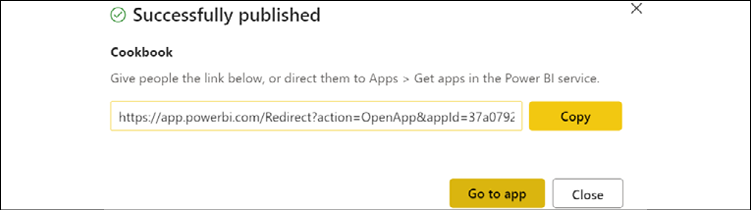
Figure 12.33: App successfully published
The app will look similar to the following:
Figure 12.34: Published app
In the top-left corner, click Go back.
In the left navigation pane, select Apps.
The app should be listed.
Figure 12.35: Apps
You have now built your first app!
How it works…
Apps are a content type in the Power BI service that allows multiple dashboards, reports, and workbooks to be shared and accessed in a single place. Apps are limited to a single app per workspace and while apps can contain links to content outside of the workspace, those links will not function as part of the app but rather simply transport the user to the external dashboard, report, or web address.
Even with these limitations, apps are advantageous when it comes to sharing multiple content items at the same time when the designer does not want to give business users permissions to the entire workspace. Business users benefit by having a single link for all of the content included in the app.
There's more…
Once an app is published, it can be modified. This is done from the workspace by clicking the Update app button in the upper-right corner where the Publish app button was located. The tabs for configuring the app are the same as when publishing, except the Permissions tab now includes a Links area:
Figure 12.36: Links area on the app's Permissions tab
The settings for the app on all three tabs can be edited and then, once complete, simply click the Update app button in the lower-right corner where the Publish app button was located originally.
Apps can also be unpublished. This is also done from the workspace by using the ellipsis (…) and then selecting Unpublish App.
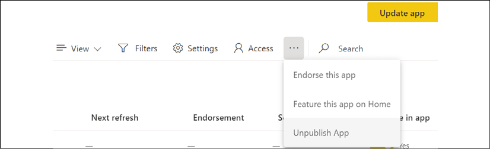
Figure 12.37: Unpublish App
As you can see, apps provide a flexible method of distributing content to users.
The Publish to web feature in the Power BI service allows Power BI reports to be shared with the general public by embedding the report within websites, blog posts, and sharing URL links. If the publish to web tenant setting is enabled and if a user has edit rights to a report, an embed code can be generated containing both the HTML code for embedding the report and a URL to the report. All pages of the report, including any supported custom visuals and standard interactive functionalities such as filtering and cross highlighting, are available to consumers of the report. Additionally, the report is automatically updated to reflect refreshes of its source dataset and embed codes can be managed and optionally deleted if necessary, to eliminate access to the report via the embed code and URL.
This recipe walks through the fundamental steps and considerations in utilizing the publish to web feature.
Getting ready
To prepare for this recipe, follow these steps:
In the Power BI service, click on the gear icon in the upper-right corner and select Admin portal.
In the Admin portal, click Tenant settings.
Under Export and sharing settings, find and expand Publish to web.
Enable Publish to web if disabled.
Figure 12.38: Publish to web setting within the tenant settings of the Power BI admin portal
The publish to web feature can be either enabled or disabled for all users in the organization, enabled for specific security groups, or disabled for specific security groups. Given the real security risk posed by Publish to web, it is highly recommended to keep this setting disabled unless the business requires this capability, and even then to limit the feature to specific security groups.
How to do it...
To implement this recipe, use the following steps:
Create a workspace in the Power BI service to host Publish to web reports.
Assign a descriptive name to the workspace that associates it to publish to web content or publicly available data.
Allow members to edit content and only add the individual users that require edit rights to the content.
Create a new Power BI Desktop file that will serve as the dataset for the publish to web report.
Develop essential data connections, queries, model relationships, and measures to support the report.
Save the file and publish it to the app workspace created earlier.
Open a new Power BI Desktop file that will serve as the publish to web report.
Click on Get Data and connect to the published dataset via the Power BI datasets connector.
Develop the report including all visuals, layout, and formatting options, including page size (16:9 or 4:3).
Name the file, save, and click on Publish. The report will be published to the workspace of the source dataset.
Access the workspace in the Power BI service.
Add any new on-premises data sources to the on-premises data gateway in the manage gateways portal.
Open the settings for the dataset, assign a gateway (if applicable), and configure a scheduled refresh.
Open the report, click on File, Embed report, and then Publish to web (public).
Figure 12.39: The Publish to web option for a report in the Power BI service
Click on Create embed code and then Publish.
A Success! dialog is displayed allowing you to copy the embed codes for the report.
Figure 12.40: Successful Publish to web
You are now ready to share the Publish to web URL or use the HTML code in your own website.
How it works...
A separate workspace is not technically necessary for publish to web, but this isolation is recommended for manageability and limiting the risk of publishing confidential or proprietary information. Similarly, Premium capacity is not required but could be appropriate for larger datasets or when more frequent data refreshes and consistent performance are important.
The HTML code provided can be edited manually to improve the fit of the report on the destination for embedding. Adding 56 pixels to the height dimension can adjust the size of the bottom bar. Setting the page size in Power BI Desktop, the view mode in the Power BI service (the View icon in the report header at the upper right), and manually adjusting the iFrame height and width values may be necessary for a perfect fit.
Per Figure 12.39, Power BI reports can also be embedded in SharePoint Online. Clicking on SharePoint Online provides a URL that can be used with a Power BI web part in SharePoint online. Users accessing the SharePoint online page must also have access to the report in the Power BI service.
Power BI caches the report definition and the results of the queries required to view the report as users view the report. Given the cache, it can take approximately one hour before changes to the report definition or the impact of dataset refreshes are reflected in the version of the report viewed by users.
There's more...
All Publish to web and other embed codes can be managed by members of the workspace where the embed code was created. In addition, all embed codes from all workspaces can be managed by administrators in a central location. To see how this is accomplished, do the following:
In the Power BI service, open the workspace where the Publish to web embed code was created.
Click the gear icon in the upper-right corner and select Manage embed codes.
All embed codes created for the workspace are displayed and these codes can be retrieved or deleted using the ellipsis (…).
Figure 12.41: Manage embed codes interface for a workspace
Now click on the gear icon again and choose Admin portal.
In the admin portal, select Embed Codes.
All embed codes for all workspaces are displayed and the three vertical dots allow the reports to be viewed or the embed code deleted.
Figure 12.42: Manage embed codes in the admin portal
A Status of Not Supported indicates that one of the few unsupported features has been used by the report, such as RLS, SSAS tabular on premises, R visuals, or ArcGIS Maps for Power BI.
Power BI mobile apps have been designed to align closely with the user experience and feature set available in the Power BI service. This provides a simple, familiar navigation experience for users and allows BI and IT teams to leverage existing Power BI assets and knowledge to enhance the mobile experience in their organization.
This recipe contains two processes to take advantage of Power BI's mobile capabilities. The first process helps identify "quick win" opportunities that require limited BI/IT investment to better utilize basic Power BI mobile features. The second process identifies somewhat less common yet powerful and emerging use cases for Power BI mobile applications.
Getting ready
To prepare for this recipe, follow these steps:
Identify the most highly used dashboards and reports by opening the Power BI admin portal (gear icon: Admin portal) and select the Usage metrics menu item.
Decide which dashboards and reports to target for mobile enhancements.
Figure 12.43: Usage metrics in the Power BI admin portal
The most consumed dashboards and packages visuals provide a summary of consumption or usage by count of users. For much more granular analysis of usage, the Microsoft 365 audit log for Power BI events can be imported and analyzed per Chapter 10, Administering and Monitoring Power BI. Additionally, usage metrics reports specific to individual dashboards and reports are now available in the Power BI service in the ellipsis (…) menu. Though scoped to a specific item, these reports also indicate the split between web and mobile usage.
How to do it...
To implement this recipe, use the following steps:
Optimize a Power BI dashboard for mobile consumption by opening the dashboard and switching to Mobile view.
Figure 12.44: Switching to Mobile view for a dashboard in the Power BI service
Unpin image, text, and less mobile-friendly or relevant tiles from the Mobile view.
Resize and organize KPIs and essential visuals at the top of the Mobile view.
Figure 12.45: Customizing the Mobile view of a dashboard in the Power BI service
Open the PBIX file for a report.
Choose Mobile layout in the ribbon of the View tab of the most important report pages and design the custom mobile layout of the page. See Chapter 4, Authoring Power BI Reports, for details on this process.
Publish the updated Power BI report to a workspace in the Power BI service and re-pin any dashboard tiles.
Test the mobile-optimized dashboards and reports from mobile devices.
Publish updates from Power BI workspaces to Power BI apps containing these mobile enhancements.
Check that Favorites are being used for dashboards and for apps by mobile users.
Demonstrate the process of configuring a data alert with a notification on a dashboard tile in the Power BI mobile app.
Figure 12.46: Notifications of data alerts appear outside the mobile app
Demonstrate the annotate and share feature and related scenarios to mobile users.
Figure 12.47: Annotation added to a Power BI report in Power BI mobile and shared via email
In this example, a report accessed in Power BI Mobile is lightly annotated, and a short message is shared with a colleague, requesting further analysis. A link to the report annotated is built into the shared email enabling the recipient to immediately act on the message and optionally share an annotated response that addresses the request.
Use the Windows 10 Power BI app in meetings and presentations.
Figure 12.48: Windows 10 Power BI app
The Windows 10 Power BI app supports touch-enabled devices, annotations, and easy navigation controls.
Optimize datasets for Q&A. See the recipe Preparing for Q&A in Chapter 5, Working in the Service, for more details.
Test common questions and provide users with examples and keywords to better use the feature.
Building and optimizing mobile experiences can greatly aid in the adoption of Power BI.
How it works...
Only the owner of the dashboard will have the option to customize the Mobile view in the Power BI service. As per Chapter 4, Authoring Power BI Reports, the mobile layout for report pages is implemented within Power BI Desktop files. Therefore, any Power BI Pro user with access to the workspace of the report in the Power BI service and the source PBIX file(s) could optimize these reports for mobile consumption.
By enabling the Responsive Visuals property for Cartesian visuals such as the column, bar, and line charts, these visuals will be optimized to display their most important elements as their size is reduced. This effectively makes it realistic to use these more dense visuals in the mobile layout for reports and mobile view for dashboards. However, it still may make sense to prioritize KPI, card, and gauge visuals in mobile layouts, given the limited space.
Data alerts configured by users are only visible to those users, and there are no limits on the volume of alerts that can be configured. For example, a user may want to set two alerts for the same dashboard tile to advise of both a high and a low value. Currently, data alert and favorite activity is not stored in the Office 365 audit logs, so it's necessary to engage mobile users on these features to understand adoption levels.
There's more...
The Power BI team at Microsoft has provided many options for working with Power BI on mobile devices such as tablets, phones, and even watches. Examples of these options include integration with Apple Watch, the ability to connect and view on-premises Reporting Services reports from phones, and continuous updates to the features and functionality of the Power BI mobile application for iOS and Android devices.
Power BI dashboards can be synchronized with the Apple Watch via the Power BI for iOS application.
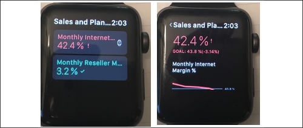
Figure 12.49: Index Screen (left) and the In-Focus Tile (right) of the Power BI mobile app on the Apple Watch
Simply open a dashboard in Power BI for iOS, click on the ellipsis (...) and then click on Sync with watch. Only card and KPI tiles are supported, but Apple Watch faces can be configured to display one of the Power BI tiles.
SSRS reports can be accessed and viewed from the Power BI mobile apps by tapping your profile image icon in the upper-left corner of the app and then Connect to server.
Figure 12.50: Navigation menu in Power BI Mobile with connection to a report server
As you can see, Power BI has wide support for a variety of different mobile devices.
View on-premises report server reports and KPIs in Power BI Mobile: http://bit.ly/2noIloX
Distributing Content with Teams
Microsoft Teams is a unified platform for collaboration and communication, combining video meetings, phone calls, file storage, persistent workplace chat, and application integration into a unified interface. Teams is a part of the Microsoft 365 office productivity suite, integrating natively with Word, PowerPoint, Excel, and SharePoint Online. In addition, feature extensions provide support for integrating with third-party applications.
Microsoft Teams has seen explosive growth in recent years, particularly during the pandemic in 2020. In fact, between March and June 2020, Microsoft Teams had nearly 900% growth. For over half a million organizations, Microsoft Teams has become an essential tool used daily to drive communication and collaboration. It is no surprise then that Microsoft has recently released integration between Power BI and Teams that enables Teams to act as a distribution channel for dashboards, reports, and other content.
This recipe demonstrates how to utilize Teams to distribute and collaborate on Power BI content.
Getting ready
To prepare for this recipe, follow these steps:
Ensure that you have published a report, dashboard, or app to the Power BI service.
Open Microsoft Teams and join or create a team.
You are now prepared to complete this recipe.
How to do it…
To implement this recipe, use the following steps:
Within Teams, select Teams in the navigation pane and then select a channel within a team.
In the team's header area (tabs), select the plus icon (+) to Add a tab.
Figure 12.51: Add a tab in Microsoft Teams
Within the Add a tab dialog, search for power bi and select the Power BI app.
Figure 12.52: Add a Power BI tab in Microsoft Teams
In the Power BI dialog, select a dashboard or report from Workspaces, Apps, or Shared with me.
Figure 12.53: Adding Power BI content to Teams
Click the Save button.
The report or dashboard name is added as a tab for the team.
If Post to the channel about this tab is checked, a post appears in the Posts tab of the General channel.
Congratulations on publishing your first Power BI report to Teams!
How it works…
Adding a Power BI tab in Teams does not generate an embed code like Publish to web or embedding in SharePoint online but rather uses Teams' feature extension capabilities to integrate with Power BI. Additionally, the creation of a Power BI tab in Teams does not grant permissions to the dashboard or report distributed via Teams. Members of the given Team must be granted permissions to the Power BI content via the Power BI service.
There's more…
Adding Power BI tabs to teams within Microsoft Teams is not the only way that Power BI is integrated with Microsoft Teams. Two additional integrations exist, Chat in Teams and pinning the Power BI Windows 10 app to the Teams navigation pane. To see how these additional integrations work, follow these steps:
Log in to the Power BI service and open a dashboard, report, or app.
In the header bar, click Chat in Teams.
Figure 12.54: Chat in Teams
Search for a Team or a Channel to share a link to the Power BI content.
Figure 12.55: Share to Microsoft Teams
Click the Share button.
A post containing a link to the Power BI content is posted to the Posts tab of the selected team and channel.
Figure 12.56: Power BI report link shared to Teams Posts tab
In Teams, select the ellipsis (…) from the navigation pane and search for power bi.
Figure 12.57: Adding the Power BI app in Teams
Select the Power BI app and then click the Add button.
The Power BI app is now pinned to the Teams navigation bar.
Figure 12.58: The Power BI app in Teams
As you can see, there are many integration points between Power BI and Teams.
This chapter contained detailed examples and considerations for deploying and distributing Power BI content via the Power BI service and Power BI mobile applications. This included the creation and configuration of app workspaces and apps, procuring and assigning Power BI Premium capacities, configuring data sources and refresh schedules, and deriving greater value from Power BI mobile applications. Additionally, processes and sample architectures were shared, describing staged deployments across development and production environments and multi-node premium capacity deployments.
In the next chapter, we will explore integrating Power BI with other applications, including SQL Server Reporting Services, Excel, PowerPoint, Azure Analysis Services, Dataverse, Dynamics 365, and more!
13
Integrating Power BI with Other Applications
Power BI tools and services including Power BI Desktop, the Power BI web service, and Power BI mobile applications form a modern, robust business intelligence and analytics platform by themselves. Power BI Premium further extends the scalability and deployment options of Power BI solutions, enabling organizations to deliver Power BI content to large groups of users via apps in the Power BI service, embedded within custom applications, the on-premises Power BI Report Server, or some combination of these distribution options.
However, many organizations either already have extensive self-service and corporate BI assets and skills in other tools, such as Excel, Analysis Services (Azure Analysis Services (AAS) or SQL Server Analysis Services (SSAS)), and SQL Server Reporting Services (SSRS), or are interested in utilizing the unique features of these tools as part of their Power BI solutions. As one example, an organization may choose to keep many existing Excel reports in Excel rather than convert them to Power BI reports given the unique features of Excel such as cube formulas. Similarly, some organizations may continue to use an existing AAS resource for semantic models rather than migrate these models to Power BI Premium for some time due to significant reporting dependencies on these models. Moreover, given the many additional features and benefits of Power BI datasets, organizations with legacy Excel-based Data Models (formerly Power Pivot) may choose to migrate these assets to Power BI.
The recipes in this chapter highlight powerful integration points between Power BI, SSRS, Analysis Services, Excel, PowerPoint, Power Apps, and Power Automate. In this chapter, we will cover the following recipes:
Integrating SSRS and Excel
Migrating from Power Pivot for Excel to Power BI
Accessing and Analyzing Power BI Datasets in Excel
Building Power BI Reports into PowerPoint Presentations
Connecting to Azure Analysis Services
Integrating with Power Automate and Power Apps
Leveraging Dataverse and Dynamics 365
Connecting Dynamics 365 Finance and Operations and the Power Platform
At the end of this chapter you will have a firm understanding of how Power BI works and integrates with other Microsoft technologies.
Technical Requirements
The following are required to complete the recipes in this chapter:
Power BI Desktop
Excel
Visual Studio
SQL Server with the AdventureWorksDW2019 database installed. This database and instructions for installing it are available here: http://bit.ly/2OVQfG7
Power BI Desktop is the primary report authoring tool for content published to the Power BI service as well as for Power BI report visuals embedded in custom applications. However, for many organizations a significant portion of existing or legacy reporting workloads built with SSRS and Excel must be maintained. In many cases, existing SSRS and Excel reports can be converted to modern Power BI reports and dashboards but Power BI is not intended as a full replacement for all the features and use cases for these other tools. In addition to supporting paginated reports (aka SSRS reports) via Power BI Premium and data refresh of Excel reports built against Power BI datasets, the Power BI service offers further methods of integrating content from Excel and SSRS into Power BI. Additionally, given the common database engine and DAX language of Power BI, Power Pivot for Excel, and Analysis Services, BI teams can take full control of reports rendered in SSRS and Excel by authoring custom DAX queries.
This recipe contains two examples of authoring and publishing content from SSRS and Excel to Power BI.
Ensure that SSRS is configured for Power BI integration:
Figure 13.1: Report Server Configuration Manager—Power BI Integration
The Power BI Integration menu item is at the bottom of the list and includes the Power BI tenant name (ID). You must have configured the web service URL and web portal URL to configure this setting.
Ensure that you have Visual Studio installed and verify that in Visual Studio you have SQL Server Data Tools installed, the Workload for Data storage and processing, and the Extension for Microsoft Reporting Services Projects. Install the appropriate items as necessary in Visual Studio. To understand how to install Visual Studio, use this link: https://bit.ly/389eozC.
You are now ready to complete the steps for this recipe.
How to do it...
To implement this recipe, do the following:
Create or identify a workspace in the Power BI service to host the report content.
Create or identify the dashboards in this workspace that will display the report content.
Create a new Report Server Project in Visual Studio or open an existing one.
Configure the AdventureWorksDW2019 database on your SQL Server as a Shared Data Source for the project:
Figure 13.2: Report Server Project —shared data source Configuration for an SQL database
Right-click on the Reports folder and choose AddNew Report.
Right-click Data Sources and choose Add Data Source….
Choose the Shared data source option, select the Shared Data Source created in Step 4, and press the Next> button.
Build your own query or use the following query:
SELECT
vProducts.ProductKey AS [vProducts ProductKey]
,vProducts.EnglishProductSubcategoryName
,vProducts.EnglishProductName
,vProducts.DaysToManufacture
,vProducts.Color
,FactInternetSales.ProductKey AS [FactInternetSales ProductKey]
,FactInternetSales.OrderQuantity
,FactInternetSales.UnitPrice
,FactInternetSales.DiscountAmount
,FactInternetSales.SalesAmount
,FactInternetSales.TaxAmt
,FactInternetSales.Freight
,vProducts.EnglishProductCategoryName
,FactInternetSales.OrderDate
FROM
vProducts
INNER JOIN FactInternetSales
ON vProducts.ProductKey = FactInternetSales.ProductKey
Click the OK button to exit Query Designer and then click the Next> button.
Choose Tabular and click the Next> button.
Click the Finish>> button.
Click the Finish button.
Remove the table created in the central design panel (design surface).
Use the dataset to create SSRS report visuals for pinning. Charts, gauge panels, maps, and images can be pinned from SSRS to Power BI dashboards.
Deploy the SSRS report to a report folder in the SSRS portal and confirm that it renders properly:
Figure 13.3: Pin SSRS report visual to Power BI Dashboard
Click on the Power BI icon and then click on the chart in the report you wish to pin.
Choose the Workspace, the Dashboard, and the Frequency of updates:
Figure 13.4: Pin to Power BI from SSRS
Click the Pin button.
In the SSRS portal, click on the gear icon and select My subscriptions to confirm the Power BI Dashboard subscription:
Figure 13.5: My subscriptions in SSRS
In the Power BI service, adjust the size, position, and optionally the title and subtitle of the dashboard tile.
Click on the dashboard tile to test that the URL opens the report in the SSRS portal. Set the link to open in a separate tab.
This recipe is now complete.
How it works…
Microsoft has been clear that Power BI and SSRS are designed for unique BI workloads and scenarios and organizations can choose the tool that is best suited for their given projects, as well as using multiple report authoring tools within the same solution and overall BI deployment. Power BI is designed for a modern, interactive, and rich data exploration experience.
SSRS, now included with Power BI Report Server, continues to deliver robust enterprise reporting capabilities with updated paginated report objects suited for operational reporting and distribution features such as subscriptions.
In certain reporting scenarios, a paginated or "classic" report with a fully configured page and report layout defined in a Visual Studio SSRS project is appropriate. Additionally, for organizations that can only deploy BI on-premises or if certain BI content such as highly sensitive reports must remain on-premises, Power BI Report Server provides a single on-premises solution and portal to include both traditional SSRS reports and optionally Power BI reports as well. Finally, Power BI Premium includes the capability to deploy SSRS paginated reports to the Power BI service.
Operational reporting workloads in which relatively simple, tabular report documents need to be distributed or made available across groups or teams in a specific file format such as PDF or Excel align well with SSRS. Paginated SSRS reports can provide a basic level of user interaction and data visualization via report parameters and charts, but this is not its strength or core use case. Note that SSRS also has a mobile report type and mobile report authoring tool in Microsoft SQL Server Mobile Report Publisher. Power BI supports individual user email subscriptions to reports, but SSRS supports data-driven report subscriptions that apply parameters to a report based on subscriber information, such as Eastern Region or Sales Managers.
Future improvements to Power BI's report and dashboard subscription capabilities along with greater control over tabular and matrix visuals and Power BI Premium-dedicated hardware may position Power BI to assume a greater share of reporting workloads traditionally handled by SSRS.
There's more...
In addition to building integrations with SSRS, Microsoft has also integrated another popular BI tool, Excel, with Power BI. To demonstrate Excel's integration with Power BI, do the following:
Confirm that the Excel reporting content uses the Excel Data Model as its data source. Only workbooks with data models can be configured for a scheduled refresh in the Power BI service. For details on how to build an Excel report using the Excel Data Model, use this link: https://bit.ly/3j9AYOB.
Identify the data source used by the Excel Data Model and add this source to the on-premises data gateway if necessary.
Develop and test DAX queries in DAX Studio to be used as the datasets and tables in Excel.
Open the Excel workbook containing the Data Model.
From the Data tab, click on Existing Connections and select one of the queries used to load the data model. Choose one of the smaller dimension table queries, such as Currency:
Figure 13.6: Existing Connections—M Queries used to load the Data Model
Click on Open in the Existing Connections menu and then select Table from the Import Data dialog:
Figure 13.7: Import Data: The Table option
An Excel table reflecting the chosen query will be loaded to a worksheet.
Right-click on any cell inside the imported table, and from the Table options, select Edit DAX…:
Figure 13.8: Excel table options—Edit DAX…
From the Edit DAX window, change the Command Type dropdown from Table to DAX and paste in a DAX query in the Expression area:
Figure 13.9: DAX query to retrieve the top 15 products based on current year to date sales
Press the OK button.
Choose File and then Publish from the Excel ribbon.
In the Publish dialog, choose the workspace and then click the Upload button:
Figure 13.10: Uploading the Excel Data Model to the Power BI workspace
Open the Power BI service and navigate to the workspace containing the published Excel workbook.
From the Workbooks menu of the workspace, select the three vertical dots and then choose Schedule refresh.
Associate the data source with a data gateway, click on Apply, and then schedule a data refresh:
Figure 13.11: Gateway configuration for the workbook
Select the workbook to open the report. Select the entire table and then click on Pin.
On the Pin to Dashboard dialog, choose the dashboard and click on the Pin button:
Figure 13.12: Excel table in the published workbook selected—Pin to Dashboard is in the top right
Very rarely would a plain table of data be used in a dashboard. In most cases, formatted Excel charts and pivot charts would be pinned to the dashboard. The purpose of these examples is not the visualization choices but rather the data retrieval methods with DAX queries. Note that custom DAX queries can be reused across Power BI datasets, Excel Data Models, and SSAS Tabular databases provided these three tools align to a common schema.
While Power BI Desktop supports many of the most commonly used Excel features in addition to many other advantages, the free-form flexibility of spreadsheet formulas for complex "what-if" scenario modeling across many variables and granular (cell-specific) formatting controls makes Excel the proper tool in certain small-scale self-service BI scenarios. Examples of this include budgeting or planning scenario tools and break-even or price sensitivity analyses. In addition, legacy data processes driven by Excel VBA macros are likely other good candidates to remain in Excel. Power BI Desktop supports parameter inputs and combined with DAX and M functions it can be customized to deliver these report types. However, parameters are not supported in the Power BI service and Power BI Desktop lacks the inherent flexibility of spreadsheet formulas and custom cell-level formatting and conditional logic.
Migrating from Power Pivot for Excel Data to Power BI
As Power BI has become more mature as a product and as business users become more comfortable with the platform, it is often beneficial to migrate data models (formerly Power Pivot) and M queries from Excel to Power BI. From a data management and governance standpoint, it is preferable to consolidate data models to either Power BI and/or Analysis Services models and to limit Excel's role to ad hoc analysis such as pivot tables connected to datasets in the Power BI service via Analyze in Excel.
In this brief recipe a data model and its source M queries contained in an Excel workbook are migrated to a Power BI dataset via the Import Excel Workbook to Power BI Desktop migration feature. Additional details on the workbook content imported and other options and considerations for Excel-to-Power BI migrations are included in the How it works... and There's more... sections.
Getting ready
Analyze the Excel workbook to identify the components that can be imported to Power BI Desktop. For example, a table or range of data in an Excel worksheet will not be imported but tables in the Excel data model will be imported. Similarly, Power View report sheets in Excel and their visuals will be migrated but standard Excel charts, pivot tables, and worksheet formulas and formatting will not be migrated.
In some scenarios it may be necessary to revise the Excel workbook to establish a data source connection and query that will be migrated. Additionally, it may be necessary to re-create Excel-specific report visualizations such as pivot tables and charts with Power BI Desktop report authoring visuals. Excel workbooks that contain a high level of customization such as VBA macros and complex Excel formula logic may require significant modifications to the Excel workbook or to the Power BI Desktop model or some combination of both to support a migration.
How to do it...
To implement this recipe, do the following:
Save or download the latest Excel workbook
Open a new Power BI Desktop (PBIX) file
From Report View, click File | Import | Power Query, Power Pivot, Power View
Figure 13.13: Import queries and models created in Excel to Power BI
Select the Excel file and click the Open button
A warning message appears advising that not all contents of the workbook are included in the import:
Figure 13.14: Import warning when importing an Excel file to Power BI
Click the Start button
A migration completion message will appear that breaks out the different items completed:
Figure 13.15: Import Excel Model to Power BI Desktop Migration completed
Click the Close button
Save the Power BI Desktop file and use the Model view to confirm all relationships were imported successfully
Click Refresh from the ribbon of the Home tab to test that all M queries were imported successfully
With essential testing complete, click Publish from the ribbon of the Home tab and choose a workspace for the new dataset
Your new Power BI dataset is now available in the Power BI service. You can even create new live connection reports against this dataset if desired.
How it works...
The migration may take a few minutes depending on the size of the data model imported. Power BI Desktop imports M queries, data model tables, DAX measures and KPIs, and any power view for Excel sheets.
Workbooks with significant dependencies on items that do not import, such as Excel formulas, standard Excel tables (not model tables), worksheet range data, standard Excel charts, and conditional formatting, may need to remain supported in some capacity. For example, a minimum amount of data could be imported to Excel's data model to continue to drive Excel-based reports and this workbook could be uploaded to the Power BI service and refreshed.
Power BI table and matrix visuals include the most important features of Excel pivot tables such as rich conditional formatting options, displaying multiple measures on rows, drill up/down hierarchies on rows and columns, controls for subtotals visibility, a stepped or staggered layout, percentage of row/column/totals, and more. These enhancements, along with the powerful cross highlighting capabilities exclusive to Power BI reports, make it feasible and advantageous to migrate most Excel pivot table-based reports to Power BI.
For example, if the Power Pivot for Excel workbook contained several worksheets of pivot tables, pivot charts, and standard Excel charts, new Power BI reports containing the same metrics and attributes can be developed as alternatives. With both the data model and the reports completely migrated to Power BI, the Excel workbook can be removed from the Power BI service or any other refresh and distribution process.
There's more...
If certain Excel-specific content is needed despite the migration, the Power Pivot for Excel data model can be uploaded to the same workspace and a refresh schedule can be configured on this workbook in the Power BI service. This can be accomplished by choosing File and then Publish from the Excel ribbon. Once the file is published to a workspace in the Power BI service, the Power Pivot dataset appears in the workspace's Datasets while the Excel workbook appears in the workspace's Workbooks.
Workbooks can also be added to the Power BI service by using the Get Data link in the lower-left corner of the service and then choosing Files:
Figure 13.16: Publish Excel workbook with Data Model to Power BI—upload
The Export option in Excel is equivalent to the import migration process to Power BI Desktop from this recipe except that the new dataset is already published to a workspace in the Power BI service. This approach to migration is not recommended, however, as you lose the ability to download the PBIX file of the created dataset from the Power BI service. Importing to Power BI Desktop first, per this recipe, maintains this option.
Accessing and Analyzing Power BI Datasets in Excel
With a centralized and potentially certified Power BI dataset hosted in the Power BI service, Excel users with both Free and Pro licenses can take full advantage of Excel's familiar interface as well as advanced features and use cases such as cube formulas and custom DAX queries.
Although these Excel reports, like SSRS paginated reports, are only a supplement to the Power BI reports and dashboards in the Power BI service, they are often useful for scorecard layouts with custom formatting and many measures and columns.
In this scenario, an experienced Excel user with deep business knowledge can leverage the performance, scale, and automatic refresh of the published Power BI dataset to create custom, fully formatted Excel reports. Additionally, the Excel report author has the flexibility to apply report-scoped logic on top of the dataset using familiar techniques and these customizations can inform BI teams or dataset owners of existing gaps or needed enhancements.
This recipe contains two examples of accessing and analyzing Power BI datasets in Excel. The first example uses cube formulas and Excel slicers to produce an interactive template report. The second example passes a custom DAX query to the Power BI dataset to support an Excel map. Additional details on cube functions in Excel and new Excel visuals are included in the supporting sections.
Getting ready
To prepare for this recipe, follow these steps:
Ensure that the user has a Power BI Pro license.
Confirm that the Power BI Pro user has access to the workspace containing the Power BI report and dataset.
Choose a report to use for the analysis. For example, if you have completed the recipes in Chapter 5, Working in the ServiceCH5_R1_CountryMonthlyReport is a good choice. You can download the PBIX for this report from GitHub and publish it to the Power BI service.
You are now ready to complete this recipe.
How to do it...
To implement this recipe, do the following:
Open the chosen report in the Power BI service
In the header/ribbon for the report, choose Export and then Analyze in Excel
Open the Excel file downloaded from the Power BI service
Click on the pivot table and add measures and columns from the dataset:
Figure 13.17: Excel Pivot Table with two Slicers based on the Power BI dataset
Select a cell within the pivot table
Select the OLAP Tools dropdown from the PivotTable Analyze tab and click on Convert to Formulas:
Figure 13.18: Convert to Formulas Option in the PivotTable Analyze Tab of Excel
How it works...
The pivot table is converted to Excel formulas such as the following:
In this example, the workbook cell C3 references the Total Net Sales measure in cell A3 and the 2011-Jan dimension value in cell C2. Note that the two Excel slicer visuals remain connected to each CUBEVALUE formula cell and thus can be used for filtering the report. The calendar months (e.g. 2011-Jan) are converted to CUBEMEMBER functions with a hard-coded reference to a specific value. These formulas must be maintained and/or updated by the Excel report author:
The Excel report author(s) can quickly learn to customize the cube formulas such as applying different filters and to support changes to the report, including new metrics (rows) and attribute values (columns).
The CUBEVALUE and CUBEMEMBER functions are the most common cube functions but several others can be used as well, such as CUBESETCOUNT. The Formulas interface in Excel provides information on the arguments for each function. In more advanced scenarios, Named Ranges can be assigned to cube formulas and optionally other formulas in the report, and then passed into cube formulas as parameters:
In this example, strConn is a Named Range in Excel containing the name of the data connection to the Power BI dataset. PeriodStart is a column in a disconnected and hidden PeriodStart table in the data model and SPUser is a named range reflecting a business user's selection on a classic combo box form control in Excel. A separate CUBEVALUE function can reference this CUBEMEMBER function such that user selections in simple Excel controls can be passed via cube functions to the source dataset and reflected in the report.
There's more...
Once Analyze in Excel has created the connection between the Power BI dataset and Excel, this connection can be used to create additional report elements. To see how this is done, do the following:
In the same Excel workbook opened locally, create a New sheet.
Select Existing Connections from the ribbon of the Data tab.
In the Existing Connections dialog, select the Power BI connection and select the Open button.
In the Import Data dialog, choose PivotTableReport and then select the OK button.
Create a simple pivot table report with one measure and one attribute such as Internet Net Sales by Product Category.
Figure 13.19: Excel pivot table based on the Power BI service dataset
Double-click on one of the measure cells such as $339,773 to execute a "drill-through" query. All columns of the underlying Internet Sales fact table will be retrieved filtered by the Clothing category.
Figure 13.20: Excel table result from drill through
Select a cell in the Excel table and right-click and choose Table and then Edit Query....
Figure 13.21: Excel Table Options
In the Command Textarea, enter (or paste) a custom DAX query and click on OK.
Figure 13.22: DAX Query pasted from DAX Studio into the Command Text area of the Edit OLE DB Query dialog
If the query is valid, the Excel table will update to return the columns specified in the query.
Visuals, such as a map visual, can use this table (DAX query) as their data source.
Figure 13.23: Excel table results from the DAX query (left) and Excel maps visual (right)
The number of rows to retrieve can be adjusted in the OLAP Drill Through property in Connection Properties. A custom data label format is applied to the visual to express the values in thousands with one decimal place. Note that the default pivot table could not be used as the source for this visual or several other new Excel visuals.
Building Power BI Reports into PowerPoint Presentations
Microsoft PowerPoint remains a standard slide presentation application and the integration of data analyses and visualizations from external tools is very commonly an essential component of effective presentation decks. In response to the volume of customer requests, the Power BI service supports the ability to export Power BI reports as PowerPoint files. Each page of the Power BI report is converted into an independent PowerPoint slide and the Power BI service creates a title page based on the report and relevant metadata, such as the last refreshed date. There are certain current limitations, such as the static nature of the exported file and the visuals supported, but the feature is available to all Power BI users to streamline the creation of presentation slides. However, even deeper integration is planned for the future, including the ability to embed dynamic Power BI reports into PowerPoint.
This recipe contains a preparation process to better leverage the Export to PowerPoint feature and to avoid current limitations. Additionally, a sample process is described of a user exporting a Power BI report from a published app and accessing the content in PowerPoint.
Getting ready
To prepare for this recipe, follow these steps:
Log in to the Power BI service.
Click the gear icon in the upper-right corner and choose Admin portal.
Click on Tenant settings.
Under Export and sharing, enable the Export reports as PowerPoint presentations or PDF documents feature in the Power BI admin portal:
Figure 13.24: Tenant settings in the Power BI admin portal
As per the preceding screenshot, the Power BI admin or Office 365 global admin can also limit the feature to specific security groups.
Identify the Power BI report that will serve as the source of the PowerPoint to be created and its dataset.
If the report contains many pages, count the number of report pages. Currently reports with over 15 pages cannot be exported.
Determine whether any report visuals are not supported, including R visuals and custom visuals that have not been certified.
Check whether any background images are used in the report visuals or if any custom page sizes have been set. It is best to avoid both background images and custom page sizes.
Based on previous steps and initial tests of the export, either apply revisions to the existing report or create a separate report (using the current report as a starting point) that will be dedicated to PowerPoint.
You are now ready to complete the steps for this recipe.
How to do it...
To implement this recipe, do the following:
Open the report in the Power BI service.
From the report header, choose Export and then PowerPoint.
Figure 13.25: Export to PowerPoint
An Export dialog provides options, click the Export button.
Figure 13.26: Export options for PowerPoint
A message will indicate that the export is in progress and may take a few minutes.
Open the PowerPoint file and make additional adjustments as needed in PowerPoint.
Figure 13.27: An exported Power BI report in Slide Sorter view of Microsoft PowerPoint
As you can see, exporting to PowerPoint is quite easy!
How it works...
Depending on the browser and its download settings, either the file is downloaded to a specific path or the browser displays a message for saving or opening the PowerPoint file. A title page is generated automatically by the export process, containing the name of the report and a link to the report in the Power BI service. The title page also includes a last data refresh and a downloaded at date and time value. Each report page is converted into a slide that contains a high-quality, rendered image of the report page. Any Alt Text specified for visuals is included in the Notes for each page.
Similar to other planning and precautions with highly visible content such as executive dashboards, it is important to obtain knowledge and confidence in the data sources, refresh process, data quality, and ownership. For example, if the source dataset retrieves from multiple sources including ad hoc Excel files and has a history of refresh failures then the report might not be a good candidate for a PowerPoint presentation. A report based on an IT-managed Analysis Services model that has already been validated and has a clear owner would be a better choice.
Background images will be cropped with a chart's bounding area and thus it is recommended to remove or avoid background images. Additionally, the exported report pages always result in standard 16:9 PowerPoint slide sizes and thus custom or non-standard page sizes should also be avoided. Shapes such as rectangles and lines to provide custom groupings, borders, and background colors for visuals may also need to be removed for proper PowerPoint rendering. Finally, non-certified visuals, R visuals, and Python visuals should be avoided in reports where exporting to PowerPoint is used.
There's more...
The Power BI service supports exporting reports to PowerPoint or PDF as well as to an image file through the Power BI REST API. In addition, paginated reports can be exported to the following additional formats:
MHTML
Microsoft Word
XML
A third-party add-in is available for integrating Power BI tiles from the Power BI service into Microsoft Office documents called Power BI Tiles and is available in AppSource: https://bit.ly/3w2sUmq. The offering from DevScope includes an automated Office-to-Power BI refresh process and supports Word, Outlook, and PowerPoint.
Power BI Premium is now a superset of Analysis Services and powerful new features such as composite models and aggregations are exclusive to Power BI Premium. Nonetheless, it wasn't long ago in which Azure Analysis Services (AAS) was Microsoft's flagship semantic modeling tool and thus many organizations' production BI workloads currently leverage AAS models as the source for Power BI and other report types.
Given the additional features and product roadmap of Power BI Premium, deep compatibility between AAS and Power Premium, as well as a straight forward migration path, many AAS (and SSAS) models will eventually be re-deployed to Power BI Premium. Nonetheless, Azure Analysis Services will remain a fully supported and common cloud service that BI developers should be familiar with.
"I think it is fair to say that we're the only vendor that can claim a strong presence in self-service business intelligence with Power BI and corporate business intelligence, which is typically owned and managed by IT, with Analysis Services."
- Christian Wade, Senior Program Manager
In this recipe, an Azure Analysis Services server is created and a Power BI Desktop file is imported to this server. The migrated model is then opened in SQL Server Data Tools for Visual Studio as an Analysis Services project.
Getting ready
To prepare for this recipe, follow these steps:
Obtain an MS Azure subscription.
Identify the location of your Power BI service tenant by clicking on the question mark in the top-right menu and selecting About Power BI.
Figure 13.28: Power BI service tenant location
Note that a tenant can be thought of like an apartment in an apartment building. The Power BI service in Microsoft Azure is akin to the building, providing the foundation, plumbing, and other common facilities. However, each resident within the Power BI service has their own private living area (tenant).
Create an Azure Analysis Services server by filling in the required fields:
Figure 13.29: Create an Azure Analysis Services Server
For minimal latency, the location selected should match the location of your Power BI tenant from Getting ready. A standard or developer tier Azure Analysis Services instance is required for the import from Power BI Desktop.
Click on Create and wait for the server to be visible in the Azure portal (usually less than one minute).
Navigate to the Analysis Services resource and open the instance.
Under Models, select Manage.
Select New Model, choose Sample data, and click the Add button.
A new model called adventureworks will be added to your Analysis Services instance.
How to do it...
To implement this recipe, do the following:
With the Analysis Services resource open, click Overview and obtain the Server name.
Figure 13.30: Azure Analysis Services resource in the Azure portal
If multiple models are on the server, confirm the model name and optionally the perspective to connect to. All models on the AAS server are also listed in the Azure portal.
Open a new Power BI Desktop file, click on Get Data, and choose Analysis Services.
Enter or paste the server name and the database (the name of the model) and press the OK button:
Figure 13.31: Azure Analysis Services data source configuration in Power BI Desktop
Authenticate using a Microsoft account.
Create a Power BI report and publish it to a workspace in the Power BI service.
As you can see, connecting to an Analysis Services database is quite simple and straightforward.
How it works...
Connect live is the default option and this should represent the vast majority if not all connections as data has already been imported to (or connected from, in the case of SSAS DirectQuery models) the Azure Analysis Services database. Importing data to Power BI Desktop would require its own refresh process, but in certain rare scenarios, a DAX query can retrieve from the AAS database and then optionally merge or integrate this data with other data sources in Power BI Desktop.
Just like Power BI Desktop reports with live connections to datasets in the Power BI service, the report author can also create DAX measures specific to the given report with live connections to Analysis Services. This feature enables report authors familiar with DAX to address the unique metric requirements of a report. If the same report-level measures are being remade across multiple reports, the BI/IT team responsible for the Analysis Services model can consider implementing this logic into the model.
Azure Analysis Services instances are priced per hour according to QPUs (Query Processing Units) and memory. One virtual core is approximately equal to 20 QPUs. For example, an S4 instance with 400 QPUs has roughly 20 virtual cores and 100 GB of RAM:
Azure Analysis Services servers can be paused, and no charges are incurred while servers are paused. Additionally, the pricing tier of a server can be moved up or down a service tier such as from S1 to S3 or vice versa. A server can also be upgraded from lower service tiers such as from development to standard, but servers cannot be downgraded from higher service tiers.
There's more...
Given that Power BI and Analysis Services Tabular share the same database engine and because Azure Analysis Services eliminates the query latency and infrastructure costs of communication between the Power BI service and on-premises servers via the on-premises data gateway, organizations may consider migrating their Power BI and SSAS models to Azure Analysis Services. As one example, the data source for a model such as Teradata can remain on-premises but the scheduled or triggered model refresh process of model tables and table partitions would update the Azure-hosted model through the on-premises data gateway. In addition to the other cost and flexibility advantages of the Azure Analysis Services Platform-as-a-Service (PaaS) offering, Power BI Premium capacities can enable all business users to access the Power BI reports and dashboards built on top of Azure Analysis Services models. Once migrated to Azure Analysis Services, the tabular model can be accessed as the source for a Power BI report.
Power BI's tools and services are built to derive meaning and insights from data as well as making those insights accessible to others. While these are both essential functions, Power BI itself is not intended to take action or execute a business decision on the data it analyzes and visualizes. Additionally, information workers regularly interface with many applications or services and thus, to remain productive, there is a need to automate workflows and embed logic between Power BI and these applications in order to streamline business processes. Power Apps and Power Automate, both Microsoft 365 applications and part of the Business Application Platform along with Power BI, serve to address these needs by enabling business users to create custom business applications and workflow processes.
In this recipe a Power Automate workflow is created to support a streaming dataset in the Power BI service. Specifically, the Power Automate workflow is configured to read from an on-premises SQL Server table every two minutes and push this data into Power BI to provide near real-time visibility and support for data-driven alerts and notifications.
Getting ready
To prepare for this recipe, follow these steps:
Open SQL Server Management Studio (SSMS), connect to the local SQL database containing the AdventureWorksdW2019 database, and familiarize yourself with the Columns of the dbo.FactSurveyResponse table: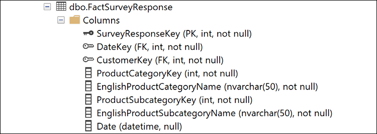
Figure 13.33: dbo.FactSurveyResponse columns in the AdventureWorksDW2019 database
Ensure that you have a data gateway running that is compatible with Power Automate. See Chapter 1,Configuring Power BI Tools for installation instructions.
In this recipe, an on-premises data gateway is used to support a Power BI streaming dataset from an on-premises SQL Server database table via Power Automate. Per previous chapters the same gateway that supports Power BI refresh processes and live connections or DirectQuery models can also be used for Power Apps and Power Automate. Depending on the workloads generated by these different activities and applications, and based on gateway resource monitoring, it may be necessary to isolate Power Apps and Power Automate to a dedicated on-premises gateway or, in the future, add a server to a high-availability gateway cluster.
How to do it...
To implement this recipe, do the following:
Open a workspace in the Power BI service and click on the New button in the top menu bar.
Figure 13.34: New options for a workspace in the Power BI service
Select Streaming dataset, click the API icon, and click the Next button.
Configure the streaming dataset to align with the columns and data types of the FactSurveyResponse table.
Figure 13.35: Streaming dataset configuration
Enter a Dataset name, enable the Historic data analysis setting, and click the Create button.
Copy the Push URL value and click the Done button.
In the Start from blank area, click Scheduled cloud flow.
Provide a Flow name, set the workflow to Repeat every 5 Minute, and then click the Create button.
Figure 13.36: Creating a Power Automate workflow
On the design screen, click New step.
Search for SQL Server and in Actions choose Get rows (V2).
Figure 13.37: Get rows SQL Server action in Power Automate
Enter in the connection information for the SQL Server and then click the Create button. For the gateway to appear, the connection information must match a data source configured on the gateway.
Figure 13.38: SQL Server connection information in Power Automate
Configure the Get rows (V2) step:
Figure 13.39: Configuration of the SQL Server Get rows (V2) step in Power Automate
Click the New step button.
Search for Power BI and choose Add rows to a dataset (Preview).
Configure the Add rows to a dataset (Preview) step for the Workspace and Dataset created previously.
Choose RealTimeData as the Table and configure the columns for the dataset.
Figure 13.40: Configuration of the Add rows to a dataset step in Power Automate
Click the Save button when complete.
Click on My flows and Run the workflow.
Monitor the flow by clicking on the Flow Runs Page link and waiting for the flow to complete.
Open a new Power BI Desktop file.
Click Get data and choose Power BI datasets.
Select the Customer Survey Responses dataset and click the Create button.
Create a simple visual that counts the rows in the dataset.
In a production scenario, this recipe would need to be modified such that each run of the Power Automate flow does not duplicate the rows already present in the Power BI dataset.
How it works...
When historical data analysis is enabled for a streaming dataset in the Power BI service, the dataset created is both a streaming dataset and a push dataset. As a push dataset, a database and table for the dataset are created in the Power BI service allowing Power BI report visuals and functionality to be created from this table. Without historical data analysis enabled (the default), the dataset is only a streaming dataset. Power BI temporarily caches the data but there is no underlying database, and thus the only method for visualizing this data is via a real-time streaming dashboard tile.
Power Automate flows are conceptually similar to the control flow interface for SQL Server Integration Services (SSIS) packages. Complex logic can be added to Power Automate workflows via branching conditions, scopes, and looping constructs. Power Automate is designed for self-service scenarios and business power users. Power Automate utilizes Azure Logic Apps, a cloud-based integration service that is more oriented toward developers and enterprise integration scenarios.
The run history of the flow, including successful and unsuccessful executions, is available by clicking on the flow name in the My Flows area of the Power Automate website. Additionally, the My Flows page specific to the given flow allows for adding owners, viewing connections, editing the flow, and turning the flow off.
There's more...
In addition to Power Automate, Power Apps also has integrations with Power BI. To see how this integration works, perform the following steps:
The Microsoft Power Platform includes Dataverse, what was formerly called the Common Data Service (CDS). Dataverse stores business data securely in the cloud and allows you to manage the data used by business applications. Dataverse stores data in tables and includes base tables for common scenarios but also allows the creation of new, custom tables. Dynamics 365 applications such as Dynamics 365 Sales, Dynamics 365 Talent, and Dynamics 365 Customer Service store data natively in Dataverse and in addition, Power Apps can be used to build applications against this core data without the need for integration. Finally, Dynamics 365 Business Central and Dynamics 365 Finance and Operations also have native integrations with Dataverse.
This recipe demonstrates how to use Power BI with Dataverse and Dynamics 365.
Getting ready
To prepare for this recipe, follow these steps:
If you have not already done so, configure a connection to your AdventureWorksDW2019 database in your data gateway. See Chapter 12,Deploying and Distributing Power BI Content for details.
In the left-hand navigation pane, click on Environments.
In the ribbon area, click + New. This opens a New environment pane on the right-hand side of the page.
Figure 13.49: Power Platform admin center
In the New environment pane, enter a Name for the environment, choose a Type (either Production, Sandbox, or Trial), and choose a Region. Additionally, toggle Create a database for this environment to Yes and click the Next button at the bottom of the pane.
Choose a Language and Currency. Provide a URL if desired.
Toggle Enable Dynamics 365 apps to Yes.
Click the dropdown for Automatically deploy these apps and check all the boxes.
Click the Save button at the bottom of the pane.
Click the environment and note the Environment URL.
You are now ready to complete this recipe.
How to do it…
To implement this recipe, use the following steps:
Navigate to https://powerapps.com and switch to the new environment created in Getting ready. The current environment is located in the upper-right corner.
In the left-hand navigation, expand Data and click Dataflows.
Click on the Create a dataflow button and choose Start from blank.
Provide a Name for your dataflow like Customers and click the Create button.
Choose SQL Server database.
Enter the connection information for your on-premises AdventureWorksDW2019 database.
Choose your gateway from the dropdown for On-premises data gateway.
Enter your authentication information and click the Next button.
Select the DimCustomer table and click the Transform data button.
Expand the DimGeography column for the following columns and uncheck Use original column name as prefix:
City
StateProvinceName
EnglishCountryRegionName
PostalCode
Click the Next button.
Select Load to existingtable and choose Contact as the Table display name.
Create the following mappings:
City = Address1_City
EnglishCountryRegionName = Address1_Country
AddressLine1 = Address1_Line1
AddressLine2 = Address1_Line2
PostalCode = Address1_PostalCode
StateProvinceName = Address1_StateOrProvince
Phone = Address1_Telephone1
YearlyIncome = AnnualIncome
BirthDate = BirthDate
FirstName = FirstName
Title = JobTitle
LastName = LastName
TotalChildren = NumberOfChildren
Phone = Telephone1
With all other columns set to (none), click the Next button.
Leave the default for Refresh manually and click the Create button.
A refresh will start automatically, allow the refresh to complete.
Create a new Power BI Desktop file
Choose Get data and then Dataverse.
Enter the Environment URL from Step 10 of Getting started.
Sign in and click the Connect button.
Choose Contact in the Navigator and click the Load button.
Create a simple report visual to display the contacts loaded into the Dataverse environment:
Figure 13.50: Customers in the Dataverse environment
Figure 13.50 shows customer locations loaded into the Dataverse.
How it works…
Power Apps dataflows use the same Power Query technology used by Power BI. These dataflows can ingest data from many different sources, including on-premises sources via the data gateway and cloud-based sources as well. Once data is imported into Dataverse, this data can be accessed by Power BI either via Import or DirectQuery.
It is important to point out that Power Apps and Power Automate can also natively access data stored in a Dataverse environment.
There's more…
In addition to the Dataverse, Power BI has native integration with Dynamics 365 applications, allowing Power BI dashboards to be displayed within Dynamics 365 applications. To demonstrate this functionality, do the following:
In the left-hand navigation pane, click on Environments
Click on the environment created in this recipe
Click on the link for the Environment URL to open the environment
Select the gear icon in the upper-right corner and choose Advanced Settings
From the Settings dropdown in the upper left, select Administration:
Figure 13.51: Dynamics 365 settings
Select System Settings
Click the Reporting tab and set Allow Power BI visualization embedding to Yes
Click the OK button
Open the Sales Hub app for the environment and click on Dashboards
Select New and then Power BI Dashboard
Sign in to Power BI if necessary
Select a Workspace and a Dashboard and click the Save button
Select New and then Dynamics 365 Dashboard
Choose a layout and then click the Create button
Click the Add a Power BI tile to the dashboard icon:
Figure 13.52: Add a Power BI tile to the dashboard icon in Dynamics 365
Choose a Workspace, a Dashboard, and a Tile and then click the OK button
Provide a Name for the dashboard and click Save and then click Close
Power BI dashboards and tiles continue to exhibit their link behavior to the underlying report. Clicking on a report tile opens the underlying report and this report is interactive, meaning that clicking on visuals will cross filter other visuals in the report exactly the same as if viewing the report in the Power BI service.
Connecting Dynamics 365 Finance and Operations and the Power Platform
Power BI is part of Microsoft's Power Platform family of products. The Power Platform includes Power BI, Power Apps, Power Automate, and Power Virtual Agents. However, the Power Platform is also part of a larger family of products, Microsoft Business Applications. Microsoft Business Applications are applications built around Dynamics 365 for Sales, Dynamics 365 Business Central, and Dynamics 365 Finance and Operations. Microsoft actually breaks down Business Applications into the following:
Microsoft Power Platform
Customer Service
Field Service
Finance
Marketing
Operations
Commerce
Human Resources
Sales
However, note that Customer Service, Field Service, Marketing, Commerce, Human Resources, and Sales are all built around the Microsoft customer relationship management (CRM) system, which used to be called Microsoft CRM. The extensible Microsoft CRM system, sometimes called XRM, is actually the heart of Dataverse. The Finance and Operations applications refer to the enterprise resource planning (ERP) applications, either Dynamics 365 Finance and Operations or Dynamics 365 Business Central. Note that Dynamics 365 Finance and Operations is built from Dynamics AX (Axapta) and Dynamics 365 Business Central is built from Dynamics NAV (Navision). Dynamics GP (Great Plains) did not make the transition to the cloud.
The Power Platform admin center provides a central location that is built for integrating the various products in the Microsoft Business Applications portfolio. This also includes powerful data integration features that allow administrators to integrate data from many different environments into Dataverse environments. Similar to dataflows, these data integration projects facilitate central control of data management policies and the flow of business information.
This recipe demonstrates how to use the Power Platform admin center to create a data integration project that synchronizes Dynamics 365 Finance and Operations data with a Dataverse environment and then builds a Power BI report from that data.
In the left-hand navigation pane, click on Environments.
In the ribbon area, click + New. This opens a New environment pane on the right-hand side of the page.
In the New environment pane, enter a Name for the environment, choose a Type (either Production, Sandbox, or Trial), and choose a Region. Additionally, toggle Create a database for this environment to Yes and click the Next button at the bottom of the pane.
Choose a Language and Currency. Provide a URL if desired.
Toggle Enable Dynamics 365 apps to Yes.
Click the dropdown for Automatically deploy these apps and check all the boxes.
Click the Save button at the bottom of the pane.
Click the environment and note the Environment URL.
Click the Environment URL to open the environment.
Click the gear icon in the upper-right corner and select Advanced Settings.
Click Settings and then Security.
Select Teams.
Check the box next to the default team and select MANAGE ROLES.
Check the box for System Administrator and click the OK button.
How to do it…
To implement this recipe, use the following steps:
Navigate to https://powerapps.com and switch to the new environment created in Getting ready. The current environment is located in the upper-right corner.
Expand Data and choose Connections.
Click New connection.
Search for Dynamics and add a Fin & Ops Apps (Dynamics 365) connection.
Repeat Steps 3 and 4 to add a Dataverse connection and a Dynamics 365 (deprecated) connection.
Under the Data heading, now choose Tables.
Switch to the All view and search for warehouse.
Click the Warehouse table.
Click Addcolumn.
Add a City text column.
Click Save Table in the lower-right corner.
Navigate to the Power Platform admin center.
Click on Dataintegration.
Click New connection set.
Provide a descriptive value for Connection set name.
For the First app connection, choose your Finance and Operations apps connection created previously and select the correct environment.
For the Second app connection, choose Dynamics 365 for Sales and select the environment created in this recipe. Note that at the time of writing, Dynamics 365 for Sales is the correct connection type. The legacy Common Data Service connection type does not work and the new Dataverse connection type does not appear in the list of available applications. In the future, the Dataverse connection type will likely be the correct choice.
Select the correct organization, such as USMF for Finance and Operations apps, and the environment name for the Dynamics 365 for Sales organization.
Click the Save button.
Click Newproject.
Provide a Project name such as Warehouse Sync.
Click Choose an existing connection set and select the connection set created previously.
Click Choose template, select the Warehouses (Fin and Ops to Field Service) template, and click the OK button.
Select the organization pair under Organizations and click the Create button.
Click the Warehouse Sync project.
Click Refresh tables.
Under the Map column, click the > icon.
Delete any mappings with a Destination of None.
Click Add mapping.
Add a mapping from PRIMARYADDRESSCITY to the City column created previously.
Figure 13.53: Warehouse sync sources and destinations
Click Save.
Click the project name in the breadcrumb.
Click Run project.
Click the Execution history tab and wait for the synchronization to complete. There should be 31 Upserts.
Create a new Power BI Desktop file.
Choose Get data and then Dataverse.
Enter the Environment URL from Step 9 of Getting started.
Sign in and click the Connect button.
Choose msdyn_warehouse in the Navigator and click the Load button.
Create a simple report visual to display the warehouses loaded into the Dataverse environment.
Save and publish the report to the Power BI service.
Open the report in the Power BI service and pin the report visual to a dashboard:
Figure 13.54: Warehouses in the Dataverse environment
Figure 13.54 shows the location of warehouses from Dynamics 365 Finance and Operations loaded into Dataverse.
How it works…
While provisioning the environment, you are given the option to either create a database or not. You might choose to not create a database if the environment is to be used solely for Power Apps and Power Automate development with source data coming from somewhere other than the Dataverse environment. By creating the Dataverse environment with a database and checking the box to Deploy Dynamics 365 apps to Yes, additional tables are added to the environment to support the chosen applications.
It is important that you set the role for the default team to System Administrator or System Customizer. By default, the team created as part of the provisioning process has no rights within the system while the user that created the environment is given the System Administrator role, among others. However, the synchronization performed by the connection sets, projects, and tasks currently uses the team permissions, not the user permissions, when writing to the Dataverse environment.
Creating a data integration project consists of three tasks, creating connections, creating a connection set, and finally creating a project that contains the tasks to perform. A connection simply holds the authentication credentials for a data source, similar to defining a data source connection in Power BI (data source settings). A connection set simply defines a source and destination system. Unlike Power BI where the destination is always the Power BI data model, data integration projects can synchronize data between any two source systems. Finally, a project defines the tasks to be performed during data integration. The tasks hold the mappings between columns in the source and destination systems.
The data integration projects created in the Power Platform admin center leverage the same Power Query technology as Power BI and dataflows. This can be seen by selecting the task in the data integration project created in this recipe and then selecting Advanced query and filtering. The familiar Power Query editor interface is shown, including access to the Advanced Editor for the direct insertion of M code. This Advanced query and filtering interface can be used to further refine the source data query, such as the removal of unnecessary columns, to improve the overall efficiency of the data source query or perform required transformations.
This chapter highlighted powerful integration points between Power BI, SSRS, Analysis Services, Excel, PowerPoint, Power Apps, Power Automate, Dataverse, and Dynamics 365. This included connecting Power BI to Analysis Services, leveraging DAX as a query language to support custom reports in Excel, pinning reporting service visuals to Power BI dashboards, and utilizing cube formulas to build templates or scorecard report layouts. Additionally, an example was provided of designing an automated workflow with Power Automate to push data from a relational database to a streaming dataset in the Power BI service, thus delivering real-time visibility to source data changes via common Power BI visualization and data alert capabilities.
Subscribe to our online digital library for full access to over 7,000 books and videos, as well as industry leading tools to help you plan your personal development and advance your career. For more information, please visit our website.
Why subscribe?
Spend less time learning and more time coding with practical eBooks and Videos from over 4,000 industry professionals
Learn better with Skill Plans built especially for you
Get a free eBook or video every month
Fully searchable for easy access to vital information
Copy and paste, print, and bookmark content
Did you know that Packt offers eBook versions of every book published, with PDF and ePub files available? You can upgrade to the eBook version at www.Packt.com and as a print book customer, you are entitled to a discount on the eBook copy. Get in touch with us at customercare@packtpub.com for more details.
At www.Packt.com, you can also read a collection of free technical articles, sign up for a range of free newsletters, and receive exclusive discounts and offers on Packt books and eBooks.
Other Book You May Enjoy
If you enjoyed this book, you may be interested in these other books by Packt:
Microsoft Power BI Quick Start Guide. – Second Edition
Devin Knight
Mitchell Pearson
Bradley Schacht
Erin Ostrowsky
ISBN: 978-1-80056-157-1
Connect to data sources using import and DirectQuery options
Use Query Editor for data transformation and data cleansing processes, including writing M and R scripts and dataflows to do the same in the cloud
Design optimized data models by designing relationships and DAX calculations
Design effective reports with built-in and custom visuals
Adopt Power BI Desktop and Service to implement row-level security
Administer a Power BI cloud tenant for your organization
Use built-in AI capabilities to enhance Power BI data transformation techniques
Deploy your Power BI desktop files into the Power BI Report Server
Packt is searching for authors like you
If you're interested in becoming an author for Packt, please visit authors.packtpub.com and apply today. We have worked with thousands of developers and tech professionals, just like you, to help them share their insight with the global tech community. You can make a general application, apply for a specific hot topic that we are recruiting an author for, or submit your own idea.
Share Your Thoughts
Now you've finished Microsoft Power BI Cookbook, Second Edition, we'd love to hear your thoughts! If you purchased the book from Amazon, please click here to go straight to the Amazon review page for this book and share your feedback or leave a review on the site that you purchased it from.
Your review is important to us and the tech community and will help us make sure we're delivering excellent quality content.
Do you like to read on the go but are unable to carry your print books everywhere? Is your eBook purchase not compatible with the device of your choice?
Don’t worry, now with every Packt book you get a DRM-free PDF version of that book at no cost.
Read anywhere, any place, on any device. Search, copy, and paste code from your favorite technical books directly into your application.
The perks don’t stop there, you can get exclusive access to discounts, newsletters, and great free content in your inbox daily